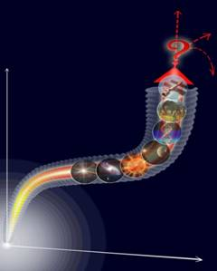
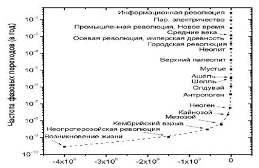

{kind=link}

Страницы авторов "Тёмного леса"
Пишите нам! temnyjles@narod.ru
МОСКВА
Рецензенты:
д.и.н. А.В. Коротаев;
д.псих.н., чл.-корр. РАН В.Ф. Петренко;
д.филол.н. С.В. Прожогина;
д.филос.н. Е.Л. Скворцова
Публикуется в авторской редакции
Назаретян А.П.
Н 19 Глобальное прогнозирование в свете Мегаистории и синергетики. Очерки истории будущего. - М.: ИВ РАН, 2018. - 260 с.
ISBN 978-5-89282-838-3
Специальные исследования, расчёты и экстраполяционные оценки демонстрируют, что в текущем веке история человечества вступает в фазу полифуркации, за которой может последовать либо смена векторов планетарной эволюции, либо её переход к качественно новым циклам. В Очерках исследованы аттракторы и сценарии дальнейшего хода мировой истории, а главное - то, как зависит перспектива Земной цивилизации от деятельности нынешних поколений. Обсуждаются угрожающие симптомы в динамике современной геополитики и политического мышления и в этом контексте - возможные пути решения некоторых международных проблем. Предлагается проект образовательной программы, способствующей оптимизации мировоззренческих и смысловых ориентиров, свободных от исконного деления людей на <своих> и <чужих>.
(c) Назаретян А.П.
(c) Институт востоковедения РАН, 2018
Внуку, которого я называю Чёрный Джек, - творцу космической цивилизации?
Автор благодарит титульных рецензентов, а также А.В. Будникова, А.А. Воронцову, С.А. Кобзарь, Ю.В. Любимова, И.Р. Миклашевского, А.А. Пинкина, О.В. Романчук, А.В. Сарабьева, И.В. Федулова, за помощь в процессе подготовки и публикации книги.
Эта книга - продолжение серии работ автора, посвящённых теме эволюционных векторов и перспектив планетарной цивилизации [Назаретян 1991, 1996, 2004, 2015], - выстроена в форме взаимно адаптированных последовательных очерков, отражающих статьи 2013-2018 годов в журналах "Вестник Российской Академии Наук", "Вопросы философии", "Вопросы психологии", "Общественные науки и современность", "Век глобализации", "Историческая психология и социология истории", а также их доработанные версии в англо-, испаноязычных, японских и китайских изданиях. Повторы по возможности сведены к минимуму, но лейтмотивом остаются результаты долгосрочных расчётов, показывающих, что XXI век, весьма вероятно, ознаменуется глобальным историческим переломом, который так или иначе определит не только судьбу современной цивилизации, но и итоги миллиардов лет эволюции на Земле.
Очерки касаются почти исключительно концептуальных вопросов. Опыт оперативной работы по прогнозированию и предотвращению локальных кризисов представлен в публикациях [Назаретян 2005; Молчанова, Назаретян, Исмаилов 2016]. Не все случаи и детали такого опыта за самые последние годы могут быть изложены подробно, так как заказчики работ, по понятным причинам, возражают против обнародования конфиденциальной информации.
В заключительном очерке представлен проект международной учебной программы, нацеленной на расширение базы планетарного мышления, отвечающего, по мнению автора, требованиям текущего момента мировой истории.
В Приложении приведена "Записка" П.Н. Дурново (с кратким комментарием) как блестящий и, по-видимому, первый в мировой практике образец современной методологии прогнозирования.
Искусство политика состоит в том, чтобы предсказать, что произойдет завтра, что через неделю, что через месяц, а потом убедительно объяснить, почему это не произошло.
Уинстон Черчилль
У человека не больше шансов вырваться из Настоящего, чем у рыбы, выпрыгнувшей из воды, - взмыть в небо.
Арнольд Тойнби
Позвольте же вас спросить, как же может управлять человек, если он не только лишён возможности составить какой-нибудь план хотя бы на смехотворно короткий срок, ну, лет, скажем, в тысячу, но не может ручаться даже за свой собственный завтрашний день?
М.А. Булгаков
В 1798 году вышло в свет первое издание ставшего впоследствии знаменитым труда "Опыт о законах народонаселения". Томас Мальтус доказывал, что население увеличивается в геометрической прогрессии, а пищевые ресурсы - в арифметической прогрессии и, следовательно, Англию ждёт голод. За прошедшие с тех пор более двух столетий количество людей, как в Великобритании, так и во всём мире возросло почти на порядок, а массовый голод случался гораздо чаще по сугубо политическим и криминальным (войны, блокады, репрессии, коррупция), нежели по демографическим или экологическим причинам.
Вообще-то в последнем прижизненном издании книги мудрый Мальтус допустил теоретическую возможность преодолеть выявленную им тенденцию за счёт развития науки и технологий, хотя полагал это маловероятным. Его эпигоны до сих пор не замечают ни высказанной учителем оговорки, ни достоверно установленных позже свидетельств того, что перенаселение в прошлом не раз угрожало благополучию отдельных регионов и человечества в целом и оборачивалось трагедиями. И что именно последовательное совершенствование производственных технологий (вкупе с изменениями в психологической и организационной сферах) обеспечило рост населения на протяжении тысячелетий...
В XIX веке европейцы с тревогой наблюдали, как улицы растущих городов погрязают в лошадином навозе, и многие учёные усматривали в этой тенденции главную проблему обозримого будущего. Герберт Уэллс писал, что через пятьдесят лет улицы Лондона утонут в навозе "до второго этажа", а практичный Д.И. Менделеев обдумывал возможность использования навоза в промышленных масштабах. Уже существовали паровозы, и даже была изобретена телега на паровой тяге, однако последняя оказалась слишком неуклюжей и не могла (как, конечно, и паровоз) конкурировать с гужевым транспортом на городских улицах. А потом по улицам поехали автомобили, и вместо избытка навоза пришлось иметь дело с неприспособленностью дорог, с выхлопными газами и прочими совсем новыми проблемами.
Тогда же, в середине и второй половине XIX века, Карл Маркс предрекал неуклонную пролетаризацию общества, относительное и абсолютное обнищание, отчуждение и дегуманизацию труда и как следствие прогрессирующего обострения классовой борьбы - захват власти промышленным пролетариатом. Его ближайший сподвижник Фридрих Энгельс даже детализировал схему победоносного шествия пролетарской революции: "Немец начнёт, француз продолжит, англичанин закончит", - а все прочие страны (мировая периферия) уже автоматически устранят частную собственность по примеру лидеров.
Добавим, что Энгельс, воистину стратегический мыслитель, не ограничил себя ближайшими столетиями. Как многие его современники, он был убеждён, что наука близка к исчерпывающему знанию о законах природы и общества. Стало быть, кроме революционного перехода к коммунизму, ничто радикально не может измениться ни в технологии, ни в мышлении, ни в природе. В предисловии к "Диалектике природы" подробно рассказано, как "через сотни миллионов лет" счастливая жизнь людей при совершенном общественном устройстве "с железной необходимостью" сменится "нисходящей ветвью" истории: Солнце станет гаснуть, и жизнь на Земле, лишившись энергетической подпитки, постепенно иссякнет.
Похоже, это был своеобразный рекорд по интеллектуальным прыжкам в длину - конечно, если забыть о тогда ещё очень немногих отчаянных мыслителях, рассуждавших, не размениваясь на цифирь, о "вечном" прогрессе за счёт овладения космическим пространством. Рекорд продержался добрую сотню лет, пока новый для себя вид спорта не освоили профессиональные астрофизики. Там уже счёт пошёл на числа с непечатным количеством нулей, рядом с которыми энгельсовы сотни миллионов лет - просто детский срок. Астрофизические прогнозы часто также затрагивают судьбу res cogitans (мыслящей субстанции), а потому они непременно станут предметом нашего обсуждения. Что же касается Энгельса, то этот, как и прочие его прогнозы, построенные на вере в завершённость научного знания и, соответственно, исключавшие качественное развитие, остался образцом бескрылой футурологии...
На пыльных тропинках далёких планет останутся наши следы.
...И на Марсе будут яблони цвести.
Из советских песен 1960-х годов
Спустя несколько десятилетий после смерти авторитетнейшего философа и обществоведа советские юноши, заставшие полёт человека в космос, с недоумением читали его рассуждения о далёком будущем. Теперь уже в газетах писалось, что лет через двадцать на Луне будут построены кардиологические санатории для отдыха сердечной мышцы в условиях низкой гравитации. По радио ежедневно исполняли песни о близких космических путешествиях, и будущие мамы видели своих не рождённых ещё сыновей за штурвалами звездолётов. В глазах их внуков надежды на инопланетные приключения выглядели таким же курьёзом, как и прогноз о неизменных условиях человеческого существования через сотни миллионов лет...
Напротив, среди граждан западных стран в 1960-е годы были распространены катастрофические ожидания грядущей ядерной войны, которая логически последует за двумя предыдущими мировыми войнами и положит конец существованию человечества. Власти СССР бдительно оберегали своих сограждан от алармистских фильмов и прочих произведений загнивающей буржуазной культуры. Признавая потенциальную возможность атомного коллапса, наши пропагандисты указывали на три "оплота мира", сводящие угрозу войны к минимуму. Такими гарантами служили Советский Союз, социалистический лагерь и международное рабочее движение, призванное завершиться мировой революцией и тем самым устранить во`йны навсегда.
Сегодня мы знаем, что ядерной войны в XX веке удалось избежать, хотя в локальных конфликтах, сопровождавших "мирное соревнование двух систем", погибли десятки миллионов людей, а международное рабочее движение и его субъект - промышленный пролетариат - растворилось в "информационном обществе". Потерпели крах и большинство коммунистических режимов.
Человечество не погибнет в атомном кошмаре - оно задохнётся в собственных отходах.
Нильс Бор
Для того чтобы человечество не нарушало хрупкого баланса ресурсов, население планеты при нынешнем уровне технологий должно быть уменьшено раз в десять... А такое, вероятнее всего, невозможно. Значит, предсказанная Мальтусом катастрофа в той или иной форме неизбежна.
Н.Н. Моисеев
С конца 1960-х годов, когда катастрофические ожидания ядерной войны несколько улеглись, "футурологи" стали задумываться над новыми сюжетами. Под мощным интеллектуальным влиянием Римского клуба специалисты по энергетике, экологии и медицине состязались в расчётах того, на сколько десятилетий ещё хватит нефти, газа, чистой воды, пахотной почвы и прочих трудновозобновимых ресурсов при их растущем потреблении. Пробудившийся призрак Мальтуса принялся бродить по Европе и по всему миру. Земля была уподоблена космическому кораблю со строго ограниченными запасами, исчерпание которых приведёт к неминуемой гибели его пассажиров. Концепции "устойчивого развития" (sustainable development) чаще всего походили на врачебные рекомендации по продлению агонии обречённого пациента, причём акцент во многих версиях ставился на необходимости форсированно сократить население планеты.
"Аист обогнал плуг", - писал автор бестселлера "Популяционная бомба" Пол Эрлих, и призывал к "контрольному отстрелу аистов" в виде принудительной стерилизации мужчин, имеющих двух и более детей. В 1968 году одна американская газета посвятила целую полосу своеобразной "социальной рекламе". На странице помещена фотография младенца, а под ней текст: "Ребёнок - угроза миру" - и... подписи всемирно известных учёных. "Если человек угрожает природе, то надо уничтожить человека" - откровенничали экологи-экстремисты. А уже в 2005 году вышла в свет книга природолюбивого философа Дэвида Бенатара с красноречивым заглавием: "Лучше бы нас никогда не было".
Насчёт добровольной самоликвидации человечества, принудительной стерилизации и контрольного отстрела господа, конечно, погорячились, но сам вывод о губительной перенаселённости планеты ставил на повестку дня оперативные вопросы: как, на сколько и кого следует сокращать? Уважающие себя учёные не обращались к войне как средству депопуляции, а в ряде случаев даже оговаривали, что это средство "недостаточно эффективно". Поэтому в данном пункте концепции либо зияли красноречивые пустоты, либо авторы откровенно признавали проблему неразрешимой и потому мировую цивилизацию - обречённой. Проекты, связанные с ростом образования и благосостояния в целях снижения рождаемости в Африке, Азии и Южной Америке, откладывали решение проблемы в долгий ящик - а ведь экологи предписывали радикальную и срочную депопуляцию. Отчаянные головы предлагали самые экзотические проекты. Например, биохимически регулировать пол зародышей так, чтобы мальчики и девочки рождались в соотношении 9 к 1 - тогда в следующем поколении рождаемость кардинально уменьшится. Или подмешивать в пищу, в воду, даже распылять в воздухе вещества, многократно снижающие вероятность зачатия.
Казалось бы, при нерешённости первого, "технического" вопроса следующие два становятся пустыми абстракциями. Но как раз они вызвали более острые противоречия.
Учёные труды, газетно-журнальные публикации и речи политиков наполнились различными вариантами идеи "золотого миллиарда". Приводились также расчёты, доказывающие необходимость десятикратного, стократного и даже шестисоткратного (!) уменьшения населения Земли.
За счёт кого же? Поначалу само собой разумелось, что необходимо срочно сокращать бурно растущее население "третьего мира". Но "на местах" нашлись доморощенные умники, которые, признавая важность глобальных депопуляционных мер, доказывали, что это касается соседей по планете, тогда как в их собственной стране соотношение населения и ресурсов "соответствует концепции золотого миллиарда".
Впрочем, и идеологически беспристрастные учёные испытывали нормальную неловкость от самой постановки вопроса о спасении планеты путём её избирательного освобождения от "человеческого груза". В пику адептам эко-расистских теорий были приведены расчёты, демонстрирующие, что средний гражданин США потребляет в 150 раз больше энергии, чем житель Боливии, Эфиопии или Бангладеш, и на протяжении жизни наносит в 280 раз больший ущерб природе, чем житель Чада или Гаити, и т.д. Не следует ли из этого, что для сохранения ресурсов Земли целесообразнее было бы "избавить" её от населения развитых стран?..
Это пример того, как польза от линейного прогноза, быстро превращающегося в газетную сенсацию, перекрывается издержками в виде нагнетания истерии, взаимных подозрений, идеологической и политической напряжённости. Такую же роль играли и разрекламированные публикации американских политологов в конце 1980-х и начале 1990-х годов. Сначала Френсис Фукуяма уведомил публику, что очень скоро, с поражением коммунизма и победой либеральной демократии во всём мире, наступит преждевременно объявленный ещё Гегелем "конец истории" - будет достигнуто идеальное состояние общества, в котором перестанут происходить существенные события и... наступит "невыносимая скука". Через четыре года Самюэл Хантингтон облил затосковавших в эйфории поклонников Фукуямы ушатом холодной воды. Оказалось, дефицит событий человечеству не грозит. Напротив, оно в скором будущем окончательно разделится по религиозному основанию на несколько враждебных друг другу "цивилизаций", войны между которыми и составят содержание мировых процессов.
Оба автора потом существенно уточнили, а то и радикально изменили взгляды. Однако их первоначально безальтернативные сценарии будущего успели, каждый по-своему, взбудоражить политические настроения...
Да простится нам лёгкая ирония по поводу великих и невеликих пророков прежних лет. Можно ведь сказать и иначе. Мальтус впервые концептуально зафиксировал и математически обосновал проблему, которая до него веками эмпирически решалась очень жестокими способами (во`йны, голод, уничтожение родителями "лишних" детей и т.д.). Маркс и Энгельс предвидели, что обостряющиеся классовые противоречия обернутся политическими революциями. Первые доклады Римскому клубу предвосхитили серию экологических катастроф и новых ресурсных дефицитов.
А можно вспомнить и факты поразительной прозорливости. В XIII веке (когда ещё в помине не было идеи или ценности технического прогресса!) философ Роджер Бэкон вообразил, как люди построят летающие повозки, движимые "неизречёнными силами, без каких-либо живых существ в упряжи". В середине XIX века Жюль Верн описал мир, в котором есть автомобили с керосиновыми двигателями, электрические счётные машины, цветные телевизоры и вертолёты. Он во многих деталях представил полёт на Луну, вплоть до габаритов корабля и даже места старта космонавтов (указанный им город во Флориде расположен в 150 километрах от мыса Канаверал). Правда, корабль отправлялся в космос при помощи огромной пушки.
Тогда же геолог Чарльз Лайель, дискутируя с оппонентами социального эволюционизма, предсказал ключевые технологические достижения на ближайшие полтора столетия. Историк и социолог Алексис де Токвиль смоделировал политические отношения в XX веке, угадал ведущих игроков (Россию и США) и даже психологические стили их активности на международной арене...
Но общим для всех прогнозов, оказавшихся на поверку более или менее правдоподобными, оставалось пренебрежение к такой стилистической фигуре, как условное придаточное предложение. Оно иногда использовалось в полемических целях ("если бы оппонент был прав... а на самом деле"), но практически никогда - в качестве методологического приёма.
Едва ли не все исторические концепции долгое время сходились на тезисе, избавляющем от излишних умственных усилий и служившем излюбленной отговоркой школьных учителей: "История не знает сослагательного наклонения". Хотя даже правоверные марксисты кляли почём зря придуманный Полем Лафаргом термин "экономический детерминизм" и дружно рассуждали о роли личности в истории, детерминистское миропонимание настолько впиталось в кровь и плоть обществоведов, что распространилось и на будущее. Мысль о вариативности событий, юмор и самоирония третировались как моветон, и слово "если" оставалось почти таким же неприличным в научном дискурсе, как выражение "если бы". Вследствие этого неписаного запрета суждения о будущем строились в форме не мягкого веера возможностей или паллиативных сценариев, а жёстких предсказаний. Которые, если отсечь приличествующую эпохе рационалистическую аргументацию, по жанру сильно тяготели к пророчеству.
Ко всем обозначенным выше вопросам мы будем возвращаться в следующих очерках. Пока же упоминание о них служит поводом обсудить, что такое прогнозирование и от чего зависит его достоверность.
Способность воспринимать и оценивать время не является приобретением человека, а получена им по наследству от его животных предков, и в основе этой способности лежат механизмы так называемого "опережающего отражения".
П.К. Анохин
Интуиция - дочь информации.
К.К. Платонов
Si fallor, sum (Если я ошибаюсь, значит, я существую).
Св. Августин
Прогнозирование (опережающее отражение; моделирование будущего) - имманентное свойство всех живых организмов, включая растительные. И уже растение рискует опасно ошибиться в прогнозе. Известный физиолог П.К. Анохин привёл наглядный пример. В разгар чересчур интенсивного "бабьего лета" садовые деревья раскрывают почки в ожидании грядущей весны. Опытный садовод знает, что надо срочно принимать меры по утеплению деревьев, иначе приближающиеся холода их погубят.
Биологическая эволюция сопровождалась совершенствованием отражательных процессов, и уже у высших животных различаются два параметра опережающего отражения: констатирующая модель (например, прогнозируется траектория движения потенциальной добычи) и план активного вмешательства в ход событий для достижения желаемой цели. Коллега Анохина, Н.А. Бернштейн, обозначил её как "модель потребного будущего".
Возрастание временно`го диапазона и детализации опережающего моделирования - существенный вектор не только биологической, но, как мы далее увидим, и социально-исторической эволюции. Определяются же эти способности соответствующими свойствами живой памяти, которая изначально представляла собой не пассивную фиксацию следов, а сложную операцию по переносу опыта в будущее; поэтому между глубиной памяти и горизонтом антиципации имеется не просто корреляционная, но тонкая причинная зависимость. На задачу прогнозирования функционально ориентированы все психические процессы - от элементарных ощущений до высших мыслительных процедур, причём иных средств заглянуть вперёд кроме экстраполяции наличного опыта не имеют ни растения, ни животные, ни люди. Добросовестные мистики также стремятся уловить связи между признаками ради предсказания событий, а шарлатаны используют опыт практической психологии (подчас кристаллизованный в блестящую интуицию) для манипуляции поведением людей. Один из аспектов манипулятивной техники - порождение текстов с такой высокой степенью неопределённости, что в них можно "вчитать" любые последующие события...
Идеи, овладев массами, превращаются в материальную силу.
Карл Маркс
Прогноз никогда не бывает нейтральным. Правилен он или неправилен, прогнозирующий анализ всегда вызывает побуждение к действию.
Карл Ясперс
С тех пор как прогнозирование превратилось в самостоятельную умственную деятельность с собственной мотивацией, его констатирующая и целеполагающая фазы отчётливо диверсифицировались. Но ещё ранее, в древнем каменном веке, обозначился исключительно человеческий механизм, который Роберт Мертон назвал "самоисполняющимся пророчеством" (self-fulfilling prophecy) - индивид или племя под суггестивным давлением предсказания бессознательно провоцирует ожидаемые события, часто весьма неблагоприятные для себя. Например, в этнографической литературе приводятся случаи, когда проклятие шамана приводило к смерти молодого здорового человека.
Врачам и психологам-клиницистам хорошо известно, что подобными эпизодами изобилует и наш просвещённый век. Не составляет секрета и влияние прогнозов на ход масштабных исторических событий. Это не только религиозно-мистические или эзотерические проекты, но и теории, представленные в научной форме. Само учение о всемирной пролетарской революции являет яркий пример такого мотивирующего прогноза. Хотя следует добавить, что марксистские, расистские и неомальтузианские модели будущего (и примеры их драматического воплощения) сыграли также и предостерегающую роль, помогая во многих случаях предотвратить худшие варианты развития событий. Скажем, опасение возможных пролетарских революций (особенно после драматических событий в России) побуждало правящие классы к эффективному поиску компромиссов между трудом и капиталом. Кошмарный опыт нацизма выработал у европейцев иммунитет к теориям расовой исключительности. А шокирующие расчёты, приведённые в первых докладах Римскому клубу, наложившись на наблюдаемые последствия техногенных катастроф, способствовали развитию экологического сознания как политических и экономических лидеров, так и широкой публики. Во всех этих случаях сработал противоположный эффект прогнозирования, о котором речь далее.
По происхождению своему "законы природы" суть ограничения, которые мы предписываем нашим ожиданиям.
Эрнст Мах
Утверждения историка являются (скрытыми) предсказаниями.
Артур Данто
Общение есть обобщение.
Л.С. Выготский
Мысль изречённая есть ложь.
Ф.И. Тютчев
Отмечая прогностическую ориентированность отражения в живой природе, обратим особое внимание на то, как эта целевая функция представлена в человеческом мышлении и в коммуникативно-семантическом пространстве социальной памяти.
Психологи и методологи науки почти независимо друг от друга заметили, что всякое обобщение - основа категоризации, осмысления мира и устойчивого человеческого контакта - содержит экстраполяционный компонент, даже если суждение относится явно к прошлому. "Наполеон умер 5 мая 1821 года" - утверждая это, мы подразумеваем, что любые документы, обнаруженные в будущем, не вступят в противоречие с данным утверждением, а иначе их придётся квалифицировать как подделки.
Чем выше уровень обобщения, тем легче просматривается его прогностический мотив. Формулируя на основании проведённых экспериментов и наблюдений некоторую закономерность, естествоиспытатель утверждает, что в последующем эксперименты (наблюдения) при заданных условиях приведут к аналогичному результату. А если такие-то параметры ситуации изменятся, то иным будет и результат. Устремлённость в будущее столь же глубоко закодирована в обобщении, как его социальная адресованность и его сослагательная подоплёка.
В действительности имеется вероятность того, что учёный смог отследить не все условия эксперимента и изменение одного из неучтённых параметров изменит картину. Когда выяснилось, что, вопреки интуитивному убеждению Исаака Ньютона, скорость распространения сигнала конечна, его универсальная механика превратилась в предельный частный случай релятивистской механики. После того как были продемонстрированы эффекты сверхпроводимости, пришлось внести дополнительные уточнения в формулировку закона Ома, связанные с температурой проводника и т.д. Во многих случаях уже сегодня нельзя исключить, что простой физический эксперимент дал бы иной результат в центре Галактики - при высоком скоплении гравитационных масс, - вблизи чёрной дыры или на ранних стадиях эволюции Вселенной. Показано, что современные экономические законы не срабатывают в обществах с "не-западным" менталитетом или находящихся в психологически возбуждённом состоянии, и совершенно неясно, насколько и как они могут сохраняться в перспективе.
Драматическая ограниченность всякого конечного опыта обозначена в эпистемологии как принцип неопределённости заблуждения. Этот принцип дезавуирует кантовскую демаркацию "относительной" и "абсолютной" истин постольку, поскольку в исторически конкретный срок мы неспособны выделить те аспекты модели, которые безоговорочно соответствуют любому будущему опыту.
Но, если бы исследователи, опасаясь неизбежной критики "из будущего", стали избегать потенциально всегда уязвимых выводов, то наука свелась бы к скучным протоколам лабораторных экспериментов и непосредственных наблюдений. В таком случае вероятность недостоверных утверждений значительно снизилась бы, хотя, строго говоря, не свелась бы к нулю, поскольку констатация, выраженная языковыми средствами, всё равно несёт в себе следы адресованного обобщения.
Пожелай сам Господь Бог исчерпывающе изложить знание даже о строго очерченном предмете в форме дискретного текста, ему для этого потребовалось бы бесконечное количество слов. Прибегнув же к чувственному образу, в котором мотивы обобщения и экстраполяции скрыты глубже, чем в конструкциях словесных, автор платит за это беспредельной вариативностью индивидуальных пониманий. Поэтому человеку не приходится уповать на небесное просветление, а формирование образов будущего, как и прошлого и настоящего, столь же потребно уму, сколь отмечено проклятьем исторической ограниченности...
Ничто не стареет так быстро, как будущее.
Станислав Лем
Упомянутые в начале очерка картины будущего выглядят по прошествии времени курьёзными из-за их линейности. В свою очередь, линейность обусловлена прежде всего доминирующим идеалом и критерием научности - ориентацией на "динамические" (не "статистические") детерминации. На эту методологическую установку накладывались ещё два решающих ограничения. Во-первых, краткость ретроспективной дистанции, из которой выводились экстраполятивные ожидания, т.е. наиболее яркая текущая тенденция переносилась в неопределённое будущее. Во-вторых, маломерность (недостаточная системность) аналитической модели: экстраполяция строилась на основании изолированных дисциплинарных знаний - по экономике, энергетике, демографии, экологии и т.д. И, в любом случае, теоретики дружно не жаловали всё, что относится к сфере "психологии".
Разумеется, самые выдающиеся умы были не в силах устранить указанные "ограничения", не располагая той масштабной (охватывающей почти 14 млрд лет), детальной и объёмной (демонстрирующей социоприродные, экономико-психологические и прочие связи) картиной прошлого, какую даёт современная наука. В сочетании же с методологической установкой эти ограничения вели к недооценке привходящих факторов, способных влиять на ход событий, и затемняли творческий характер эволюции. Отсюда и несвойственное живому прогнозированию жёстко "пророческое" содержание: образы будущего окрашивались в мрачные или в радужные тона, теряя исконно присущее им напряжение проблемности.
Но Психология - дама преехидная. Она посмеивается в платочек до тех пор, пока мы, забыв о ней, рассуждаем о прошлом и полученные выводы трудно подвергнуть попперовской процедуре "фальсификации". И хохочет до слёз при попытке без консультации с ней заглянуть хоть чуть-чуть вперёд. Действительно, в этом случае даже краткосрочные локальные прогнозы в сфере политики и экономики то и дело оказываются трагикомически провальными, подрывая престиж прогностической работы, а с ней и социальной науки вообще.
Со своей стороны, "идеалисты", склонные усматривать за историческими событиями преимущественно волевые решения выдающихся личностей, скептически относятся к научному прогнозированию - капризы гения непредсказуемы. Так образовалась печальная дилемма: либо "бездушные" прогнозы, либо "душевные" гадания. Впрочем, то же самое противоречие (между естественнонаучными и "гуманистическими" школами, аналитическими процедурами и "эмпатией") до сих пор будоражит и самоё психологическую науку.
Существенный прорыв в методологии комплексного прогнозирования связан с моделями самоорганизации (в разных странах они получили специфические интегративные названия: синергетика, теория диссипативных структур, теория аутопоэза, теория хаоса или теория сложности). По мере того как обнаруживались единые механизмы возрастания и сохранения сложности в системах различного уровня организации, удавалось установить и классифицировать основные угрозы устойчиво неравновесным процессам, т.е. механизмы обострения и преодоления кризисов. Используя универсальную модель, прогнозист включает в её контекст сведения о специфике исследуемой системы, о её состоянии и текущих тенденциях.
Пророк огорчает народ и власть, а лжепророк радует их.
Иезекииль
Господа! Если к правде святой Мир дороги найти не умеет - Честь безумцу, который навеет Человечеству сон золотой!
Пьер Беранже
Не бывает неразрешимых проблем, но бывают неудобные решения.
Александра Маринина
...И тогда мы сможем предсказывать всё, чем не можем управлять, и управлять всем, что не можем предсказывать.
Джон фон Нейман
В феврале 1914 года отставной российский министр, консерватор и монархист П.Н. Дурново подготовил секретную записку Императору с просьбой не ввязываться в войну с Германией (которая уже у многих была на устах), ибо это приведёт к краху Российской Империи. И с потрясающей достоверностью изложил, как разрушение державы будет происходить в случаях успешного и неуспешного хода событий на фронте. Рискну предположить, что это была первая в мировой практике и, безусловно, гениальная попытка сценарного моделирования, предвосхитившая синергетическую методологию, но, к несчастью, не нашедшая тогда достойного адресата.
Квинтэссенция системно-синергетического метода в том, что вариативные образы будущего возвращают ему исконно присущее живому прогнозированию "напряжение проблемности". При этом работа начинается построением линейных моделей, позволяющих отследить неизбежную в будущем фазу неустойчивости (кризис), связанную с исчерпанием ресурсов монотонного роста по тем или иным значимым параметрам. Такую фазу называют бифуркацией или, точнее, полифуркацией, поскольку за ней просматриваются несколько сценариев изменения в сторону одного из новых квазиустойчивых состояний - аттракторов. Заметим, даже в фазе неустойчивости с системой может произойти не "всё что угодно": число аттракторов всегда конечно и, как правило, невелико. Но после того как начались процессы в сторону одного из них, перейти к другому аттрактору "изнутри" системы уже практически невозможно.
Различают простые аттракторы, предполагающие изменения в сторону упрощения и деградации системы (чем обычно обеспечивается устойчивость метасистемы, элементом которой она является), и странные аттракторы. Последние суть устойчивые состояния на соразмерном (горизонтальный аттрактор) или на более высоком (вертикальный аттрактор) уровне неравновесия со средой, обеспеченные ростом внутренней сложности и "интеллектуальности" системы. Синергетика концентрирует внимание на факторах малозаметных и труднопредсказуемых (малые флуктуации), и вот здесь, если речь идёт о социальной системе, решающую роль играет психология в её многообразных проявлениях. Кроме того, в рамках синергетической модели, прогнозист обязан при описании оптимального сценария обозначить неизбежно сопряжённые с ним издержки (цена прогресса); поэтому даже относительно благоприятное развитие событий рассматривается как паллиатив.
Завершающий этап - практические проекты. Если удалось зафиксировать "странный аттрактор", то разрабатываются, во-первых, рекомендации по смягчению полифуркационной фазы за счёт сознательной подготовки. Во-вторых, программа действий, направленных на реализацию благоприятного сценария, включая готовность к необходимой "плате за успех". Если способов избежать катастрофы не найдено, то рассматриваются возможности смягчить её переживание и её последствия, а также максимизировать возможные позитивные последствия разрушения изучаемой системы для метасистемных процессов.
Далее остаётся самая малость - убедить себя и других в том, что действовать следует именно так, поскольку "синергетические" рекомендации, в отличие от утопий, почти всегда разочаровывают. В итоге прогнозист рискует оказаться в положении умненькой принцессы Кассандры, которую обиженный бог Аполлон лишил дара убеждения, садистски сохранив ей дар предвидения и превратив тем самым в городскую сумасшедшую. А Данте Алигьери и вовсе поместил прорицателей в Восьмой (предпоследний) круг ада.
Синергетика учит трезвому пониманию того, что "прогрессивное" решение всегда есть выбор меньшего из зол, и в последующих очерках мы не раз это продемонстрируем. В общем, грамотно выстроенный научный прогноз реализует альтернативный механизм "самоНЕисполняющегося пророчества" (self-NON-fulfilling prophecy), отсекая как алармистские, так и утопические установки. Например, конструктивно воспринятое предупреждение о возможном заболевании или развитии болезни служит не поводом к панике, а основанием для осознанного пересмотра жизненных тактик, сводящего угрозу к минимуму. Или помогает мужественно принять неизбежное, максимально использовав достоинства даже неблагоприятного сценария, а то и убежав в "сон золотой"...
Сказанное особенно важно при изучении глобальных процессов.
Мы, человечество, находясь в разгаре эволюционного кризиса, вооружены новым фактором эволюции - осознанием этого кризиса.
Маргарет Мид
За последние полстолетия тема глобальных кризисов, эволюционных тупиков и вопрос о том, есть ли у человечества будущее, сделались популярнейшей темой научных и околонаучных обсуждений. Строя прогнозные сценарии, мы постараемся максимально учесть те недочёты в методологии прогнозирования, которые отмечены выше.
Анализ событий в длительной исторической ретроспективе показывает, что люди многократно переживали тяжёлые кризисы и катастрофы, спровоцированные их собственной деятельностью, причём в ряде случаев такие кризисы и катастрофы приобретали глобальный характер. Более того, задолго до появления человека активность живого вещества провоцировала глобальные катастрофы, в результате которых погибли более 99% существовавших на Земле видов. Вместе с тем каждый раз в биосфере, а затем в антропосфере происходили неординарные трансформации, обеспечивавшие восстановление динамической устойчивости.
Исследуя механизмы сохранения и восстановления устойчивости, оборачивавшиеся "прогрессивными" изменениями природы и общества, мы сталкиваемся с парадоксальными обстоятельствами, которые в совокупности своей складываются в загадку существования.
Единственное нормальное состояние вселенной соответствует её "тепловой смерти".
Людвиг Больцман
Самое удивительное свойство этого мира в том, что он существует.
Альберт Эйнштейн
Мы можем... заключить, что необратимость проистекает из каких-то субъективистских допущений или "ошибок"... Тогда, будучи живыми существами, мы сами являемся своего рода "ошибками".
Илья Пригожин
С точки зрения строго классического естествознания, Вселенная, в которой мы живём и которую наблюдаем, не должна существовать. Она не должна была эволюционировать на протяжении миллиардов лет от более вероятных к менее вероятным (по термодинамическому критерию) состояниям, т.е. в сторону всё более сложных и устойчиво неравновесных систем. Значит, в ней не должны были появиться жизнь, общество, культура и личность. А если бы столь невероятно сложные системы и образовались вследствие случайных флуктуаций, они должны были быстро разрушаться, исключая длительный процесс прогрессивной эволюции. В итоге собственное существование выглядит для классического физика как досадное недоразумение ("своего рода ошибка"), нарушающее стройную естественнонаучную картину мира...
В XX веке загадка существования (человека, общества, природы) всё более обострялась. Накапливались свидетельства того, что не только культура, общество и живая природа, но и физическая Вселенная последовательно изменялась, причем в калейдоскопе многомерных изменений прослеживается удивительный и "странный" вектор - к живому веществу, к человеку, к информационной цивилизации (и куда-то далее?). Обилие неопровержимых свидетельств такого рода поставило естествоиспытателей перед необходимостью переосмыслить некоторые методологические основания.
Помощь, как часто бывает, пришла с неожиданной стороны.
Dubito, ergo cogito... Cogito, ergo sum (Сомневаюсь, значит, мыслю. Мыслю, значит, существую).
Рене Декарт
Известна старинная философская игра: солипсист доказывает, что другие люди и прочие предметы не существуют сами по себе, а являются лишь комплексами его ощущений. Если он последовательно защищает свой парадоксальный тезис, то доказать обратное очень трудно. Небезупречны и "осязаемые аргументы" типа удара палкой, ибо боль - это тоже субъективное переживание.
Логическая неуязвимость такой позиции издавна оценивалась как "позор философии", а материалисты и теперь стремятся просто её игнорировать. Ведь если недоказуема даже реальность близлежащего предмета, то суждения о природе звёзд и атомов, о жизни древних цивилизаций или динозавров - всё это и вовсе "интерпретации", построенные на косвенных доводах. Здесь уже не просто вопрос об исторической ограниченности и неполноте всякого формального знания - проблема верификации полностью лишается смысла.
Так возможно ли безоговорочно обосновать хоть какой-то правдоподобный тезис, оставаясь в рамках формальной логики? Оказывается, есть, по меньшей мере, один аргумент, от которого не может увернуться даже самый фанатичный солипсист, и такой аргумент был найден ещё в XVII веке. Задав вопрос: "А существуешь ли ты сам?", - оппонент разрушает позицию тотального скептицизма. Однозначно утвердительный, равно как однозначно отрицательный ответы лишают её внутренней последовательности (Почему ты уверен, что существуешь? А если нет, то чьи ощущения?). Выразив же по инерции сомнение и в собственном существовании, солипсист попадает в концептуальную ловушку, выраженную формулой Рене Декарта, приведённой в эпиграфе.
Вот из этого, казалось бы, досужего умственного баловства и выросли основания постнеклассического научного мировоззрения.
Cogito, ergo mundus talis est (Я мыслю, значит, таков мир).
Брандон Картер
Обнаружилось, что "Я существую" - это самое последнее, в чём способен усомниться мыслящий субъект, и единственное, в чём он может быть абсолютно уверен. Таким образом, факт собственного существования исследователя превращается в отправную точку фундаментальных научных построений и критерий их достоверности, на что и обратил внимание известный астрофизик Брандон Картер. Отсюда любая физическая (биологическая, социологическая и т.д.) теория, противоречащая факту моего нынешнего существования, по определению ложна или, мягче говоря, неполна и нуждается в дополнительных гипотезах.
Например, безуспешные попытки опровергнуть или хотя бы ограничить сферу применимости второго начала термодинамики (закона возрастания энтропии) породили популярную среди учёных шутку: "Термодинамика - это старая властная тётка, которую все недолюбливают, но которая всегда оказывается права". Закон возрастания энтропии - единственный известный из классической физики асимметричный закон, который поэтому считается основой необратимости. Проще говоря, сущность физического времени в том, что мир безвозвратно становится всё "хуже" - примитивнее, хаотичнее и однообразнее. И, следовательно, наше пребывание в этом мире следует признать абсолютно противоестественным и противозаконным!
По текстам XIX и начала XX века видно, что и тогда учёные испытывали когнитивный диссонанс из-за очевидной нестыковки между выводами физики, с одной стороны, и данными эволюционной биологии, антропологии и социологии - с другой. Но естественнонаучная парадигма заставляла мириться с подобными нестыковками, отдавая безусловный приоритет физическим наблюдениям и экспериментам: спасали ссылки на незамкнутость бесконечной стационарной вселенной и случайность локальных космических флуктуаций типа эволюции в Солнечной системе.
Естествоиспытатель XXI века, знакомый с обстоятельствами универсальной эволюции, уже не может довольствоваться отговорками такого рода. Для него загадка существования, загадка устойчивости и загадка эволюции сопряжены самым тесным образом.
Признавая фундаментальную роль законов термодинамики, он обязан соотнести их с данными о последовательных превращениях, ведущих от кварк-глюонной плазмы первых секунд существования Метагалактики к учёному, осмысливающему свои универсальные истоки. Астрофизикам приходится различать "термодинамическую стрелу времени" и "космологическую стрелу времени" и обсуждать методы их непротиворечивого согласования. Биофизики, биохимики и математики соревнуются в построении интегральных моделей, объясняющих механизмы спонтанного образования и сохранения сложных систем. Со своей стороны, биологи-эволюционисты, а также антропологи, социологи, психологи, искусствоведы и прочие "гуманитарии" примеряют их к собственным предметам и обогащают новым материалом. Фундаментальная наука, гносеологически и онтологически ориентированная на субъект знания, обретает как минимум два характерных антропоцентрических акцента: историзм и психологизм. Наряду с моделями самоорганизации, в ней выделилось интегральное направление - Универсальная (Большая) история или Мегаистория, - которое объединяет учёных всех специальностей, исследующих мега-тренды и механизмы эволюции.
Когда с изобретением искусственного оружия внезапно открылись новые возможности для убийства, прежнее равновесие между сравнительно слабым торможением агрессии и столь же слабыми возможностями убийства было резко нарушено.
Конрад Лоренц
Продолжим пример, выделив одну из граней загадки существования - сохраняющаяся на протяжении миллионов лет жизнеспособность рода Homo.
Биологи утверждают, что у животных сила торможения внутривидовой агрессии в норме пропорциональна естественной вооружённости ("ворон ворону глаз не выклюет") - это предохраняет популяции от самоистребления. Антропологи добавляют, что уже у далёких предков человека, начавших производить искусственные орудия, этот баланс был нарушен; следовательно, по законам природы, они были обречены на гибель. Наконец, из истории известно, что убойная мощь технологий последовательно возрастала от галечных отщепов Олдовайского ущелья (которыми Homo habilis разбивали друг другу черепа) до баллистических ракет с ядерными боеголовками. Между тем в совокупности эти справедливые утверждения явно противоречат тому факту, что автор и читатель этого текста появились на свет.
Работая в парадигме постнеклассической науки, мы не имеем права пренебречь столь вопиющим противоречием. Для его разрешения можно обратиться к силам потустороннего или инопланетного происхождения. Если же исследователь признаёт презумпцию естественности, он должен предположить, что гоминиды выработали эффективный механизм, который компенсировал рост разрушительной мощи технологий и который был недостаточно изучен антропологами, социологами и психологами. От того, насколько мы поймём механизмы восстановления социальной устойчивости в прошлом, может зависеть перспектива сохранения планетарной цивилизации в будущем...
И здесь вырисовывается ещё один вопрос, ответ на который по недоразумению считается тривиальным - о различии между прошлым и будущим.
...Для нас, убеждённых физиков, различие между прошлым, настоящим и будущим - всего лишь иллюзия, хотя и навязчивая.
Альберт Эйнштейн
- Да, человек смертен, но это было бы ещё полбеды. Плохо то, что он иногда внезапно смертен, вот в чём фокус! И вообще не может сказать, что` он будет делать в сегодняшний вечер.
"Какая-то нелепая постановка вопроса..." - помыслил Берлиоз и возразил:
- Ну, здесь уж есть преувеличение. Сегодняшний вечер мне известен более или менее точно. Само собой разумеется, что, если на Бронной мне свалится на голову кирпич...
- Кирпич ни с того ни с сего, - внушительно перебил неизвестный, - никому и никогда на голову не свалится.
М.А. Булгаков
Как мы убедились, это различие кажется элементарным только на первый взгляд: прошлое однозначно, определённо и знание о нём может быть (в принципе) окончательным, а будущее неопределённо, вариативно и т.д.
Учёные и философы прагматической школы, начиная с Эрнста Маха и Чарлза Пирса, настаивали на том, что и обобщения естествоиспытателя, и утверждения историка являются косвенными прогнозами и уже по этой причине (не говоря о целом ряде других) суждения о прошлом носят принципиально незавершённый характер. К сожалению, в XX веке Советский Союз, измученный идеологическими кульбитами, побил все рекорды по этой части, на что не преминул обратить внимание насмешник Черчилль: "Россия - страна с непредсказуемым прошлым". Разумеется, великий англичанин лукавил, притворяясь, будто не догадывается, что аналогичный тезис можно обосновать на примере любой другой страны, включая и его родину. Параметры непредсказуемости становятся особенно очевидными по мере того как растёт популярность альтернативных моделей истории.
Легитимация сослагательного наклонения ("Как развивались бы события, если бы в тот или иной переломный момент были предприняты иные действия?") способствовала формированию исторической социологии, превратив науку о прошлом из повествовательной в номотетическую - нацеленную на поиск устойчивых причинных зависимостей. Вместе с тем совершенствующиеся методы "ретропрогнозирования" легализовали оценочные суждения по поводу социальных событий и действий исторических персонажей и окончательно придали суждениям о прошлом вероятностный компонент. А в наиболее изысканных трактовках квантовой космологии ("принцип соучастия" Джона Уилера) сама онтология прошлого формируется текущими событиями.
Сегодня мало кого удивит замечание о том, что будущее, настоящее и прошлое равно даны нам в вероятностных моделях. Действительное же различие между ними в том, что, независимо от правдоподобия, одни модели имеют гарантированный "денотат", а другие нет.
Моя мыслительная активность придаёт прошлому и настоящему мускулатуру существования и вместе с тем служит критерием их содержания: история общества, природы и космоса может быть только такой, в которой обеспечено моё нынешнее бытие. Напротив, будущее не подаёт нам сигналов существования, позволяющих как-либо их "интерпретировать". Только экстраполяция наличного опыта даёт повод предположить, что через минуту после написания этих строк я сам со своими образами будущего, мой род (человечество), моя планета и моя Вселенная по какой-либо причине вместе или по очереди не провалимся в тартарары.
Это тоже, конечно, не новая постановка вопроса. Современники Гераклита Эфесского называли его Плачущим: философа мучила мысль о том, что мир, образованный случайным стечением обстоятельств, в любой момент может обратиться в "кучу мусора". В XVIII веке Дэвид Юм заметил, что мы уверены в завтрашнем восходе Солнца просто по устоявшейся привычке, не имея к тому никаких серьёзных доказательств. В XX веке о самоценности каждого момента бытия, могущего оказаться последним, писали философы и художники экзистенциалистского направления. Яркий образец литературы этого направления - булгаковский роман "Мастер и Маргарита", цитата из которого приведена в эпиграфе...
Впрочем, со своей личной жизнью и смертью я как-нибудь разберусь без Мегаистории и синергетики, хотя, как мы убедимся, в их контексте и индивидуальное существование выглядит увлекательнее. Мотив же работы над темой будущего - стремление отследить возможные сценарии развития планетарной цивилизации, выводя их из предельно доступной по охвату модели прошлого и выявленных на её материале механизмов самоорганизации. А также понять, насколько и как именно реализация того или иного сценария зависит от мышления и деятельности ближайших поколений.
Потому что экстраполяция мегаисторических тенденций и механизмов даже на обозримую перспективу даёт результаты в высшей степени неожиданные. И заставляет критически пересмотреть многие из распространённых в современной литературе представлений о глобальном будущем...
В мировоззрении европейцев XIX-XX веков конкурировали три версии истории. Евроцентрическая, линейная (позже обогащённая диалектической спиралью) и по сути телеологическая картина последовательного прогресса, направленного к идеальному состоянию общества, противостояла традиционному представлению (неожиданно подкреплённому термодинамикой) о нисхождении от божественного порядка к безбожному хаосу. Третья версия вовсе отвергала "человеческую историю" как единый процесс, усматривая в прошлом исключительно циклы рождения, роста, процветания и краха региональных "цивилизаций", лишённые причинных зависимостей и глобально значимых событий. Едва ли не самый знаменитый адепт циклической картины прошлого довёл её до логического предела: "Человечество - это зоологическое понятие или пустое слово. Я вижу настоящий спектакль множества мощных культур... имеющих каждая собственную идею, собственные страсти, собственную жизнь, волнения, чувствования, собственную смерть" [Шпенглер 1993, с. 151].
Между тем в археологии, антропологии и других дисциплинах накапливались факты, позволившие отчётливо выделить переломные вехи в общечеловеческой истории и предыстории (такие как неолитическая революция, осевой переворот и т.д.), а также преемственность в развитии, несмотря на многочисленные циклы, завершавшиеся региональными катастрофами. Во второй половине XX века под давлением фактов серьёзные западные историки (Арнольд Тойнби, Джон Макнил и др.) недвусмысленно отказались от крайностей "цивилизационного подхода".
Почему в самом конце века за эту уходящую натуру вдруг ухватились конъюнктурные политологи, мы обсудим в последующих очерках. Говоря же о собственно научном аспекте вопроса, следует подчеркнуть, что преобладающие векторы социального развития оказались продолжением тех мегатенденций, которые прослеживаются в эволюции биосферы и, далее, в космофизической эволюции Метагалактики. Так сформировались предметы всемирной, глобальной и Универсальной (Большой или Мега-) истории, которые в совокупности составляют интегральную картину прошлого - настолько, насколько оно сегодня доступно ретроспекции.
Парадигма всемирной истории сформировалась в конце XVIII века, вместе с национальными историями, под влиянием идей гуманизма и прогресса. Она основана на эволюционной методологии и в преобладающей ныне версии охватывает все социальные и культурные события от палеолита до современности.
Концепция глобальной истории - продукт первой половины XX века, когда были доказаны преемственность, а также обоюдное влияние геологических, биотических и социальных процессов. В её рамках изучается последовательное рождение и преобразование планетарных сфер по мере того как сначала биота, а затем культура становились ведущими факторами эволюции. Наиболее яркий провозвестник глобальной истории, В.И. Вернадский, как подавляющее большинство его современников, был твёрдо убеждён в том, что область эволюции ограничена Солнечной системой, тогда как вселенная бесконечна в пространстве и времени, стационарна и потому внеисторична. Эволюционный процесс на Земле - всего лишь локальная флуктуация, обречённая на то, чтобы раствориться, подобно океанической волне, во вселенной, которая не менялась и "не будет меняться с течением времени" [Вернадский 1978, с.136].
Но по мере того как космология отказывалась от стационарных представлений интегральная картина эволюции распространилась до масштаба Метагалактики (или Вселенной с большой буквы). К 1980-м годам в различных дисциплинах был накоплен массив фактических данных, свидетельствующих о том, что история и предыстория человечества, био-, геосферы и космоса составляют единый преемственный процесс, и в многообразии разнородных событий прослеживаются сквозные векторы. На протяжении без малого 14 млрд лет, от самого горизонта доступного сегодня ретроспективного обзора ("Большой взрыв"), во Вселенной образовывались всё более сложные организации и устойчиво неравновесные состояния, так что истории биосферы и антропосферы суть локализованные фазы единого универсального процесса. Учёные разных стран и специальностей заговорили об универсальной эволюции. Сформировался междисциплинарный исследовательский проект, который в русскоязычной литературе был назван Универсальной историей или Мегаисторией, в германоязычной - Weltallgeschichte, в англоязычной - Big history (см. [Jantsch 1980; Моисеев 1991; Назаретян 1991, 2004, 2015; Christian 1991, 2004; Spier 1996; Chaisson 2005; Nazaretyan 2005b; From Big Bang... 2015/17] и др.).
Окончательная кристаллизация предмета Мегаистории связана с ещё одним фундаментальным обстоятельством: сквозные векторы последовательных трансформаций в космической Вселенной, биосфере, социальной организации, материальной, гуманитарной культуре и психике контрастируют с физическим законом необратимости (время как рост энтропии). Хотя предметных нарушений механизмов термодинамики обнаружить не удаётся, концептуальный контраст настолько отчётлив и вместе с тем столь надёжно подкрепляется эмпирическими данными естественных и гуманитарных наук, что астрофизики вынуждены различать термодинамическую стрелу времени и космологическую стрелу времени (см. Рис.1) и обсуждать причинную связь между ними [Chaisson 2006].
|  | Рис.1. Эпохи космической эволюции (приводится с любезного согласия автора - Эрика Чайсона). См. http://www.eskesthai.com/2010/07/cosmic-evolution-and-powers-of-ten.html. |
В специальной литературе встречаются различные подходы к объяснению такой удивительной направленности универсальной эволюции, вплоть до откровенно телеологических и даже теологических. Основу для обобщающей модели свободной от потусторонних и/или целевых допущений составляют современные теории самоорганизации. Повторим (см. Очерк 1), что их эквиваленты обозначаются по-разному. В Германии и России более распространён термин Германа Хакена синергетика, в Бельгии и Франции - термин Ильи Пригожина нелинейная неравновесная термодинамика или теория диссипативных структур, в испаноязычных странах - теория аутопоэза (Умберто Матурана), в США - теория динамического хаоса (Митчелл Фейгенбаум и др.). В последнее время появился также обобщающий термин: теория сложности.
В моделях такого типа совершенствование антиэнтропийных механизмов рассматривается не как цель, а как средство сохранения неравновесных систем (природы и общества) в условиях снизившейся устойчивости. Отсюда, например, "человеческая история есть единая самовоспроизводящаяся система, существующая на протяжении около миллиона лет" [Christian 1991, с. 238] и вынужденная эволюционировать для регулярного восстановления устойчивости.
С тех пор как Homo habilis Олдовайского ущелья начали регулярно производить искусственные орудия, формировалась надприродная реальность, под которую со временем подстраивался внешний мир. О том, что, несмотря на бесчисленные дивергенции, миграции и изоляции, культура оставалась единым образованием, свидетельствует идентичность первых стандартизированных артефактов - ручное рубило - на территориях Африки и Китая. Взрывообразный же рост локальных различий, начавшийся в среднем палеолите, стал типичным для эволюционирующей системы проявлением внутренней диверсификации [Алаев 1999; Казанков 2007].
Масштабный обзор делает очевидной преемственность социальных изменений, их векторность, а также сопряжённость эволюционных векторов. Удалось выделить не менее шести тесно переплетённых векторов, прослеживаемых на протяжении 2 млн лет с последовательным ускорением [Назаретян 2015], и все они укладываются в интегральную гротескную формулу "удаление от естества", т.е. единая социоприродная система последовательно удалялась от "естественного" ("дикого") состояния, приобретая всё более выраженные антропоморфные качества. Возрастала степень орудийного (в том числе знакового) опосредования в социоприродных и внутрисоциальных отношениях, а также в индивидуальном психическом отражении. Так ядро глобальных причинно-следственных зависимостей сдвигалось в сторону ментальных процессов, особенно после того как неолитические агроценозы обозначили решающий перелом в становлении антропосферы (или Ноосферы).
Лидерство в многотысячелетнем марафоне многократно переходило от одного региона или континента к другому, включая Австралию: 40-60 тысяч лет назад предки нынешних аборигенов создали первые наскальные рисунки, каменные орудия с полированной рукояткой, первые средства для передвижения по воде и т.д. [Ristvet 2007]. С XVII века на передовые рубежи эволюции выдвинулись Европа и затем Северная Америка.
Предварительно отметим парадоксальный факт, который бросается в глаза при анализе антропогенных, особенно глобальных кризисов. Вопреки лозунгам некоторых экологов ("Назад к Природе!" и проч.), обострения в социоприродных отношениях радикально преодолевались не приближением общества к природе, а напротив - очередным витком "денатурализации" общества вместе с его природной средой. В этом легко убедиться, сопоставив присваивающее хозяйство охотников-собирателей с производящим хозяйством неолита или информационное общество с индустриальным. Каждый скачок предварялся системным кризисом прежних форм деятельности и сопровождался преобразованиями по всем сопряжённым параметрам. В результате экологическая ниша человека расширялась и углублялась, население росло вместе с мощью технологий, потребностями и амбициями и... продолжался путь к следующему кризису.
На Рис.1 космологическая стрела времени изображена прямой линией, но на поверку динамика векторных изменений Вселенной оказывается крайне неравномерной. С первых долей секунды после Большого взрыва (13.85 млрд лет назад) эволюция замедлялась, и постепенно её скорость свелась к минимуму. Но около 10 млрд лет назад в недрах звёзд первого поколения были синтезированы и выброшены в космос взрывами сверхновых ядра тяжёлых элементов. Тяжёлые элементы, в отличие от лёгких, нуждаются в энергетической подпитке извне, и с их появлением в космосе включился дополнительный механизм самоорганизации, построенный на конкуренции за свободную энергию. Так эволюция продолжилась в сторону органических молекул и живого вещества, а замедление сменилось ускорением [Панов 2005, 2008] (см. Рис.2).
|
| Рис.2. Два рукава универсальной эволюции (рис. А.А. Пинкина) |
Солнечная система образовалась около 4,6 млрд лет назад, а самые первые признаки жизни на Земле насчитывают до 4 млрд лет. Новейшие открытия в палеонтологии, биофизике и космологии подкрепляют гипотезу о внеземном происхождении жизни. Так, обнаружены бактерии, способные тысячелетиями обходиться без воды и выдерживать громадные дозы радиоактивного излучения, как будто созданные для путешествия в космосе [Мазур 2010]. Показано также, что первые признаки жизни на Земле предшествуют появлению океанов [Розанов 2009]. Поскольку же образование Солнечной системы сопровождалось очень высокой метеоритной активностью, группа астрофизиков высказала предположение, что простейшие организмы заносились на Землю неоднократно, но погибали, не выдержав интенсивной космической бомбардировки; только после того как метеоритная активность ограничилась, живое вещество смогло надолго угнездиться на нашей планете [Тайсон, Голдсмит 2017].
Сразу подчеркнём, что речь идёт не о панспермии - теории, основанной на идее извечности и неуничтожимости жизни в стационарной вселенной, - которая категорически исключается эволюционной космологией. Вопрос в том, где и когда возникло живое вещество, и он может быть решён только эмпирически.
По всей видимости, первые организмы, образовавшись в какой-то точке Галактики, разносились метеоритами и населили все пригодные космические тела за время порядка 1 галактического года (240 млн лет); таким образом, Земля стала одной из (вероятно, множества) точек, на которых локализовалась последующая эволюция космоса. Хотя её ускорение замечено давно, в последнее время обнаружилось новое обстоятельство. Австралийский экономист и историк-глобалист Грэем Снукс, российский физик А.Д. Панов и американский программист Раймонд Курцвейл независимо, по разным источникам и с использованием различных математических средств сопоставили временные интервалы между глобальными фазовыми переходами в биологической, прасоциальной и социальной эволюции [Snooks 1996; Панов 2005, 2008; Panov 2005; Kurzweil 2005]. Расчёты показывают, что периоды сокращались в убывающей геометрической прогрессии, т.е. эволюция на Земле последовательно ускорялась (см. Рис.3).
|  | 
|
Как все фундаментальные открытия, логарифмическая шкала эволюции заметно контрастирует с интуитивными представлениями. Традиционно исследователи склонялись к тому, чтобы объяснять глобальные катастрофы (типа исчезновения ящеров на границе мезозоя и кайнозоя или гибели мегафауны в начале голоцена) внешними факторами: падением крупных метеоритов, извержением мощных вулканов, климатическими изменениями и т.д. Такие объяснения в каждом конкретном случае весьма уязвимы, а таблица гиперболического ускорения ещё сильнее дискредитирует такой подход.
На протяжении 4 млрд лет дрейфовали континенты, извергались вулканы и радикально изменялся климат; затем в процессы вмешался своенравный Homo sapiens с его "свободой воли" и бесконечными сумасбродствами, и около 10 тыс. лет назад (в неолите) начали формироваться антропоценозы. Тем не менее глобальные переломы, каждый раз предварявшиеся кризисами и катастрофами, следовали, как по расписанию. Это нетривиальное обстоятельство возвращает нас к синергетике, в которой на передний план выдвигается накопление энтропии и совершенствование антиэнтропийных механизмов, обеспечивающих рост сложности - модель отсроченной дисфункции, о которой речь в Очерке 3.
Здесь обратим внимание на другой аспект вопроса, который представляется принципиально важным. Внимательный анализ переломных эпизодов показывает, что в каждом из них события могли развиваться совсем иначе: биосфера, а затем антропосфера могли быстро деградировать (на языке синергетики - простой аттрактор) или "зависнуть" (горизонтальный странный аттрактор) с перспективой медленной деградации. Мы живём на этой планете благодаря тому, что до сих пор во всех полифуркационных фазах кризисы разрешались перестройками глобальной системы в направлении вертикального странного аттрактора: устойчивость восстанавливалась взрывообразным ростом сложности и совокупной интеллектуальности системы, что для отдельных подсистем оборачивалось необратимой катастрофой (повторим, что до появления человека с лица Земли исчезли более 99% существовавших видов), но обеспечивало последовательное удаление глобальной системы от равновесного состояния. Следуя же известному из теории систем принципу имплементации (всё, что может произойти, непременно происходит), логично предположить, что альтернативные сценарии разыгрываются в иных точках Вселенной и очень немногие из развивающихся планет достигают уровня, сопоставимого с технологической цивилизацией Земли.
Наконец, экстраполяция полученной гиперболы привела всех её первооткрывателей к почти единодушному (если отвлечься от индивидуальных интерпретаций) выводу: около середины текущего века кривая сворачивает в вертикаль, т.е. теоретически скорость эволюции устремляется к бесконечности, а интервалы между фазовыми переходами - к нулю. В математике точка на гиперболической кривой, где значение функции обращается в бесконечность, называется сингулярностью. Поэтому указанный математический вывод, обозначенный (по именам авторов) как Вертикаль Снукса-Панова или Сингулярность Курцвейла, и его возможные интерпретации всесторонне обсуждаются в научной литературе (см. [Singularity 2012; Nazaretyan 2014, 2018; Panov 2017; Vinge 2017; Voros 2017; Korotayev 2018] и др.){1}.
Добавлю, что Мегаисторические расчёты подкрепляют расчёты по частным параметрам, связанные, например, с экспоненциальным накоплением генетического груза из-за сокращения детской смертности и увеличения средней продолжительности жизни, последовательным удвоением мощности информационных систем (закон Мура) и т.д. Похоже, наша цивилизация в ускоряющемся режиме приближается к полифуркационной точке, превосходящей по планетарному (и космическому?) значению все прежние фазовые переходы, и интрига четырёх миллиардов лет эволюции на Земле действительно будет так или иначе разрешена в ближайшие десятилетия. Отсюда - предупреждение известного японо-американского физика: "Поколение живущих сегодня людей можно смело считать самым значительным из всех, что когда-либо жили на нашей планете. Именно они должны определить, достигнет ли человечество... великой цели или будет ввергнуто в пучину хаоса" [Каку 2013, с. 503].
Комплексные исследования с использованием синергетической модели привели к выводу, что за математическим пиком планетарной эволюции просматриваются три "постсингулярных" аттрактора (с веером сценариев в рамках каждого из них).
1. Простой аттрактор - переход к "нисходящей ветви" истории, о которой много писали европейские философы XVIII-XIX веков, связывая её с внешними факторами (старение Земли, угасание Солнца) и относя на тысячи, миллионы и сотни миллионов лет в будущее. Сегодня мы видим, что причиной исчерпания истории может стать исключительно деятельность самого человечества, и критический срок исчисляется десятилетиями. Собственно же аттрактор - превращение Земли в "нормальное" космическое тело вроде Луны или Марса, свободное от res cogitans и живого вещества вообще, сползание антропосферы, а с ней и биосферы Земли к состоянию эквилибросферы - сферы термодинамического равновесия.
2. Горизонтальный странный аттрактор - замедление, прекращение или "зависание" эволюции. Один из мыслимых сценариев может быть связан со сдвигом ядра социальной жизнедеятельности в виртуальную реальность.
3. Вертикальный странный аттрактор - смена планетарной фазы космической фазой эволюции.
Сценарии, связанные с простым аттрактором, прописываются сравнительно легко. Нельзя сбрасывать со счёта вероятность глобальной атомной войны, хотя в последующих очерках будет показано, почему мы полагаем более реальными угрозы, вызванные новейшими технологиями. Например, "отец нанотехнологии" Эрик Дрекслер предупреждал о возможном создании боевых нанобактерий, выборочно уничтожающих врагов по особенностям генотипа; вырвавшись из-под контроля, такие искусственные существа могли бы истребить (превратить в "серую слизь") все белковые молекулы на Земле в течение суток (см. [Joy 2000]).
Вообразимы также более медленные и мучительные сценарии. Далее мы вернёмся к тому, как реанимация религиозного и национального фундаментализма способна провоцировать возвратное историческое движение в сторону пародийного Средневековья и далее с потерей человечеством долгосрочной памяти, забвением духовного и технологического опыта. Поскольку же это сделает физически невозможным сосуществование на планете 7 млрд людей (прежние способы производства просто не смогут их прокормить), неизбежна "война всех против всех". При таком сценарии накопленные на Земле атомные и прочие опасные технологии, оставшись без профессионального пригляда, достаточно скоро "рванут", так что процесс деградации в любом случае сделается необратимым...
Странные аттракторы заранее вообразить всегда труднее, поэтому здесь их только обозначим. Так, горизонтальный аттрактор предполагает превращение гиперболы в логистическую кривую: например, достигнув долгосрочной устойчивости за счёт предельной роботизации, люди потеряют интерес к внешнему миру. Нельзя исключить, что это будет сопровождаться какими-то вариантами "оцифровки" личности с освобождением от физического тела. Освободится такая "эскапистская" цивилизация и от законов термодинамики или когда-нибудь растущая энтропия космической Вселенной её поглотит - такие вопросы оставим на усмотрение фантастов...
Ещё более фантастичен, как ему и положено, вертикальный аттрактор. Распространение влияния разума за пределы Земли, "ноосферизация" космоса с перспективой целенаправленного преобразования универсальных констант и, возможно, образования новых вселенных...
В Очерке 9 будет показано, что и такая перспектива мало напоминает идиллии "светлого завтра", когда будущее рисуется как подретушированная копия настоящего. Но прежде выясним, насколько она правдоподобна.
Почти до конца XX века подавляющее большинство солидных учёных были убеждены в том, что сознание и культура суть всего лишь побочные продукты слепой игры физических сил, неспособные активно повлиять на процессы космического масштаба. Преобладающее убеждение образно выразил лауреат Нобелевской премии Стивен Вайнберг [1981], заметивший: только понимание неизбежности конца придаёт "фарсу" человеческого существования оттенок "высокой трагедии". Согласно же экстремальной версии, то, что мы называем эволюцией, в действительности есть необратимый рост энтропии Вселенной, а человечество с его сумасшедшими амбициями представляет собой "космический мусор".
Среди авторитетных западных физиков мне удалось найти только двух авторов, которые до 1990-х позволили себе упомянуть о бесконечном развитии человечества. Об этом в 1933 году написал Пол Дирак, признавшись, однако, что "вынужден сделать такое допущение ради успокоения своего разума" (цит. по [Baker 2017, p. 180]). В 1960-х Фримен Дайсон разрабатывал фантастические проекты инженерных сооружений ("сфера Дайсона"), позволяющих почти неограниченно адаптироваться к изменениям Вселенной.
Гораздо охотнее о перспективе решающего влияния разума на космос размышляли некоторые советские учёные или выходцы из СССР, испытавшие на себе влияние "русского космизма". Например, советский астрофизик И.Д. Новиков [1988, с. 168] признался, что принадлежит "к тем крайним оптимистам, которые верят, что добываемые знания... превратят человечество в богов, смело поворачивающих штурвал эволюции нашей Вселенной". А.Д. Линде [1990, с. 248] высказал предположение, что "сознание, как и пространство-время, имеет свои собственные степени свободы, без учёта которых описание Вселенной будет принципиально неполным", и т.д. Но такие вольности выглядели экзотикой вплоть до конца 1990-х, когда концептуальная установка в астрофизике стала решительно меняться.
Так, в 1997 году была опубликована книга американского учёного Дэвида Дойча, в которой подчёркивалось, что (цитирую по русскому переводу) "ни наша теория звездной эволюции, ни какая-то другая известная нам физика" не дают оснований ограничивать потенциальное влияние жизни на космические процессы. "Во всей нашей Галактике и во всем Мультиверсе /т.е. в бесконечной вселенной (со строчной буквы), часть которой, согласно новейшим версиям, составляет наша Вселенная - Метагалактика - А.Н./ звездная эволюция зависит от того, развилась ли разумная жизнь, и где это произошло. <...> Будущая история Вселенной зависит от будущей истории знания. <...> Применяя свои лучшие теории к будущему звёзд, галактик и Вселенной, мы обнаруживаем огромное пространство, на которое может воздействовать жизнь и после долгого воздействия захватить господство над всем, что происходит" [Дойч 2001, сс. 186-189].
Далее Дойч обратился к одной из оригинальных формулировок упомянутого выше принципа имплементации - "принципу Тьюринга": не существует верхней границы количества физически возможных этапов вычисления, а потому возможности интеллектуального управления принципиально безграничны. Следовательно, если контроль над метагалактическими процессами не сможет взять на себя разум, восходящий к Земной цивилизации (например, оттого, что прежде уничтожит своего носителя), эту роль выполнит кто-либо другой - "предположительно какой-то внеземной разум" (с. 356).
Парадоксальные суждения Дойча не стали изолированным событием в естествознании. В том же году королевский астроном Великобритании сэр Мартин Рис писал: "Кротовые норы, дополнительные измерения и квантовые компьютеры открывают путь для множества гипотетических сценариев, которые когда-нибудь, возможно, превратят всю нашу Вселенную в "живой космос"" (цит. по [Каку 2011, с. 281]). По мнению известного американского физика, "наше присутствие во Вселенной представляет собой фундаментальное, а не случайное свойство бытия" [Дэвис 2011, с. 243], а упомянутый ранее Каку [2015, с. 486] пошёл ещё дальше: "Сознание - более фундаментальная сущность, чем атомы".
Впрочем, и это не предел. Канадский астрофизик Ли Смолин [Smolin 2014] и его последователи распространили эволюционные представления за рамки Метагалактики. При этом набор фундаментальных физических констант рассматривается наподобие ДНК Вселенной, так что "разумная жизнь, вполне возможно, научится создавать новорожденные вселенные с чуть разными ДНК" (цит. по [Каку 2011, с. 345]). Сформулирована идея "естественного отбора" вселенных по дарвиновскому механизму: в Мультиверсе доминируют вселенные с наилучшей ДНК, способные продуцировать цивилизации, а те, в свою очередь, производят следующие вселенные. Предметом обсуждения становятся уже возможные технологии порождения новых вселенных посредством искусственно продуцируемых чёрных дыр [Crane 2010]. Какой разительный контраст с доминировавшим всего три десятилетия назад убеждением в эпифеноменальности сознания и человеческого существования, которое заведомо есть нечто среднее между "фарсом" и "высокой трагедией"!
Потенциально беспредельная перспектива инженерного творчества была ещё раньше показана в гештальтпсихологии и эвристике: неуправляемые константы остаются таковыми в рамках определённой модели, и всегда можно творчески сконструировать метамодель, в рамках которой они превращаются в управляемые переменные [Duncker 1935]. Это экспериментальное наблюдение можно рассматривать как обратное следствие теорем Гёделя о неполноте; вместе с тем из него следует потенциальная беспредельность разумного влияния на космические процессы [Назаретян 1991]. В частности, физиками давно обсуждаются механизмы возможного преодоления световой скорости без нарушения теории относительности [Перепелица 1986; Каку 2013].
Но, если это так и если, по всей вероятности, живое вещество появилось в каких-то точках Вселенной раньше, чем на Земле, то космос должен быть полон могущественными цивилизациями! При современной технике астрономы открывают в среднем еженедельно две новые планеты за пределами Солнечной системы, в последние годы обнаружены несколько объектов, схожих по ряду параметров с Землёй, однако все попытки зафиксировать минимальные признаки разумной активности остаются тщетными. Так называемый парадокс Ферми ("Где они?"), сформулированный выдающимся итальянским физиком ещё в 1950 году, с развитием науки звучит всё острее.
Здесь самое время вспомнить о том, что в современной научной картине мира многое выстроено на отрицательных эмпирических результатах, вроде эксперимента Майкельсона-Морли, который не зафиксировал в космосе "эфирного ветра", неизбежного с точки зрения дорелятивистской физики. Сказанное ни в коей мере не умаляет ценности и важности международной программы SETI - поиск внеземного разума, - которая обеспечивает ценнейшие "побочные" результаты. Но междисциплинарному научному сообществу стоит быть готовым к тому, что сверхзадача этой исследовательской программы так и не будет выполнена: "братья по разуму", равно как злобные агрессоры с иных планет останутся плодом научной и околонаучной фантастики европейского Нового времени. И это делает актуальной гипотезу, высказанную много лет назад бюраканским астрономом и философом Вазгеном Гаруном [2000, с. 28]: "Возможно, "Молчание Космоса" означает просто то, что пока ни одна планетарная эволюция не смогла породить разум, соразмерный его космическому предназначению".
Это вписывается в более общие гипотезы, построенные на новых методах сравнительного изучения структурной сложности. Показано, что живой организм превосходит по этому параметру любые доорганические объекты: как заметил известный астрофизик Эрик Чайсон, "сорная травинка во дворе сложнее самой причудливой туманности Млечного пути" [Chaisson 2005, с. 96]. Число нейронов головного мозга у человека соразмерно числу звёзд в Галактике - порядка 100 млрд, - но связи между ними сложнее на порядки величины [Хорост 2011; Seung 2012]. Наконец, если в космосе действительно отсутствуют иные цивилизации, то антропосфера Земли представляет собой самый сложный объект во Вселенной, и процессы, происходящие сегодня на нашей планете, составляют фронтальный слой универсальной эволюции.
Допускается, что эра спонтанного роста сложности подходит к пределу, и, если дальнейшая эволюция Вселенной в принципе возможна, то она может быть только сознательно управляемой. Но для этого необходимо сознание, способное выдержать сколь угодно растущий инструментальный потенциал, не обернув его себе во вред.
Отсюда следует и то, что в Метагалактике происходит универсальный естественный отбор эволюционирующих планетарных очагов, в которых, согласно принципу имплементации, реализуются все возможные сценарии, в подавляющем большинстве - тупиковые [Назаретян 1991, 2015]. В свою очередь, большинство из тех немногих, что достигли уровня цивилизации и рефлектирующего разума, выпадают из эволюционного процесса на той или иной критической фазе, не выдержав растущего технологического давления. Лишь мизерная часть планетарных цивилизаций (в пределе - только одна) сможет выйти на космологически значимый уровень развития{2}.
Таким образом, на наших глазах, возможно, решается вопрос о том, станет Земная цивилизация одной из тех немногих (или единственной?), которые определят дальнейший ход космических событий или останется своего рода "расходным материалом" универсальной эволюции, полем реализации одного из множества тупиковых сценариев. Каковы перспективы выхода на космически релевантную фазу развития и от чего это может зависеть - основные темы нашего исследования в последующих очерках.
В синергетическом определении, всякий живой организм представляет собой устойчиво неравновесную систему, т.е. такую систему, для сохранения которой необходима постоянная работа, направленная против уравновешивающего (разрушительного) давления среды. Антиэнтропийная работа - жизнедеятельность - требует регулярного притока свободной энергии извне, а энергия высвобождается при разрушении других систем. Конкуренция за свободную энергию составляет исходную предпосылку для образования многоступенчатых и внутренне конфликтных природных симбиозов, обеспечивающих глобальный энергетический круговорот.
Это одна из причин, исключающих линейные процессы в неравновесных системах. В их существовании и развитии неизбежно наступают фазы опасного снижения устойчивости, когда, в силу изменения внешних или внутренних условий, наработанные ранее шаблоны антиэнтропийной активности оборачиваются противоположными эффектами - опасностью катастрофического роста энтропии; такие фазы называются кризисами. За кризисом следует либо катастрофическая фаза - разрушение системы, - либо смена среды обитания, либо обновление антиэнтропийных механизмов.
Имеется множество оснований для классификации кризисов. Так, по масштабу различают локальные, региональные и глобальные кризисы, хотя в ряде случаев кризис регионального масштаба оказывался глобальным по эволюционной роли. По предмету кризис может быть преимущественно экологическим или (в социальных системах) геополитическим. В действительности, правда, он чаще всего принимает комплексный характер, так что речь идёт о последовательности событий.
Наконец, по происхождению предложено различать экзогенные, эндогенные и эндо-экзогенные кризисы. Первые происходят из-за относительно случайных (не зависящих от системы) изменений в среде: колебаний солнечной или геологической активности, спонтанных изменений климата, космических катаклизмов, появления воинственных кочевников и т.д. Вторые обусловлены сменой периодов генетической программы или её исчерпанием. Кризисы третьего - смешанного - типа вызваны изменениями среды, спровоцированными собственной активностью неравновесной системы.
Именно кризисы третьего типа играли наиболее существенную и по-настоящему творческую роль в эволюции природы и общества, и они представляют особый интерес для синергетической модели. Монотонное наращивание антиэнтропийной активности (например, увеличение биологической популяции, потребления ресурсов) накапливает разрушительные эффекты в среде, и рано или поздно прежние механизмы жизнеобеспечения становятся контрпродуктивными. Закон отсроченной дисфункции гласит, что такая фаза обязательно наступает, и дальнейшая судьба неравновесной системы зависит от того, насколько она готова к изменениям. Если при обострении эндо-экзогенного кризиса система не имеет возможности сменить среду обитания, то она либо деградирует, либо вырабатывает антиэнтропийные механизмы с более высокой удельной продуктивностью (величиной полезного эффекта на единицу разрушений). Последнее всегда требует радикального роста организационной сложности и "интеллектуальности".
Шанс на конструктивное преодоление кризиса во многом определяется тем, какой объём актуально бесполезного - избыточного разнообразия система успела накопить в периоде относительно спокойного развития. Если отбор был не настолько жёстким, чтобы отбраковывать так называемые слабовредные мутации, то в кризисной фазе маргинальные элементы, игравшие прежде периферийную роль, обеспечивают внутренний ресурс, из которого черпаются новые модели и стратегии поведения.
Приведём для иллюстрации обоих положений - закона отсроченной дисфункции и правила избыточного разнообразия - только один эпизод из ранней истории биосферы.
На протяжении миллиардов лет жизнь на Земле была представлена в основном цианобактериями (сине-зелёными водорослями). Отходом их жизнедеятельности были свободные молекулы кислорода, которые постепенно накапливались в атмосфере планеты, изменяя её химический состав. В итоге атмосфера приобрела столь выраженное окислительное свойство, что стала губительной для основного носителя жизни - и началось массовое вымирание цианобактерий.
Но к тому времени в результате мутаций успели сформироваться простейшие аэробные организмы (поглощающие кислород и выделяющие углекислый газ), которые теперь начали быстро размножаться и приобрели ведущую роль в развитии жизни. Биосфера радикально усложнилась, что и обеспечило её сохранение. (Если будет доказано существование на Марсе в далёком прошлом примитивной жизни, то она могла исчезнуть оттого, что не нашлось избыточных элементов, которые послужили бы источником спасительного усложнения).
В литературе описаны пять переломов глобального значения, развивавшихся по сходной причинно-следственной схеме, в биологической истории фанерозоя (хотя не во всех случаях факторы столь же отчётливо выявлены) и не менее семи - в социальной и прасоциальной истории (см. Очерк 9). Но для понимания последних необходимо существенное дополнение, о котором речь далее.
То, что одним из решающих условий преодоления кризиса всегда служил ресурс разнообразия, накопленный системой (природой или обществом) в относительно спокойные периоды, можно считать проявлением закона необходимого разнообразия У.Р. Эшби [1959]. Этот закон и производные от него модели помогают разобраться со многими случаями повышения или понижения конкурентоспособности систем в нелинейном мире. Вместе с тем апелляция к нему часто приводила к недоразумениям.
Замечено, что бесконтрольный рост разнообразия за границей некоторого оптимума снижает внутреннюю управляемость и эффективность динамической системы. Если бы разнообразие было безусловной ценностью (как подчас трактуют закон Эшби), то языку, например, не нужна бы была единая грамматика, школе - учителя словесности, а издательству - редакторы и корректоры. Обществу не нужны бы были мораль, уголовный кодекс, правоохранительные органы, правила дорожного движения и т.д.
В действительности формальные и неформальные регламентации и санкции за их нарушение, сопровождающие почти все аспекты социального взаимодействия, нацелены на ограничение разнообразия в поведении и даже мышлении людей - без этого общество теряет жизнеспособность. Сказанное касается также преступных сообществ, которые вырабатывают собственные нормы, жестко ограничивающие свободу выбора и во многом воспроизводящие нормативный строй архаических социумов ("всякому безобразию есть своё приличие"). Сложные механизмы, препятствующие бесконтрольному росту видового и поведенческого разнообразия, выработала и природа.
Бесконечные факты такого рода трудно согласовать с законом Эшби, если усматривать в нём исключительно демонстрацию самоценности разнообразия. В 1980-х годах мы изучали данный вопрос вместе с известным специалистом по теории информации Е.А. Седовым, пытаясь выявить соотношение разнообразностных характеристик в системах любого рода - от космофизических до когнитивных - и механизм изменения этого соотношения в процессе эволюции. После безвременной кончины Евгения Александровича (который в последние недели жизни успел разработать соответствующий математический аппарат) в редакционном предисловии к его посмертно опубликованной статье [Седов 1993] автор этих строк предложил назвать полученную модель его именем - закон Седова, или закон иерархических компенсаций. И предложил его общую формулировку: рост разнообразия на верхнем уровне иерархической организации обеспечивается ограничением разнообразия на предыдущих уровнях, и наоборот - рост разнообразия на нижнем уровне разрушает верхний уровень организации.
Закон иерархических компенсаций сопоставим по предмету и по объёму с законом необходимого разнообразия и составляет необходимое дополнение последнего. Его наглядные иллюстрации изобилуют во всех сферах объективной и субъективной реальности.
В космологии популярна гипотеза о том, что на ранней стадии эволюции Вселенной произошёл фазовый переход от многомерного пространства к четырехмерному пространственновременному континууму, и это был, возможно, исторически первый акт ограничения, обеспечивший рост разнообразия структурных форм. Факты такого рода множатся с разветвлением эволюционных процессов. Так, ограничение разнообразия на субклеточном и молекулярном уровнях живого вещества обеспечило рост разнообразия форм на надклеточном уровне. Рост разнообразия эукариот стал возможен благодаря унификации типов метаболизма по сравнению с прокариотами. Общей предпосылкой растущего биоразнообразия служила унификация физических условий планеты под влиянием живого вещества, а в последующем ограничение биоразнообразия сделалось необходимым условием роста социокультурного разнообразия.
Проявления той же закономерной связи обнаруживаются во всех сферах человеческой деятельности. Скажем, в языке ограничение допустимых фонемных комбинаций совершенно необходимо для построения слов, ограничение синтаксических сочетаний - для построения фраз и т.д. Исторически это вело к укрупнению и обобщению языковых правил. Развитие рынка обеспечивалось появлением общепринятого товарного эквивалента - золота; затем еще более обобщённого эквивалента, обеспеченной золотом бумажной ассигнации, затем кредитной карточки, замещающей ассигнации. Развитие науки требует упрощающих обобщений, в которых имплицитно содержится (и может быть дедуктивно выведено) множество фактов, причинных связей, достоверных суждений, прогнозов и рекомендаций, но вместе с тем исключается множество других фактов, гипотез и т.д. Чем более развито и разнообразно дорожное движение, тем более строгие ограничения требуются для его поддержания. Вообще с усложнением социальной организации умножались моральные, правовые и прочие ограничения - законы, предписания, правила и т.д. "Как раз потому, что эти правила сужают выбор средств, которые каждый индивид вправе использовать для осуществления своих намерений, они необычайно расширяют выбор целей, успеха в достижении которых каждый волен добиваться" [Хайек 1992, с. 88].
Наоборот, с упразднением грамматических регламентаций языковая система деградирует, затрудняя взаимопонимание, расчленяя языковое сообщество и нарушая совместную деятельность - ср. библейскую историю о Вавилонской башне. Отмена правил дорожного движения увеличивает свободу индивидуального выбора (разнообразие) и почти автоматически повышает аварийность, а в пределе разрушает единую систему транспортных потоков...
Закон иерархических компенсаций приобретает существенное значение при обсуждении ряда практических проблем современности, касающихся глобальной экологии и культурной политики.
Выдающийся философ и социолог Норберт Элиас, еврей, потерявший родных в Холокосте и интернированный в Англии как немец, по выходе на свободу работал в лондонских архивах, собирая (в преддверье мировой войны!) доказательства того, что на протяжении веков уровень насильственной смертности в обществе сокращался [Elias 1939/2000]. В последующем его выводы были подтверждены сравнительными расчётами, проведёнными независимо британскими, американскими и российскими учёными [Gurr 1981; Cockburn 1991; Keeley 1996; Eisner 2003; Nazaretyan 2009; Pinker 2011; Назаретян и др. 2005; Назаретян 2015]. В наших исследованиях использовался кросс-культурный показатель - коэффициент кровопролитности (Bloodshed Ratio, BR): отношение среднего числа убийств (K) к численности населения (P) в единицу времени (Δt):
BR = K/(PΔt) (1)
Число убийств определяется как сумма жертв войн, политических репрессий и бытового насилия. Дополнительная формула позволяет также сравнивать уровни смертоносного насилия по векам. Сопоставительные оценки показывают, что, хотя разрушительный потенциал технологий и демографическая плотность на протяжении тысячелетий возрастали, т.е. убивать становилось легче, уровень насильственной смертности нелинейно, но последовательно снижался.
Например, XX век оказывается вовсе не столь беспримерно кровавым, каким его привычно представляют, исходя из евроцентрической позиции. В действительности Европа жила относительно спокойно (по сравнению с другими регионами) в течение 266 лет, между Вестфальским мирным договором (1648) и Первой мировой войной (1914), пока внешний мир оставался огромным резервуаром для сброса агрессии. При глобальном рассмотрении XIX век не уступает ему даже по абсолютному числу жертв войн, геноцидов и повседневного насилия (например, китайские историки оценивают суммарное число жертв Опиумных войн и Тайпинского восстания от 60 до 100 млн [Wang Yumin 1993; Cao Shuji 2001]), а по отношению к количеству населения превосходит его в разы. При сравнении же отдалённых исторических эпох (даже сосуществующих во времени) различие по коэффициенту кровопролитности достигает порядков величины [Keeley 1996].
Едва ли такая парадоксальная динамика отражает "снижение агрессивности": напротив, психологический опыт показывает, что у людей, как и у животных, плотность популяции выше естественной экологической нормы сопровождается ростом агрессивности. Более правдоподобное объяснение противоречивого сочетания долгосрочных тенденций представляет модель, построенная на независимых эмпирических данных.
Обобщение исторических, антропологических и психологических сведений, касающихся антропогенных катастроф, позволило выявить системную зависимость между тремя переменными: технологическим потенциалом, качеством культурной регуляции и социальной устойчивостью. Закон техно-гуманитарного баланса гласит, что чем выше мощь производственных и боевых технологий, тем более совершенные средства культурной регуляции необходимы для сохранения общества.
То, что мы называем законом, выведено из эмпирических наблюдений. Соответствующая гипотеза состоит в том, что механизм техно-гуманитарного баланса изначально стимулировал отбор жизнеспособных социальных образований. Для проверки следствий этой гипотезы нами и проводились сравнительные расчёты уровней социального насилия.
Обстоятельства жизни ранних гоминидов сложились так, что только радикальное развитие орудийного интеллекта давало им шанс на выживание. Но, начав производить искусственные орудия, они драматически нарушили этологический баланс между естественной вооружённостью животных и инстинктивным ограничением внутривидовых убийств. Убойная мощь чопперов сразу превзошла прочность инстинктивного торможения агрессии (хабилисы разбивали черепа заострёнными галечными отщепами), и доля смертоносных конфликтов стала несовместимой с дальнейшим существованием вида. Это могло стать главной причиной того, что "на полосу, разделяющую животное и человека, много раз вступали, но далеко не всегда её пересекали" [Кликс 1985, с. 32].
Коль скоро особи с нормальной животной мотивацией были обречены на взаимное истребление, в новых неестественных обстоятельствах селективное преимущество приобрели популяции с преобладанием психастенических и истерических индивидов. Выживание требовало искусственной (отличной от биологических инстинктов) коллективной регуляции, которая была обеспечена патологическими изменениями в психике, аномальной умственной лабильностью, внушаемостью и фобиями. Наиболее разработанная гипотеза связывает ограничение агрессии с первыми признаками анимизма, иррациональным страхом мёртвых и посмертной мести. Дополнительным эффектом психологических сдвигов стала забота о калеках: свидетельства таких "биологически несообразных" действий археологи находят уже в нижнем палеолите.
Предположение о том, что у истоков рода Homo находится "популяция невротиков", исследовалось неврологами, антропологами и психологами (См. об этом подробно [Назаретян 2002; Nazaretyan 2005a]). Здесь важно отметить, что исходные формы протокультуры и протоморали связаны с первым экзистенциальным кризисом человеческой предыстории.
С тех пор сверхприродная способность к внутривидовым убийствам составляла стержневую проблему прасоциальной и социальной истории: способы её решения определяли формы организации, культурные и духовные процессы. Поскольку дальнейшее существование семейства гоминидов (включая вид неоантропов) была лишена естественных гарантий, оно в значительной степени обеспечивалось адекватностью культурных регуляторов технологическому потенциалу. По мере того как мощь орудий и демографическая плотность возрастали культура совершенствовала средства сублимации агрессии для адаптации к растущим разрушительным возможностям; механизм техно-гуманитарного баланса отсеивал социумы, не сумевшие своевременно совладать с достигнутой мощью технологий.
Предложенная модель помогает объяснить не только парадокс снижавшегося физического насилия при растущем деструктивном потенциале, но также факты неожиданного коллапса процветавших обществ и прорывы человечества в новые исторические эпохи (которые часто выглядят ещё более загадочно).
Жизнеспособность социальной системы определяется соотношением внешней и внутренней устойчивости, которые по-разному зависят от технологического потенциала. Первая (External Sustainability, Se) выражает способность социальной системы противостоять спонтанным колебаниям природной и геополитической среды. Вторая (Internal Sustainability, Si) - способность избегать разрушительных последствий собственной деятельности. При этом внешняя устойчивость становится положительной функцией технологического потенциала (T):
Se = g(T) (2)
Связь же между технологическим потенциалом и внутренней устойчивостью тоньше и носит, скорее, отрицательный характер; для её формального представления необходима ещё одна переменная - качество регуляторных механизмов культуры (R). В итоге мы получаем основную формулу техно-гуманитарного баланса:
Si = h(R)/f(T) (3)
Таким образом, рост технологического потенциала делает общество менее уязвимым по отношению к спонтанным колебаниям природной и геополитической среды и, вместе с тем, более уязвимым по отношению к колебанию массовых настроений, импульсивным решениям авторитетных лидеров и т.д. - в том случае, если мощь технологий не компенсирована совершенствованием культурных регуляторов.
Углубляющийся дисбаланс обычно провоцирует социально-психологические эффекты, которые, в свою очередь, форсируют кризисогенное поведение. Когда новые технологии перестают соответствовать прежним культурным ограничениям, массовые установки и чувства приобретают специфические особенности. Интенсифицируется ощущение всемогущества и вседозволенности, растут потребности и амбиции. Эйфория успеха рождает нетерпеливое ожидание всё новых успехов и иррациональную жажду "маленьких победоносных войн" - массовый комплекс катастрофофилии, по выражению немецкого политического философа [Sloterdijk 1983]. Процесс покорения и поиск умеренно сопротивляющихся врагов становится самоценным, а из специальных психологических экспериментов [Петренко 2010] известно, что сильные эмоции уплощают картину мира (снижают размерность семантического пространства). Уплощённая картина, в свою очередь, толкает к импульсивным решениям, и числитель в уравнении (3), вместо того чтобы расти пропорционально знаменателю, снижается. С ним снижается и жизнеспособность ("дуракоустойчивость") общества.
В книгах [Назаретян 2004, 2008, 2015] подробно показано, как качество культурно-психологических регуляторов зависит от диапазона прогнозирования, доступного людям той или иной эпохи - зависимость, впервые замеченная Сократом и эмпирически доказанная Жаном Пиаже. Отвлекаясь здесь от дополнительных психологических деталей, отметим только, что дисбаланс чреват разрушительными последствиями в случае как боевых, так и производственных технологий. Например, Арнольд Тойнби [1991] иллюстрировал примерами отрицательную зависимость между "военным и социальным прогрессом" и с удивлением указывал на то, что такая зависимость фиксируется и при увеличении мощи оружия, и при развитии сельскохозяйственных орудий. Уильям Макнил писал: "Выходит, что... каждый раз рост эффективности производства оборачивается новой угрозой обвала" [McNeill 1992, p. 148].
Многочисленные факты, собранные в историко-географической литературе, свидетельствуют о печальной судьбе обществ, не сумевших предвидеть отсроченные последствия своей хозяйственной активности (Григорьев 1991; Global... 2002). При всех особенностях каждого конкретного случая общая схема развития событий достаточно проста: нарастающее вторжение в экосистему → разрушение ландшафта → социальная катастрофа. Как правило, новые технологии несут с собой новые угрозы, которые оборачиваются кризисами и катастрофами различного масштаба. Далее, однако прослеживается парадоксальная зависимость: по мере того как обществу удаётся культурно и психологически адаптироваться к возросшим инструментальным возможностям (и только после этого!) самые разрушительные технологии, в том числе военные, становятся жизнесберегающим фактором.
Итак, совершенствование культурно-психологических регуляторов на протяжении тысячелетий обусловлено не небесным промыслом и не прозрениями великих моралистов, а прагматикой жизнеспособности и жестоким отбором. Как подчёркивал тонкий специалист по истории культуры Г.С. Померанц [1991, с. 59], "история - это прогресс нравственных задач. Не свершений, нет, - но задач, которые ставит перед отдельным человеком коллективное могущество человечества, задач все более и более трудных, почти невыполнимых, но которые с грехом пополам все же выполняются (иначе все бы давно развалилось)".
На прасоциальной и социальной стадиях эволюции эндо-экзогенные кризисы всё чаще принимали характер антропогенных, и их частота по сравнению с кризисами внешнего происхождения (колебаниями климата, геологическими и космическими катаклизмами, внезапным появлением агрессивных кочевников и т.д.) исторически возрастала. Причудливая динамика параметров внешней и внутренней устойчивости на протяжении сотен тысяч лет служила фактором взаимодополнительного развития двух параметров социального интеллекта: инструментального и гуманитарного - развития, опосредованного драматическими катастрофами.
В последующих очерках будет показано, как это обстоятельство определяет сегодня планетарную перспективу.
В Очерке 1 психология сравнивалась с ехидной дамой: она "посмеивается в платочек", когда мы без неё пытаемся объяснять сколь угодно далёкое прошлое, но "хохочет навзрыд", если мы, забыв о ней, пытаемся запрыгнуть хоть на шаг в будущее. Здесь подробно обсудим это положение, чрезвычайно важное для прогностической работы.
Всё зло в мире происходит от скуки.
Франц Верфель
Долгий мир зверит и ожесточает человека.
Ф.М. Достоевский
В 1909-1910 годах разошлась миллионными тиражами и была переведена на одиннадцать языков книга будущего лауреата Нобелевской премии мира англичанина Норманна Энджела [2009]. В ней доказано, что во`йны в Европе отныне исключены, так как экономически бессмысленны: при тесном переплетении национальных экономик крушение одной из них автоматически привело бы к разрушению остальных.
Аргументы автора не могли не убедить всякого "материалистически" мыслящего аналитика, свято верящего в экономическую подоплёку политических событий. Давняя мечта Фридриха Энгельса о мировой войне, которая обрушит буржуазное общество, лишалась оснований, что повергло марксистов нового поколения в тоску. Ещё в январе 1913 года В.И. Ленин [1970, с. 155] не скрывал разочарования: "Война Австрии с Россией была бы очень полезной для революции... штукой, но мало вероятия, чтобы Франц Иозеф и Николаша доставили нам сие удовольствие".
Но с началом войны Ленин стал усердно доказывать, что она была неизбежна в силу экономических противоречий внутри эксплуататорского класса (империализм). И что только диктатура пролетариата навечно устранит такую угрозу.
Между тем внимательный анализ предшествовавших событий показывает, что мировая война не имела не только серьёзного экономического основания, но даже внятного идеологического повода. Немецкие идеологи подняли на щит культуру, а французские - цивилизацию, этот бесхитростный лейтмотив аранжировался мелодиями патриотических маршей, под которые десятки миллионов просвещённых европейцев с энтузиазмом пошли под пули.
После страшной Тридцатилетней войны 1618-1648 годов и оформления Вестфальской политической системы Европа, по сравнению с другими регионами Земли, являла собой островок относительной бесконфликтности. Европейские войны XVIII-XIX веков отличались "гуманностью" и относительно малым числом человеческих жертв. А с 1871 года европейские межгосударственные отношения оставались почти безупречными, сделав вывод о немыслимости новых войн неотразимо убедительным. В первое десятилетие XX века мало кто усматривал милитаристскую перспективу в том, что накопившаяся скука однообразного существования с монотонно растущими банковскими вкладами, дефицитом смысловых координат и острых переживаний породила моду на всевозможные экзальтации, вплоть до коллективных самоубийств, с пафосом воспеваемых поэтами-радикалами [Могильнер 1994; Рафалюк 2012].
Очень скоро, однако, обнаружилось, что обеспечивавший относительное спокойствие Европы резервуар для сброса агрессии из динамично развивавшегося "центра" Земли в "периферийные" регионы исчерпан, и агрессия была переориентирована внутрь метрополий. С 1911 года психологическая атмосфера интенсивно менялась: публикой овладевал тот самый комплекс катастрофофилии (см. Очерк 3) - иррациональная тоска по "маленьким победоносным войнам", - который был впервые описан Петером Слотердейком как раз при исследовании предпосылок Первой мировой войны. Политические лидеры, поощряемые массами, не всегда сознательно, но методично нагнетали ситуацию, подталкивая Европу к большому кровопролитию.
По единодушной оценке современников, в "чудесные первые дни августа" (1914 года) в столицах царило праздничное настроение, и такая оценка подтверждается фотографиями восторженных толп на площадях Берлина и Парижа, Вены и Санкт-Петербурга - Петрограда. Немецкие интеллектуалы с энтузиазмом писали, что наконец-то начинается настоящая жизнь вместо пустого прозябания прежних десятилетий [Пирожкова 1997]. В Германии знакомый социал-демократ доказывал Л.Д. Троцкому [2001, с. 232-237], что "через три-четыре месяца мы дадим Европе крепкий мир", разобравшись с Францией и с Россией. А французский и английский послы в Петрограде заключили пари на 5 фунтов стерлингов о том, когда будет победоносно завершена кампания - к Рождеству или к Пасхе?..
По окончании мировой войны потрясённые европейцы ожидали новых всплесков агрессии со стороны Германии [Магадеев 2011]. Но к концу 1920-х годов страх перед "униженной и обозлённой нацией" улёгся, а политическая аналитика вернулась в русло экономической логики. Последняя же подсказывала, что главными фигурантами новой войны станут Англия и США, борющиеся между собой за европейские рынки. Высланный из СССР Троцкий писал в Лондоне (1929 год): "Англо-американский антагонизм прорвался, наконец, серьёзно наружу. Теперь и Сталин с Бухариным как будто начинают понимать, в чём дело... Развитие гигантскими шагами идёт к кровавой развязке" [Троцкий 2001, с. 536].
Военного продолжения англо-американских экономических противоречий ожидали многие аналитики. А в июле 1940 года Адольф Гитлер обосновывал приоритет восточного направления экспансии тем, что Англию и США сближает страх перед СССР, с разгромом которого временный союз между ними нарушится. Бесчисленные интриги, просчёты, взаимные обманы и самообманы неоднократно изменяли конфигурации сторон потенциального конфликта. В итоге два злейших конкурента всё же оказались по одну сторону фронта, да ещё в коалиции со страной "победившего пролетариата" против недавнего оплота буржуазной демократии (легитимный приход Гитлера к власти сомнению не подвергался). Марксистские идеологи так и не смогли внятно объяснить этот экономический нонсенс с точки зрения "классовых интересов"...
Анализ войн XX века и их предпосылок оставляет впечатление, что экономическая сообразность подвёрстывалась под них, по большей части, задним числом. Вероятнее всего, это относится и к прежним эпохам.
"Средневековые войны трудно объяснить социально-экономическими причинами, - писал И.М. Дьяконов [1994, с. 70]. - Почти все они (как и многие из более ранних и более поздних войн) объясняются весьма просто с социально-психологической точки зрения - как результат присущего человеку побуждения к агрессии". Французский историк Филипп Контамин [2001] классифицировал вооружённые конфликты Средневековья по характерным причинам. Только последнюю из семи позиций занимают "войны экономические - ради добычи, овладения природными богатствами или с целью установления контроля над торговыми путями и купеческими центрами" (с. 323).
А вот ещё характерная выдержка из исторической книги: "Монгольские завоеватели, ведомые Чингисханом и Батыем, тащили бесконечное множество взятых в бою и утилитарно совершенно бесполезных трофеев. Они мешали быстрому продвижению войска, и их бросали, чтобы пополнить свои бесконечные богатства во вновь покорённых городах. Сокровища эти только в относительно малой доле достигали своей центрально-азиатской "метрополии". В конце XIV и в XV веках люди по Монголии кочевали по преимуществу всё с тем же нехитрым скарбом, что и накануне мировых завоеваний" [Черных 1988, с. 265].
Военное "бескорыстие" тем более свойственно первобытным племенам. Их анимистическое мышление практически исключает грабёж и обогащение: вещь станет мстить обидчику за убитого владельца. Поэтому для охотников-собирателей более характерны не отъём, а уничтожение и осквернение собственности поверженных врагов. Тем не менее вооружённые столкновения происходят и в плохие годы (конкуренция за охотничьи угодья), и в годы обильные, когда главным трофеем становились вражеские головы [Першиц и др. 1994]. Географические же сопоставления показывают, что частота вооружённых конфликтов до неолита пропорциональна экологической комфортности территории [Казанков 2002]. В целом уровень смертоносного насилия в древнем каменном веке на полтора порядка превышает соответствующий показатель даже в Европе XX века с мировыми, гражданскими войнами и концлагерями [Keeley 1996; Назаретян 2015].
Далее мы покажем, что не только в войнах, но и в прочих обострениях социальной жизни роль экономических детерминаций чаще всего преувеличивается, а то и профанируется.
Политика - это концентрированное выражение экономики.
В.И. Ленин
Мысль о том, что политические решения и действия направляются меркантильными интересами, восходит к XVI веку, а чтобы понять, насколько она была революционной и продуктивной для европейской культуры, следует обратиться к мировоззренческому контексту эпохи.
Средневековые идеологи обосновывали политические решения и действия исключительно моральными резонами, и чем отвратительнее выглядят эти действия с современной точки зрения, тем старательнее они обеспечивались религиозно-нравственной мотивировкой. Во`йны, резня инородцев, иноверцев и охота на ведьм вершились не иначе как в угоду Божьему промыслу.
Такая картина, всеобъемлющая и почти неуязвимая, охватывала и физический мир: схоласты Позднего Средневековья, заново освоив аристотелевскую категорию целевой причинности, везде усматривали аналоги феодальных отношений. Камень падает вниз, потому что, подобно смерду, стремится к земле. Лист, подобно бюргеру, тянется к ней не так сильно, а дым - ещё более благородная субстанция - устремлён к небу, подобно дворянскому сословию. Королевская фамилия - небесные тела - вращается в высшей сфере по идеальным круговым орбитам. Вселенная, выстроенная навечно по чинам и рангам, благоприятствует жизни людей до тех пор, пока они строго следуют предустановленному закону; в противном случае на них обрушиваются бедствия в виде грома и молнии, наводнений, голода и эпидемий [Спекторский 1910]. Праведный гнев настигает христиан и за то, что Гроб Господень остаётся в руках неверных, и за то, что они терпят рядом с собой поселения антихристов-иудеев, и за присутствие среди них кокетливых красавиц, отвлекающих мужчин от высоких помыслов...
Между тем в Европе обострялся тяжелейший кризис сельскохозяйственного производства. Вырубленные леса, донельзя загрязнённые водоёмы, засухи и смертоносные эпидемии, беспримерный рост кровопролитности конфликтов - всё это поставило регион на грань выживания. По оценке историка, европейцы XIV-XVIII веков "относятся к числу самых бедных, голодных, больных и короткоживущих людей за всю историю человечества" [Cohen 1989, p. 141].
Смена доминирующего мировоззрения, ценностных и мотивационных координат сделалась условием самосохранения, востребовав идеи и образы, отвергнутые прежними историческими эпохами, и наступила пора великих циников. Унаследованная от пифагорейцев гелиоцентрическая модель упраздняла понятия "верха" и "низа". Теоретические построения Николая Коперника немногим доказательнее суждений Аристарха Самосского о вращении Земли вокруг Солнца: пока орбиты планет признавались идеально круглыми (т.е. до формулировки законов Кеплера) птолемеева геоцентрическая модель давала более точные прогнозы движения небесных тел, а при незнакомстве с понятием гравитации на её стороне оставались бытовой опыт, логика и житейская интуиция. Но Аристарх оставался посмешищем в глазах греков, а великий поляк перевернул мир. Его горячий последователь Джордано Бруно незадолго до гибели на костре инквизиции заявил, что Коперник, обнаружив в небе новую звезду под названием Земля, открыл человечеству истину: "Мы уже находимся на небе, и потому нам не нужны небеса церковников" (цит. по [Шелер 1991, с. 135]).
Новая астрономия десакрализовала незыблемую иерархию феодального общества. Галилео Галилей и Френсис Бэкон, оформляя естественнонаучную картину мира, расщепили аристотелевскую категорию целевой причинности, исключив любые субъектно-целевые допущения как пережиток схоластики: "Истинное знание есть знание причин!" С оформлением ньютоновой небесной механики вместо привычной космической иерархии устанавливалась мировая анархия, быстро перераставшая в демократию: полная однородность космоса, подчинение всех тел и движений единым законам.
Все и всякие неравенства стали считаться предрассудками, и их развенчание сделалось поветрием в интеллектуальной жизни западных европейцев с приближением эры буржуазных революций. Рене Декарт распространил представления Галилеевой механики на науку о живом, представив животных как "рефлекторные автоматы". Томас Гоббс разработал концепцию "социальной физики", соединив "законы естественные и политические". Бенедикт Спиноза, возражая против декартовского дуализма, определил человека как "духовный автомат" и психологию - как "физику человеческой души" (см. подробнее [Багдасарьян и др. 2017]).
Современником Коперника был блестящий мыслитель Никколо Макиавелли, чьи суждения по поводу политики в известной мере предвосхитили и естественнонаучные установки Галилея, и последовавшую "физикализацию" социально-гуманитарного мышления. Именно Макиавелли, решительно отвергнув морализаторскую демагогию, поставил во главу угла политической аналитики категорию интереса. Обобщённо и в переводе на современный язык суть его аргументации состояла в следующем.
Обращение к Божьему промыслу служит не столько действительным мотивом политических решений и действий, сколько средством их рационализации. Крестовые походы снаряжают ради грабежа богатых земель Ближнего Востока. Гугенотов и евреев вырезают для того, чтобы присвоить их состояние. А красивую женщину сжигают на площади не за то, что она "ведьма" и "колдунья", а за то, что отказала в бесплатной услуге стареющему попу...
Отсюда оставался один шаг до признания того, что интересы, определяющие содержание политических решений, являются в основе своей экономическими, и эта аксиома, созвучная "редукционистским" настроениям интеллектуальной среды, становилась преобладающей. В XVIII веке широкое распространение получила аллегория "невидимой руки рынка" (Адам Смит), направляющей экономические и политические процессы, а в XIX веке идея экономической детерминации была представлена философией исторического материализма. Как ни открещивались марксисты от "экономического детерминизма" Поля Лафарга, постулат о том, что политика есть выражение экономики, составлял азы марксистского социального мышления.
Впрочем, его упорно придерживаются не только приверженцы Карла Маркса. В начале очерка приведены примеры того, как прогнозы, выстроенные на игре экономических интересов, оказывались трагикомически контрпродуктивными. И сегодня рассуждения комментаторов, обнаруживающих за каждой несуразностью в действиях политиков далеко идущие финансовые расчёты, больше напоминают детективные фабулы, чем работоспособные модели. Зато они неизменно служат признаком глубокомыслия, как в глазах редакторов, так и во мнении просвещённой публики.
Дайте человеку необходимое - и он захочет удобств. Обеспечьте его удобствами - он будет стремиться к роскоши. Осыпьте его роскошью - он начнёт вздыхать по изысканному. Позвольте ему получать изысканное - он возжаждет безумств. Одарите его всем, что он пожелает - он будет жаловаться, что его обманули, и что он получил не то, что хотел.
Эрнест Хемингуэй
Французского социолога Алексиса де Токвиля отличали удивительная тонкость суждений и достоверность долгосрочных прогнозов, которые чаще всего решительно расходились с убеждениями современников. Например, в 1835 году, за 14 лет до того как Фридрих Энгельс [1957] предрёк тотальное истребление "варварских" славянских народов, и когда заокеанских ковбоев многие европейцы числили в одном ряду с туземными дикарями, он угадал, что ведущими агентами в политической жизни XX века станут Россия и США. И даже - как именно будут действовать русские и американцы на международной арене [Токвиль 1992].
Одно из открытий Токвиля связано с механизмом революционных взрывов. Ещё раньше, чем Маркс и его адепты принялись уверять читателей, будто причина революций кроется в "относительном и абсолютном обнищании масс", Токвиль обратил внимание на то, что уровень жизни французских крестьян и ремесленников к 1789 году был самым высоким в Европе. А Северная Америка накануне первой в истории антиколониальной революции стала самой богатой и процветающей колонией в мире. Вообще же массовые беспорядки происходят не там и не тогда, где и когда люди действительно обездолены - напротив, им предшествуют периоды растущего благосостояния.
Исследования, обобщившие опыт XX, а затем и начала XXI века, подтвердили, что революции обычно предшествует рост экономических возможностей и/или вертикальной мобильности, доступности информации и т.д. [Davis 1969; Goldstone 2002; Назаретян 2005, 2015; Коротаев, Зинькина 2011; Шульц 2014]. Рост жизненных стандартов влечёт за собой опережающий рост потребностей и ожиданий, через призму которых социальная динамика воспринимается массовым сознанием искажённо - этот эффект, который мы отчётливо фиксируем при проведении фокус-групп и изучении циркулирующих слухов, назван ретроспективной аберрацией.
Если экономический и прочий рост не обеспечен эффективным мониторингом настроений и PR-сопровождением, то бытовые оценки очень часто противоположны графикам в начальственных офисах - усиливается неудовлетворённость ходом событий. При длительном улучшении объективной ситуации это может смениться (или дополниться) эйфорией, чувством всемогущества и жаждой всё новых "побед", т.е. пресловутым комплексом катастрофофилии. Но рано или поздно наступает относительный спад, и на фоне ожиданий, продолжающих по инерции расти, он рождает фрустрацию. Последняя провоцирует либо депрессию, либо всплеск агрессии, которая быстро находит свой объект: инородцев, иноверцев или правящий класс - здесь уже решающую роль играют "субъективные факторы", включая активность партий, таланты агитаторов и т.д.
В какой-то момент удовлетворение потребностей действительно несколько снижается (часто в результате бурного демографического роста или неудачной войны, которая мыслилась как "маленькая и победоносная"), а ожидания по инерции продолжают расти. Разрыв усиливает фрустрации, положение кажется невыносимым и унизительным, люди ищут виновных - и агрессия, не находящая больше выхода вовне, обращается внутрь социальной системы. Эмоциональный резонанс [Назаретян 2005] провоцирует массовые беспорядки, которые часто становятся завершающим актом в трагикомедии предкризисного развития (см. Рис.4).

| Рис.4. Динамика удовлетворения потребностей и революционная ситуация, по Дж. Девису. Сплошная линия - динамика удовлетворения потребностей (экономический уровень, политические свободы и т.д.). Пунктирная линия - динамика ожиданий. Точка X на горизонтальной оси - момент обострения напряжённости, чреватый социальным взрывом. (Взрыв происходит или нет в зависимости от ряда "субъективных" факторов). |
Описанный симтомокомплекс с удивительной регулярностью воспроизводился в разных культурах и на различных исторических стадиях. Показано также, что вероятность катастрофического развития событий возрастает при совпадении растущих ожиданий с первой фазой демографического перехода и образованием так называемого молодёжного бугра (youth bulge). Через 18-25 лет после заметного сокращения детской смертности (при сохраняющейся высокой рождаемости) "избыточный" удельный вес молодёжи с высокой энергетикой и неудовлетворёнными амбициями составляет горючий материал для социального взрыва, который может быть направлен в то или иное русло [Goldstone 2002; Коротаев, Зинькина 2011].
Модель, описывающая предпосылки социальных беспорядков и подробно разработанная на сегодняшний день, составляет одно из многих оснований для пересмотра давно устаревших представлений об экономической детерминации. Анализ событий до и после их свершения приводит к выводу, что политика и экономика как сферы воплощения ментальных содержаний (включая ценностные ориентации, нормы и волнообразные колебания массового настроения) имеют различную площадь пересечения в динамике общественной жизни. В спокойные периоды экономические мотивы и соображения могут до известной степени способствовать адекватному прогнозу политических решений, однако с приближением кризисной фазы собственно экономическое уходит на задний план. Экономика мифологизируется, т.е. превращается в набор наивных мифов, рационализующих деструктивные настроения. В предреволюционной России такими мотивирующими лозунгами стали "отнять и поделить" как способ достигнуть общего благосостояния ("Экспроприация экспроприаторов", "грабь награбленное" и т.д.). В 1990 году чуть ли не в каждой союзной республике и даже области можно было услышать о том, как богато заживёт её население, если избавится от диктата Москвы, а "русские патриоты" призывали сбросить ярмо национальных окраин, тормозящее развитие страны (исключение составляли только Украина и Белоруссия, население которых в их глазах составляло часть "русского народа"). Как следует из синергетической модели, в фазах неустойчивости резко возрастает роль "случайных" факторов: личных, партийных и прочих амбиций, колебаний в настроении масс и эмоциональных импульсов лидеров.
Как мы отметили в начале очерка, ещё сильнее мифологизировано влияние экономики на международные конфликты. Анахронизмом становится сегодня и идеологический штамп, связанный с апелляцией к национальным интересам как фактору международной политики. Предлагаю читателю повторить простой эксперимент. Попросите политологов указать на карте страну, чьё правительство действует "в национальных интересах" - и вы убедитесь, что они не вполне понимают, что это такое, кто является субъектом и носителем таких интересов. Действительно ли бомбардировки Югославии в 1999 году отвечали интересам "американской нации"? Какая нация была заинтересована в том, чтобы сокрушить авторитарные режимы на Ближнем Востоке и в Северной Африке и тем спровоцировать новые волны миграции в Европу?
А может быть, дело в том, что государственных деятелей подкупают производители оружия, чтобы увеличить свои барыши? Правда ли, что в политике "всё покупается и продаётся"?
Я более сорока лет психологически консультирую политиков разных стран, уровней и идеологических ориентаций и берусь утверждать: эти расхожие предрассуждения суть чаще всего "проекции" личных установок теоретиков. Длительные наблюдения убеждают меня в том, что среди профессиональных политиков доля готовых "продаться" ниже, чем "в среднем по популяции". Часто это персонажи с очень высоким уровнем притязаний, честолюбивые, акцентуированные (а то и маниакальные) и грезящие о посмертной славе. В их сновидениях чаще, чем в сновидениях "нормальных" людей, фигурируют памятники на площадях и строки в учебниках истории, причём памятники могут падать, скукоживаться или наклоняться, а строки - расплываться и превращаться в чёрное пятно: такова плата за унизительный компромисс.
Не стоит принимать сказанное за лирику. Человека, зацикленного на собственном величии в глазах потомков, "купить" труднее, чем того, кто живёт текущими заботами. Дело здесь не столько в денежной сумме, сколько в изощрённости приёмов для включения защитных механизмов "покупаемой" личности.
Модели, построенные на экономической причинности, хорошо описывают прошлое - поскольку оно "нефальсифицируемо" и беззащитно против любых теоретических конструкций, - но их прогностическая валидность сомнительна. Разлад же между стройными предписаниями экономистов, слабо различающих такие понятия, как интересы, амбиции, настроения, импульсы, и реальным ходом событий, приходится объяснять психологам.
Поскольку удельный вес ментального фактора в переплетении причинно-следственных зависимостей исторически неуклонно возрастал, представленные выводы принципиальны и для оценки отдалённых перспектив. Следуя привычной методологии, глобалисты сосредоточиваются на экономических, демографических, экологических и энергетических расчётах, обычно недооценивая того, что ресурсная база кардинально зависит от развития творческого разума.
Эту тему мы подробнее обсудим в Очерке 9. А пока, принимая во внимание неуклонно возрастающую роль субъективной реальности в цепи причинно-следственных зависимостей, вернёмся к сценариям "постсингулярного" развития.
Возможно, что наши земные жёны рожают сегодня потенциальных богов, которым будут доступны какие-то формы бессмертия и космического господства. Или это будет поколение самоубийц, которым предстоит драматически обратить вспять эволюцию на Земле.
Якив Освитленный
В Очерке 2 рассказано об одной из версий, объясняющих Молчание Космоса неизбежным затуханием подавляющего большинства локальных очагов эволюции. И о том, что образование космически релевантного разума - событие либо принципиально невозможное, либо ещё менее вероятное, чем спонтанное образование живой клетки. Тогда приближающаяся точка Сингулярности представляет собой тот пик, который не могла (и не сможет?) преодолеть ни одна из эволюционирующих планетных систем, а решающими здесь оказываются свойства психики и даже головного мозга (см. Очерк 9), которые могут оказаться инвариантными в своих фундаментальных чертах при всём многообразии исторических путей.
Мы привыкли полагать себя хозяевами своего внутреннего мира, а свою потенциальную власть над внешним миром ограничивать только жёсткими "законами природы". Но роковую роль в судьбе планетарной цивилизации способно сыграть как раз то, что "законы психологии" на поверку окажутся жёстче, чем "законы физики", а диапазон контроля над собственными импульсами и иррациональными мотивациями несоразмерен диапазону управляемости масс-энергетического мира. В таком случае разум изначально несёт в себе программу самоуничтожения, каковую на Земле до сих пор удавалось купировать.
А далее вырисовываются две возможные гипотезы, уточняющие расклад аттракторов и сценариев будущего, приведённый в Очерке 2. Первая состоит в том, что гуманитарная составляющая раньше или позже перестаёт компенсировать рост инструментального интеллекта, и, по закону техно-гуманитарного баланса, его носитель неизбежно уничтожает себя. Вторая гипотеза: универсальный естественный отбор, отбраковывая разбалансированные цивилизации, допускает космическую перспективу очень немногих из них (возможно - только одной), в которых успеет выкристаллизоваться сознание с активными, но неконфронтационными установками.
В этом и видится интрига, форсированная грядущей Сингулярностью. Сумеет разум, развившийся на Земле, выйти на космически значимую стадию развития или эволюция нашей планеты останется расходным материалом Мегаистории, одной из её тупиковых линий? Насколько далеко способно в принципе и сможет реально продвинуться совершенствование гуманитарных регуляторов, уравновешивающее ускоренный рост технологического могущества, без утери мотивационных рычагов? Успеет разум освоить стратегические смыслы вне религиозных и квазирелигиозных идеологий, неизменно делящих людей на "своих" и "чужих" и выстраивающих групповую солидарность на образе общего врага? Или за пиком истории последует её "нисходящая ветвь" - та самая, которую философы XVIII-XIX веков, откладывали на тысячи, миллионы и сотни миллионов лет?
Мы создали цивилизацию "Звёздных войн" с эмоциями каменного века, общественными институтами Средневековья и технологиями, достойными богов.
Эдвард Уилсон
В 2003 году Мартин Рис оценил шансы Земной цивилизации пережить XXI век как 50:50 [Rees 2003], и это согласовалось с нашими тогдашними прогнозами. Приходится признать, что последующие события развиваются не по лучшему сценарию.
Действительно, начало века ознаменовано историческим рекордом ненасилия. По данным ООН и ВОЗ, с 2000 по 2010 годы в международных, бытовых конфликтах и политических репрессиях погибало около полумиллиона человек, при том что население Земли приближалось к 7 млрд и ежегодное число самоубийств превышало 800 тысяч [Насилие... 2002; Global... 2011].
Но с 2011 года ситуация заметно ухудшается - буквальный повтор событий в европейской истории столетней давности с поправкой на смену континентального масштаба общемировым. В разбалансированной геополитической системе международное право превращается в ностальгическое воспоминание, опасно снижается интеллектуальное качество политических лидеров и принимаемых решений, обозначившееся ещё во второй половине 1990-х. Грань между состояниями войны и мира, а также между боевыми и прочими технологиями размывается - в данном отношении человечество как бы возвращается к ситуации палеолита, но, опять-таки, с поправкой на уровень технологий.
В 2003 году автор этих строк, ссылаясь на Югославскую и Иракскую авантюры, писал в американском журнале об опасно усиливающейся тяге к "маленьким победоносным войнам", не имеющим иных предпосылок кроме стремления политиков понравиться избирателям, заскучавшим по окончании "Холодной" войны (на фронтах которой погибло до 25 млн человек) [Nazaretyan 2003]. Ещё раньше американская исследовательница Сюзан Маттерн, специалист по истории Древнего Рима, провела красноречивую параллель между поведением на международной арене новых американских политиков и их античных коллег накануне краха Западной Римской империи [Mattern 1999]. С тех пор симптомы катастрофофилии, распространяющиеся из двух очагов - США и Ближнего Востока, - обостряются и охватывают новые регионы.
Как и прежде, сниженный иммунитет к этой психической эпидемии обусловлен смысловым дефицитом - тяжёлым недугом "общества потребления". Самым простым и архаичным средством обретения стратегических смыслов остаётся поиск врага, и идеологи рыночной демократии, оторванной от протестантского основания, реанимирует её мотивационный ресурс продуцированием всё новых демонов. Прочие идеологии, будоражившие XX век, утеряли былую пассионарность, а враги рыночной "глобализации" черпают смыслы в колодце религиозного или национального фундаментализма{3}. В результате двухполюсная матрица геополитического мышления ("они - мы") замораживается, и вместо вожделенного бесполюсного мира мы наблюдаем патологию полюсов глобальной системы (см. Очерк 5).
На одном полюсе западные, прежде всего американские лидеры, всё ещё инфицированные эйфорией победы в "Холодной" войне, разучившиеся просчитывать решения на несколько ходов вперёд (что решительно отличает их от предшественников 1960-80-х годов) и раз за разом получающие эффекты бумеранга на международной арене - см. об этом подробнее в Очерке 6. Другой полюс, опустошённый с уходом СССР, заполнили террористические группировки, которые пестовались противостоящими военными блоками и затем, брошенные хозяевами, одичали. Этот системный механизм хорошо известен из экологии: например, после отстрела волков их нишу занимали бездомные псы, более опасные в такой функции и для природы, и для людей, и удалить их оттуда удавалось только с возвращением в нишу естественных хозяев - волков.
Поучительная аналогия заставляет предположить, что, если в близком будущем на мировой арене не образуется вменяемый субъект, оснащённый эффективным смыслообразующим мировоззрением и способный восстановить утерянный геополитической системой баланс, то перспектива цивилизации на нашей планете может оказаться плачевной. Не станет планетарным и тем более космическим, а значит, не сможет продолжить прогрессивную эволюцию разум, носитель которого идентифицирует себя по национальной, конфессиональной, сословной и т.д. принадлежности. Только размывание групповых матриц идентичности даёт шанс на образование полноценной сетевой организации мирового сообщества, преодолевающей противоположение "своих" и "чужих". Так ядром глобальных проблем XXI века становится проблема стратегических жизненных смыслов.
Эта проблема исследуется нами в содружестве с физиками, космологами, биологами, антропологами, психологами и историками. В книге [Назаретян 2015] прослежен опыт формирования смыслов в свободном от конфронтаций - т.е. внеидеологическом - контексте с начала осевого времени. Этот опыт, сохранявшийся по большей части в качестве избыточного разнообразия на периферии духовной культуры, был неоднократно востребован, помогая обществам, находившимся на передовой линии технологического прогресса, преодолевать острые кризисы. В частности, судьбоносные решения в мировой политике XX века, основанные на неконфронтационной солидарности (отказ от применения ядерного оружия, прекращение ядерных испытаний в трёх средах, согласованные меры по сохранению природной среды), составляют высшие достижения человеческого духа и доказательство способности политиков дружно "трезветь" на крутых поворотах истории.
Показано также, что современная (постнеклассическая) наука, в отличие от классического естествознания, нацелена на проблематику, связанную с ценностями и смыслами, создавая глубокую основу для долгосрочных жизненных ориентаций. Готовность к освоению смысловых ориентиров, открываемых научным мировоззрением, может быть сопряжена с ускоренным формированием симбиозных форм разума и его материальных носителей. Связанные с этим вопросы будут подробнее рассмотрены в Очерках 9 и 10.
Мировоззренческим событием, ознаменовавшим начало Нового времени, стало перемещение образа Божества из прошлого в будущее, обеспечившее образование первой в человеческой истории преформативной культуры: в отличие от прежних эпох, стержневой ценностью стало не воспроизводство традиции, а творение нового в направлении светлой перспективы [Мид 1988]. Сформировалась идея Прогресса как последовательных изменений "от худшего к лучшему" - картина поначалу линейная и отчётливо евроцентрическая.
Последовавшие разочарования, сомнения и новые исторические исследования помогли критически пересмотреть концепцию прогресса, придав ей системный характер и освободив от оценочных критериев. Показано, что в истории и предыстории человечества действительно прослеживается ряд сквозных векторов, включая последовательное совершенствование культурно-психологических регуляторов агрессии. Вместе с тем "прогресс" оказывался не переходом от плохого к хорошему, а выбором меньшего из зол: за восстановление устойчивости в кризисных фазах приходится платить всё большую цену. Наконец, хотя антропосфера изначально была единой системой, наиболее значимые эволюционные события попеременно концентрировались в различных зонах географического и культурного пространства.
С XVII века фокус планетарной эволюции сместился в Европу, остававшуюся, по мнению многих историков [Мельянцев 1996; Diamond 1999], культурной периферией Евразийского континента после краха Западной Римской империи. В небывалом темпе развивались наука и техника, образование и медицина, социальная организация и гуманистические ценности, формировались нации и классы, а с ними новые противоречия и механизмы согласования.
В XX век Европа ворвалась на гребне оптимистических ожиданий. С увеличивающейся продолжительностью жизни, всё более комфортной и безопасной, росло население (почти три столетия до 1930-х годов совокупное население Земли увеличивалось за счёт европейцев и выходцев из Европы), параллельно росли доходы и банковские вклады. Научная картина мира - стройная, ясная и близкая к завершению - демонстрировала безграничную силу рационального ума...
Чтобы создать таких бунтарей, вовсе не требуется коварной пропаганды; всюду, где развивается промышленность, возникает коммунистическое движение как порождение пороков того строя, который даёт людям некоторое образование, а потом порабощает их. Марксисты появились бы всё равно, даже если бы Маркс никогда не существовал.
Герберт Уэллс
В Очерке 4 рассказано о книге Норманна Энджела, которая приобрела очень широкую популярность в начале прошлого века, обосновав научно, на основе экономических выкладок, убеждённость подавляющего большинства читателей в том, что во`йны в Европе - исключительное достояние прошлого. Европейцы, уверовавшие в то, что война и впредь останется чем-то вроде волнующе опасного сафари на далёких землях для их скучающих сограждан, не заметили нарастающих симптомов той самой эпидемии, которую Петер Слотердейк много позже назовёт катастрофофилией.
Последующие события в очередной раз развенчали концепцию, восходящую к Никколо Макиавелли, которая сводит политическую мотивацию к меркантильным "интересам". Жизнь европейцев на протяжении более двух с половиной веков оставалась относительно спокойной благодаря тому, что их военные технологии обеспечили достаточные возможности для переноса экспансионистских устремлений во внешний мир. Когда же географические ресурсы для внешней экспансии были исчерпаны (Земля оказалась не безразмерной!), агрессия европейцев переориентировалась внутрь континента.
По свидетельствам современников, в августе 1914 года европейские столицы были охвачены "праздничным настроением", и это наблюдение подтверждают фотографии восторженных толп на улицах. Немецкие интеллектуалы писали, что только теперь начинается настоящая жизнь вместо бессмысленного прозябания прежних десятилетий. Масса простых граждан и государственные деятели по обе стороны образующихся фронтов были уверены, что война окажется короткой и победной [Троцкий 2001].
Позже знаменитая исследовательница предвоенной эпохи Барбара Такман смогла указать только на трёх военных деятелей - немца, француза и англичанина, - которые предугадали, что "чёрная тень ляжет не на месяцы, а на годы" [Такман 2012, с. 168]. В России также были аналитики, весьма негативно относившиеся к перспективе грядущей войны (см. Приложение), но и здесь они составляли безусловное меньшинство. И, конечно, самые отчаянные из марксистов верили, что начинается долгожданная мировая война, предсказанная Фридрихом Энгельсом и долженствующая перерасти во всемирную пролетарскую революцию.
Но, как отмечал в другом месте сам же Энгельс [1965, с. 396], результатом столкновения многих воль и стремлений в реальной истории всегда становится "нечто такое, чего никто не хотел". Разразилась страшная война, подобной которой европейцы не знали в предыдущие 266 лет и которая действительно завершилась победоносной революцией и жестокой гражданской войной, но только в одной стране.
Вера большевиков в то, что их почин будет подхвачен зарубежными пролетариями, воплотилась в название нового государства (1922 год), исключающее этническую идентификацию. Ожидалось, что страны Европы, Азии, а затем и других частей света, подавляя сопротивление эксплуататорских классов, станут интегрироваться в "единое человечье общежитье" (В.В. Маяковский). Позже было признано и возможное участие в этом прогрессивном процессе непобедимой Красной армии, что отразилось не только в политической пропаганде, но и в художественных произведениях. Характерны строки известного поэта-романтика Павла Когана (1940 год): "Но мы ещё дойдём до Ганга, // Но мы ещё умрём в боях, // Чтоб от Японии до Англии // Сияла Родина моя".
Ожидания большевиков, конечно, не были беспочвенными. Мировая война стала испытанным приёмом, с помощью которого правители испокон веку снимают накопившееся внутреннее напряжение: этнографами показано, как первобытные вожди регулярно стравливают между собой племенную молодёжь, обеспечивая тем самым сохранение своей власти [Антропология... 2001]. Но война, оказавшаяся намного длительнее и кровопролитнее, чем ожидалось, со своей стороны, обострила недовольство. Герберт Уэллс, посетивший Петроград и Москву в 1920 году, писал: "Если бы мировая война продолжалась ещё год или больше, Германия, а затем и державы Антанты, вероятно, пережили бы свой национальный вариант русской катастрофы. То, что мы застали в России, - это то, к чему шла Англия в 1918 году, но в обострённом и завершённом виде... Западной Европе и сейчас ещё угрожает подобная катастрофа" [Уэллс 1958, с. 33]. Как отмечают специалисты по американской истории, в начале 1930-х пролетарская революция реально угрожала и США [Уткин 2012]. Добавим, что, если коммунистические перевороты в Европе и в Азии происходили при более или менее явном участии СССР, то в последующем в Латинской Америке сторонники "диктатуры пролетариата" дважды пришли к власти самостоятельно, на волне антиамериканских настроений: Куба (1959 год) и Чили (1970 год).
Вопрос о том, почему именно Россия оказалась "самым слабым звеном в цепи империалистических государств", обсуждался сотнями современников, последователей и оппонентов В.И. Ленина с самых разных позиций. Здесь выскажем ряд соображений, опираясь на новые системные концепции, которым до сих пор не уделялось достаточно внимания при анализе предпосылок и причин революции, равно как и её неудач.
К 1914 году Россия превосходила остальные страны по динамике экономического и социального развития. Годовой рост национального валового продукта превысил 12%, возрастала и вертикальная мобильность населения. За счёт сокращения детской смертности в пореформенный период (с 1861 года) население выросло на 60 млн, так что Россия сделалась самой молодой страной мира.
Сегодня известно, что такие великие достижения всегда и везде несли с собой серьёзные политические угрозы. События в России 1917 года сегодня служат хрестоматийной иллюстрацией социально-психологической модели Джеймса Девиса [Davis 1969] и демографической модели Джека Голдстоуна [Goldstone 2002], о которых рассказано в Очерке 4. Напомним, рост экономического благосостояния и улучшения в иных сферах социальной жизни вызывают опережающий рост потребностей и ожиданий, что часто сопровождается также чувством неудовлетворённости: через призму растущих ожиданий динамика ситуации воспринимается массовым сознанием искажённо - срабатывает парадоксальный эффект ретроспективной аберрации. Рано или поздно рост сменяется относительным спадом (в данном случае это было связано с неудачами на фронте). Спад на фоне ожиданий, продолжающих по инерции расти, провоцирует массовую фрустрацию, дополненную избыточной молодёжной энергетикой (молодёжный бугор) которая, как известно из психологических экспериментов, способна обернуться либо депрессией, либо вспышкой агрессии. Здесь уже вступает в силу так называемый субъективный фактор: агрессия может быть нацелена на инородцев, иноверцев или на экономические и политические элиты. В последнем случае принято говорить о социальной революции.
Обе обозначенные предпосылки сложились в начале XX века во всей Европе, но в России они были выражены наиболее отчётливо. В частности, расширяющиеся каналы урбанизации, образовательного и карьерного роста для незнатной молодёжи стимулировали усиление амбиций, превышающих ресурсы всё ещё консервативной социальной системы - и революционные организации умело рекрутировали энергичных активистов с неудовлетворённым честолюбием. Вместе с тем в течение предыдущих десятилетий левые террористы регулярно отстреливали наиболее успешных государственных деятелей, ухудшая качество управляющей элиты, да и кадровая политика двух последних монархов не способствовала привлечению и удержанию у власти творческих личностей.
Если в 1914 году правительству удалось переключить бунтарские настроения на военный энтузиазм, то к началу 1917 года раздражение в разных слоях общества неудачами на фронте сосредоточилось на императорской власти. А в октябре-ноябре власть вооружённым путём захватили большевики, уверенные в том, что разжигают "всемирный пожар". Ожидание скорого продолжения всемирной пролетарской революции сопровождало последующую коммунистическую эпопею в России и за рубежом.
Здесь стоит обратить внимание на ещё одну - философскую - предпосылку того, что коммунистическая идеология рождала наиболее мощный мотивационный импульс именно у российских революционеров. Идеологи прогресса (Френсис Бэкон, Жан де Кондорсе и др.) всегда скрепя сердце признавали предельность развития, обусловленную конечной перспективой существования Земли и прочими естественными причинами. Это существенно обесценивало оптимистический образ светлого будущего, которое виделось лишь как временное состояние. Формулировка законов диалектики усилила убеждённость в том, что с разрешением всех социальных противоречий наступает "конец истории", о чём откровенно писал Г.В.Ф. Гегель. Карл Маркс, решительно отвергая такой вывод, прибег к риторической уловке: мы пока живём лишь в предыстории (die Vorgeschichte), а подлинная история человечества начнётся с победой Коммунизма, хотя и она когда-нибудь (по Энгельсу - "через сотни миллионов лет", с исчерпанием энергии Солнца) перейдёт в "нисходящую ветвь".
Но "история" без диалектических противоречий не монтировалась с внутренней логикой концепции. Маркс и Энгельс, как и подавляющее большинство их современников, были уверены в том, что наука XIX века близка к исчерпывающему знанию "законов природы", а потому все возможные технические изобретения уже реализованы. Образ бессобытийного будущего оставался болевой точкой марксистской философии истории, снижая её концептуальную привлекательность и эмоциональное обаяние.
Между тем в России набрала силу далёкая от жизни, наивная, но волнующая космическая философия. Плеяда чудаковатых фантазёров, игнорируя установки естествознания XIX - начала XX веков, постулировала техническую возможность выхода человечества за пределы родной планеты. Безудержная вера в неограниченные возможности науки и рационального ума была созвучна оптимистической установке Нового времени, но снимала с неё оковы европейской респектабельности{4}. Так нежданно был брошен спасательный круг прогрессистскому мировоззрению вообще и марксизму в частности: с победой Коммунизма "борьба противоположностей" выйдет на качественно новый уровень, продолжившись завоеванием космического пространства! Революционная утопия, раскрашенная новыми красками, сделалась ещё более притягательной. Годы спустя космическая амбиция органично встроилась и в идеологическую борьбу, и в гонку вооружений, сделав СССР пионером в освоении космоса.
Хотя приверженность большевиков полумистическому "космизму" публично не декларировалась, известно, что у них пользовалась популярностью "Философия общего дела" Н.Ф. Фёдорова [1982], обещавшая не только вечный прогресс и индивидуальное бессмертие, но и реанимацию (средствами развивающейся науки) всех когда-либо живших на Земле людей. После чего, по мысли автора, места на планете станет недоставать, и человечество начнёт заселять всё новые космические тела.
Влияние космической философии на умы большевиков наглядно демонстрирует история создания Мавзолея В.И. Ленина, прослеженная американским советологом [О'Коннор 1993] по архивным материалам. Эта идея, возникшая сразу после смерти вождя в январе 1924 года, вызвала резкие возражения ряда авторитетных лидеров (Л.Д. Троцкого, К.Е. Ворошилова и др.). Но её энтузиаст Л.Б. Красин, в поддержку мнения И.В. Сталина и "миллионов рабочих", использовал убойный аргумент: скоро учёные смогут реанимировать мёртвых, и первым должен воскреснуть наш Владимир Ильич.
Позже образ бессмертного Ленина обрёл аллегорическую форму, но вера в то, что наука упразднит физическую смерть, многими большевиками принималась буквально. Во всяком случае, импульс космической философии также стоит учитывать при выяснении того, почему Россия, а не страна Западной Европы стала пространством воплощения марксистской программы...
Глядя из будущего, мы легко поддаёмся соблазну квалифицировать любое нереализовавшееся ожидание как свидетельство недомыслия. Поэтому стоит повторить, что надежда русских революционеров на скорое распространение пролетарских восстаний в Западной Европе, Азии и Америке имела веские основания. Но российский опыт, отрезвив правящий класс Запада, помог ограничить такие сценарии. Для этого был апробирован широкий спектр приёмов, от жесточайших диктатур до тонких технологий согласования интересов.
Быть может, капиталистическому строю везде пришлось бы плохо, если бы революционеры ненавидели "буржуазию" так, как они ненавидят друг друга.
Марк Алданов
Бесспорно, захват власти большевиками, гражданская война, насильственный слом традиционных структур - всё это стало катастрофой для большинства народов, населявших Российскую империю. Что же касается всемирно-исторической роли этих событий, о ней писали преимущественно в русле коммунистической идеологии. С конца 1980-х годов данная тема ушла в тень: мейнстримом отечественных публикаций сделались сначала "либеральное" шельмование всего, что когда-либо происходило в России, а затем "патриотическое" возвеличение всякой российской, а до кучи и советской традиции (с анекдотической мешаниной коммунизма и православия). Вероятно, сотня лет - достаточный срок для того, чтобы попытаться sine ira et studio оценить последствия столь неоднозначного события.
Сегодня редко кто помнит, что многими давно привычными привилегиями, которые воспринимаются гражданами цивилизованных стран как само собой разумеющиеся, мир обязан триумфу русских большевиков. Нормированная рабочая неделя, гарантированный оплачиваемый отпуск, бюллетени по болезни и пенсии по старости - за такие требования нанятые предпринимателями бандиты отстреливали профсоюзных активистов в западных странах. Всеобщее избирательное право, появившееся в Новой Зеландии (1893 год), только ещё пробивало себе дорогу в Европе и Америке. Например, в Великобритании к 1917 году право голоса имели даже не все взрослые мужчины, а женщины впервые пришли к избирательным урнам в 1928 году; в Швейцарии - только в 1971 году.
Большевики, захватив власть, воплотили на государственном уровне едва ли не все чаяния левых профсоюзов и политических движений, вплоть до сексуальных свобод. В частности, один из первых декретов советской власти запретил дискриминацию гомосексуалистов.
Далее, правда, с победившими революционерами быстро произошли те же метаморфозы, какие происходят с их "коллегами" практически всегда и везде. В авторитарном мышлении малые различия вызывают более сильное неприятие, чем различия существенные, так что недавние союзники принялись охотиться друг на друга, возводя любое частное разногласие в идеологическую конфронтацию и тем самым рационализуя бескомпромиссную борьбу за личную власть. По доброй старой традиции, "революция пожирала своих детей", вольница первых лет деградировала в репрессивное государство, а многие декреты и установки, носившие декларативный характер, постепенно превращались в зловещую карикатуру. Это касается и земельной собственности, и равноправия граждан, и даже сексуальных свобод, включая тот же "гомофильный" декрет{5}.
Но за пределами Советской России революция также вызвала потрясение, обнадёжившее одних и отрезвившее других. Элиты буржуазного общества, увидев опасную перспективу, стали решительно менять стратегию и тактику.
Самые очевидные альтернативы пролетарской революции оказывались тупиковыми: ужесточение репрессий, перенацеливание агрессии с классовых на национальные противоречия и образование режимов фашистского толка. Более эффективными стали психологические, политические и экономические приёмы, направленные на компромисс и размывание классовой структуры.
В 1920-х годах на фабрике "Вестерн электрикс" американского города Хоторн была проведена серия экспериментов с довольно неожиданными результатами. Выяснилось, что социально-психологический климат, настроение и интерес к работе сильнее, чем технические условия, влияют на производительность труда. Это открытие положило начало многогранным перестройкам в организации капиталистических предприятий, направленным на формирование системы "Человеческих отношений" (Human Relations, HR). Она предполагает демократический стиль руководства предприятиями, существенное улучшение условий труда, привлечение психологов для оптимизации контактов между хозяевами, администраторами различных уровней и низовыми работниками, иногда продажу рабочим акций и прочие средства повышения трудовой мотивации по сравнению с господствовавшей прежде "потогонной" системой тейлоровского типа.
Скоро обнаружился ещё более существенный - политический эффект. При последовательном воплощении в жизнь HR в общественном сознании смазывалась "марксистская" картина классового антагонизма, непримиримого противоречия между трудом и капиталом, выбивая почву из-под левых профсоюзов и партий. Этот эффект дополнился отработкой психологами всё более хитроумных приёмов рекламы. Стимуляция потребления помогла существенно увеличить вместимость рынка, смягчая кризисы перепроизводства и вместе с тем формируя "консумптное" мировозрение, невосприимчивое к философии классовой борьбы, и в 1930 - 1960-е годы системные социально-психологические методы эффективно развивались. Опросы 1960-х годов показывали, что в странах Европы от одной до двух третей работников, которых, по марксистской версии, следовало относить к пролетариату, сами себя идентифицировали как "средний класс". С развитием же информационных технологий "белые воротнички", причисляемые марксистскими социологами к пролетариям (из-за отсутствия у них частной собственности), посмеивались над такими определениями.
Несмотря на все ухищрения левых идеологов, становилось очевидным, что предсказанных Марксом пролетаризации, относительного и абсолютного обнищания масс удалось избежать.
Капиталистический мир менял конфигурацию, ассимилируя многие достижения социализма, в то время как общества "победившего пролетариата", выродившись в тоталитарные режимы с "командной" экономикой, всё более консервировались...
Имеются достаточные основания полагать, что прогрессивные трансформации в капиталистическом обществе - следствие шока, пережитого буржуазией от пролетарской революции в России. Но она дала импульс не только социальным, экономическим и политическим преобразованиям в мире. Начавшееся "соревнование социально-экономических систем" интенсифицировало развитие науки и техники, как в самом СССР, так и далеко за его пределами.
Здесь мы подходим к ещё одному глобальному последствию русской революции, которое по своему значению превосходит все прочие, поскольку касается уже не перипетий социального бытия, а судеб планетарной цивилизации.
Вторая мировая война в хитросплетении непредсказуемых политических коалиций завершилась разгромом фашизма. И почти без предисловий переросла в следующую войну, которая, с лёгкой руки журналистов, а затем политиков и историков, названа Холодной, хотя на её фронтах, как ранее отмечалось, погибли до 25 млн человек (не считая жертвы политических репрессий с обеих сторон). Фултонская речь Уинстона Черчилля, считающаяся косвенным объявлением войны, прозвучала в марте 1946 года, но рассекреченные архивы свидетельствуют о том, что уже в декабре 1945 на карте Генштаба США указаны двадцать советских городов в качестве планируемых объектов атомной бомбардировки. К концу 1949 года (план "Дропшот") число таких точек на территории СССР возросло до трёхсот [Феклисов 2016].
После победы над фашизмом международный авторитет Советского государства достиг небывалого уровня, его экономические успехи, последовавшие за восстановлением хозяйства (и, вероятно, преувеличенные интенсивной пропагандой), казались неудержимыми, а перспективу распространения коммунистической идеологии нехотя признавали и самые активные недоброжелатели. В обстановке глобальной конкуренции сверхдержав с амбициозными планами мирового доминирования был велик соблазн прибегнуть к самому разрушительному оружию. В процессе суда над супругами Юлием и Этель Розенберг - американцами, якобы передавшими СССР атомные секреты (1952 год), - прокурор поставил им в вину гибель 50 тысяч американских солдат в Корее. Власти США не скрывали, что были готовы нанести ядерный удар, если бы не опасались адекватного ответа. А в 1964 году кандидат в президенты США Барри Голдуотер заявил: "Мы скорее погубим человечество, чем отдадим его в руки коммунистов". Ещё в начале 1970-х американские дипломаты в "неформальных" переговорах добивались согласия на применение тактического ядерного оружия, но столкнулись с жёстким отпором "несговорчивого" советского руководства.
Только оперативное обеспечение и длительное поддержание ядерного паритета позволило добиться того, что после Хиросимы и Нагасаки атомное оружие ни разу не было применено на людях, и предотвратить перерастание Холодной войны в фазу самоубийственного тотального конфликта. А в 1963 году в Москве был подписан Договор о запрещении ядерных испытаний в атмосфере, аквасфере и космосе, и даже те атомные державы, что отказались его подписать (Франция и Китай), были вынуждены постепенно свернуть такую практику. В исторической памяти значение этого эпохального события недооценивается, хотя экологи позже рассчитали, что, если бы отравление среды продолжалось прежними темпами, то к 1990-м годам жизнь на Земле сделалась бы невыносимой [Ефремов 2004].
Как бы мы ни относились к коммунистическому режиму и к порокам советской власти, нельзя игнорировать ключевую роль СССР в том, что XX век состоялся и благополучно завершился: в 1950-1960-х многие не верили в такую перспективу. Равно как и того факта, что при активном участии коммунистов люди едва ли не впервые в политической истории научились формировать глобальные коалиции, не нацеленные против третьих сил.
Но по мере того как в западном обществе происходили прогрессивные изменения идеология классового антагонизма и мировой пролетарской революции теряла былую привлекательность, а её главный адресат - промышленный пролетариат - растворялся в новых структурах информационного общества. Одновременно достоянием гласности становились гримасы практического воплощения гуманистической идеи народовластия, а конфликты внутри международного революционного движения, невольно воспроизводя российскую послереволюционную практику, очень походили на обычную борьбу религиозных сект.
Вместе с тем обнаружилось, что экономика, ориентированная на идеал имущественного равенства, лишена внутренних рычагов трудовой мотивации и держится на двух привходящих факторах: мобилизационном энтузиазме и страхе наказания. Такая экономическая система эффективна в обстановке реальной или потенциальной войны, а при недостаточном внешнем напряжении неизбежно ослабевает. Поэтому, кстати, она не могла бы распространиться "на весь мир" - без внешнего врага терялся импульс экономической активности. По той же причине коммунисты категорически отвергали теорию конвергенции экономических систем, предложенную в 1950-60-х годах авторитетными американскими социологами (Питирим Сорокин, Уолт Ростоу и др.).
Добавим, что и в лучшие свои времена социалистическая экономика обеспечивала количественный рост, но испытывала серьёзные затруднения при решении задач качественного совершенствования производства, поскольку востребовала стандартные методы работы, будучи слабовосприимчивой к качественным инновациям{6}. В условиях научно-технической и информационной революции командная ("мобилизационная") организация производства пробуксовывала и, вопреки ожиданию коммунистических теоретиков, "мирное соревнование систем" оборачивалось безнадёжным отставанием. Открытие новых богатых месторождений нефти, давшее было повод для больших надежд, в условиях консервативной экономики обернулось растущей зависимостью от сырьевого экспорта, а значит и от международных цен на сырьё, которыми политические противники научились манипулировать.
Негативную роль в судьбе СССР играла также неравномерная демографическая динамика, обусловленная тем, что страну как бы разделили две фазы демографического перехода. В то время как в регионах с преимущественно славянским населением сокращение детской смертности уже повлекло за собой радикальное сокращение рождаемости, в регионах с преимущественно мусульманским населением при тех же условиях она оставалась по-прежнему высокой и население многократно возросло. Если ещё в 1920-х представители русского этноса составляли подавляющее большинство населения СССР, то, по переписи 1989 года, только 51%, и их доля продолжала сокращаться.
Между тем влияние коммунистической идеологии среди нерусских (не только традиционно мусульманских) этнических групп проявлялось значительно слабее, его вытесняли националистические и/или религиозные настроения. Декларации московских теоретиков о том, что в СССР "образовалась социально-историческая общность нового типа - советский народ", оставались достоянием пропаганды, которая становилась всё беспомощнее.
Стоит также отметить, что без демократических процедур отбор и подготовка "руководящих кадров" с юных лет осуществлялись по принципу конформности, т.е. по умению своевременно угадать желание начальства. Творческие способности не были востребованы, а личности с независимым мышлением отсеивались сначала как "враги народа", позже - как "диссиденты"; в лучшем случае, они избегали политической карьеры. В результате же качество властных элит последовательно снижалось, и творчески отвечать на вызовы времени становилось некому.
Провальная афганская война, воплотившая в жизнь вожделенную мечту американской элиты о "советском Вьетнаме", стала решающим испытанием для внешне несокрушимого, но внутренне порядком расшатанного государства. Одряхлевшие, закосневшие во власти и потерявшие связь с действительностью руководители КПСС не оценили произошедших за истекшие десятилетия изменений, прямолинейно перенесли опыт войны со среднеазиатскими "басмачами" 1920-30-х годов на реалии конца 1970-х и поддались на искусно организованные провокации со стороны политических противников. Предполагаемая быстротечная операция, призванная, в частности, обогатить боевой опыт "засидевшейся в казармах" армии (таков был аргумент министра обороны Д.Н. Устинова за ввод войск в Афганистан), затянулась на девять с половиной лет. Война наглядно продемонстрировала ослабление мотивационного потенциала коммунистической идеологии и усиление новой пассионарной идеологии - исламизма.
После трёх подряд (за два с половиной года!) кончин Генеральных секретарей ЦК КПСС, в марте 1985 года на внеочередном заседании Политбюро новым лидером партии и страны стал М.С. Горбачёв, а в апреле была объявлена политика Перестройки. Предполагалось внедрить в закосневшую командную экономику, испытывавшую большие затруднения из-за сократившихся доходов от торговли нефтью, элементы рыночных отношений и так вывести её из кризиса, раскрепостив предпринимательскую инициативу граждан. Для этого решили параллельно ослабить информационную диктатуру, становившуюся и без того проблематичной с развитием новейших средств связи, и всю вертикаль политической власти.
А далее сработал психологический эффект, о котором ещё до Перестройки безуспешно предупреждали специалисты по коммуникационным технологиям (сами не ожидавшие, что он так скоро примет общенациональный масштаб). Массы советских людей, воспитанные монологической пропагандой, попали в быстро набирающий силу поток альтернативной информации, обрушивший привычные психологические барьеры. Характерная особенность стереотипного мышления в том, что стереотипы, составляющие ядро политической картины мира, в диссонирующем информационном потоке не разрушаются, а переворачиваются. Иначе говоря, предмет видится по-прежнему одномерно, но эмоциональная окраска образа меняет знак [Назаретян 1986, 2005; Петренко, Митина 1997].
Так эйфория первых трёх лет Перестройки сменилась усиливающимися симптомами разрушения тоталитарной системы, а с ней и государства. В считанные годы многолетняя идеологическая накачка обернулась столь же примитивной картиной, изоморфной образам "светлого коммунистического завтра" и "последнего решительного боя": в СССР всё плохо и непоправимо, а на Западе сложилось идеальное общество, в которое попадём и мы, скинув решающим усилием диктатуру коммунистов. Неуклюжие попытки консерваторов повернуть процесс вспять, вплоть до провалившегося военного путча в августе 1991, только форсировали саморазрушение страны. В декабре того же года Холодная война завершилась крахом Советского Союза...
История - самая сослагательная из всех наук.
Якив Освитленый
Следует отметить, что пришедший к власти Горбачёв пытался осуществить реформы подобные тем, которые в 1970-х годах провело в Китае правительство Дэн Сяопина, а ещё раньше замышлял Л.П. Берия, хотя адепты Перестройки, по понятным причинам, ссылались на ленинскую Новую экономическую политику (НЭП). Но Ленин в 1921 году рассматривал НЭП как временный компромисс с буржуазией для спасения экономически задыхающегося государства диктатуры пролетариата, к тому же скоро он был вынужден отойти от дел из-за тяжёлой болезни. А Берия, планировавший экономическую либерализацию, в 1953 году потерпел поражение, был развенчан как "английский шпион" и расстрелян. Попытка перевести экономику на рыночные рельсы поколением позже имела мало шансов на успех. "Кулаки" и прочие предприниматели, помнившие нормальную практику частной собственности, уже умерли или безнадёжно постарели, а частное предпринимательство, успевшее подпольно утвердиться при советском режиме, было выстроено по сугубо криминальным схемам. Наконец, политические и идеологические рычаги к 1980-м годам ослабли настолько, что властные структуры в экономике оказались неконкурентоспособными...
В современной эволюционной теории ключевой фигурой стало сослагательное наклонение, без которого любые концептуальные модели остаются описательными. В данной связи напрашивается ряд интереснейших вопросов. Как развивались бы события в стране и в мире, если бы в марте 1985 года победил (судя по некоторым мемуарам, с преимуществом в один (!) голос на заседании Политбюро) не Горбачёв, а кто-либо из его конкурентов? Если бы в 1953 году верх одержал Берия? Если бы пролетарская революция случилась не в России, а, например, в Германии?
Такого рода "исторические случайности" представляют богатый материал для ретропрогнозирования как метода, помогающего выявить причинные зависимости социального развития. Альтернативные модели прошлого составляют перспективу исторической науки, но они требуют столь мощного информационного аппарата и столь глубокой междисциплинарной кооперации, что об этом пока остаётся только мечтать.
И всё же вопрос, почему очередная версия всеобщего равенства и братства осталась достоянием истории, не перестаёт волновать обществоведов. Чем был обусловлен крах марксистской программы: незрелостью "русского крестьянского менталитета" или коренными пороками утопии?{7} Дополнительные штрихи в давнюю дискуссию вносят новые системные модели.
Ещё в конце XIX - начале XX веков социологические исследования (Эмиль Дюркгейм, Вильфредо Парето) обнаружили, что индивидуальный выбор поведения и даже личностные качества людей в значительной мере заданы конфигурацией системных ниш, многие из которых воспроизводятся при всех перестройках социальной системы. К числу инвариантов относятся иерархическая структура, неравномерное распределение властных функций, доходов и благ, что демонстрируют даже остроумно проведённые эксперименты с животными популяциями [Helder et al. 1995]. Система востребует и различные варианты девиантного мышления и поведения, вплоть до психических отклонений [Молчанова, Добряков 2008].
Кроме того, до формирования кибернетической теории систем ни в науке, ни в европейской философии не выделялась в качестве самостоятельного предмета категория разнообразия как фактора устойчивости. Размышления китайских философов на эту тему были в Европе малоизвестны, а для классиков коммунистической теории - от Томаса Мора и Томмазо Кампанеллы до Маркса и Ленина - характерно смешение равенства и тождества. Упрёки в том, что в восторженных романах утопистов о будущем все персонажи "на одно лицо", вызывали всплески эмоциональной, но бессодержательной риторики. Маркс с Энгельсом романов не писали, но в их прогнозах предполагалось, например, что при Коммунизме будут устранены не только имущественные, классовые, гендерные или родовые, но и профессиональные различия: каждый станет "гармонически развитой личностью".
Такая мечта была созвучна эпохе предельной специализации и дегуманизации труда, превратившей работника в бессловесный придаток к конвейеру, когда ожидалось (и в этом трудно было возразить Марксу), что участь угнетённых пролетариев ожидает подавляющее большинство граждан капиталистического общества. Поскольку же промышленное производство сводилось к набору всё более простых операций, логично звучал вывод о том, что проблема "профессионального кретинизма" будет снята регулярным чередованием деятельностей. Кажется, никто тогда не обратил внимания на то, что личность при такой идиллии становится тотально заменимой в каждой своей функции и не защищённой от коллективного прессинга ни имуществом, ни профессией, ни семьёй. Здесь уже образ "светлого коммунистического завтра" резонировал, скорее, с умонастроением крестьянской общины; это также могло сыграть роль в том, что, вопреки ожиданиям классиков марксизма, образ прижился не в "передовой" Германии, а в "отсталой" России.
В наш мир пришла сама метафизика войны, она разливается буквально по всему спектру материального и нематериального мира. Именно эта метафизика кристаллизует коллективное сознание, мобилизует групповые и персональные инстинкты.
Марианна Кочубей
Крах СССР стал катастрофой глобального масштаба, но многие и внутри умирающего Союза, и далеко за его пределами верили, что окончание Холодной войны надолго, если не навсегда, избавит человечество от новых войн. Уже в 1989 году эта вера оформилась статьёй гегельянца Френсиса Фукуямы о "конце истории" [Фукуяма 1990], которая быстро стала международным бестселлером. Конгресс США сокращал финансирование Пентагона и ЦРУ, выглядевших уже отживающими свой век институтами, - и через четыре года мир ошеломил новый бестселлер. В статье Самюэля Хантингтона [1994] утверждалось, что с падением коммунистических режимов политическая обстановка в мире только ухудшится. С коммунистами легче было найти взаимопонимание, поскольку это наследники европейской традиции и во многом близких Западу ценностей. Теперь же мир делится по религиозному признаку на семь или восемь региональных "цивилизаций", перманентно воюющих между собой, так что надо не снижать, а наращивать боеготовность.
К сожалению, с устранением одной из двух сверхдержав мир действительно стал менее устойчивым и более опасным, но мы прослеживаем здесь несколько иные причинные связи. Глобальная геополитическая система, достигшая относительной устойчивости к 1980-м годам, была разрушена, но двухполюсная ментальная матрица "они - мы" оказалась более устойчивой, чем многие ожидали. На одном полюсе эйфория победы в Холодной войне вызвала всплеск экспансионистских амбиций; другой полюс, опустевший с уходом СССР, стал заполняться экстремистскими группировками, которые прежде натаскивались противостоящими блоками в пику друг другу, а теперь, став ненужными прежним хозяевам, одичали. Образовавшаяся патология полюсов радикально снизила качество политического мышления: гроссмейстеры 1960-1980-х уступили место шахматистам низшего разряда, не умеющим просчитывать события на доске далее одного хода.
То, что Хантингтон обозначил как "столкновение цивилизаций", по нашим наблюдениям, оказывается столкновением исторических эпох, сосредоточенных в едином пространстве-времени планетарной цивилизации. Происходит оно не по границам, а внутри стран и регионов, а главное - в сознании людей, и прошлое всё чаще берёт реванш.
Об опасно снизившемся качестве политического мышления говорилось в Очерке 4, и эта тема будет подробнее исследована в следующих очерках. Здесь же предварительно заметим, что, в соответствии с моделью техно-гуманитарного баланса, выход Земной цивилизации на тот или иной аттрактор может решающим образом зависеть от того, насколько культурно-психологические регуляторы человеческих отношений будут поспевать за интенсивно ускоряющимся развитием новейших технологий. Сценарий сохранения предполагает сетевую организацию мирового сообщества и формирование планетарного сознания, свободного от макрогрупповой (этнической, сословной, конфессиональной) доминанты, развитие космополитической солидарности и стратегических смыслов, не требующих деления на "своих" и "чужих".
В книге [Назаретян 2015] прослежена история становления неконфронтационного сознания за последние 2.5 тыс. лет. Показано также, что современная междисциплинарная картина мира, в отличие от классического естествознания, не безразлична к проблематике целей, ценностей и смыслов человеческого бытия, и она создаёт основу для стратегических смысловых координат (см. также Очерки 9, 10), хотя готовность массового сознания к освоению научного мировоззрения небесспорна.
Вывод о том, что прогресс всегда был и остаётся выбором меньшего из зол, принципиален для оценки текущего исторического этапа. Оптимальные сценарии обозримого будущего (сценарии выживания) сопряжены с радикальными перестройками антропосферы, мало напоминающими идиллии классических прогрессистов (см. Очерк 9). На нынешнем историческом этапе просматривается фундаментальное противоречие между двумя тенденциями в массовом мироощущении.
С одной стороны, бурное совершенствование и распространение информационных технологий усиливает черты "мозаичного" сознания, которые социологи начали фиксировать уже в 1960-е годы [Моль 1973] и которые в принципе способны вытеснять религиозно-идеологические конструкции. Важную роль в преодолении родовых размежеваний могло бы сыграть развитие новейших технологий человеческого воспроизводства, связанных с генной инженерией и формированием симбиозных носителей разума - развитие, призванное компенсировать экспоненциальное накопление генетического груза в связи с культурным подавлением естественного отбора. С другой стороны, страх перед новизной реанимирует этнонациональную, религиозную и прочие формы агрессивного фундаментализма, заражающего всё новые слои и географические регионы.
От того, как будет развиваться этот глобальный конфликт смыслов, зависит, переживёт ли цивилизация Земли XXI век, и если да, то в каком состоянии она встретит следующее столетие. В Очерках 6, 7 и 9 будет подробнее описана угрожающая политико-психологическая симптоматика, требующая оперативных мер со стороны здравомыслящих учёных и политиков.
Третьей мировой войны не будет, но будет такая борьба за мир, что от мира камня на камне не останется.
Из анекдотов "Армянского радио" (1960-е годы)
В 1960-х годах "Комсомольская правда" рассказала о случае из провинциальной школьной жизни. Совет пионерской дружины постановил отнять у пятиклассника красный галстук за плохое поведение. Но подросток сражался кулаками, ногами и зубами, так и не отдав своё сокровище ни старшим товарищам, ни пришедшим на подмогу учителям. За это его исключили из школы, и дело о "хулиганстве" было передано в детскую комнату милиции. Приехавший из столицы журналист, сурово раскритиковав действия педагогов, обратил внимание на то, что при иных обстоятельствах поведение пионера могло бы быть признано героическим.
А вот ещё более драматичный эпизод. В январе 1986 года в Народно-Демократической республике Йемен произошла неудавшаяся, но кровавая попытка военного переворота, на улицах столицы - Адена - слышались перестрелки и взрывы авиационных бомб. Жён и детей иностранных сотрудников срочно привезли к оказавшемуся поблизости английскому кораблю (до которого ещё следовало дойти вброд) для эвакуации. Большую часть нажитого за годы работы в стране личного имущества приходилось, конечно, оставить на произвол судьбы.
Неожиданно супруга секретаря советского посольства (обоим - за тридцать) заявила мужу: "Делай что хочешь, но без двух вещей не уеду!" Речь шла о норковой шубе, заказанной по каталогу и уже полученной из ФРГ, и японском видеомагнитофоне - символах принадлежности к тогдашней московской элите. Чтобы добыть и принести эти предметы, требовалось пройти полный угроз путь. Его самый опасный отрезок - через парадную площадь (по размерам около половины Красной площади в Москве), за трибунами которой укрылись, перестреливаясь между собой, две группы солдат. Наш "рыцарь", разыскав где-то белую простыню и размахивая ею над головой, с громким криком "совет рафик" ("советский товарищ") пошёл по площади. Солдаты, уважив такую отчаянность, приостановили стрельбу, и желанные сокровища были доставлены даме, которая благополучно уплыла с ними из страны.
Поведение любящей жены оставим без комментариев, но муж очень гордился своим поступком. А меня занимал тогда вопрос, который я так и не задал из-за его очевидной бестактности: стал ли бы молодой человек так же рисковать собственной жизнью, если бы речь шла о спасении жизни благоверной? Или решающую роль сыграла устоявшаяся привычка подчиняться диктату властной супруги? И вообще, можно ли считать его поступок героическим?
Самоотверженные действия, кажущиеся извне довольно нелепыми, нередки в критических ситуациях. Рассказами о них полна и бессмертная классика. Алкоголик Никита Пряхин из "Золотого телёнка" бросается в горящий дом, вспомнив, что на кровати осталась непочатая бутылка вина, и гибнет, "совершив - по замечанию авторов романа - единственный в своей жизни героический поступок". А трусоватый аферист Паниковский, поняв, что у него забирают добытые дензнаки, с отчаянным криком: "А ты кто такой?" - кидается на заведомо более сильного "командора"...
Автору этих строк довелось на протяжении более двадцати лет (в 1960-х - 1980-х годах) работать с партизанами, подпольщиками, а также с теми, кого даже советская печать иногда называла "террористами", действовавшими в Латинской Америке, Ближнем, Среднем Востоке и Африке. Как психолога меня поражало многообразие мотивов, побуждающих людей рисковать физическим благополучием и самой жизнью. Были среди них по-настоящему храбрые, беззаветно преданные той или иной идее. Встречались персонажи с маниакальными садомазохистскими наклонностями - эквивалентность маниакальной и героической мотивации подробно описана в научной литературе [Hare 1999]. Но помню и людей достаточно робких, чтобы не сказать трусливых, или корыстных, которые при определённых обстоятельствах совершали (иногда в истерическом порыве) самоотверженные поступки. Не перестаёт удивлять и зависимость переживания от актуализованной установки. Фронтовик с боевыми ранениями и наградами едва скрывает волнение в приёмной у дантиста. Десантник-парашютист испытывает головокружение при взгляде вниз с балкона пятого этажа. Молодой подпольщик из Эквадора, прошедший жестокие пытки в полицейских застенках и плевавший в лицо дознавателям, покрывается холодным потом от страха, узнав, что московский врач предложил ему лечить простуду горчичниками; даже замечания хорошенькой медсестры по поводу его мужской доблести не заставляют согласиться на "болезненную" процедуру.
А ещё вспоминаю, как южноамериканские наркобароны, проникшись после умелой агитации идеями "борьбы с империализмом", обретали новые смыслы и самооценки. Известно, что многие из русских революционеров и знаменитых героев гражданской войны также начинали карьеру банальными грабителями. В тюрьмах пламенные борцы за народную власть вербовали новых сподвижников - и такие факты из истории КПСС до боли напоминают похождения нынешних агитаторов от "ИГИЛ"...
В разгар Второй мировой войны российско-американский социолог П.А. Сорокин [1991] сформулировал закон поляризации. При катастрофической обстановке в любом человеческом сообществе выделяются два поведенческих полюса. С одной стороны, актуализуются социальные и психические патологии, крайний эгоизм, трусость и злоба. С другой - "альтруистическое перевоплощение", благородство и самопожертвование. Концептуально это восходит к социологическим моделям Вильфредо Парето и Эмиля Дюркгейма и коррелирует с социальной теорией магнита, согласно которой не только имущественные и властные, но и нравственные иерархии спонтанно воспроизводятся подобно нераздельным магнитным полюсам. Повторим (см. Очерк 5), что даже в экспериментах с животными обнаруживается воспроизводимость функциональных ниш при смене индивидуального состава популяции [Helder et al. 1995].
Действительно, максимальное разнообразие поведенческих стратегий, особенно в кризисе, повышает шансы популяции на выживание. Но это - взгляд социолога, этолога, специалиста по популяционной генетике, синергетике и теории систем. А как насчёт индивидуальной мотивации? Что всё-таки отличает "героическое" действие от "преступного", "внушённого", "маниакального" или попросту корыстного, если они несут с собой очевидный смертельный риск? Однозначна ли зависимость атрибуций от собственных ценностных ориентаций наблюдателя?
Иммануил Кант [1994] различал среди добрых поступков "приятные" и "моральные": первые совершаются по душевной склонности, а вторые требуют волевого усилия. Не секрет, что альтруистическое поведение может быть сопряжено с волевым подавлением инстинктивного сопротивления или с выработанным (послепроизвольным) навыком, но может быть обусловлено и непроизвольным импульсом, имеющим глубокие эволюционные корни. Соответствующий инстинкт, унаследованный человеком, на определённой фазе культурного развития дополнился "прагматикой" небесного вознаграждения. Гораздо позже люди обрели способность к сознательному выбору между добром и злом, и я постараюсь показать, что в любом случае самоотверженное действие может квалифицироваться как собственно героическое только тогда, когда оно не обусловлено верой в небесное воздаяние. Далее оценки, конечно, определяются нашими социальными и политическими взглядами. Кто-то сочтёт героизмом сражение пионера за красный галстук против строгих учителей, а дама, тоскующая по "настоящему мужчине", восхитится поступком мужа, рискнувшего жизнью ради женского каприза.
В этой неисчерпаемой теме меня особенно интересует сравнение разновидностей политического терроризма. В частности, того, с "красным" оттенком, который преобладал в 1950-х - 1980-х, и современного, сдвинутого в сторону "чёрно-зелёного" цветового спектра.
До 1990-х понятие "политический терроризм" бытовало в публицистике, но ещё не было так популярно. Впрочем, оно и теперь не имеет внятного определения. В 2004 году американский коллега подарил мне открытку с фотографиями Джорджа Буша-младшего и Усамы Бен Ладена и надписями: "Good Terrorist", "Bad Terrorist", но это, конечно, злая сатира. В "солидной" литературе террористами обычно не называют президентов и генералов, направляющих бомбардировщики против мирного населения - этот термин применяется к группам и лицам без высоких официальных должностей, убивающих, хотя и под политическими лозунгами, но "не по чину".
В таком смысле команда "бородачей", приставших на шхуне "Гранма" к берегам Кубы, Эрнесто Че Гевара, безуспешно разжигавший массовые восстания от Конго до Боливии, сандинисты периода вооружённой борьбы против диктатуры Анастасио Сомосы, партизаны Сальвадора, Колумбии и Анголы, итальянские "Красные бригады" - все они могут квалифицироваться как политические террористы. А слепая вера некоторых из них в ленинизм, маоизм или иную теорию "социального прогресса" по эмоциональному накалу подчас созвучна религиозному фанатизму исламских боевиков.
Но "революционные романтики" штурмовали казармы, военные и полицейские заставы, отстреливали одиозных, с их точки зрения, политиков - и при этом обычно стремились свести к минимуму жертвы среди мирного населения. Даже угон самолётов и прочие формы шантажа сопровождались предметными требованиями и переговорами, так что у заложников сохранялись шансы на жизнь. Сказанное относится и к националистам всех родов и мастей. В том числе к палестинцам, среди которых тогда преобладали откровенно атеистические настроения (служившие подчас поводом для конфликтов с религиозными соседями): они, как правило, убивали заложников только после того как переговоры зашли в тупик. А ирландцы и баски предупреждали о взрыве с таким расчётом, чтобы полиция не успела найти и обезвредить бомбу, но успела эвакуировать публику.
Это не похоже на действия террористов новой формации, и здесь прослеживается существенное различие между адептами европейских квазирелигий Нового времени (национальных, классовых идеологий) и классических богооткровенных религий - различие, которое важно учитывать в практической работе. Отвлекаясь от бесконечных индивидуальных вариаций и ориентируясь на постулат субъективной рациональности [Петровский 1975; Назаретян 1985], схематически представим образцы мотивационной логики.
Для радикалов светского толка божественный авторитет идеологических лидеров, посмертная жизнь и воздаяние - красивые метафоры. Очень часто перспектива бессмертия в благодарной памяти потомков компенсирует личностные комплексы и рационализует бессознательные импульсы аффективной агрессии, облагороженные смыслами служения идее. Но, готовые отдать жизнь ради лучшего будущего, они вдохновляются личным присутствием в грядущем мире в качестве бессмертного образа.
Компенсаторный механизм религиозных воинов выстраивается иначе: они служат небесному Хозяину (чьи распоряжения, включая благословение на Священную войну, получают через Его земных представителей), а Рай и Ад для них - не фигуры речи, но реальные пространства обитания. Отправляя неверных на вечные муки, "смертник" обеспечивает собственной душе столь же вечное блаженство. В некоторых версиях ислама гарантия безусловного и немедленного перемещения в рай дополняется ещё и своеобразным бонусом: погибший в священной войне может в последующем ходатайствовать о привлечении в райскую обитель семидесяти душ своих близких [Харрис 2011]. Поэтому соседи поздравляют родственников покойного и стараются им угождать, надеясь так обеспечить себе протекцию на небесах.
О том, насколько буквально понимаются все эти фантазии, свидетельствует рассказ сотрудника Моссад, приглашённого в 2009 году на заседание Антитеррористического комитета при Госдуме РФ. Объясняя, почему мужчин "шахидов" всё чаще сменяют женщины, он напомнил, что мусульманский рай "поинтереснее" христианского, где бестелесные души пребывают в блаженной прострации - правоверный мусульманин после смерти попадёт в царство вечного веселья, где пьют вино и любят женщин. Но для полноценных любовных утех необходимо сохранить соответствующие органы, и парень, обвязав туловище взрывчаткой, защищает от неё половой член стальными щитками. Такие локальные "доспехи" изменяют походку, так что агенты спецслужб научились визуально фиксировать приближающегося самоубийцу, после чего обезвредить его - дело техники. Поняв это, организаторы терактов стали использовать женщин, которым "терять нечего", а потому и не требуется особых ухищрений.
Литература полна историями о "чёрных" вдовах и невестах, взрывающих себя ради воссоединения с погибшими воинами. А порой желание попасть в рай и вовсе самодостаточно: "Я не намеревался никому мстить. Я просто желал стать мучеником" [Харрис 2011, с. 46]...
Несколько заострив, рискну утверждать, что самопожертвование в светском контексте оставляет нам широкое пространство для оценок, в зависимости от собственных убеждений, между вехами "героизм - идиотизм - преступление". Самопожертвование же на религиозной почве всегда, по большому счёту, корыстно, и здесь оценочная шкала уплощается, исключая координату героизма. И главное: сдвиг в сторону религиозного террора - один из симптомов духовного регресса, в чём мы убеждаемся, проследив долгосрочные исторические тренды.
Вера в посмертную жизнь (сначала чужую, а потом и свою собственную) сопровождала историю рода Homo на протяжении миллионов лет и, согласно антропологической версии, сыграла важную роль в обеспечении его жизнеспособности [Nazaretyan 2005a; Назаретян 2002, 2015]. Много позже, в неолите и в первых городах-государствах образ загробного бытия обретал многообразные формы, и вплоть до начала осевого времени мифологическое мышление безраздельно доминировало в культуре [Ясперс 1991]. Одна из его характерных особенностей в том, что моральная аргументация апеллировала исключительно к потусторонним силам (тотемическим предкам, богам), которые видят всё то, что людям невидимо, и неотвратимо карают за дурной поступок [Ярхо 2010]. Мысль о свободном индивидуальном выборе и внутренней ответственности слабо представлена в инфантильном мифологическом мировосприятии.
Около середины I тысячелетия до н.э. в географически далёких друг от друга регионах мира начали независимо формироваться зачатки качественно нового - критического мышления. Заратуштра и иудейские пророки, греческие киники, софисты и их оппонент Сократ, Будда и Конфуций переосмысливали устаревшие мифы, обосновывая иные резоны для альтруистического поведения, милосердия, сдерживания и сублимации агрессии.
Карл Ясперс, отчётливо выявив столь масштабную и радикальную перемену культурных кодов, оставил решение вопроса о его причинах ("загадка одновременности") будущим историкам. Последующие исследования обнаружили связь между духовным брожением осевого времени и непомерно возросшей кровопролитностью военных конфликтов из-за широкого распространения стального оружия [Берзин 2009; Назаретян 2015]. Сочетание высокоубойного, лёгкого и дешёвого оружия с устаревшими нормами человеческих отношений (сформировавшимися при бронзовом оружии, доступном лишь физически очень сильным профессиональным воинам) грозило крахом передовых цивилизаций. В итоге те государства, где своевременно не появились "философы", политики и полководцы новой формации - Египет, Вавилон, Ассирия, Урарту и др., - не смогли встроиться в новую историческую эпоху (см. также Очерк 9). Так в очередной раз реализовался селективный механизм техно-гуманитарного баланса - системная зависимость между инструментальной мощью, качеством культурно-психологической регуляции и внутренней устойчивостью социума.
Здесь нам важно то, что новые альтруистические мотивировки исключали апелляции к потустороннему поощрению-наказанию. Где рост скептических умонастроений обесценил привычную богобоязнь, там формировалась новая инстанция нравственного самоконтроля - нечто созвучное тому, что в современном русском языке называется словом "совесть" [Назаретян 1994]. В учении Сократа использован термин Дэймон, в учении Конфуция - Жэнь. Спустя полтора тысячелетия арабские философы-зиндики ("безбожники"), предтечи европейского Возрождения, использовали в близком значении слово Инсанийя - Человечность как качество высокоразвитого ума, побуждающее человека, не верящего в божьи кары и награды, творить добро, избегать зла и идти на выручку несчастному. В X веке они рассуждали о нравственном превосходстве добродетели атеиста над добродетелью правоверного, поддерживаемой Божьим страхом [Сагадеев 2009].
То была эпоха в истории Европы и Ближнего Востока, когда три "тёмных века", последовавших за гибелью Рима, сменились серией "малых Ренессансов", ознаменовавшихся восстановлением памяти об античной культуре. Во многом это заслуга завоевателей-мусульман, которым в ту пору античная философия была ближе и понятнее, чем христианам. Именно усилиями их философов сохранились и дошли до нас - в переводе с арабского - многие тексты греческих мыслителей, уничтожавшихся католической церковью [Бродель 2008].
Дело в том, что с разрушением Рима первая волна осевого времени пошла на спад. На историческую авансцену вышли недавние рабы и варвары, не привыкшие мыслить мир без Хозяина или Отца и не готовые воспринять высоты античной нравственной аргументации, а христианская теология строилась на тотальном отвержении прежней "языческой" культуры. Один из её первых апологетов Тертуллиан настаивал на том, что только ум, не развращённый философией, способен достичь высот истинной веры, и этот тезис доминировал в раннем христианстве [Уколова 1992]. Социальное мышление вернулось на исключительно мифологический уровень, и моральные резоны вновь свелись к небесным санкциям.
В мифологии Средневековья логика альтруистической мотивации и эмоциональных переживаний оставалась прочно привязанной к образу небесного Хозяина, Его воли, одобрения и осуждения. Известно, что в мировосприятии раба даже сильные телесные страдания не только облегчаются, но и изменяют эмоциональную валентность, если они обусловлены волей хозяина. Как указывает французский историк Филипп Арьес [1992], средневековые европейцы полагали величайшим несчастьем и Божьей карой внезапную лёгкую смерть без покаяния и причастия. Напротив, милостью считалось долгое мучительное умирание, очищающее душу от грехов и сулящее ей райское блаженство. В мире, переполненном физической болью, спасала любовь к Богу как источнику очистительных страданий. Такое мировоззрение рационализовало и садизм палачей, изощрявшихся в искусстве максимально ужесточить предсмертные муки осуждённого и тем самым спасти душу грешника против его воли.
В XX веке этот механизм идентификации с агрессором (по терминологии Анны Фрейд) во всём его драматизме наглядно представлен Бруно Беттельгеймом, описавшим, как узники концлагеря влюблялись в эсэсовцев, подражали им и восхищались ими [Bettelheim 1960]. После теракта 1973 года в Стокгольме, когда заложники шокировали журналистов настойчивым стремлением оправдать действия похитителей, в политологии утвердилось понятие Стокгольмский синдром.
Характерную для людей способность наслаждаться мучениями усвоили и некоторые домашние животные. Я видел, как подопытные псы радостно приветствуют экспериментатора, готового приступить к операциям со скальпелем. А сотрудница Павловской лаборатории М.Н. Ерофеева провела строгий эксперимент. Голодной собаке перед подачей пищи, вместо памятных всем звоночков, наносился слабый удар током. Собака, привыкнув к такой последовательности, реагировала на боль выделением слюны и радостным вилянием хвоста. Постепенно сила тока увеличивалась вплоть до ожоговой степени - и даже в ответ на весьма чувствительную боль собака выделяла слюну и радостно виляла хвостом. Английский физиолог Чарльз Шеррингтон, посетивший лабораторию в 1913 году и высоко оценивший эксперимент, заметил: "Теперь... стала понятна стойкость христианских мучеников!" [Петровский, Ярошевский 1998, с. 290].
Действительно, перед нами донельзя упрощённая модель переживаний человека в ожидании близкого воздаяния, и она представляет отношение к своим и чужим страданиям в религиозной картине мира, независимо от содержательных вариаций. Когда христианские девственницы осаждали резиденцию римского проконсула, требуя, чтобы их бросили на съедение голодным львам [Каневский 1998], каждая жаждала встречи с возлюбленным Христом. Мученическая гибель во славу Святой Веры под улюлюканье злорадной толпы переживалась как сладостное преддверье желанных объятий. Мотивации такого рода кажутся абсурдными рациональному наблюдателю, но они хорошо знакомы психологу, изучающему действия религиозных террористов.
Самоубийства как средство ускоренного входа в Царство Христово были широко распространены в раннехристианских общинах, и это, наряду с негативным отношением к половым контактам и деторождению, внесло свою лепту в депопуляцию Римской империи [Каневский 1998; Трегубов, Вагин 1993; Арутюнян 2000]. Поэтому, когда христианские правители оказались у власти, им пришлось принимать решительные меры против таких настроений. Идейную борьбу за их развенчание возглавил Августин, добившийся того, что Церковные Соборы (уже после его смерти, в VI веке) объявили добровольный уход из жизни смертным грехом. Параллельно он разработал концепцию священных войн, поощрившую жертвование своей и чужими жизнями при оговорённых условиях. С тех пор "никогда Церковь наставляющая не осуждала все виды войн" [Контамин 2001, с. 311], а пацифистов из века в век объявляла еретиками [Брок 2000].
Такая двусмысленность - условие долгожительства всех реальных религий. Например, в Коране различают Мекканские и Мединские аяты. Божественные откровения, полученные Мухаммедом в Мекке, значительно миролюбивее тех, что изложены в Медине и уже чётко ориентированы на войну против неверных; при этом мусульманские богословы разработали "принцип упразднения", согласно которому позднейшие тексты имеют преимущество [Большаков 2000]. В итоге, как отмечает исследователь исламской религии Патрик Сукхдео, Коран, подобно прочим священным книгам, содержит "выбор на все случаи жизни. Если ты хочешь мира, то найдёшь стихи, призывающие к миру. Если стремишься к войне, - отыщешь агрессивные" (цит. по [Докинз 2008, с. 430]).
Здесь мы возвращаемся к тому, сколь далеко идущие практические последствия имеет буквальное понимание смерти как перехода в иной мир и соответствующее отношение к человеческой жизни. Документальные свидетельства доносят до нас ответ фанатичного палача Симона де Монфора (XIII век) на вопрос подручных, как отличать еретиков от добрых католиков: "Убивайте всех, Господь узнает своих" [Бейтман 2004, с. 63]. А в XVI веке испанские конкистадоры нашли "гуманное" решение вопроса о том, как сочетать христианизаторскую миссию с искоренением аборигенов. После того как Папская булла 1536 года объявила индейцев человеческими существами (хотя многие предпочитали считать их экзотическим видом обезьян), стали применять простенькую процедуру. Туземного младенца крестили и тотчас разбивали ему голову (Russell 1957). Так душа, очищенная от грехов предков, улетала в рай, и вместе с тем освобождалось жизненное пространство для благородных идальго и их отпрысков. Впрочем, носители традиционных культур чаще всего не сильно церемонились и с собственными отпрысками: многообразие приёмов "постнатального аборта" - умерщвления родителями больных или просто "лишних" детей поражает (см. об этом [Назаретян 2015])...
Примеры подобного рода можно продолжать бесконечно, и они иллюстрируют вывод, который представляется актуальным. Коль скоро перед нами не "плюралист" и не политический позёр, а человек, верующий в загробное бытие буквально и без обиняков, то превратить его в убийцу или самоубийцу - технологически простая задача. Не стоит обманывать себя ссылками на наркотическое опьянение (используемое иногда при завершающем этапе операции), на "правильные" и "неправильные" религии или на то, что терроризм можно одолеть ужесточением репрессий. Сегодня заигрывание с религией - это распашка почвы под все формы социального насилия.
Эпохи Возрождения и Просвещения, ставшие ответом на системный кризис сельскохозяйственной цивилизации, востребовали рационалистические модели античного мышления, сделав Европу лидером исторической эволюции. С критическим мышлением обретали новую силу и "взрослые" нравственные мотивации. Правда, жить без войн и идеологий люди не научились, так что место конфессиональных размежеваний скоро стали занимать национальные, сословные и классовые. И всё же изменившееся представление европейцев о жизни и смерти способствовало решительному сокращению кровопролитности, как в военных конфликтах, так и в быту. Социологические исследования в XIX и в XX веках показали, что плотность бытового насилия пропорциональна религиозности населения [Ганнушкин 2011; Докинз 2008], а войны в Европе с 1648 (конец Тридцатилетней войны) по 1914 год характеризовались беспрецедентно низким числом жертв. Нельзя не признать, что это "компенсировалось" беззастенчивым истреблением туземного населения в колониях, а когда внешний резервуар для "сброса" европейской агрессии был исчерпан, она переориентировалась внутрь континента. Но, как отмечено в Очерке 3, даже мировые войны XX века по коэффициенту кровопролитности (отношение среднего числа убийств к численности населения) не идут в сравнение ни с религиозными войнами Средневековья, ни с насилием в более ранних эпохах. Здесь стоит также повторить, что указанный коэффициент нелинейно, но последовательно снижался на протяжении тысячелетий, с ростом убойной мощности оружия и демографической плотности. Этот парадоксальный факт объясняется тем, что разбалансированные общества последовательно "выбраковывались" из истории, разрушив природные и геополитические основы своего существования (модель техно-гуманитарного баланса).
Инерция идеологического мышления, всегда разделяющего людей на "своих" и "чужих", обусловлена важнейшей "проективной" ролью межгрупповых напряжений. В 1930-х годах финский криминолог Вели Веркко высказал неожиданную догадку: во все времена и во всех культурах основным источником насильственной смертности оставались не военные, а бытовые конфликты. Догадка была подтверждена дальнейшими исследованиями и обозначена в исторической социологии как закон Веркко (Verkko Law) [Pinker 2011]. Испокон веков поиски внешнего врага ограничивали напряжение внутри рода, племени, вождества, государства и т.д.; как ранее отмечалось, уже первобытные вожди регулярно стравливали между собой племенную молодёжь, и на поддержание вражды между соседями изначально нацелены многие обычаи.
Кроме внутригрупповой консолидации и переноса агрессии, образ врага на протяжении тысячелетий обеспечивал также фундаментальную функцию смыслообразования, которая заметно упрощается в условиях реальной или потенциальной войны. Ментальная матрица "они - мы" задавала вектор военных, политических, конфессиональных, классовых и партийных союзов, а с уничтожением общего врага требовала размежеваний между недавними соратниками. Ещё нагляднее, чем история межплеменных и международных отношений, это положение иллюстрируют драматические истории революционных движений во всех частях света: захватив власть, победители очень скоро принимались уничтожать друг друга ("Революции нужны для истребления революционеров").
Неизменная репродукция столь убогого механизма в истории удручает. Но о возможности альтернативного - не основанного на конфронтации - механизма человеческой солидарности свидетельствуют не только философские рефлексии, но также социально-психологические эксперименты и факты политической истории.
В конце 1950-х американские психологи доказали, что основу консолидации может составить не только ненависть к злонамеренному субъекту (образ общего врага), но и созидательная задача (образ общего дела). Две группы бойскаутов 12-13 лет были приглашены на отдых в лесные лагеря. На одной из первых прогулок, строем и с флагами, им как бы невзначай устроили встречу, после которой возникло чувство соперничества, а затем и взаимной вражды. Состязания в бейсбол и волейбол только разожгли вражду, а попытки воздействовать через неформальных лидеров лишали добровольных миротворцев авторитета.
Классика жанра - создать третий лагерь с особыми привилегиями и так обеспечить солидарность ребят из первых двух лагерей против "выскочек". Но экспериментаторы пошли иным путём. С их ведома отказал грузовик, снабжавший оба лагеря продовольствием, и потребовалось общими усилиями толкать гружёную машину до вершины подъёма. Повредили водопровод, починить который можно было только сообща, работая рядом и помогая друг другу. Затем ребятам предложили заказать популярный кинофильм, а деньги собрать вскладчину. Так вражда уступала место сотрудничеству, и когда пришло время возвращаться в город, все решили ехать в одном автобусе [Sherif et al. 1961].
В те же годы идея неконфронтационной солидарности прошла великое испытание: планетарная цивилизация балансировала над пропастью, и то, что в прежней политической истории проявлялось обнадёживающими, но не очень успешными проектами, обернулось теперь подлинными историческими прорывами. Успешное завершение XX века было обеспечено эффективным соглашением между равно амбициозными сверхдержавами о неприменении первыми атомного оружия, договорами о его нераспространении, о запрете его испытаний в трёх средах, а позже и о международных экологических мероприятиях.
Во второй половине века плотность смертоносного насилия в мире существенно ограничилась, хотя здесь стоит повторить, что в процессе "Холодной" войны погибли в общей сложности не менее 25 млн человек. К 1980-м годам самые острые международные кризисы, чреватые тотальным ядерным конфликтом, остались позади: человечество психологически адаптировалось к новому оружию, и глобальная геополитическая система достигла устойчивости. За этим последовало ослабление и устранение одного из двух её полюсов, сопровождаемые той самой вакханалией грандиозных пророчеств, о которых не раз упоминалось в предыдущих очерках. То ли мир пребывает на пороге тоскливого "Конца истории" от Френсиса Фукуямы{8}, то ли наступает зловещая эпоха "Столкновения цивилизаций" от Самюэля Хантингтона. Соответственно, то ли следует радикально сократить траты на военизированные структуры, то ли форсировать подготовку к новым войнам.
Приходится повторить, что мир без блоковой определённости действительно стал опаснее. Политическое мышление осталось двухполюсным, но полюса утеряли отчётливые очертания. На одном полюсе оказались западные (особенно американские) элиты, охваченные эйфорией победы в Холодной войне и резко снизившие качество прогнозирования и планирования политических операций: анализ военных авантюр уже со второй половины 1990-х годов оставляет впечатление, что мастеров 1950 - 1980-х сменили дилетанты, не умеющие заглядывать вперёд далее одного хода. Противоположный полюс, опустевший с уходом СССР, сделался средоточием террористических группировок, которые усердно пестовались в предыдущие полвека конкурирующими сверхдержавами и быстро одичали, потеряв хозяев. Ранее также отмечено, что этот системный эффект заполнения пустующей ниши неспецифическим видом хорошо известен из экологии.
Сложившаяся таким образом патология полюсов сделала глобальную геополитическую систему неустойчивой. Международные угрозы дополняют размывающаяся грань между состояниями войны и мира (после 1945 года самые кровопролитные конфликты происходили без официального объявления войны), а также - с начала XXI века - между боевыми, производственными и бытовыми технологиями (Joy 2000; Назаретян 2015). В итоге новейшие виды оружия выскальзывают из-под контроля государств и правительств, становясь достоянием неформалов, которые ещё менее чем профессиональные политики готовы отслеживать отсроченные последствия.
Некоторые аналитики усматривают в сложившейся ситуации воплощение Хантингтонова прогноза. Повторю, что, по нашим наблюдениям, в действительности современный мир переживает не "столкновение цивилизаций", а столкновение исторических эпох, сконцентрированных в едином пространстве-времени планетарной цивилизации. И проходит оно не по границам стран и регионов, а в сознании людей, причём прошлое активно берёт реванш. Пассионарные идеологии, будоражившие народы в XX веке, утеряли былой мотивационный ресурс (в том числе и либеральная демократия, оторванная от её протестантского основания), и в вакууме стратегических жизненных смыслов реанимируются угасшие было идеологии религиозного и национального фундаментализма, заточенные на поиск врагов. Так углубляется угрожающий дисбаланс между ускоренно развивающимися технологиями и снижающимся качеством гуманитарной культуры. Силовые методы борьбы против возродившихся идеологий Средневековья и Нового времени сродни попытке раздавить ногами расползающиеся полчища тараканов: эффективным средством вытеснения старых смыслов, ставших опасными для существования всей системы, могут служить только новые смыслы. Готова ли современная культура предложить стратегические смысловые ориентиры, освобождающие от деления на "своих" и "чужих"? И успеет ли человечество их освоить?
Мы знаем из предыдущих очерков, почему такие вопросы перестают быть сугубо академическими с приближением к исторической Сингулярности. Регресс к "чёрно-зелёной" разновидности политического терроризма вписывается в комплексную ретроградную симптоматику, которая не может не настораживать. Мне не кажутся смешными кадры, на которых священник с кадилом окропляет космические ракеты (после чего они то взлететь не могут, то падают). Или на которых руководители многоконфессиональной страны демонстративно целуют церковные мощи. Хуже всего, что эта тенденция не ограничена ни Россией, ни регионами Ближнего или Среднего Востока.
Так, по наблюдению корреспондента New York Times Magazine, уже в начале века Белый дом "наполнился молитвенными группами, где изучают Библию, и стал каким-то монастырём с побелёнными стенами" [Wills 2003]. Американские аналитики отмечают, что в эпоху острой конкуренции сверхдержав государство активно стимулировало науку и образование, но теперь утеряло к ним интерес. Согласно данным Института Гэллапа, 35% американцев и 70% членов Республиканской партии верят, что Бог создал мир за шесть дней. Почти половина опрошенных полагают, что Конец Света близок и это хорошо. Откат к временам "Обезьяньего процесса" (нашумевшего суда над учителем биологии в 1926-1927 годах) настолько выражен, что кое-где вновь ставят вопрос об уголовном преследовании за преподавание теории эволюции [Докинз 2008; Харрис 2011; Mirkovic 2015]. Богатые США по-прежнему притягивают талантливых учёных со всего мира, но к ним неохотно обращаются политические лидеры. И если в предыдущие десятилетия ЦРУ проводило гроссмейстерские операции на международной арене, то с 1990-х годов внешнеполитические решения раз за разом оборачиваются эффектами бумеранга.
В Западной Европе, с одной стороны, протест против растущей иммиграции, спровоцированной насильственным "внедрением демократии" в странах Ближнего Востока и Северной Африки (шахматы "низшего разряда"), возрождает настроения национализма и расизма. С другой стороны, наплыв инородного населения с агрессивными религиозными настроениями сопровождается очень неравномерной демографической динамикой. Отсюда линейные экстраполяции заставляют предположить, что европейцев ожидает либо погружение в дебри Шариата, либо откат к идеологиям первой половины прошлого века и далее - к пародиям на агрессивное средневековое христианство...
Психическая эпидемия катастрофофилии, сопровождаемая признаками интеллектуального и духовного регресса, отчётливо диагностируется в последние десятилетия. С поправкой на глобальный масштаб нынешних процессов, в отличие от регионального - европейского масштаба в начале XX века. Угрожающий дрейф прослеживается даже в лексике. Полвека тому назад конфронтационная риторика регулярно разбавлялась апелляцией к общечеловеческим задачам сохранения планетарной цивилизации и природной среды. Это не было только данью моде: зафиксированное в Манифесте Б. Рассела - А. Эйнштейна (1955 год) "Новое политическое мышление" обеспечило те самые межблоковые компромиссы вопреки острейшим военно-политическим противоречиям.
При сравнении с современными политическими текстами контраст бросается в глаза. Заметно возросла частотность слова против при каждом упоминании о международном соглашении или единстве. С указанием на врага, "против" которого следует объединиться. Изобилуют архаичные клише типа национальных интересов. При этом из бесед с идеологами "патриотизма" выясняется, что они не только не готовы предметно обозначить понятие нация в нынешнем сумбуре этнических, конфессиональных, языковых и ценностных конгломератов, но и не различают такие понятия, как интерес, амбиция, импульс, выгода и т.д. Корифеям новой политологии как бы невдомёк, что на нынешнем историческом этапе "национальное будущее" отдельной страны - такая же химера, как безопасность помимо мирового сообщества.
Массовые настроения катастрофофилии проявляются и в авторитетных академических публикациях. В 2016 году Нобелевский институт мира провёл международную научную дискуссию с критикой нашумевшей книги американского психолога Стивена Пинкера [Pinker 2011], демонстрирующей последовательное сокращение смертоносного насилия в исторической ретроспективе. На мой взгляд, Пинкер действительно погорячился, недооценив нелинейный характер этой тенденции в прошлом и механически распространив её в будущее. Полемисты же пришли к выводу, что новая мировая война неизбежна [Taleb; Карелов 2017]. И уже в 2017 году шведское правительство возобновило воинский призыв, отменённый семью годами ранее.
Знакомясь с материалами дискуссии, легко заметить, что авторы трактуют "мировую войну" в версиях первой или второй половины прошлого века (существенно между собой различавшихся), т.е. уподобляются генералам, которые, по ироническому замечанию Уинстона Черчилля, "всегда готовятся к прошлой войне". Между тем реальная угроза сегодня может состоять не в "повторении неслучившегося" (ядерная война, перенаселение планеты - угрозы прошлого века, которые человечеству удалось психологически и технологически преодолеть), а именно в том, о чём речь шла выше: войну всё труднее отличать от мира и "горячую" войну от "холодной". Вспоминаю ещё одного англичанина - поэта Томаса Элиота, предупреждавшего, что "мир кончается не взрывом, а всхлипом". Если в XX веке мир пребывал на пороге "взрыва", то теперь более вероятен "всхлип". При любом сценарии попятного хода истории (который может длиться от суток до тысячелетий - см. Очерк 2), в любом случае необратимая смена вектора может произойти почти незаметно.
В целом историческая ситуация складывается так, что обозримая перспектива Земли будет зависеть от распространения планетарного и космического сознания. Но таковым не станет сознание, идентифицирующее себя в привязке к национальным, конфессиональным, сословным и прочим общностям. По оптимальному сценарию, идентичности такого рода будут размываться в силу причудливого переплетения исторических достижений и потерь. Беспрецедентное сокращение детской смертности (в середине XVIII века в Лондоне две трети детей не доживали до пятилетнего возраста, и не во всех европейских странах средняя продолжительность жизни стабильно достигала 20 лет) - величайшее достижение гуманистической культуры, которое почти полностью заблокировало естественный отбор. Но экспоненциальное накопление генетического груза делает людей всё более зависимыми от развивающейся медицины, гигиены и прочих привилегий искусственной среды. Продолжением такой тенденции становятся дальнейшее развитие генной инженерии, компьютерных сетей, нанотехнологий и симбиозных носителей разума, а всё это, по логике вещей, должно лишить смысла групповую принадлежность субъекта (см. подробнее Очерк 9).
Но прежде, чем факторы такого рода приобретут решающую роль, идеологические настроения могут обернуть технологический прогресс негативной стороной, и тогда дефицит созидательных смыслов превратит новейшие технологии в смертоносное оружие. Поэтому важной задачей на текущем историческом этапе становится выделение общечеловеческих смысловых координат. Добавлю, что такие координаты вне групповых размежеваний заданы новейшей междисциплинарной наукой, а потому параметры задачи стоит уточнить. Я вижу её в эффективном распространении светского образования с элементами Мегаистории (интегральных моделей прошлого, демонстрирующих преемственность космической, биосферной и социальной эволюции), исторической и политической психологии и системного прогнозирования. О проекте международной образовательной кампании, ориентированной на решение такой задачи в аудиториях различного типа и разных уровней подготовки, см. Очерк 11.
И последнее. Сегодняшняя Россия может сыграть такую же стабилизирующую роль в глобальной геополитике, какую сыграл СССР в середине XX века, когда установление паритета предотвратило дальнейшее использование ядерного оружия. Для этого сейчас не требуется финансовых затрат: умелая перестановка акцентов во внешнеполитической риторике с "защиты национальных интересов" на заботу об устойчивости единой системы (с обращением к научным оценкам обозримых перспектив планетарной цивилизации) обеспечила бы стране широкую "агентуру влияния" и растущую роль на международной арене.
В последние годы российские политики и политологи всё чаще говорят о необходимости национальной, даже государственной идеологии, хотя существование таковой недвусмысленно запрещено Конституцией РФ. Запрет имеет различные резоны, в том числе и этимологический.
Термин идеология введён в современные европейские языки группой французских материалистов второй половины XVIII века, безуспешно пытавшихся сформировать чисто физиологическую "науку о мышлении". Проведя параллель между мозгом и желудком, они полагали, что, подобно тому как желудок перерабатывает пищу в жизненную силу и экскременты, мозг перерабатывает внешние импульсы в жизнесберегающие реакции организма и... человеческие мысли [Олескин 2007]. Этот образец бредового наукообразия (мышление как "производство мозгового экскремента") сделал незадачливых "идеологов" изгоями в интеллектуальных кругах, а пришедший к власти Наполеон Бонапарт придал слову сугубо уничижительный оттенок. С тех пор "идеология" означает теорию, придуманную для обоснования интересов какой-либо социальной группы в ущерб интересам других групп. В том же духе - как "ложное сознание" - трактовали идеологию и основоположники марксизма.
В России Г.В. Плеханов придумал, а В.И. Ленин и большевики подхватили словосочетания "научная (истинная) идеология", не заметив, что используют оксюморон, поскольку ранние тексты Карла Маркса и Фридриха Энгельса, где трактуется понятие "идеология", тогда ещё не были опубликованы. Пытаясь теперь реанимировать недоразумение советской эпохи, мы рискуем обратить жизненно важную задачу формулировки обоснованных национальных стратегий в очередной фарс.
Россия - не первая из мировых держав, столкнувшаяся с проблемой дефицита стратегических идей. В американских публикациях 1950-60-х годов неоднократно указывалось на то, что США проигрывают конкуренцию на международной арене из-за отсутствия привлекательных альтернатив коммунистической идеологии. Дуайт Эйзенхауэр и его преемники учреждали "Комиссии по выработке национальной цели", а советские газеты иронизировали над "неуклюжими потугами" загнивающих буржуазных идеологов.
Между тем Комиссии, объединившие интеллектуалов различных специальностей, сконструировали набор ярких, понятных обывателю ценностей, а также технологии их пропагандистского использования в странах "первого", "второго" и "третьего" мира. Со своей стороны, "научная идеология" к тому времени успела закоснеть в постулированной монополии "объективной истины", утерять прежнюю наступательность и лишь запоздало откликалась на рекламные афиши "американского образа жизни", "наведения мостов" и т.д.
Обострение украинского кризиса с особой наглядностью обнаружило не только патологии в глобальной геополитической системе, но и слабости концептуального и информационного обеспечения российской внешней политики. Действительно, по законам жанра, весной 2014 года на площадях Донецка должны были стоять пикеты левых депутатов Европарламента в защиту бастующих шахтёров, как это не раз происходило в других, даже не европейских странах. Активизация бандеровского движения, прославившегося деяниями, на фоне которых бледнеют даже покровительствовавшие им немецкие нацисты, должна была вызвать солидарное неприятие европейской общественности. В действительности же угар "патриотизма" в российских СМИ ("Крым - наш!" и прочее) спровоцировал противоположные коннотации. Телеэкраны заполнили такие персонажи, от выслушивания которых становилось жутковато критически мыслящим россиянам, а западные СМИ представляли их как рупор государственной политики. Так в глазах внешнего наблюдателя весь сыр-бор вокруг Киева, Крыма, Одессы и Донбасса свёлся к тому, что одни национальные экстремисты схлестнулись с другими, и порядочный человек обязан сочувствовать тем, кто слабее.
В личных беседах политологи и общественные деятели разных стран все эти годы говорят, что именно неуклюжее информационное сопровождение мешает им публично поддержать антифашистскую борьбу украинцев и сочувствующих ей российских властей. Приводятся безответственные заявления публицистов, а подчас и официальных лиц, выдержанные в агрессивно патриотическом или религиозном духе, тиражируемые в западных СМИ и социальных сетях и представляемые как образцы "русской идеологии".
В апреле 2014 года берлинский политолог левой ориентации Петер Линке сетовал в беседе с автором этих строк: "Мы хотим поддержать антифашистские действия России в Украине, но вы изо всех сил этому мешаете. Один ваш публичный идеолог декларирует симпатию к немецким теоретикам профашистского толка, другой пишет, что аннексией Австрии и Судет Гитлер собирал нацию. Авторитетные политики кокетничают формулировками в том духе, что "единственными союзниками России являются армия и военно-морской флот". Солидаризируясь с такими субъектами, немецкие левые рискуют себя дискредитировать. Ваши пропагандисты будто нарочно добиваются, чтобы с нацистским прошлым ассоциировались не наследники дивизии СС "Галичина", а русское руководство". А в 2015 году группа французских парламентариев посетила Крым, где их принимал высокопоставленный российский чиновник. Лояльные французы высказали соображение, что российские войска пришли на полуостров для предотвращения геноцида, так как направлявшиеся туда националисты действовали бы по аналогии с немецкими фашистами в 1941 году, стравив между собой живущие там этнические группы и т.д. Собеседник весьма своеобразно "подтвердил" их догадку, оставив гостей в недоумении: "Да, русские люди давно мечтали о воссоединении". Так о чём идёт речь: о предотвращении геноцида или о поводе для осуществления "давней мечты"?
Невнятность мировоззренческого посыла российских властей дополняется психологической беспомощностью его информационных проводников{9}. Всё это на деле только подкрепляет в сознании западного обывателя желательный для оппонентов образ большой экспансионистской России, терзающей маленькую слабую Украину, и аналогии с действиями немецких нацистов обращаются не столько на их прямых наследников - бандеровцев, - сколько на российскую власть. Официальные посылы руководства (типа "защиты русского мира"), более или менее привлекательные для внутреннего потребителя, вызывают логичную озабоченность в сопредельных постсоветских государствах и, конечно, они неспособны увлечь бескорыстных лидеров мнения, затрудняя формирование эффективной "агентуры влияния" за рубежом.
Между тем с VI века до н.э. (когда Кир Великий впервые додумался использовать идейные противоречия между вавилонскими жрецами и властью для захвата города [Берзин 2009]) роль такой агентуры в международных отношениях возрастала, а в современном мире внешнеполитическая деятельность при её отсутствии и вовсе бесперспективна. Повторю (см. Очерк 5), что формирование агентов влияния чаще всего не требует особых финансовых затрат - важнее яркая привлекательная идея.
Далее тезисно представлены соображения, которые, по мнению автора, могли бы служить контуром такой программы, сделав российскую политику притягательной для формального и неформального партнёрства.
К концу 1990-х Российская Федерация подошла в состоянии, которое сильно походило на "ползучий распад", и были основания ожидать, что её ждёт судьба СССР. На Северном Кавказе шла война, сознательно нацеленная даже не столько на отделение Чечни, почти гарантированное Хасавюртовскими соглашениями 1996 года ("сепаратисты"), сколько на развал всей Федерации. "Мирные" регионы принимали конституции, откровенно противоречившие Конституции РФ, в Татарстане осуществлялась процедура перехода на латиницу, руководство ведущего уральского региона объявило о планах перехода на региональную валюту и т.д. Казалось, в стране уже нет сил, способных её консолидировать и установить "вертикаль власти".
Развал Российской Федерации стал бы новой катастрофой с непредсказуемыми последствиями не только для её граждан, но и для всего мира. За этим могла начаться цепная реакция геополитического передела, каковой удалось худо-бедно задержать после развала СССР, но который теперь с высокой вероятностью охватил бы Европу, Азию и Америку и вышел бы из-под контроля: распад государств чаще происходил бы не по сценарию Чехословакии, а по сценарию Югославии. Кроме того, если в начале 1990-х удалось с грехом пополам удержать расползание ядерного, химического и бактериологического оружия (действительно - "с грехом пополам", как показали дальнейшие события), то с распадом РФ этот процесс стал бы уже, скорее всего, совершенно неуправляемым.
Но в августе 1998 года и в марте 1999 произошли два события, которые радикально изменили настроения и в широких кругах россиян, и в руководстве страны: финансовый дефолт однозначно "прозападного" российского правительства и агрессия НАТО в Югославии. До этих событий было немыслимо появление в высшем руководстве страны отставного офицера КГБ с отчётливо патриотической установкой. Теперь же сам Президент Б.Н. Ельцин осознал, до чего доведена страна и сколь низко пал его личный авторитет на международной арене, и это совпало с массовым разочарованием в подражательном либерализме.
Таким образом, те, кто желали фрагментации РФ, в очередной раз продемонстрировали неумение прослеживать отсроченные последствия своих действий. Появление же "Путинской" России можно рассматривать как системный эффект: глобальная геополитическая система, оказавшись в угрожающей ситуации, которая ранее была нами обозначена как патология полюсов, начала воссоздавать недостающий элемент - независимый центр силы, в принципе способный восстановить её устойчивость.
Геополитические процессы сложились в глобальную систему с синхронизированными зависимостями в XX веке, пережив напряжения двух мировых войн и сразу вступив в преддверие третьей. К концу 1970-х мир обрёл относительную устойчивость. Остались позади несколько чудом преодолённых обострений, вопреки бесчисленным разногласиям был заключён Договор о запрете ядерных испытаний в трёх средах. Благодаря жёсткой позиции советского правительства американская армия отказалась от замыслов использовать тактическое ядерное оружие (согласие на это дипломаты пытались "продавить" несколькими годами ранее). Человечество культурно и психологически адаптировалось к новейшим технологиям, которые сделались теперь гарантом взаимного сдерживания. По одну сторону "невидимого фронта" поблекли грёзы о "мировой пролетарской революции". По другую сторону страх перед международным революционным движением заставлял работать на консервацию и стабильность, поддерживая самые одиозные репрессивные режимы как заслон против "левых". Спецслужбы противостоящих блоков, комфортно устроившись на хлебных должностях, пестовали сторонников за рубежом - от "агентов влияния" до кровавых диктаторов и боевых террористических организаций - и занимались взаимным "разваливанием", не рассчитывая на стратегический успех и даже не сильно стремясь к нему. В охотку устраивались обоюдные провокации для ежегодных отчётов, но творцы Холодной войны понимали, что она служит стабильным источником их социального и финансового благополучия. Регулярные баталии в Конгрессе США между видами войск за распределение финансовых ресурсов даже сделались предметом американских анекдотов{10}.
В декабре 1979 года советское правительство, поддавшись на уловки противника, позволило заманить наши войска в Афганистан. Мстительная мечта американцев о "советском Вьетнаме" обрела плоть и кровь, но мало кто предполагал, что это станет "началом конца" одного из противостоящих военных блоков. Не задумывались и о перспективе террористических движений, формирование которых приобрело теперь особую интенсивность...
Вопреки благодушным ожиданиям, ментальная матрица массового политического сознания осталась двухполюсной, и опустошение одного из полюсов спровоцировало типичный системный эффект заполнения опустевшей ниши неспецифическим видом (см. Очерки 4-6). Опустевший полюс стал заполняться террористическими группировками, которые в предыдущие десятилетия взращивались спецслужбами противостоящих блоков и, более не нужные прежним хозяевам, быстро одичали.
Здесь уместно повторить, что это сопровождалось уплощением (сокращением размерности) политического сознания на противоположном полюсе, вызванное эйфорией победы в Холодной войне. С 1999 года - когда югославская агрессия стимулировала неожиданное для её инициаторов возрождение политического и военного потенциала России - едва ли не каждое масштабное внешнеполитическое действие оборачивается эффектом бумеранга для его инициаторов.
Свержение несимпатичного режима Саддама Хусейна превратило Ирак из светского государства в гнездо религиозных фанатиков и к тому же устранило региональный противовес другому нелюбимому американцами контрагенту - Ирану. Столь же несимпатичный Муаммар аль Каддафи предупреждал, что без его авторитарной власти Европу захлестнёт волна миграции из Африки, но слушать его никто не хотел - знакомая нам эйфория всемогущества (предкризисный синдром) обуяла европейские элиты вслед за американскими. Позже было сделано всё возможное, чтобы расширить гнездо террористов за счёт Сирии. В январе 2011 года каждый московский аспирант-востоковед понимал, что падение Хосни Мубарака приведёт к власти в Египте братьев-мусульман, однако американские журналисты, поощрявшие агрессивную толпу на Тахрире, бурно приветствовали "победу демократии"...
Так импульсивными действиями из-за океана непроизвольно, но последовательно усиливается противоположный полюс - средоточие сил, жаждущих уже не "маленьких победоносных войн", а тотальной войны за утверждение всемирной власти Шариата. Эта пассионарная идеология в чём-то сродни коммунистической образца сто-пятидесятилетней давности, но здесь как раз прав был Самюэл Хангтингтон, заметив, что находить общий язык с её адептами значительно труднее, чем с коммунистами.
В итоге, по большому счёту, самодовольной элите США (и частично примыкающей к ней элите Западной Европы) противостоят ещё более безответственные, не обученные системному мышлению и долгосрочному прогнозированию религиозные фанатики - и глобальная геополитическая система идёт вразнос. Международное право, "общечеловеческие ценности" и поиск компромиссов остаются такими же ностальгическими воспоминаниями, как свободная журналистика. На смену им приходят множественные стандарты, информационная война, безусловное обоюдное неприятие и готовность отыгрываться на мирном населении за военные неудачи.
Первые отчётливые симптомы того, как снижается качество политического мышления, были эмпирически зафиксированы методом сопоставления пропагандистских стилей во время югославской агрессии НАТО. Тема подсказана классической статьёй американских социолингвистов, посвящённой сравнительному анализу пропаганды в период Второй мировой войны. Согласно их наблюдениям [Kris, Lates 1947], только советская пропаганда строилась в "манихейском" ключе: Адольф Гитлер представал как исчадье ада и дьявол во плоти. В пропаганде же западных союзников преобладали прагматические резоны, т.е. выгоды от победы над Германией соотносились с неприятностями в случае поражения.
А когда Уинстон Черчилль публично сравнил нацистов с "гуннами", английские журналисты устроили скандал - мол, нарушены джентльменские правила полемики.
В 1999 году, следуя тому же методу, мы проанализировали содержание западной пропаганды и получили шокирующий результат. Образ президента Югославии Слободана Милошевича в англоязычных текстах второй половины 1990-х годов оказался изоморфным образу Гитлера в советских текстах 1940-х! Одномерные картинки злобного диктатора и убийцы не разбавлялись попытками выслушать другую сторону или взвешенно рассмотреть ситуацию. Самое же поразительное, что публика в США и даже в Западной Европе безропотно и почти единодушно приняла этот пропагандистский стиль, не пытаясь искать альтернативные источники информации, забыв о выстраданных принципах плюрализма и состязательности. Именно тогда началось распространение бытового антиамериканизма в России, не наблюдавшегося даже в разгар советской "антиимпериалистической пропаганды", а с общественными настроениями вскоре изменился и политический курс нового руководства.
Тогда же сделалось ясно, насколько утопичной была наша либеральная мечта о формировании свободной журналистики в России - напротив, мы увидели, как становится невостребованным этот благородный вид деятельности в западном обществе. Место свободной журналистики занимают расползающаяся пропаганда (отбор, оформление и выстраивание информации под заданную цель) и информационная война, в рамках которой забота о достоверности даже функционально выстроенной информации отходит на задний план. Вскоре о невостребованности свободной журналистики стали писать и западные аналитики [Davies 2009].
Мы также сравнили поведенческие реакции европейцев по годам. В 1990-1991 годах, когда агонизировавший СССР ещё не умер, армии НАТО концентрировали силы на Ближнем Востоке для освобождения Кувейта, оккупированного Хусейном. Операция "Буря в пустыне" готовилась с одобрения Совета безопасности, и её политические или моральные основания мало у кого вызывали возражение. Тем не менее в странах Западной Европы проходили массовые демонстрации протеста под лозунгом "Нет войне!". В 1999 году неспровоцированная и не подкреплённая санкцией ООН агрессия НАТО против европейской страны сопровождалась почти безоговорочным одобрением гражданского общества. Это наглядная иллюстрация того, как всего восемь лет без достойного противника и без страха большой войны реанимировали забытую было симптоматику катастрофофилии, и функциональная потребность острых переживаний, связанных с "маленькими победоносными войнами", стала приобретать эпидемический размах.
Следует добавить, что к концу XX века уплотнение информационной среды настолько интенсифицировало процессы психического заражения, что, наряду с массовыми настроениями регионального, национального и континентального масштаба, обозначился новый предмет - общемировые массовые настроения. Так психическая эпидемия, очагами которой в 1990-х стали США и ряд исламских регионов, распространяясь вширь, исподволь становится ситуационной доминантой. Сегодня она далеко превосходит по возможным последствиям для мирового сообщества распространение болезнетворных микроорганизмов, прежде всего потому, что очень слабо осознаётся.
В предыдущих очерках была показана особая значимость ближайших десятилетий для планетарной истории, интрига которой должна так или иначе разрешиться в XXI веке. Напомним (см. Очерк 4), что в первом десятилетии текущего века был достигнут минимальный по коэффициенту показатель убийств за всю историю, и это позволяло достаточно высоко оценивать шансы человечества на успешное завершение века. Но во втором десятилетии ситуация стала заметно ухудшаться, так что перспектива выхода планетарной цивилизации на оптимальные аттракторы видится всё более проблематичной. Геополитика составляет не единственную, но одну из решающих предпосылок для воплощения в жизнь того или иного сценария, и они в значительной мере определяются тем, будет ли один из полюсов заполнен трезвой ответственной силой, которая вытеснит из ниши средневековых фанатиков и вернёт качество вменяемости основным геополитическим конкурентам. Если этого не случится, то, вероятнее всего, цивилизацию Земли ждёт заслуженный коллапс.
Перспектива Сингулярности, о которой подробно рассказано в Очерке 2, хорошо известна учёным, но их выводы пока не востребованы в политических кругах. Между тем, с учётом обозримой перспективы, "национальные идеи" становятся эффективными в той мере, в какой они строятся на космополитическом основании. А именно: что способна сделать та или иная страна для обеспечения жизнеспособности планетарной цивилизации. Те из политиков, которые, отрешившись от партийных и национальных амбиций, раньше других освоят эту идею, могут получить важнейшее конкурентное преимущество.
Внешняя политика СССР, особенно в период его расцвета, получала поддержку в широких демократических кругах за рубежом благодаря привлекательной интернационалистской идеологии. Тогда ещё коммунистическая власть и её сателлиты были идеологически ориентированы на окончательный разгром "империализма"; враги же её каждое политическое потрясение трактовали (чаще всего без достаточных оснований) как происки "кремлёвских агентов", а собственные неудачи объясняли отсутствием внятной стратегической программы - чего-то более содержательного, чем просто "борьба против коммунизма".
Крах коммунистической идеи оставил в российском обществе духовный вакуум, который со временем стал частично заполняться патриотическими и религиозными настроениями. О внутриполитической перспективе таких акцентов в полиэтничной и поликонфессиональной стране можно спорить, но бесспорно то, что они сужают перспективу её утверждения в качестве ключевого субъекта международных отношений.
Политический кризис в Украине был во многом обусловлен неграмотной информационной работой как украинских, так и российских властей [Коротаев 2014]. Но вспышка беспорядков в конце 2013 - начале 2014 годов была спровоцирована очередной авантюрой властей США, которые, открыто поощряя вооружённый переворот против легитимного и международно признанного правительства с привлечением местных движений нацистского толка, едва ли сознательно намеревались устроить войну в центре Европы. Активное сопротивление "пророссийских" сил в Украине и их поддержка из России стали для них такой же неприятной неожиданностью, как раскрепощение исламских фанатиков в результате "арабской весны".
В России это сопровождалось патриотическим энтузиазмом большей части населения и недовольством в кругах либеральной интеллигенции. Истерические нотки из обоих лагерей затемняют глобальное содержание регионального конфликта, суть которого в том, насколько очевидным окажется очередной провал в авантюрной практике США и насколько прочно утвердится в результате новый, независимый и предсказуемый центр мировой политики.
На нынешнем историческом этапе рассуждения о "национальном будущем" помимо судьбы мирового сообщества - признак самоубийственной узости политического мышления. Я думаю, что решающий рост эффективности РФ на международной арене был бы обусловлен смещением акцентов во внешнеполитической риторике с "национальных интересов" на актуальную общечеловеческую тему: восстановление устойчивости глобальной геополитической системы. Стратегический курс на сохранение планетарной цивилизации в XXI веке и его грамотная информационная раскрутка сделают действия российского руководства более привлекательными для демократической общественности как внутри, так и вне страны.
Стоит обратить внимание на то, что патриотизм сегодня - это оборонительная идеология, рождающая, соответственно, трусливую тактику "антимайданной" самоизоляции, между тем как эволюционная ситуация настоятельно требует не только активной наступательной политики, но и адекватного ей концептуального обеспечения. Фигурально говоря, нужны "Майданы" в европейских и американских столицах - и это не столько "национальный интерес" России, сколько предпосылка отрезвления мировой политики.
Недавно в публичной дискуссии склонный к эпатажным провокациям эрудит-"западник" доказывал, что Россия - чуть ли не пустоцвет на древе человечества. Он рассуждал примерно так: в Англии произошла промышленная революция, итальянцы открыли электричество и т.д. и т.п. "А чего не было бы в мире, если бы не было этой страны?"
В аудитории преобладала нонконформистски настроенная молодёжь, и в ответ на риторический по интенции вопрос было неуместно напоминать про Гагарина, Толстого и Айвазовского - на столь очевидные ходы в рукаве у оппонента наверняка имелись краплёные карты: мол, всё это не более чем бренды, раскрученные европейскими любителями экзотики. Чтобы перехватить инициативу, требовалось что-то неожиданное, и, следуя сослагательной интриге вопроса, я ответил коротко: "Если бы не было России, не было бы двадцать первого века"...
Ответ дан не в полемическом задоре - это результат многолетних исследований в Центре Мегаистории и системного прогнозирования Института востоковедения РАН. При углублённом изучении переломных вех истории и предыстории человечества обнаруживается, что оно неоднократно находилось на грани гибели из-за накопившихся последствий собственной деятельности. Последний по времени глобальный кризис пришёлся на середину XX столетия, и никто не мог гарантировать его благополучное завершение. Анализируя общественные настроения 1950 - 1960-х годов, мы видим, насколько малы были шансы планетарной цивилизации дожить до XXI века. И насколько велика заслуга СССР в том, что человечеству всё же удалось выкарабкаться из-под военно-политических и экологических (связанных более всего прочего с массированными ядерными испытаниями) завалов середины прошлого века. Показано также (см. Очерк 5), что Октябрьская революция, ставшая катастрофой для России, дала мощный импульс прогрессивным социальным преобразованиям во всех демократических странах.
Сильная, демократическая и прогрессивная Россия теперь имеет шанс стать для мирового сообщества столь же важным стабилизирующим фактором, каким послужил СССР в прошлом столетии, и использование этого исторического шанса могло бы составить мировоззренческую подоплёку новой "национальной идеи". Наблюдения и дискуссии убедили нас в том, что, несмотря на многочисленные провалы отечественной и усилия антироссийской пропаганды, в различных регионах мира - от Латинской Америки до Ближнего Востока, Юго-Восточной Азии (не говоря уже о странах СНГ) - многие люди ждут именно от России внятных космополитических идей, которые помогли бы устранить патологию полюсов в глобальной геополитике. В Западной Европе и Северной Америке мы также встречаем людей, видящих в России одну из немногих стран мира, способных вернуть международной политике предсказуемость. Между тем информационная среда то и дело искрит когнитивными диссонансами.
События в Украине наглядно обнаружили беспомощность концептуального обеспечения и информационного сопровождения международной политики России. Ток-шоу, нацеленные на конверсионный результат (изменение установок аудитории), из-за непрофессиональной работы телеведущих давали эффекты бумеранга, поскольку приглашённых оппонентов то и дело прерывали, высмеивали и оскорбляли. И - по крайней мере, на начальном этапе - была провалена работа с интернетом, а далее вступил в силу механизм психической инерции: первое впечатление формирует призму, через которую преломляется и отбирается последующая информация. В итоге политические круги за рубежом, критически настроенные к действиям американских властей, стали воспринимать действия России как ещё худшее зло, заставляющее скрепя сердце примириться с политикой собственных политических элит. Растерянность ощущается и в кругах российской интеллигенции, а воспрянувшие "патриоты" с готовностью обзывают скептиков "пятой колонной". Вместо того чтобы привлекать активных сторонников за рубежом, непродуманная пропаганда углубляет раскол внутри страны.
Что журналистам следует внимательнее изучать психологию и технологию информационного воздействия и что необходимо интенсифицировать подготовку профессионального противодействия интернет-манипуляциям - само собой разумеется. Но никакая технология не может надолго заменить мировоззренческие ориентиры, задачи и стратегии. Шанс России возглавить международные альянсы за восстановление глобальной стабильности обусловлен не только наличием оружия, большой территории и природных ресурсов, но и глубоко укоренённой мессианской интенцией, многократно описанной классиками философии и художественной литературы.
Правда, такая интенция в России, как и в прочих культурах, чаще всего была, опять-таки, замешана на религиозных или квазирелигиозных идеологиях и, соответственно, на той или иной форме ксенофобии, которой не всегда умели избежать даже великие мыслители (см. об этом [Климова 2011]). Здесь, однако, стоит зафиксировать два обстоятельства.
Первое состоит в том, что россияне по сложившейся духовной традиции испытывают фрустрацию как на периферии мирового политического пространства, так и в обстановке национальной изоляции. Поэтому ни установка на "мещанский комфорт" общества потребления, ни лозунги самодостаточности здесь надолго не укореняются. Народы с неугасшей мессианской интенцией чувствуют себя комфортнее в обстановке востребованного подвижничества, а утеря долгосрочной цели оборачивается провалами и во внутренней политике.
Второе важное обстоятельство я вижу в том, что мессианская интенция не сводится к превосходству "своего" над "чужим", так что ментальная матрица может быть наполнена содержанием, в большей мере отвечающим задачам текущего исторического момента. В России XIX века сформировалась достаточно оригинальная традиция светского планетарного мышления, продолжающая древнюю линию неконфронтационной солидарности (см. Очерк 6) и представленная космической философией. Её провозвестник князь В.Ф. Одоевский изложил суть космополитического мышления наглядной схемой. "При всяком происшествии, - писал он, - будем спрашивать самих себя, на что оно может быть полезно, но в следующем порядке: 1-е, человечеству, 2-е, родине, 3-е, кругу друзей или семейству, 4-е, самим себе. Начинать эту прогрессию наизворот есть источник всех зол, которые окружают человека с колыбели" (цит. по [Медведев 1986, с. 681]).
Чтобы Россия могла сделаться знаменосцем этой благородной традиции, которая теперь стала императивом выживания мировой цивилизации, следует вместо заигрывания со средневековыми суевериями под предлогом "возвращения к истокам" ясно обозначить курс на укрепление технически мощного, прогрессивного и авторитетного государства. Воспитательная работа и внешнеполитическая риторика должны апеллировать не к "патриотизму" и тем более не к "православию" (всё это безнадёжно тривиализирует современные задачи), а к миссии стабилизатора в игре политических амбиций на международной арене. Только в таком - внеидеологическом - контексте российская внешняя политика способна быть по-настоящему перспективной, интегрировать общество и привлечь активных сторонников за рубежом, каковых во множестве имела советская политика, при всех её недостатках, в период расцвета интернациональной "пролетарской идеологии"...
... Чтобы в мире, без Россий, без Латвий,
Жить единым человечьим общежитьем.
В.В. Маяковский
История - это политика, опрокинутая в прошлое.
М.Н. Покровский
Самое невероятное почти всегда оказывается наиболее логичным.
Эрих Мария Ремарк
Можно ли сегодня вообразить более наивную утопию, чем объединение народов Закавказья в солидарный геополитический комплекс, свободный от государственных границ и централизованной власти? В этом очерке, адресованном преимущественно национальной научной элите (профессиональные политики пока едва ли готовы к восприятию подобных идей), я постараюсь показать, что такой сценарий, несмотря на его экстравагантность, не только реалистичен, но и составляет альтернативу историческому краху региона.
Как часто бывает, решение проблемы становится более доступным после включения её в универсальный контекст. В нашем случае таким контекстом может служить общепланетарная перспектива на обозримое будущее, представленная в предыдущих очерках.
В них приведены подробные соображения в пользу того, что сценарии выживания планетарной цивилизации включают отмирание национальных государств с традиционно понимаемыми границами и таможнями, а также размывание макрогрупповой (национальной, конфессиональной, сословной) самоидентификации граждан. Эволюция мирового сообщества в сторону конфедеративных отношений - совершенно необходимое условие, способное обеспечить продолжение планетарной истории в "постсингулярной" фазе, и этап поступательного развития антропосферы. Повторю, что, в силу ряда системных историко-социологических закономерностей, альтернативные сценарии, связанные с реанимацией религиозного и этнокультурного фундаментализма (включая причудливым образом выкристаллизовавшийся фундаментализм западной демократии), неизбежно завершаются глобальным обвалом. При видимой парадоксальности предположения о том, что Закавказье может стать одним из мировых лидеров в прогрессивном движении к конфедерализму, именно этот регион полный этнических и конфессиональных противоречий содержит вполне определённые исторические предпосылки для того, чтобы послужить региональной моделью позитивной глобальной перспективы.
К началу XX века переплетение этнических анклавов в Закавказье делало невозможным проведение внятных национальных границ. Впрочем, в данном отношении Южный Кавказ едва ли существенно отличался от прочих регионов мира. Некоторое отличие состояло всё же в том, что большевистские власти, занимавшиеся географической демаркацией, полагали её исключительно конъюнктурной и рассчитанной на очень недалёкую перспективу: на горизонте маячила мировая пролетарская революция и вековая мечта гуманистов - "всемирное человечье общежитье".
За годы Советской власти, при широко декларируемом идеологическом единстве, на бытовом уровне отношения между соседями (среди которых присутствовала также немалая доля славян) развивались неоднозначно. По-своему преломлялись в них и неравномерный демографический рост, и процесс урбанизации, и быстро возраставший уровень образования. С ослаблением центральной власти и общих идеологических подпорок во второй половине 1980-х позитивный потенциал сложившихся отношений отходил на задний план, а в фокусе внимания оказались накопившиеся противоречия, взаимное недовольство и исторические обиды, активно эксплуатировавшиеся амбициозными национальными политиками. После развала СССР это обернулось силовыми конфликтами различного масштаба. Выделились неподконтрольные центральным правительствам территории с относительно однородным этническим составом - Нагорный Карабах, Южная Осетия, Абхазия (и временно Аджария), - из которых вытеснялись представители этносов, считавшихся титульными в прежних советских республиках.
На сегодняшний день только в Армении, пребывающей в наиболее неблагоприятном экономическом и геополитическом состоянии, этнический состав относительно однороден, хотя фиксируются противоречия между коренными жителями и соотечественниками-иммигрантами, а также между выходцами из Карабаха и бывшими гражданами Армянской ССР. Сохраняется конфликтный потенциал сепаратизма на территориях Грузии с компактным проживанием азербайджанцев, армян, аджарцев и т.д., Азербайджана, населённых курдами, этническими грузинами (ингелойцами), лезгинами, талышами, и Нахичеванской области, территориально отделённой от основной части Азербайджана.
Сама по себе такая ситуация опять-таки не уникальна: в большинстве регионов Земли уход метрополии отозвался обострением межплеменных, межэтнических и межконфессиональных конфликтов, вооружённым переделом территорий и сфер влияния. Специфическое же преимущество Закавказья составляет то, что, во-первых, населяющие его народы унаследовали древние культуры с богатым опытом разрешения социальных конфликтов. Во-вторых, советская история оставила за собой высокий уровень образования и значительный процент граждан, относящихся к тому слою, который в российской культурной традиции называют интеллигенцией, а в международном обозначении - intellectuals.
Роль этого слоя в исторической развёртке изменчива. На начальном этапе становления интеллигенция везде служила катализатором национального самосознания, рост которого сопровождался утверждением идеологий национальной исключительности, геополитической экспансии и/или сепаратизма. На последующих этапах именно созревшая национальная интеллигенция (intellectuals) часто становилась той средой, где вызревали идеалы взаимопонимания, этнической и религиозной терпимости, вплоть до космополитизма и антиклерикализма, и совершенствовались техники ненасильственного разрешения противоречий. Эти обстоятельства способны стать определяющими в геополитической перспективе Закавказья.
После 1992 года периодически возобновлявшиеся мирные переговоры неизменно сопровождались обещаниями "широкой автономии" этническим анклавам, отделившимся от бывших советских республик. Переговоры были обречены на неудачу уже по той причине, что обещания понимались их авторами, адресатами и посредниками как заведомая риторика. Всем сторонам хорошо известно, что, согласно постсоветским Конституциям, государства Закавказья остаются унитарными, а автономное образование в унитарном государстве - это, безусловно, contradictio in adjecto (противоречие в определении). Обсуждение интегративных предложений могло бы стать обстоятельным и предметным только в том случае, если бы Конституция каждой из стран была пересмотрена в пользу федеративных отношений. Поэтому начало дороги к системному разрешению узловых противоречий в регионе - одновременное или поочерёдное изменение национальных Конституций путём всенародного голосования в каждой из стран, сопровождаемого профессионально подготовленными разъяснительными кампаниями. После этого можно было бы уже серьёзно обсуждать включение Нагорного Карабаха, Южной Осетии и Абхазии в качестве автономных образований, условия и широту полномочий их властных структур.
Федерализация государств Закавказья - первый и, по моему мнению, абсолютно необходимый шаг к взаимному доверию между этническими группами и развязыванию Закавказского узла. Последующие шаги могли бы состоять в последовательном смягчении властных структур внутри каждой федерации с перспективой перерастания федеративных отношений в конфедеративные. Аттрактором этого эволюционного процесса и предпосылкой кардинального преодоления терзающих регион этнических конфликтов видится образование Закавказской Конфедерации как единой самоорганизующейся системы. При интенсивном совершенствовании информационных технологий Конфедерация могла бы иметь "плавающий" административный центр, а по мере того как архаичные формы централизованного управления будут сменяться прогрессивными методами социальной самоорганизации - обходиться без такового...
Памятуя о взаимных обидах, актуализованной и тщательно пестуемой новыми идеологами негативной доминанте в отношении между закавказскими этносами, легче всего объявить предложенную "дорожную карту" безнадёжной. Между тем острая взаимная неприязнь соседствующих социальных групп сопровождала всю историю человечества и никогда не носила необратимого характера: при изменившихся исторических обстоятельствах самая жестокая вражда сменялась союзами, объединениями и слияниями. Достаточно вспомнить, с какой свирепостью Московское княжество времён Ивана Грозного расправлялось с жителями городов и областей (этническими славянами, татарами и т.д.), сопротивлявшихся его объединительной воле. Или - сколь жестоко сражались между собой и до, и после Вестфальского мирного договора племена, королевские дворы, конфессиональные общности и национальные государства на пространстве нынешнего Евросоюза. Резня и геноцид на религиозной, этнической и сословной основе оставались неизменными спутниками европейской жизни вплоть до середины XVII века, в последующие два с половиной столетия утихли, выплеснувшись на туземцев в других частях света, а в XX веке вспыхнули вновь. Немногие позволяли себе вспоминать о забрезживших ранее лозунгах "Европейской Конфедерации" и "Соединённых Штатов Европы" в разгар мировых войн...
Французские историки любят цитировать (и комментировать) горькие слова своего соотечественника поэта и философа Поля Валери [1936, с. 258]: "История - это самый опасный продукт, вырабатываемый химией интеллекта... Она опьяняет народы, порождает у них ложные воспоминания, усугубляет их рефлексы, растравляет их старые язвы, смущает их покой, вызывает у них манию величия и манию преследования и делает нации жёлчными, спесивыми, нетерпимыми и суетными". Позже приём тенденциозного подбора фактов и мифов прошлого для нагнетания политических страстей был обозначен особым термином - "мобилизационная история".
До недавнего времени исторические модели очень часто выполняли функцию "политики, опрокинутой в прошлое" (М.Н. Покровский). Между тем действительная история демонстрирует не только постоянную вражду между соприкасающимися общностями (о чём охотнее всего повествовали летописцы и авторы монументальных трудов), но и то, что с развитием разрушительных технологий и обострением антропогенных кризисов людям удавалось совершенствовать культурно-психологические регуляторы межгрупповых и социоприродных отношений соразмерно возросшему инструментальному могуществу. Напомним, что, по закону техно-гуманитарного баланса, социумы, оказавшиеся неспособными своевременно адаптироваться к новому потенциалу технологий, последовательно выбраковывались из истории, подорвав природные и геополитические основы своего существования. И что только благодаря этому драматическому механизму человечество сумело дожить до наших дней, неуклонно наращивая деструктивные возможности и вместе с тем сокращая уровень физического насилия.
Наблюдения и расчёты, свидетельствующие об исторически последовательно сокращавшемся насилии, обнадёживают, но они не должны настраивать на благодушный лад. Мы видим, как размываются грани между состояниями войны и мира, между боевыми, производственными и бытовыми технологиями, а самые изощрённые виды новейшего оружия, становясь всё более дешёвыми и доступными, выскальзывают из-под контроля вменяемых правительств. Новые угрозы в рамках ускоряющегося исторического процесса также множатся в режиме с обострением, и нет гарантий того, что общество сумеет и далее в соразмерном режиме восстанавливать нарушающиеся балансы.
Настоятельной необходимостью текущего этапа истории становится поворот исторического мышления в сторону интегративного опыта. Народам Закавказья есть много чего вспомнить кроме конфликтов, взаимных обид и подозрений. От того, насколько они сумеют мобилизовать животворный ресурс исторического наследия, зависит, впишется регион в грядущий фазовый переход планетарной эволюции или останется одной из последних язв на теле мировой цивилизации, снижающих её шансы на космическое будущее...
Генералы всегда готовятся к прошлой войне.
Уинстон Черчилль
Пятидесятые - семидесятые годы прошлого века ознаменовались беспримерным по плотности сдвигом в социальном мышлении. Грозное словосочетание глобальный кризис первоначально несло в себе исключительно военно-политическую коннотацию: мир балансировал на грани ядерной катастрофы. Но о том, что уже к началу 1960-х учёные, а за ними и политики стали задумываться также над темами, которые сегодня можно отнести к сфере "экологии" (само слово ещё оставалось узкоспециальным биологическим термином), свидетельствует один из прорывных документов эпохи - Договор о запрете ядерных испытаний в трёх средах. То, что даже Франция и Китай, отказавшиеся его подписать, вынуждены были в последующие годы последовать его требованиям, свидетельствует о меняющихся общественных настроениях.
Серия чудом сглаженных в 1960-х годах военно-политических обострений дала повод для надежды, что тотального конфликта удастся избежать. Но тревожный образ исторического тупика привил западной публике вкус к глобальному прогнозированию с явно пессимистическим оттенком: "А что будет, если Третьей мировой войны не будет?".
Идеи образованного в 1968 году Римского клуба были созвучны таким тревогам, и первые же доклады вызвали широкий резонанс в Западной Европе, Северной Америке, Восточной Азии, а позже и в СССР. Ключевой тезис был прост: человечество с его больными амбициями - только один из элементов биосферы, нарушивший законы единой системы, а потому рискующий быть отсечённым как чужеродный. Книги и статьи запестрели сравнениями цивилизации с "взбесившимся муравейником" и прочими садомазохистскими самооценками. Наиболее умеренной стала аллегория "Земля - космический корабль" с ограниченным запасом ресурсов на борту, которые неумолимо приближаются к исчерпанию. Шаблоны "общества потребления" разрушались настойчивыми указаниями на то, что при грядущем обнулении ресурсов даже миллионные капиталы не обеспечат удовлетворение минимальных жизненных нужд.
Первые доклады Римскому клубу, совпавшие по времени с обозначившимся нефтяным кризисом, послужили импульсом к переоценке ценностей линейного прогресса, а также к пересмотру технологических стратегий. Во вводном Очерке отмечалось, какую роль сыграли "биоцентрические" идеи и популяризаторская активность Клуба в успешном завершении XX века, а также и то, что они часто оборачивались мизантропическими выводами. Всё более противоречивыми становились и самые респектабельные произведения экологов-глобалистов. Так, в первом и самом ярком докладе, представленном Римскому клубу в 1972 году [Медоуз и др. 1991], обстоятельно просчитано, через сколько десятилетий будут исчерпаны энергетические и прочие необходимые для человеческой жизнедеятельности ресурсы планеты при сохраняющемся росте потребления, и это сыграло неоценимую роль в экологическом просвещении государственных деятелей, предпринимателей и широкой публики. В 2004 году авторы опубликовали новую монографию, где исходные модели сопоставлены с реальным ходом событий [Медоуз и др. 2007]. На сей раз она удивила логическими нестыковками.
Для начала указано, что "в последний раз человечество находилось на уровне самоподдержания в 80-х годах XX века. В настоящее время мы за пределами на 20%". В частности, "общемировое производство зерна больше не в состоянии поддерживать рост населения" (по сведениям из других источников, зерна производится так много, что для поддержания цены некоторые компании бессовестно перерабатывают его в этанол - но это к слову). Пока, правда, "понимание проблемы во всём мире удручающе слабое", но "примерно через 10 лет (т.е. в 2014 году - А.Н.) последствия выхода за пределы будут уже хорошо заметны, а через 20 лет общество открыто признает факт выхода за пределы" (с. 18-28).
Впрочем, отчаиваться не стоит, так как "последствия выхода за пределы поправимы". Надо только "вернуть мир в область самоподдержания" (с. 19) и "резко уменьшить численность населения до уровней, которые способна выдержать окружающая среда" (с. 18). Однако "переход к устойчивому развитию должен быть естественным и постепенным", и на него "уйдут века" (с. 290). Действительно, если в каждой семье будут рождаться "не более двух детей" (с. 287), то потребуются века, чтобы население Земли сократилось до облюбованного миллиарда. Тем более что пока население продолжает расти.
Но откуда века в запасе у человечества, уже вышедшего далеко за пределы возможностей планеты и пока не догадывающегося об этом? И что это за пределы, которые допустимо пересекать и через века в них возвращаться? Не логичнее ли признать, что цивилизация окончательно катится в пропасть? Или речь всё-таки идёт о ситуативных ограничениях, которые зависят от ряда переменных параметров, и модель, принимающая эти переменные за константы, даёт на выходе недостоверный прогноз?
Авторы обещали опубликовать последующие результаты в 2014 году, и было любопытно узнать, насколько же теперь перекрыта несущая способность планеты. В 2013 году, работая над книгой [Назаретян 2015], я смог списаться с руководителем коллектива проф. Денизом Медоузом и узнал от него, что новой книги не будет; главная причина - картина вырисовывается слишком мрачная, точка невозврата пройдена и цивилизация необратимо соскальзывает в пропасть. На уточняющий вопрос профессор ответил, что не считает нашу переписку конфиденциальной, мнения своего не скрывает и не возражает против его обнародования, поскольку всё это уже не имеет значения.
Медоуз разочарован в неразумном человечестве, нимало не подвергая сомнению исходную модель. Но стоит принять за основу постулат о том, что человечество есть равноценный элемент биосферы, - и дальнейшие выводы следуют с неумолимостью арифмометра, прикрываемой более или менее застенчивыми оговорками. Не обойтись без намёка на то, что "элемент" этот аномальный, что эффекты его активности исключительно деструктивны и коль скоро люди не желают "жить по законам природы" (эта шальная формулировка десятилетиями кочует по экологическим текстам), им нет места на планете.
Но ведь по законам природы - значит, биологически "некондиционные" младенцы, равно как больные, покалеченные и стареющие "особи" должны быстро погибать, а между "популяциями" должна вестись бескомпромиссная борьба за экологическую нишу. И, разумеется, нас должно быть несравненно меньше. Миллиард, сто, десять миллионов - всё это полумеры. Например, С.П. Капица [1999], решительно возражая против такой постановки вопроса, рассчитал, что человечество превысило вместимость экологической ниши для животных соответствующего размера и типа питания на пять порядков величины. Так что, строго говоря, "по законам природы", количество одновременно живущих на Земле людей должно ограничиться десятками тысяч.
Поэтому, если говорить без обиняков, в биоцентрическом контексте люди выглядят таким же элементом биосферы, как раковые клетки - элементом поражённого ими организма. И когда агент Смит из культового фильма "Матрица" заявляет, что "человечество - раковая опухоль на теле планеты", это не пародия и не гротеск, а цитата.
Об отрезвляющей роли, какую сыграли их экстраполяционные модели, единомышленники Медоуза скромно умалчивают, продолжая сетовать на непонятливое человечество, по существу лишённое ими всякой стратегической перспективы. Между тем предельные модели мальтузианского типа шли вразрез с реалиями развивающихся технологий и опровергались системными расчётами, учитывающими большее число параметров. Теория самоорганизации (синергетика) подсказала, что внешние пределы не заданы раз и навсегда, но опосредованы переменными факторами, которые, в свою очередь, определяют творческие возможности эволюции. Было показано, что в истории общества, а задолго до появления людей в истории природы "пределы самоподдержания Земли" пересекались многократно и бесповоротно.
Наконец, геофизики обратили внимание на то, что появление человека застало "последние геологические секунды" умирающей биосферы. В последние 100 млн лет вулканическая активность стареющей Земли снижается, а с ней сокращается наполнение атмосферы CO2 - источником репродуктивной способности биоты. Если бы было возможно "избавить" планету от людей вместе со всеми продуктами их деятельности (о чём грезят самые отчаянные экологи), репродуктивность биоты свелась бы к нулю через 3-4 млн лет [Будыко 1975]. Поскольку же запасы атомного, химического и биологического оружия, а также сырья, накопленного для опасных производств, "удалить" ещё труднее, чем самих людей, то - вспомним Очерк 2 - всё это делает будущее биосферы без человека ещё более плачевным...
Но приверженцы Римского клуба продолжают отстаивать примат биосферы и её законов в социоприродных отношениях. Это отражено и в докладе, посвящённом полувековому юбилею Клуба и выражающем его консолидированную позицию: кроме двух титульных авторов, в книге указаны 34 соавтора [von Weizsaecker, Wijkman 2018]. Книга впечатляет обстоятельностью и многомерностью, даже её заглавие построено на умышленной игре слов. Ключевое выражение Come on! может быть переведено как "Вперёд". Лейтмотив данного очерка составляет попытка переставить акценты в вопросе о векторах развития: ""Вперёд" - это куда?"
Работа Римского клуба была изначально ориентирована на коллективность, системность и междисциплинарность, но отчётливая биоцентрическая установка не способствовала включению в состав его авторов профессиональных историков, антропологов и психологов. Поэтому предложенные модели, лишь мельком касаясь нелинейности эволюции и неуклонно возраставшей в прошлом роли ментальных факторов, соответственно, недооценивали паллиативное пространство будущего. Всё это заметно и при знакомстве с юбилейным докладом.
Уже его отправной тезис удивляет пренебрежением к хрестоматийным фактам: человеческая цивилизация сформировалась в условиях "пустого мира", т.е. мира неограниченных ресурсов; только теперь мир стал "полным", и его ресурсы приходят к исчерпанию (p.9-11 и далее). Ни минуты не сомневаюсь, что уважаемым учёным знакомы факты, приведённые далее в этом очерке. Но они по традиции игнорируют то, что никак не складывается с их постулатами, и тем самым исключают вопрос об исторических прецедентах, а соответственно, об общих механизмах обострения и разрешения эволюционных кризисов, в том числе глобальных. Иначе бы векторы и сценарии будущего виделись несколько иначе.
Авторы отмечают, что в нашу эпоху деятельность человека стала определяющей для планеты, и приводят наглядные иллюстрации. Например, сегодня 97% массы позвоночных на Земле приходится на людей и скот и лишь 3% составляют все остальные, от летучих мышей до слонов (p. 16). Поскольку же это обстоятельство приводится вкупе с подъёмом авторитаризма и фундаментализма, глобальным потеплением и угрозой ядерного конфликта, читатель должен понять, что растущее влияние человека - тенденция сугубо негативная.
Легко узнаётся "левая" риторика про 800 млн голодающих. Достоверность таких расчётов у многих аналитиков вызывает сомнение (см., напр., [Майло 2011]), но дело даже не в числах. Во-первых, посмотрев на ситуацию в исторической динамике, мы убеждаемся, что всего пару столетий назад, когда на Земле жило в 9-10 раз меньше людей, почти все они подвергались регулярной угрозе голода, и ещё в середине XX века "голодом" называли недоступность продуктов питания, а не его "несбалансированный рацион", как это часто понимают теперь. Во-вторых, голод сегодня чаще всего обусловлен не отсутствием пищи, а трудностями её доставки - из-за войны, блокады, коррупции и т.д. Здесь, как и в ряде других случаев, речь идёт о вчерашних дефицитах.
Но, поскольку одновременно с сотнями миллионов голодающих 2 млрд людей страдают от избыточного веса, такое несправедливое мироустройство даёт основание для суровой критики капитализма, его финансовых структур и критериев. Стандартный набор филиппик в адрес рыночного хозяйства представлен как развенчание "устаревшей философии" (p. 63 и далее), ориентирующей на конкуренцию и прибыль и построенной на неверном истолковании наследия великих английских мыслителей.
Историкам науки будет любопытно проследить, как Адам Смит под пером авторов уподобился социалисту, а Чарльз Дарвин оказался приверженцем ограничения конкуренции и защиты слабых видов. Заметим, хотя Смит начинал карьеру как моралист, суть его учения в том, что общественной пользе служит ориентация на личный интерес: "невидимая рука рынка" самостоятельно выстраивает человеческие отношения по критериям справедливости, а корректирующее вмешательство общества или государства способно только нарушить этот механизм. Ещё более странной выглядит трактовка Дарвина в духе современной политкорректности.
Известно, что на раннем этапе творчества Дарвин следовал теории Ж.Б. Ламарка, согласно которой в вездесущей конкуренции побеждают самые крупные и сильные особи. Но бурно развивавшаяся палеонтология давала всё больше поводов к сомнению: например, птеродактиль явно крупнее воробья. Под давлением фактов Дарвин готов был отказаться от эволюционной теории (это было не последним его разочарованием), однако вовремя познакомился с трудами Герберта Спенсера, где использован более тонкий фактор конкуренции - приспособленность. Акцент на выживании наиболее приспособленного (the fittest) сделал теорию устойчивее к критике.
Наверное, даже удачно вышло, что ни сам Дарвин, ни кто-либо из его современников не заметили образовавшегося в итоге логического круга: критерием выживания объявлена приспособленность, а критерием приспособленности - выживание. То, что коренной порок дарвиновой теории был замечен лишь спустя десятилетия, в XIX веке спасло эволюционное мировоззрение.
Едва ли можно было найти более успешное концептуальное решение, пока не сформировались наука генетика, общая и кибернетическая теория систем, системная экология и теория самоорганизации. Новое синтетическое видение естественного отбора сделало понятнее жизнеспособность новых видов на начальной стадии адаптации и эволюционную востребованность "слабовредных мутаций". Но оригинальные тексты Дарвина полны свидетельств того, насколько чужды ему ссылки на ограничение конкуренции или защиту слабых. Великий эволюционист не только не наделял естественный отбор какими-либо сентиментальными сдержками, но и не предполагал вмешательства культуры в этот жестокий закон. Приведу только один характерный пассаж.
Объясняя, почему не удаётся обнаружить переходные формы между обезьяной и человеком, Дарвин ссылался на последовательное истребление отстающих популяций прогрессивными и безоговорочно распространял тот же механизм на современное ему общество: в ближайшие столетия "цивилизованные человеческие расы почти наверное уничтожат и вытеснят в целом мире дикие расы" [Дарвин 1953, с. 266]. Под первыми он подразумевал "кавказское племя", т.е. европеоидов, а под вторыми - африканцев, австралийцев и т.д.
О том, что авторы доклада вольно обращаются и с концепциями современных учёных, можно судить по сюжетам, хорошо знакомым читателю по предыдущим очеркам. Так, развенчивая "заносчивый оптимизм" технологов, они однозначно привязывают идею грядущей Сингулярности к "закону Мура" и соглашаются с экспертами, считающими, что действие последнего ограничится 2020-2025 годами (p. 48).
Закон Мура - эмпирическое обобщение, сформулированное в 1965 году: ёмкость элементарного блока памяти (соответственно, скорость переработки информации) ЭВМ удваивается со средним периодом в 18 месяцев. Когда и как иссякнет эта тенденция, вопрос спорный, и можно сослаться на других компетентных экспертов, связывающих дальнейший экспоненциальный рост с квантовыми компьютерами и прочими инновациями [Ladd et al. 2010; Каку 2013; Панов 2014]. Но дело в том, что прогнозируемая Сингулярность имеет косвенное отношение к закону Мура.
Применительно к исторической перспективе понятие сингулярности впервые использовал выдающийся математик Джон фон Нейман: "Всё ускоряющийся прогресс технологий и непрекращающиеся изменения в жизни людей... очевидно, приближают историю нашего вида к какой-то фундаментальной сингулярности, после которой знакомый нам человеческий мир не может продолжиться" (цит. по [Eden et al. 2012, p. 4]). Это было сказано в 1950-х годах, когда не было известно ни об обобщениях Гордона Мура, ни о позднейших расчётах, показавших, что ускорение эволюционных процессов продолжается в гиперболическом режиме уже миллиарды лет. Одним из аналитиков, проведших такие расчёты, был, как мы уже знаем, программист Раймонд Курцвейл, прогноз которого авторы и свели к закону Мура. Хотя надо признать, что Курцвейл дал повод для непонимания, не проведя отчётливых различий между эволюционной и "технологической" Сингулярностью.
К этой теме мы ещё вернёмся в данном очерке, а пока отметим, что в докладе предлагается многосторонняя программа социалистического переустройства путём взаимных договоров, просвещения и убеждения. Сократить рождаемость, обеспечить баланс власти между мужчинами и женщинами, между общим благом и индивидуальной автономией - всё это само собой. "Новая философия" видится в освобождении гуманизма от антропоцентризма и объединении науки с религией. "Прогресс" не следует считать самоценным, экономика должна стремиться к устойчивости, а не к росту, к общему благу, а не к частной выгоде; в итоге на смену эксклюзивному владению придёт модель услуги и взаимного использования...
Каждый элемент программы, долженствующей привести к планетарной гармонии, заслуживает особого обсуждения экономистами и социологами. Но вот беда: прогрессивные изменения и в истории биосферы, и в истории общества происходили не по чьему-либо желанию - повторим здесь, что это всегда был системный выбор меньшего из зол. Альтернативой в каждом случае становились более или менее стремительная деградация и саморазрушение, но и "прогресс", со своей стороны, оплачивался тяжёлыми жертвами и потерями. В наше время чувствительный индикатор, позволяющий отличать научный прогноз от очередной утопии, - полнота представления цены, какую придётся заплатить за успешное решение той или иной кардинальной проблемы.
И в жизни природы, и в жизни общества действительно бывают периоды, когда мир, по терминологии обсуждаемого доклада, можно назвать "пустым" для конкретной популяции, вида, социума и даже человечества или биоты в целом. Применительно к локальным ценозам это описано простым колебательным контуром "волки - зайцы" (модель Лотки-Вольтерра). С сокращением популяции волков из-за бескормицы увеличивается популяция зайцев, так что для выживших волков наступает пищевое раздолье. Длится оно недолго, так как рост волчьего поголовья ведёт к истощению потенциальной добычи - и мир опять становится "полным". Устойчивость экосистемы обеспечивается многообразием трофических переплетений, причём каждая популяция регулярно переживает кризисы, которые чаще всего разрешаются по обычной модели.
Сразу заметим, ресурсное изобилие обеспечивает монотонную экспансию (популяции, вида, экосистемы или социума) и не требует качественных изменений. Последние становятся востребованными в кризисных фазах, когда естественно возобновимые ресурсы, включая территории для миграции, близки к исчерпанию. В ряде случаев такие кризисы принимали глобальный характер - по реальному масштабу или по эволюционному значению - и оборачивались драматическими скачками в планетарной эволюции. "Драматическими" - потому что перестройки в каждом случае сопровождались интенсивным вымиранием доминировавших популяций (ранее отмечалось, что ещё до появления человека с лица Земли исчезли более 99% существовавших видов), а в последующем и разрушением социумов. Кратко обозначу переломные фазы в истории биосферы и затем общества по книге [Назаретян 2015], опустив детали и подробную библиографию.
Как отмечено в Очерке 3, первый в истории Земли глобальный кризис, спровоцированный не внешними факторами (космические, геологические катаклизмы и т.д.), а собственной активностью биоты, случился 1.5 млрд лет назад. Биота была представлена преимущественно цианобактериями, анаэробными фотосинтезирующими прокариотами, отходы жизнедеятельности которых - свободный кислород - на протяжении 2.5 млрд лет раннепротерозойской эры накапливался в атмосфере планеты. В итоге атмосфера приобрела столь выраженное окислительное свойство, что стала губительной для основного носителя жизни - и началась массовая гибель цианобактерий.
Далее, как подсказывают модели синергетики, могло начаться стремительное разрушение примитивной биосферы или "зависание" системы по схеме колебательного контура между молекулярным составом атмосферы и численностью микроорганизмов. Но реальные события развивались по иному сценарию. К тому времени успели сформироваться простейшие аэробные организмы (поглощающие кислород и выделяющие углекислый газ), для которых теперь сложились благоприятные условия. Начав быстро размножаться, они приобрели ведущую роль в развитии жизни, и радикально усложнившаяся биосфера достигла устойчивости на более высоком уровне неравновесия с физической средой.
Напомним, первые аэробы формировались вследствие "слабовредных мутаций" и, по-видимому, не играли заметной роли в раннем протерозое, составив то, что в синергетике называется избыточным разнообразием. Если система в период экстенсивного роста достаточно "либеральна", чтобы допустить сохранение актуально бесполезных элементов и вариантов поведения, то в кризисной фазе из них черпается резерв для эффективной перестройки с достижением новой устойчивости. Таковыми и стали аэробы, обеспечившие неопротерозойскую революцию.
Напомним также, что фазовые переходы в последующей истории биосферы реализовались по сходной причинно-следственной модели. Долгое время палеонтологи ориентировались только на поиск внешних по отношению к биосфере причин массового вымирания видов: падение метеоритов, извержение вулканов или колебание климата, но такие объяснения часто не выдерживали критики. Кроме того, выяснилось, что кризисы и катастрофы экзогенного происхождения исключают качественное усложнение, и сам факт прогрессивного развития системы после катастрофических событий свидетельствует о том, что они были спровоцированы исчерпанием резервов линейного роста. С экстенсивным развитием прежние антиэнтропийные механизмы, сделавшись чересчур затратными, оборачивались своей противоположностью - катастрофическим ростом энтропии (правило отсроченной дисфункции).
Наконец, дополнительным аргументом против экзогенного объяснения глобальных кризисов, катастроф и фазовых переходов стали расчёты, о которых рассказано в Очерке 2. На протяжении 4 млрд лет на планете дрейфовали континенты, сдвигались магнитные полюса, чередовались ледниковые и межледниковые эпохи, извергались мощные вулканы и падали крупные метеориты - а переломы в эволюции следовали в гиперболически ускорявшемся режиме. Даже появление Homo sapiens с его "свободой воли" и вечными сумасбродствами не нарушило строгую последовательность.
Между тем американский антрополог Эдвард Уилсон неслучайно назвал человека эволюционной химерой. Уже 2.5 млн лет назад первые представители рода Homo принялись усердно "нарушать законы природы". Прежде всего, научившись искусственно заострять галечные отщепы (чопперы) и крошить ими друг другу черепа, они нарушили этологический баланс между естественной вооружённостью и инстинктивным торможением внутривидовой агрессии, обеспечивающий жизнеспособность популяций. Мощные орудия убийства в сочетании с психологией безоружного от природы животного ("голубь с ястребиным клювом") обрекали молодой вид на самоистребление.
Каким образом популяции Homo habilis удалось выжить и начать новый, орудийный виток планетарной эволюции - отдельная и очень увлекательная тема. Здесь важнее то, что дальнейший антропогенез отчётливо ориентирован на удаление от естества: образ жизни и тело человеческих предков всё менее отвечали биологической сообразности. Органы пищеварения теряли способность переваривать сырое мясо, ослабевал защитный волосяной покров, дополнительные проблемы создавала непропорционально большая голова, а бипедия не только замедляла передвижение, но и, углубив расположение матки, сделала деторождение беспримерно тяжёлым и опасным для жизни матери. Столь "противоестественный" вектор эволюции мог быть задан не адаптацией к природе, а бескомпромиссной конкуренцией за уникальную экологическую нишу. Отстающие по орудийным возможностям, качествам памяти и оперативного прогнозирования, внутригрупповых отношений и коммуникативных способностей были обречены на гибель под давлением уже не природной, а прасоциальной среды. В итоге образовалась пропасть между высшими животными и человеком, подобной которой мы не находим на прежних стадиях эволюции: между живым и неживым веществом, растениями и животными, одноклеточными и многоклеточными организмами сохраняются переходные формы.
Первый отчётливо антропогенный экологический кризис глобального масштаба произошёл на исходе верхнего палеолита, около 10 тыс. лет назад. Согласованные историко-демографические таблицы указывают, что население Земли достигло 7.5 млн человек, и все они вели присваивающее хозяйство. Для стабильного пропитания одного охотника-собирателя требуется в среднем территория 15-20 км2; сопоставив этот показатель с доступной территорией планеты, мы убеждаемся, что даже количественно она была близка к истощению. Но в действительности ситуация складывалась ещё хуже. Развившаяся к тому времени "охотничья автоматика" - ловчие ямы, копьеметалки, луки со стрелами - повлекла за собой чудовищный "перепромысел" (overkill). Археологические данные демонстрируют, что число уничтожаемых животных явно превосходило питательные потребности. За последние тысячелетия палеолита исчезли многие породы и виды мегафауны.
Попытки объяснить экологическую катастрофу потеплением на границе между плейстоценом и голоценом опровергаются целым рядом сегодня уже бесспорных фактов. Так, все эти виды прежде успешно пережили не менее двадцати глобальных климатических циклов. К тому же, например, в Америке их вымирание предшествовало изменению климата, а на острове Врангеля мамонты жили ещё 4 тыс. лет назад, пока туда не добрались первые люди. Безудержная активность искусных охотников, не привыкших думать об отдалённых последствиях, стремительно превращала естественно возобновимые ресурсы в невозобновимые, а искусственно производить их люди ещё не умели. Население Земли в результате кризиса заметно сократилось.
Здесь в очередной раз напрашивается сценарий "зависания" эволюции по модели Лотки - Вольтерра. Но творческим решением, радикально изменившим ход событий, стал переход к оседлому земледелию и скотоводству. Показано, что в палеолите ритуальные практики типа закапывания лучших зёрен в качестве жертвоприношения или приручения животных оставались уделом жрецов, не играя - если исключить приручение собак - существенной хозяйственной роли (избыточное разнообразие), но в результате кризиса периферийные виды деятельности сделались ведущими. Так было обеспечено новое качество социоприродных, а с ними и межгрупповых отношений: с образованием многоплеменных сообществ (вождеств) люди, по замечанию антрополога Джейрда Даймонда, "впервые в истории научились регулярно встречать незнакомцев, не пытаясь их убить".
Неолитическая революция увеличила несущую способность территорий в десятки, сотни, а с развитием ирригационного земледелия - в тысячи раз. А главное, "впервые вступив в сотрудничество с природой" (В.Г. Чайлд), люди начали формировать экосистемы качественно нового типа, где управляющим элементом становилось сознание. Они выдавливали за пределы своего мира "вредных" животных и "сорные" растения, устанавливая иные зависимости иерархического управления. Согласно общесистемному закону иерархических компенсаций, рост совокупного разнообразия обеспечивается унификацией несущих подсистем. Агроценозы неолита, сокращая видовое разнообразие и вместе с тем наращивая сложность системных связей, послужили зародышами будущей глобальной системы, которую учёные XX века называли пневматосферой (сферой духа), ноосферой (сферой разума) или более нейтральным термином - антропосфера.
С тех пор, как мы отмечали в предыдущих очерках, удельный вес ментальной составляющей в причинных цепях неуклонно возрастал. Соответственно, кризисы и катастрофы всё чаще провоцировались не внешними по отношению к человеческой деятельности обстоятельствами, а диспропорциями в развитии общественного сознания (модель техно-гуманитарного баланса).
Новые технологические возможности делали мир временно "пустым", т.е. ресурсы начинали казаться неисчерпаемыми. Это вызывало эйфорию, ощущение вседозволенности и безнаказанности - предкризисный синдром, сопровождавший агрессивное вторжение в окружающую среду, что рано или поздно исчерпывало природные или человеческие ресурсы. В итоге социумы, не сумевшие обуздать возросшую мощь технологий, подрывали природные и/или организационные основы собственного существования и последовательно отсеивались из эволюционного процесса. Продолжали же историю те, которым удавалось своевременно привести качество культурно-психологических регуляторов в соответствие с обретённым инструментальным потенциалом. Здесь уместно повторить (см. Очерк 3), что адаптация к новым технологиям превращала самые разрушительные из них в жизнесберегающий фактор, так что в длительной исторической ретроспективе прослеживается парадоксальный факт, подтверждённый независимыми расчётами: с ростом убойной мощи оружия и демографической плотности коэффициент кровопролитности общества сокращался. В современных обществах западного типа этот показатель на несколько порядков величины уступает даже самым миролюбивым из племён охотников-собирателей.
Антропогенные кризисы сопровождали жизнь общества на всех континентах и на разных этапах истории. Они редко достигали масштаба, сравнимого с верхнепалеолитическим, но в ряде случаев и региональные кризисы приобретали глобальное значение по своим последствиям.
5.5-4 тыс. лет назад в районах Северной Африки, Ближнего и Дальнего Востока и позже (2-1.5 тыс. лет назад) Северной и Южной Америки более или менее независимо друг от друга возникли первые поселения городского типа, послужившие зародышами государственных образований. Антрополог Роберт Карнейро и его последователи показали, что события во всех случаях развивались по сходному сценарию "экологического предела" (environmental circumscription). Государства образовались там и тогда, где и когда естественные свойства ландшафта исчерпали возможность экстенсивного развития, обеспеченного бронзовыми орудиями. Рост населения и потребления истощил плодородие почв, монотонное расширение сельскохозяйственных угодий зашло в тупик и силовая конкуренция между локальными вождествами приобрела отчётливый экономический характер. Выход из антропогенного кризиса достигался значительным усложнением социальной структуры, профессиональной и сословной дифференциацией и совершенствованием контрольных механизмов; централизованная координация массовых усилий позволила расширять ирригационные системы и т.д. Городская революция везде сопровождалась появлением той или иной формы письменности, в ряде случаев - первых правовых документов, а всё это способствовало как централизации управления, так и ограничению насилия внутри сообщества (переориентируя её во внешний мир).
Около середины I тысячелетия до н.э. в огромной ойкумене от Европы и Ближнего Востока до Индии и Китая распространилось производство стали, что прежде всего воплотилось в боевых технологиях. Стальное оружие, лёгкое, прочное и дешёвое, позволило вовлечь в военные конфликты всех дееспособных мужчин. Маленькие профессиональные армии бронзового века сменились массовыми армиями, резко увеличив кровопролитность сражений. Катастрофическая убыль мужского населения грозила крахом передовых обществ и востребовала новые ценности, нормы межгрупповых отношений, изменение целей и методов ведения войны. Переворот осевого времени ознаменовался появлением "философов", учивших милосердию, взаимопониманию и критическому мышлению, политиков и полководцев, считавших доблестью не число убитых врагов, а достижение победы с минимальными потерями, осваивавших эффективные методы разведки и коммуникативного воздействия. Государства, в которых таковые не появились (Египет, Вавилон, Ассирия, Урарту и др.), остались в прошлом.
Европа Позднего Средневековья оказалась в тисках тяжелейшего экологического и политического кризиса - экстенсивное развитие сельского хозяйства зашло в тупик. Вырубленные леса и загрязнённые водоёмы превратили европейцев XIV-XVIII веков, по выражению историка Марка Коэна, в "самых бедных, голодных, болезненных и короткоживущих людей за всю историю человечества". Перенаселение вкупе с развитием огнестрельного оружия вновь сделало во`йны чрезвычайно кровопролитными. Ответом на вызовы эпохи стала индустриальная революция, повысившая удельную продуктивность производства и подготовленная очередным совершенствованием социальных ценностей и норм международных отношений (гуманистические доктрины в философии, идея исторического прогресса, Вестфальская политическая система и т.д.).
Распространение промышленного производства в очередной раз повысило демографическую вместимость планеты, но дальнейший рост населения и потребления вёл к новым напряжениям в сферах экологии и политики. Бурное развитие военных технологий внесло решающую лепту в обострение системного кризиса, который едва не обернулся планетарной катастрофой и в различных своих ипостасях всё ещё держит человечество в напряжении. Важным фактором смягчения кризиса стала информационная революция, способствующая существенному ограничению вещественных и энергетических затрат на удовлетворение продолжающих расти потребностей...
Так из хаоса амбиций, безумств и прозрений вырастал порядок фазовых переходов глобальной истории. Укрупняя масштаб, мы видим бесконечные изломы и зигзаги, пароксизмы насилия, разрушенные ландшафты и гибнущие цивилизации. Но в мелком масштабе открывается захватывающая картина преемственных изменений по сопряжённым векторам растущей инструментальной мощи, демографической плотности, организационной сложности и совершенствования культурной саморегуляции. Биосфера перерастала в антропосферу, где человечество с его мятежным духом, творчески осваивая опыт трагедий и тупиков, последовательно превращалось в системообразующий центр новой планетарной реальности. При этом динамика исторических событий с удивительной точностью следовала гиперболе ускорения эволюции, сложившейся задолго до появления человека.
Акцент на концепции антропосферы превращает человека из "инвазивного" вида-разрушителя в созидающего субъекта, что и отличает экологическую философию XXI века от "устаревшей" философии XX века. Бесспорно, культурные дисбалансы способны форсировать глобальное саморазрушение, заведя эволюцию в окончательный тупик, но, вместе с тем, только человеческое творчество способно обеспечить подлинную перспективу планетарной эволюции.
В предыдущих очерках показано, что сценарии сохранения планетарной цивилизации могут быть связаны с космосом или с виртуализацией социального бытия, и что решающим препятствием может оказаться неспособность разума адаптировать культурно-психологические регуляторы к потенциально неограниченным инструментальным возможностям - и тогда замаячившая на историческом горизонте Сингулярность обозначит переход к "нисходящей ветви" планетарной истории. Не может не настораживать фиксируемая сегодня симптоматика катастрофофилии, подобная той, что охватила европейцев во втором десятилетии прошлого века (ср. [Сидоров 2016]). С одной поправкой: если тогда она ограничивалась Европой и отчасти Северной Америкой (доктрина Вудро Вильсона и т.д.), то теперь приобрела глобальный масштаб. Тоска по "маленьким победоносным войнам" прослеживается в массовых настроениях, действиях террористов и правительственных чиновников и фиксируется при контент-анализе политических текстов, в которых призывы к солидарности неизменно соседствуют теперь с указанием на общего врага, против которого следует объединиться.
Как ранее отмечалось, образ врага испокон веков выполнял в обществе две жизненно важные и тесно взаимосвязанные функции. Прежде всего, он служил рычагом внутригрупповой консолидации. Во`йны, межгрупповые напряжения, разделяя людей на "своих" и "чужих", перенацеливали социальную агрессию и тем самым частично ограничивали конфликты внутри сообществ (ср. закон Веркко, о котором рассказано в Очерке 6).
Антропологами не раз описано, как первобытные вожди регулярно стравливают между собой племенную молодёжь ради сохранения своего авторитета; относительному ограничению конфликтов внутри племени подчинены и исконные обычаи межплеменной вражды [Антропология... 2001]. После неолита относительная стабильность внутри вождества, государства, конфессии или сословия по-прежнему во многом обеспечивалась ментальной матрицей "они - мы".
Ещё одна фундаментальная функция образа врага - смыслообразование. Дихотомическая, комфортная для примитивного сознания картина мира радикально облегчала поиск жизненных смыслов, а чаще предоставляла их в уже готовом виде. Религиозные и квазирелигиозные идеологии, освящая межгрупповые конфронтации, отвечали глубинным социальным и индивидуальным потребностям. Они обеспечивали относительную устойчивость обществ и вместе с тем историческую динамику, включая её технологическую и духовную ипостаси (ценой последовательного отсева разбалансированных социумов).
И всё бы хорошо, если бы не злополучное правило отсроченной дисфункции. Исконное деление на "своих" и "чужих" выполняло антиэнтропийную функцию постольку, поскольку задача состояла в упорядочении социального насилия. Но история подошла к рубежу, за которым жизнеспособность глобального сообщества требует устранения физического насилия, и здесь уже эффективный прежде механизм оборачивается угрозой тотального обвала.
Социально-психологические эксперименты, а также наблюдения за политической жизнью в периодах её крайнего обострения (типа образования Вестфальской системы после кошмарной Тридцатилетней войны или неожиданно эффективных международных договоров на грани атомного апокалипсиса) демонстрируют наличие средства человеческой консолидации и смыслообразования, альтернативного образу общего врага. Таковым способен служить образ общего дела, исключающий поиск злонамеренного контрагента (см. Очерк 6). Эту идею на протяжении двух с половиной тысяч лет обсуждали Сократ, Конфуций, Августин (энергично споривший с манихеями о природе зла), арабские философы-зиндики X века, гуманисты Возрождения и Нового времени. Но она оставалась на периферии духовной культуры в качестве "избыточного разнообразия" и только теперь становится востребованной по большому счёту.
Авторы Римского клуба не заметили, как реальные дефициты перемещаются из внешнего мира во внутренний мир человека: сегодня ядром большинства глобальных проблем становится проблема смысла. Классовые, расовые и рыночные (в отрыве от исконного протестантского фундамента) идеологии, будоражившие мир в XX веке, исчерпали былой мотивационный ресурс, а в образовавшемся смысловом вакууме реанимируются ещё более агрессивные идеологии прошлого. Навязчивый поиск врагов сделался доминантой политических настроений и зловещим симптомом возможной смены исторического вектора. Ранее отмечалось, что суть текущего исторического этапа составляет не "столкновение цивилизаций", о котором, вслед за Самюэлем Хантингтоном, любят рассуждать политологи, а столкновение исторических эпох, спрессованных в едином пространстве-времени планетарной цивилизации. Проходит оно не по границам стран и регионов, а в сознании людей, причём прошлое всё чаще берёт реванш как за счёт крайне неравномерной демографической динамики (традиционные общества захлёстывают малодетных современников растущим населением), так и благодаря тому, что в большей части регионов планеты растёт популярность ретроградных идеологий фундаментализма.
Эрнст фон Вайцзеккер, Андерс Вийкман и их соавторы уповают на "новое Просвещение", которое соединит науку с религией и так обеспечит мировоззрение, адекватное современной реальности (p. 92 и далее). И развенчивают критиков религии, не замечающих её вклад в историю человечества. Из сказанного выше следует как жизненная необходимость религий (и войн) в прошлом, так и их глобальная контрпродуктивность в настоящем. Критический анализ религиозных идеологий показывает, что все они изначально выстраивались в матрице "они - мы", и различие между ними (а чаще между фрагментами канонических текстов) состояло лишь в отчётливости деклараций антагонизма "верных" и "неверных".
Ряд великих учёных призывали к синтезу науки с религией, когда классическая естественнонаучная парадигма принципиально исключала человекомерные модели и категории, связанные с субъектом, целью, ценностью, моралью и прочей "психологией". Новейшая междисциплинарная наука выстраивается в иной парадигме, центр которой - человек, исследователь и в известном смысле вершина (или решающий этап? - см. далее) миллиардов лет эволюции. Такая парадигма содержит координаты для образования стратегических смыслов в неконфронтационном контексте, и перспектива цивилизации Земли может решающим образом зависеть от того, как скоро люди освоят основы планетарного и космического мышления. На формирование такого мышления нацелены наши международные программы, о которых будет рассказано в Очерке 11.
Конечно, оптимальные сценарии также далеки от идиллии: прогресс и теперь остаётся выбором меньшего из зол. Ни в коей мере не разделяя истерических восторгов, декларируемых некоторыми "футурологами" по поводу грядущего "вытеснения людей киборгами", трудно отрицать, что человечество как биологический вид в любом случае близко к пределу своих эволюционных возможностей. В частности, неизбежными издержками грандиозных успехов гуманистической культуры, беспрецедентно повысившей ценность индивидуальной жизни, становится растущая зависимость новых поколений от развивающейся медицины, гигиены и прочих привилегий современной цивилизации.
В Очерке 6 отмечалось, что ещё пару столетий тому назад подавляющее большинство родившихся детей не давали потомства в следующем поколении. Как и требуют "законы природы", стабилизирующий отбор регулярно отсеивал "особей" с ослабленной жизнеспособностью, чему часто способствовали и сами родители в традиционных культурах, используя разнообразные приёмы "постнатального аборта". О "губительных для человеческой расы" последствиях гуманитарной социальной политики, тогда только набиравшей силу в Европе, предупреждал ещё Дарвин, не знавший генетики, но хорошо разбиравшийся в механизмах биологической селекции. В 1920-х годах экспоненциальное накопление генетического груза было зафиксировано эмпирически [Haldane 1957].
Дальнейшее ухудшение "биологических кондиций" потребует ускоренного развития генной инженерии, искусственных органов, нанотехнологий, механизмов зачатия и вынашивания потомства и произвольного вторжения в самые интимные основы человеческого бытия. Среди нас живут миллионы людей, зачатых методом ЭКО, развиваются приёмы искусственного конструирования геномов от трёх и более родителей. Внедрение биочипов в электронные сети и небелковых элементов в органы человеческого тела, включая мозг, неизбежно ведёт к очередному крутому витку "удаления от естества" с образованием симбиозных носителей интеллекта. И как здесь не вспомнить Козьму Пруткова: "Где начало того конца, которым венчается начало?"
Всё это само по себе обесценивает родовую принадлежность личности, способствуя упразднению жёстких групповых идентификаций, а с ними и конфронтаций. Кроме того, в лимбической системе мозга содержатся группы нейронов, ответственных за переживание ярости, страха и прочих "негативных" эмоций, и при длительном недостатке возбуждения их порог возбудимости снижается [Лоренц 2008; Barinaga 1992]. Так создаётся неискоренимая функциональная потребность в острых переживаниях и социальных конфликтах, которую культуре лишь частично удаётся сублимировать посредством искусства, спорта и прочих средств "виртуализации" [Назаретян 2009]. Насколько в "симбиозных" субстратах удастся преодолеть эмоциональную амбивалентность, сохранив при этом мотивационные рычаги, - вопрос очень важный, но пока теоретический.
Более актуальные темы связаны с тем, что новейшие технологии, как и прежде, чреваты контрпродуктивными последствиями по злому умыслу или недомыслию. Сюжеты же с восстаниями роботов воплощают лишь исконные для человека страхи и первобытную "ненависть к двойнику".
Как показывают специальные эксперименты и наблюдения, психика современного человека, от её высших до самых элементарных функций, насквозь пронизана семантикой, так что даже простейшее ощущение представляет собой событие культуры. Соответственно, человеческий разум - давно уже разум искусственный, и только это обстоятельство делает возможными такие противоестественные переживания, как стыд и тем более угрызения совести, заведомо губительные для природного существа{11}. Носитель естественного интеллекта способен переживать ситуативный страх при внешней угрозе, но не экзистенциальный страх смерти, заботиться о потомстве, но не о постаревших родителях и т.д.
Наследиями нашего природного происхождения остаются белковый мозг, а также ориентация на удовлетворение ряда физиологических (хотя и существенно преобразованных культурой) потребностей. Обильна симптоматика того, как разум современного человека всё более тяготится физиологической зависимостью - от бурного развития медицины, включая коррекции генетического кода, до моды на смену пола, произвольное вмешательство в телесную конституцию, косметологическую "смену возраста" и прочие спорные практики. Но как бы далеко ни зашёл вектор "денатурализации", нет оснований полагать, что модификации несущего субстрата заставят разум забыть свою историю, включая выстраданный опыт техно-гуманитарных дисбалансов: декомпенсированная агрессия самоубийственна.
Аналитики Римского клуба, преувеличивая "равновесие" людей с природой в романтизированном ими прошлом, всегда усматривали перспективу человечества в сближении с природой. Но мы видим, что долгосрочный эволюционный вектор направлен, наоборот, в сторону искусственной реальности. Наиболее травматичный аспект сценариев сохраняющего развития в том, что они, судя по всему, не оставляют места современному человеку в его биологической определённости. Но углубляющийся контроль разума над земной (включая собственное тело) и космической природой может существенно расширять содержание понятия "человек", как это происходило и до сих пор.
До середины XX века даже в европейской культуре сохранялись разногласия по поводу того, в какой мере это понятие охватывает женщин, детей, представителей других народов, рас и даже сословий, и многие выдающиеся мыслители отметились суждениями, которые сегодня были бы сочтены возмутительно расистскими или "сексистскими". Дрейф семантических рядов охватил и другие ключевые понятия культуры, такие как жизнь, смерть, бессмертие, насилие, убийство и т.д. В нынешней фазе языковой турбулентности динамика словесных значений становится индикатором того, в каком направлении изменяется общество. Тот же образ человека может деградировать в сторону его исконного содержания ("взрослый мужчина моего племени и статуса") или расширяться, включая любого мыслящего субъекта при всём возможном многообразии форм и носителей разума.
Известный специалист по глобальному прогнозированию Вернор Виндж высказал ещё более радикальные предположения. Развитие компьютерной сети и человеко-машинных интерфейсов, по его мнению, ведёт не к искусственному интеллекту (Artificial Intelligence, AI), а к расширению интеллекта (Intelligence Amplification, IA), и по мере образования качественно новой реальности останутся в прошлом такие фетиши европейского рационализма, как эго и индивидуальное самосознание. Соответственно, в "сверхчеловеческом" мире изменится и трактовка бессмертия. Автору было бы эмоционально комфортнее отсрочить подобные трансформации на тысячи и миллионы лет (здесь с ним трудно не согласиться), однако приходится признать, что счёт идёт на десятилетия, поскольку "сверхчеловечество - это сущность постсингулярности" [Vinge 2017, p. 358].
Спекулировать по поводу мыслимых форм и трансформаций - дело заведомо неблагодарное. Ранее (см. Очерк 2) отмечалось, что в фазе полифуркации всегда легче проследить сценарии разрушения и примитивизации, связанные с простым аттрактором. Странные же аттракторы сопряжены с такими фантастическими образами, для представления которых в памяти, мышлении и языке не хватает адекватных средств. Говорить о будущем на языке прошлого трудно даже просветителю, "прибывшему из будущего"; трудности хорошо знакомы, например, антропологам, пытающимся рассказывать охотникам-собирателям про сельское хозяйство. Попытки конкретизировать будущее "изнутри" настоящего и вовсе безнадёжны: мировой опыт прогностической работы подсказывает, что образы, поражающие потомков достоверностью, выглядели самыми безумными в глазах современников. Поэтому, предоставив прови`дение художникам, мы ограничиваемся обозначением векторов.
Человечество вступило в век полифуркации, превосходящей по планетарным и, возможно, космическим последствиям прежние фазовые переходы в истории Земли. Авторы Римского клуба, зацикленные на проблемах ушедшего века, соблазняют нас утопиями тотального равновесия в духе Гегелева Конца истории, Марксова Коммунизма или "тепловой смерти" Рудольфа Клаузиуса. Между тем ускользающие от их внимания сценарии XXI века насыщены новыми вызовами, а открывающиеся перед разумом горизонты способны наполнить стратегическими смыслами человеческую деятельность. На мой взгляд, задача современной науки и образования не в том, чтобы укладывать человека поглубже в его природную колыбель, а в том, чтобы обеспечить навык вселенского миропонимания.
Есть ли в моей жизни смысл, который не будет разрушен неминуемой смертью, ожидающей меня?
Л.Н. Толстой
...Это сегодня самое полное знание о вас и обо мне. О том, почему мы есть и почему мы таковы, каковы мы есть. О том, что может следовать за нами, и насколько это зависит от каждого из нас.
Вазген Гарун
Новая парадигма воплощает в себе более оптимистическую картину для тех, кто ищет смысл бытия.
Пол Девис
Исследуя социологическую подоплёку религии, американский учёный Питер Бергер дал такое определение: "Религия - это дерзкая попытка представить всю Вселенную человечески значимой" [Berger 1967, p. 28]. Здесь выделена как раз та смыслообразующая функция, которую было органически неспособно выполнить классическое научное мировоззрение, поскольку в его рамках главной задачей считалась "деантропоморфизация" (расчеловечивание) исследуемого предмета. В таком контексте нечего было возразить по существу на известное замечание Альберта Эйнштейна о том, что наука без религии остаётся "хромой" [Einstein 1956].
Но за последние десятилетия концептуальная установка диаметрально изменилась, и наука близка к тому, чтобы принять на себя объединительную и смысловую функции, отсекая исконно присущую религии функцию группового размежевания ("они - мы"). Ещё в 1980-х годах ведущие астрофизики усматривали в существовании человека нечто среднее между "фарсом" и "трагедией" (см. Очерк 2). Мировоззренческие посылы, которые три-четыре десятилетия тому назад выглядели бы претенциозной философской спекуляцией или поэтической аллегорией, сегодня - научные утверждения, подкреплённые разносторонней доказательной базой и расчётными процедурами. Антропосфера далеко превосходит по сложности остальной космос, а жизнь и деятельность людей, их фантазии, заблуждения и прозрения - самое значительное из всего, что происходит во Вселенной. Вместе с тем человеческие ценности, мораль и вся духовная культура оказываются продуктами космической эволюции, и имеются объективные предпосылки к тому, чтобы дальнейшее развитие интеллекта определило перспективу Метагалактики.
И вот - знамение времени. Известный астрофизик Эрик Чайсон объявил проблему морали ядром естественнонаучного мировоззрения [Chaisson 2005] а в разделе общей физики авторитетного Лос-Аламосского Архива электронных препринтов публикуется статья, посвящённая смыслообразованию [Vidal 2013]. Догадка о том, что жизнь оказывается космологически фундаментальным фактом, что Вселенная человекомерна и самые существенные события Космоса складываются из наших мыслей и поступков, освобождает от необходимости в мистических откровениях. Человек превращается из исполнителя небесной воли в созидателя Земли и - потенциально - неба, и это один из живых источников, способных утолить тоску критического сознания по высоким смыслам. Человек обретает "гордость" не принадлежностью семье, нации, расе, классу или конфессии, а тем, что его мысли и действия составляют фронтальный слой Метагалактической эволюции.
Так в очередной раз воспроизводится мировоззренческая интрига, которую мы ранее прослеживали на переломных фазах истории. Идейные отцы нынешних постмодернистов - софисты, киники, риторы Греции и Китая, возвысившие человека над небесными надзирателями и объявившие его "мерой всех вещей" (Протагор), - расшатывали общественные устои, ослабевшие с потерей веры в потустороннюю кару за нарушение предустановленного закона. Время требовало новых философских учений, которые бы совместили свободу воли с организующей силой ума, - и таковые создавались, хотя позже, со сменой социальных тенденций и настроений, отходили в тень.
Мегаистория делает возможным поиск ценностей и жизненных целей вне разобщающих человечество идеологий. Здесь, правда, приходится учитывать фундаментальное теоретическое обстоятельство.
В 1930-х годах здание теоретической науки было сотрясено теоремами Курта Гёделя, из которых следовала обескураживающая незавершённость любых эпистемологических построений. Выяснилось, что в сколь угодно мощной когнитивной модели, задавая вопрос "почему?", мы рано или поздно упрёмся в дно аксиоматики, а чтобы доказать фундаментальные аксиомы, надо строить ещё более мощную модель на новых аксиомах. Тем самым проблема "объективной истины" превратилась в проблему коммуникативной технологии. "Хотя термин доказательство является едва ли не самым главным в математике - писал по этому поводу исследователь теорем о неполноте В.А. Успенский [1982, с. 9], - он не имеет точного определения. Понятие доказательства во всей его полноте принадлежит математике не более чем психологии: ведь доказательство - это просто рассуждение, убеждающее нас настолько, что с его помощью мы готовы убеждать других".
Ещё до Гёделя сопоставимая "теорема о неполноте" была доказана в аксиологии: Макс Вебер [1990], проанализировав логику протестантского этоса, показал, что последовательные вопросы "для чего?" с такой же неизбежностью упираются в аксиоматические конвенции несущей культуры. В итоге сконструировать предельные смыслы, выводящие на безусловную значимость личности, её жизни и деятельности, становится так же принципиально невозможно, как установить окончательную "истину". Эта аксиологическая неполнота снимается принятием хотя бы одной общезначимой ценности. Существует ли такая ценность?
Никому пока не удалось однозначно доказать, что жизнь "лучше" смерти. Ежегодно сотни тысяч (по новейшим данным - миллионы) людей добровольно уходят из жизни. Ещё миллионы думают об этом и либо так и не осмеливаются на решающее действие, либо совершают "неудачные" попытки. Тем более преждевременно было бы считать общезначимой ценность сохранения планетарной цивилизации - хотя бы потому, что на Земле живёт немало людей, усматривающих в цивилизации дьявольский промысел, злорадно ожидающих заслуженного человечеством Апокалипсиса или заявляющих о предпочтительности устранения агрессивного общества ради сохранения дикой природы и т.д. Метафора "раковой опухоли" (см. Очерк 9) не так экзотична, как хотелось бы думать, и она оказывается не только плодом больной фантазии эко-мизантропов. По данным американского исследователя Сэма Харриса, почти половина граждан США верят ("на основании исключительно религиозной догмы"), что "конец света вот-вот наступит - и это будет великолепно" (цит. по Докинз [2008, с. 425]). Приходится признать правоту английского аналитика Дэвида Пирса: "Не все любят жизнь настолько, чтобы желать её сохранения" [Pearce 2012, p. 206].
И всё же ценность сохранения планетарной цивилизации наиболее приемлема для незамутнённого идеологиями ума. Если принять её в качестве стратегической на данном этапе истории, то в рамках современной междисциплинарной науки допустимо обсуждать приоритеты по критерию "хорошо - плохо", "добро - зло". И критически тестировать предыдущий исторический опыт, представленный, в частности, религиозными заповедями.
Таким образом, суждения философов-кантианцев в том духе, что "разум... не может сказать нам, к чему следует стремиться" (цит. по [Макашова 1992, с. 19]), пора уже принимать cum grano salis. Кросс-культурные и сравнительно-исторические исследования демонстрируют такие чудовищные вариации в "категорических императивах", что трудно игнорировать факт их конструирования "коллективным бессознательным" применительно к конкретным историко-географическим условиям. Поднимаясь по причудливой лестнице интеллектуальной эволюции и многократно споткнувшись на её ступенях, человечество дошло до того этажа, на котором категорический императив может конструироваться сознательно, с использованием грамотно интегрированного междисциплинарного знания. Коль скоро дальнейшая космическая эволюция, если она в принципе возможна, может быть только управляемой (см. Очерк 2), то для управления ею необходимо сознание, самостоятельно выстраивающее стратегию и тактику.
Хотя Мегаистория возносит разум над расовыми, национальными и конфессиональными частоколами, выводя его через планетарную перспективу к космической, нет гарантии, что такая возможность будет реализована. По-прежнему остаются открытыми два ключевых вопроса стратегической прогностики: способно ли в принципе сознание вырваться из тотемно-клановых пут на просторы космически релевантного смыслообразования и успеет ли сознание землян освоить космические смыслы бытия?
Не исключено (см. Очерк 9), что разум, построенный на "естественном" субстрате, хотя и достигает грандиозной свободы за рамками биологических возможностей, всё же испытывает ограничения врождённых потребностно-аффективных программ. Он не способен далеко оторваться от функциональных потребностей и эмоций, регулярно нуждается в острых переживаниях, а значит, в потрясениях и конфликтах (хотя бы смещённых в виртуальную сферу). Поэтому за пределами макрогрупповой идентичности стратегические мотивации размываются: нарушение смыслообразующих оснований активности рождает фрустрации, а в поиске таких оснований люди возвращаются к межгрупповым напряжениям. Пацифисты и гуманисты черпали мотивационную энергетику в обстановке бушующего насилия (эффект "ока тайфуна"). Но здесь мы в который уже раз вынуждены вернуться к обескураживающему уроку истории: когда уровень насилия в информационном поле значительно понижался, скука обращала самых страстных миролюбцев в проповедников конфликта. Если люди и смогут окончательно разорвать цепи клановой приверженности, то ещё труднее будет освободиться от функциональной потребности в острых "отрицательных" эмоциях. Дополнительную угрозу могут составить и неустранимые элементы инфантилизма во "взрослом" мышлении.
В первой половине XX века выдающийся немецкий теолог-антифашист Дитрих Бонхёффер [1994] высказал убеждение, что человечество, освобождаясь от религиозных предрассудков вместе с нуждой в родительской опеке, достигает совершеннолетия и так приближается к Богу. Вместе с тем специально организованные психологические эксперименты [Subbotsky 2011] демонстрируют бессознательную склонность даже далёких от религии людей к магии. И, опять-таки, может обнаружиться, что, в силу глубинных генетических конструкций, неискоренимые свойства природного носителя накладывают ограничение не только на рост интеллектуальной способности, но также на развитие собственно "гуманистических" качеств разума.
Так мы возвращаемся к тому, что решающей предпосылкой для смены стратегических смысловых координат и атрибуций может быть дальнейшее продвижение в направлении денатурализации носителя интеллекта с симбиотизацией его форм. А это обстоятельство делает проблему стратегических смыслов ещё более напряжённой.
Конечность есть только эвфемизм для ничтожества.
Людвиг Фейербах
Бессмертье - изначальное состояние души, нарушаемое рациональным умом.
Вазген Гарун
Величие человека в том, что он мост, а не цель.
Фридрих Ницше
...Перейдя за черту человеческой речи...
А.А. Блок
Смыслы любят вечность, но вечность безразлична к смыслам, и кто не ведает о том, что жизнь конечна, тот не нуждается в её осмыслении. Уже из этой банальной "асимметрии" следует, что потребность смысла жизни - продукт длительного развития рефлексивной способности, обеспеченной очень высоким уровнем внутренней сложности и динамики психического отражения. Вероятно, она начала формироваться после того как наиболее креативные индивиды смогли обобщить повседневные наблюдения до догадки о том, что телесная смерть составляет удел каждого человека, и распространить эту догадку на себя. Впрочем, на поверку зависимости в этой сфере оказываются намного хитрее, и прежде всего мы обнаруживаем это по данным, касающимся в равной мере индивидуального и исторического развития.
Добавим, что как культура изначально нацелена на борьбу с энтропией, так её духовный мир концентрируется на идее бессмертия. Эта изначально смутная мечта, оформлявшаяся затем в мифологиях, возможно, была превращённой тоской по невинности до-яблочной Евы или животного предка, свободного от ноши избыточного знания...
На ранних этапах мечта (тоска?) о бессмертии уводила воображение в мир мёртвых или в тела других существ. Геродот [1972, кн. II, с. 118-119, абз.123] утверждал, что у египтян, кроме образов потустороннего бытия, была распространена и идея метампсихоза. "Когда умирает тело, душа переходит в другое существо, как раз рождающееся в этот момент... Учение это заимствовали и некоторые эллины, как в древнее время, так и недавно". Причудливое сочетание образов загробной жизни и реинкарнации (или круговорота жизненных сил) характерно в ещё большей мере для мистических учений Индии и Китая [Maspero 1981].
В древние времена обозначились также и сомнения в посмертном существовании души. "Никто не приходит оттуда, чтобы рассказать, что с ними, чтобы рассказать об их пребывании, чтобы успокоить наше сердце до того, как вы /сами/ пойдёте туда, куда ушли они" - так рассуждал автор "Песни арфиста", древнеегипетского произведения эпохи Среднего Царства (цит. по [Францев 1959, с. 514]).
Вместе с тем строительство роскошных надгробий и пирамид свидетельствует об амбициях бессмертия элитных персон в этом мире и в этой сущности (та же амбиция прослеживается в Эпосе о Гильгамеше). Иранцы (зороастризм) и иудеи связали бессмертие с загробным воздаянием и воскресением мёртвых. Христианство и ислам "демократизировали" идею, лишив высшую знать, пророков или "Богоизбранный народ" привилегии на бессмертие.
Дополнительный импульс демократизации и одновременно демистификации (или приземлению) идеи дало развитие письменности. В египетском папирусе XV века до н.э. доходчиво показано, почему неподвластны смерти авторы и переписчики литературных произведений. "Они создают наследников себе в писаниях, в книгах поучений, созданных ими... Человек исчезает, и тело его превращается в грязь. Вся родня его приходит во прах, но его писания дают вспомнить его в устах читающего. Более полезна книга, чем дом строящего, чем часовня на Западе /т.е. на кладбище/. Лучше она, чем дворец построенный, чем памятный камень в храме. Они ушли, их имена забыты. Писания заставили помнить их" (цит. по [Францев 1959, с. 517-518]).
Письменный текст не подвержен разрушительному действию времени, так как может быть воспроизведён в неограниченном числе копий. Поэтому воплощённые в нём знания, мысли и образы обеспечивают духовное бытие автора после телесной смерти на бесконечную перспективу. Так нетленность содержания, зафиксированного рукописными знаками, подкрепляла притязания на "посюстороннее" бессмертие. Соответственно, если произведения архитекторов, скульпторов и художников долгое время оставались обращёнными преимущественно к богам, то письмо (особенно в ближневосточном ареале) в сравнительно большей степени адресовалось людям{12}.
По мере того как в той или иной культуре усиливались настроения, близкие гуманизму, материализму или позитивизму, гарантии личного бессмертия смещались с трансцендентальной сферы в пространство письменной коммуникации: посредством текста и автор, и персонажи, вовлечённые в сюжет, обретали перспективу вечного бытия. Пушкинское: "Нет, весь я не умру, душа в заветной лире // Мой прах переживёт и тленья убежит" - концентрированно выражает это убеждение. Поэт останется жив ("славен") здесь, "в подлунном мире" до тех пор, пока кто-либо сохранит склонность к чтению стихов, т.е. вечно...
Полностью не покидала людей и мысль о физическом бессмертии. Сказочные персонажи обретали его за заслуги или прегрешения, алхимики на Востоке и на Западе неустанно искали эликсир вечной молодости. А скептики столь же настойчиво развенчивали эту неувядающую мечту, демонстрируя, что отношение к ней давно уже стало амбивалентным. У древних греков прекрасная богиня Эос, влюбившись без памяти в юного Тифона, умолила Зевса даровать ему бессмертие, но забыла попросить о вечной молодости - и это обернулось любовной драмой. В сказках, легендах и апокрифах (восходящих в основном к Средневековью) бессмертием чаще наделялись отрицательные герои типа Кощея или Дракулы, ведьм, вампиров и прочей нечисти. Агасфер, отказавший в просьбе Иисусу Христу, был проклят за это на земную жизнь до Второго пришествия. Столь же мрачен образ струльдбругов - обречённых на бессмертие социальных изгоев с родимыми пятнами вечного проклятья на лбу в "Приключениях Гулливера" Джонатана Свифта. Фауст И.В. Гёте ради вечной молодости продаёт душу дьяволу. По зрелом размышлении обнаруживалось, что ум и душа человека ориентированы на мечту о бессмертии, но к осуществлению мечты они не готовы - реальное бессмертие несёт с собой разочарование бессмысленности...
Если не считать средневековых алхимиков, провозвестником "естественнонаучных" программ иммортализации в конце XX века стал скромный московский библиотекарь Н.Ф. Фёдоров [1982]. Его "Философия общего дела" построена на убеждении, что в недалёком будущем естествознание достигнет таких успехов, которые позволят вернуть к жизни всех когда-либо живших на Земле людей, и выполнение этой вдохновенной задачи составляет моральную обязанность человечества. Поскольку же пространство нашей планеты будет в результате перегружено, людям придётся заселять другие космические тела.
При всей её экстравагантности, мысль о практическом воскресении умерших (причудливо переплетённая с учением Христа) оказала влияние на современников Фёдорова. Имеются сведения о восторженном восприятии его работ Л.Н. Толстым, Ф.М. Достоевским, другими русскими писателями и философами, а также некоторыми натуралистами, хотя, например, "отец космонавтики" К.Э. Циолковский - последователь и отчасти ученик Фёдорова - высказывал противоречивые суждения по вопросу об индивидуальном бессмертии (см. [Вишев 1990]). И, как отмечено в Очерке 5, полухристианская идея технологически достижимого бессмертия оказалась созвучной "материалистической" вере большевиков во "всесокрушающую силу разума". Неизвестны печатные упоминания об учении Фёдорова кем-либо из революционных авторитетов, однако, согласно разрозненным свидетельствам, в устных беседах о нём периодически вспоминали. В Очерке 5 упоминалось также о том, что одним из аргументов за сохранение бальзамированного тела В.И. Ленина в специально построенном Мавзолее (это предложение вызвало неоднозначную реакцию в руководстве партии) послужила ссылка на перспективу его скорой реанимации.
Спустя годы советскому человеку трудно было поверить, что кто-либо из революционеров возражал против возведения Мавзолея на Красной площади, и тем более - что для этого понадобился столь экзотический аргумент. Неограниченное продление телесной жизни было объявлено "идеализмом", и акцент был перенесён на бессмертье дел в памяти потомков. Это относилось и к тому, кого советская пропаганда объявила самым великим из когда-либо живших на Земле людей. Школьники учили наизусть строки В.В. Маяковского: "Ленин - жил, Ленин - жив, Ленин - будет жить"; "Ленин и теперь живее всех живых"...
Действительно, если рассматривать собственно личность (в отличие от тела или социальных функций) как "отражённую субъектность" или экстракорпоральный комплекс коммуникативно-семантических связей, то её существенный компонент - совокупность вкладов в мировосприятие других людей или следов, которые оставляет её деятельность в духовном пространстве. Специально разработанные эксперименты показали, что некоторые качества личности явно существуют "вне" телесной оболочки, оставаясь факторами социальных событий более или менее независимо от физического присутствия носителя этих качеств. Так, появление в комнате фотографии учителя влияет на действия школьников даже за стенами школы, причём в зависимости от авторитетности или привлекательности данного учителя поведение изменяется по сравнению с нейтральной ситуацией (отсутствие фотографии) диаметрально противоположным образом [Петровский 2010].
Несомненно, что личность как система значений, воплотившись в коммуникативно-смысловом пространстве культуры, оказывает влияние на мышление и поведение людей, а соответственно, на ход мировых событий вне однозначной зависимости от телесного присутствия субъекта. Экстракорпоральные параметры бытия позволяют выделить духовное бессмертие личности: пока существуют общество и культура, в их пространстве живут все личности, из действий которых складывалась История.
Здесь уместно обратить внимание на два дополнительных аспекта проблемы. С одной стороны, из школьного курса биологии известно, что в процессе метаболизма атомарный состав человеческого организма полностью обновляется за несколько лет, т.е. в моём нынешнем теле нет ни одного из тех атомов, из которых оно состояло пять-семь лет тому назад. Отсюда - известная сентенция: "Жить значит умирать". Нечто подобное происходит и в сфере психического. Как бы мы ни отнеслись к гротескным перегибам самых темпераментных неофрейдистов, нельзя отрицать, что личность пожилого человека сохраняет следы первых дней жизни. Но столь же очевидно, что в три года, в десять лет, в двадцать и в семьдесят перед нами разные личности: развивающаяся личность постоянно "умирает" или "перерождается" в новые содержания, теряя обаяние детства и юности, обретая с новым опытом так называемую мудрость или погружаясь в старческий маразм.
С другой стороны, реаниматологи, юристы и биоэтики спорят о различии между такими событиями, как смерть организма, смерть мозга, смерть сознания и т.д. [Налчаджян 2004]. А психиатры, травматологи и геронтологи хорошо знают, что при удовлетворительном состоянии прочих органов разрушение мозговых структур и/или необратимые функциональные расстройства психики способны выключить активную связь с социальной средой ещё драматичнее, чем полная смерть организма. Многообещающая тема - попытки перевести на аналитический язык опыт переживаний в состоянии клинической смерти, очищенный от мистико-религиозных спекуляций [Литвак 2007; Сердюков 2014].
Независимо от физиологических трактовок смерти, в коммуникативно-смысловом плане это - прекращение обратной связи. Мы остаёмся под более или менее осознанным влиянием Сократа, Рафаэля, Пушкина (или - будем последовательны - Чингисхана и Гитлера), но не можем задать им новые вопросы. Это и означает, что "их с нами нет"{13}.
С информационной точки зрения, тезис "Наполеон умер 5 мая 1821 года", облюбованный старыми философами как иллюстрация абсолютной истины, означает, что 6 мая 1821 года по Григорианскому календарю ни один журналист уже не мог взять у него интервью. А если правда, что предыдущие несколько лет бывший император пребывал в глубокой депрессии с симптомами потери памяти, то фактическая смерть личности, возможно, наступила раньше. Впрочем, степень невменяемости преждевременно одряхлевшего Наполеона может быть преувеличена, и тогда это не самый удачный пример. Но кто наблюдал людей в состоянии комы или прогрессирующего слабоумия, тот не мог не заметить, как выпадение личности из системы обратных связей происходит значительно раньше смерти тела...
Так "смерть" становится ещё более расплывчатой, чем "рождение". В философской и культурной антропологии не утихают споры о том, на какой эволюционно-исторической стадии появился человек, и на какой - личность. Детские психологи много спорили о возрасте образования личности в онтогенезе. В связи с проблемой внутриутробных абортов обострились споры о моменте возникновения человека, души, сознания и т.д. Параллельно выяснялось, что и смерть - вовсе не одномоментное событие, а отношение жизнь-смерть применительно к личности в ещё большей степени континуально, чем применительно к организму: можно различать как меры бытия личности до смерти тела, так и меры индивидуального бессмертия.
Есть имена, остающиеся столетиями на слуху, хотя не многие из наших современников готовы рассказать о них что-либо определённое. О том, как Конфуций, Будда и Сократ закладывали основы философии ненасилия, как пифагорейцы доказывали шарообразность Земли, как Аристотель разрабатывал законы двузначной логики, Френсис Бэкон "легализовал" индуктивный метод, а А.С. Попов фиксировал радиоволны, знают в основном профессионалы. Но и те, кто знаком с этими именами понаслышке, и те, кому они вовсе ни о чём не говорят, живут в пространстве их творческих прозрений: например, современный европеец мыслит в логике Аристотеля и Бэкона, обычно не подозревая об этом. Есть произведения художников, архитекторов, музыкантов и поэтов, которые окружают нашу жизнь во множестве переизданий, фотографий, репродукций и исполнений, хотя имена авторов неведомы.
И, конечно, никто не вспомнит имена подавляющего большинства людей, в том числе и гениальных, через сотню-другую лет после их физической смерти - от изобретателей колеса или авторов народных баллад до собственных прапрабабушек. Однако потомки наделяют миллионы живших ранее "творцов" и миллиарды "обывателей" собственной "мускулатурой бытия", оставаясь многоликой имманацией их личностей, мотивов и дел. В нас воплощено всё, что мы сегодня сочтём подвижничеством и предательством, благородством и подлостью, жестокостью и милосердием, прозрениями и слепотой, мудростью и недоумием, хотя в дискурсах других культур и эпох оценки могли быть противоположными. Мы регулярно совершаем выбор в соответствии со своими представлениями и ценностями, образовавшимися на основании их исторического опыта. И всякое наше решение, всякая мысль и всякий образ есть ответ на решения, мысли и образы прежних поколений, "реплика" (по М.М. Бахтину) в тысячелетнем мировом полилоге...
Итак, "земное" духовное бессмертие, на которое, как мы видим, уповали уже наиболее прозорливые из древних, в принципе могло бы наполнить творческую жизнь смыслом. Но сегодня такое решение вопроса, равно как и апелляция к загробной жизни в раю или в теле лягушки, удовлетворяет не всех. Интенсифицируются поиски естественнонаучных методов неограниченного продления индивидуальной жизни и блокировки процессов старения.
Биологи обнаружили гены запрограммированной смерти клеток; предварительное сканирование помогло выделить около шестидесяти генов, в которых, возможно, сосредоточено старение. Как выяснилось, существуют многоклеточные организмы, в том числе животные, свободные от генетических программ старения и смерти. К их числу некоторые исследователи относят морских актиний и пресноводных гидр, отдельные виды рыб и пресмыкающихся [Барнс и др. 1992]. "Аллигаторы и крокодилы с возрастом не перестают расти и становятся всё больше и больше, не теряя при этом ни силы, ни энергии... На самом деле эти животные вовсе не бессмертны, они гибнут от несчастных случаев, голода, болезней и т.п. Но если держать крокодила в неволе и хорошо кормить, он будет жить очень долго, чуть ли не вечно" [Каку 2013, с. 233-234].
Жемчужница - речной моллюск - живёт в северных реках лет двести, к тому же чем дольше живёт, тем лучше размножается, и всё время растёт. В конце концов, прикреплённая ко дну мышца не выдерживает веса отяжелевшей раковины, моллюск падает, заметается илом и через несколько дней умирает от голода. Здесь смерть становится результатом не ослабления жизненных функций, а диспропорций роста. В интервью журналу "Эксперт" директор Института физико-химической биологии РАН В.П. Скулачёв высказал мнение, что организмы такого типа произошли от мутантов, лишённых программы старения, отсутствие которой не стало катастрофой для вида [Костина 2005]. Тогда нельзя ли и в человеческом организме купировать нежелательные программы, превентивно отслеживая и смягчая неизбежные издержки?
Со своей стороны, специалисты по микроэлектронике прогнозируют создание нанороботов, которые, будучи введены в кровь, станут оперативно устранять нарушения в жизнедеятельности клеток и тем самым сохранять дееспособность организма практически неограниченное время. Ещё более радикальный взгляд на человека как "информационный элемент" [Дунин-Барковский 2010] предполагает в будущем перенос личности на электронный носитель (возможно, на рассеянное "облако" нанопроцессоров) с сохранением основных динамических функций. Сообщается о работах над созданием компьютерных моделей отдельных фрагментов неокортекса [Markram 2006]. Прогнозируют и формирование "внешней коры" ("экзокортекс") - системы интерфейсов, дополняющих и расширяющих мыслительные процессы человека. По оценке Раймонда Курцвейла [Kurzweil 2005], полная компьютерная симуляция человеческого мозга, а с ним - разума, личности и сознания будет достигнута в 2040-х годах, и число его убеждённых приверженцев растёт в разных странах, включая Россию. Добавлю, что в июне 2012 года известный российский специалист по нейроинформатике В.Л. Дунин-Барковский, выступая на Совете по искусственному интеллекту, обещал завершить полную компьютерную симуляцию человеческого мозга уже к концу текущего десятилетия. Чуть раньше, в 2009 году на конференции в Оксфорде то же самое заявил Генри Маркрам: "Воссоздать человеческий мозг возможно, и мы осуществим это за 10 лет" (цит. по [Singularity... 2012, p. 269])...
Вот уж, как говорится: ""Почти пришли", - сказал Сусанин, срывая с дерева банан". И осталось вроде бы совсем недолго, так что забавно было бы дожить и записаться в очередь на искусственный мозг. Но во всём этом угадывается скрытый подвох. Заметим, что при классическом метампсихозе душа не сохраняет отчётливую память о прошлой жизни, но как-то сохраняет идентичность на уровне эмоционального строя. В библейском раю, напротив, душа помнит о земной жизни, но освобождается от эмоционально-аффективной сферы - по меньшей мере, в негативном спектре. Частичными нейропсихологическими аналогами в том и другом случае могут служить, соответственно, травма теменной части головного мозга (в области левого гиппокампа) и лоботомия. Что же касается электронной реинкарнации, даже при самых благоприятных условиях смена телесных механизмов ощущения, восприятия, запоминания и формирования эмоций вне белково-углеводородного субстрата должна обернуться таким кардинальным перерождением субъекта, которое несоизмеримо с возрастными, травматическими и прочими изменениями в индивидуальном опыте. Поэтому надежда на сохранение прежней личности содержит долю невольного лукавства. Более последовательной и реалистичной мне представляется перспектива становления качественно нового и, возможно, даже надындивидуального, разума через симбиоз белковых и электронных носителей, о чём говорилось в Очерке 9.
В книге [Назаретян 2015] рассмотрен ещё более радикальный сценарий, связанный с продвижением в иные измерения и трансформацией свойств универсального пространства-времени под влиянием интеллекта. Рискну предположить, что совершенствующееся управление собственным телом в физическом времени растущей энтропии - это стадия развития, аттрактором которого станет овладение временны`м вектором. А денатурализация телесного носителя - переходная ступень к "десоматизации" (?!) разума. Это и был бы горизонт бессмертия, где управляющее Вселенной "бестелесное" сознание воплотит в себе миллиарды живых человеческих душ...
Но - стоп! Отчего "аттрактор" фантастического будущего так подозрительно смахивает на Второе пришествие в его множественных (в том числе дохристианских, полухристианских и послехристианских) версиях? Варианты ответа: 1) убогое воображение автора не в состоянии расщепить вековые сюжетные конструкции; 2) телеологический гештальт действительно нерасчленим; 3) решающим ограничителем остаётся привычный язык. Первый ответ (моё личное недомыслие) даже не заслуживает серьёзного обсуждения - найдутся более тонкие мыслители. Второй несёт в себе угрозу, ибо может означать атомарность тотемных смысловых конструктов, а это приведёт к краху цивилизации. А вот третий - обнадёживает, потому что уже на стадии денатурализации и симбиоза интеллектуальных форм дрейфующие семантические ряды неизбежно попадут в зону языковой турбулентности.
Содержания общепринятых понятий изменяются от культуры к культуре и от эпохи к эпохе. Человек, переместившийся в начало XXI века даже из середины XX века, растерялся бы не только от бесконечных "гаджетов" и "браузеров", но и от неспособности понять такие знакомые слова, как насилие, голод, глобальный кризис и некоторые другие в их нынешнем употреблении.
Сегодня понятия личность, человек, сознание, дух и душа, живое и неживое, жизнь, смерть и бессмертие, время и вечность не имеют общепринятых определений, но в каждой коммуникативной ситуации мы худо-бедно понимаем друг друга, ориентируясь в коннотативных полях. В обозримом будущем привычные содержания могут претерпеть такие драматические сдвиги, что тексты, произведённые спустя одно-два десятилетия (даже с использованием знакомых нам слов), будут с сегодняшних позиций непонятны.
Возможно, что именно расщепление семантических "сущностей", из которых слагается озвученная или неозвученная тоска по бессмертию, даст шанс сознанию землян (в той или иной субстратной ипостаси) выстроить новые смысловые конфигурации, освобождающие от оков тотемного - идеологического, религиозного - конструирования реальности. Тогда тоскующий по бессмертию Человек окажется эволюционным мостом между бессмертной Обезьяной и бессмертным Сверхразумом. И состояние души сделается космическим фактом, и в неведомом "сверхчеловеческом" языке самый настырный из Смыслов добьётся, наконец, ответа от высокомерной Вечности, а их любовный союз родит новые метагалактики по сценарию астрофизика Ли Смолина и его школы (см. Очерк 2)...
Так складывается очередная редакция "ключевых вопросов" глобальной прогностики. Достаточна ли представленная перспектива "космической иммортализации" в качестве мотивационной оси планетарного смыслообразования? Или сознание не сможет вырваться из плена тотемных конструктов, развитие пойдёт в сторону простого аттрактора и технологически могучая цивилизация Земли утонет в трясине конфликтующих идеологий?
Разруха - в головах.
М.А. Булгаков
Прежде чем сделать шаг в верном направлении, человечество должно испробовать все ложные пути.
Герберт Спенсер
В августе 2018 года из костариканского издательства "Globus" мне прислали увлекательную фантастическую повесть Грасиелы и Камило Бланко "Небесный спаситель" (El Salvador selestre), которая по содержанию и интенции показалась мне довольно созвучной настоящим Очеркам. Поэтому очень кратко перескажу её сюжет, не лишённый в наше время налёта правдоподобия.
Астрономами зафиксирован очень крупный метеор, траектория движения которого, согласно расчётам, с большой вероятностью может пересечься с траекторией Земли. Когда и если это произойдёт, то ожидается удар такой силы, что разрушения будут несовместимыми с дальнейшим существованием человечества, а возможно, и жизни. Учёные, здравомыслящие политики и бизнесмены обсуждают оперативные меры по предотвращению глобальной катастрофы.
И получают неожиданный удар в спину. Подняли голову христианские, исламские, иудейские и прочие религиозные фанатики, объединившиеся вдруг общим протестом против "человеческой гордыни". Небеса желают покарать погрязшее в грехах человечество, а эти богомерзкие атеисты стремятся воспрепятствовать Божьему промыслу, чему имеется уйма аналогов в священных текстах. По всему миру происходят поджоги обсерваторий, угрозы, избиения и убийства учёных, а заодно политиков, журналистов и прочих энтузиастов, так или иначе участвующих в разработке программ по спасению Земли.
Как же противостоять набирающей силу вакханалии? Приглашённые для консультаций психологи порекомендовали радикально изменить презентацию происходящего: к Земле летит не безжизненное космическое тело, а корабль враждебных существ из сопредельной галактики, намеренных уничтожить землян и занять их место на планете. Самые искушённые мастера фотошопа принялись распространять в СМИ и в неформальных сетях изображения кошмарных драконов, якобы зафиксированных на снимках с поверхности метеора.
А далее в дело вмешались антропологи: не надо драконов, люди охотнее всего ненавидят себе подобных! Тогда мозговой центр решил представить уже растиражированных чудищ как искусственных роботов, свидетельство извращённых вкусов инопланетных агрессоров, а среди них "обнаружили" человекоподобных хозяев - подлинных инициаторов агрессии против Земли.
Интенсивная пропагандистская кампания достигла цели: представители различных конфессий, наций и идеологий объединились общей ненавистью к космическому врагу, который теперь выглядел не как Божий промысел, а, скорее, как исчадье ада. Международными усилиями в направлении опасного объекта отправлены караваны ракет с ядерными боеголовками, которые разорвали метеор и изменили траекторию движения обломков. Восторг от триумфа спасённого человечества сплотил землян, реальные и потенциальные войны прекратились, а люди впервые почувствовали себя братьями перед лицом враждебного космоса. Философы и учёные разных специальностей задумались о том, как увековечить такое состояние умов - вплоть до конструирования фейковых сведений о новых и новых летательных аппаратах инопланетян.
Авторы окончили повесть на полуслове, предложив читателям самостоятельно домыслить последующий ход событий.
Наверное, мысль о том, что вражеская инопланетная цивилизация могла бы стать фактором международного сплочения, была впервые высказана Гербертом Уэллсом в романе "Война миров": вторгшиеся на Землю марсианские кровопийцы чуть ли не впервые объединили англичан с французами. (В последующие десятилетия роль "марсиан" дважды сыграли германские милитаристы.) В 1987 году президент Рональд Рейган повторил то же соображение, но уже в отношении США и СССР: агрессия со стороны марсиан могла бы по-настоящему объединить народы двух стран.
Конечно, ждать "помощи" извне в виде космических монстров, которые обеспечат нам планетарную солидарность, - дело пустое. Не потому, что инопланетные цивилизации "не существуют". И даже не потому, что примитивно агрессивный разум уничтожит своего носителя задолго до того как превратится в космически значимого субъекта (закон техно-гуманитарного баланса). Важнее другое: консолидация, построенная на конфронтации, так же эфемерна, как цементирующий её образ врага. Наиболее логичное продолжение сюжета из повести Г. и К. Бланко видится в том, что скоро после победы над космическим "агрессором" восторги улягутся, тема небесных угроз начнёт приедаться, а фейковые новостные конструкты при нынешнем информационном покрытии будут разоблачены. Короче, политики и идеологи вернутся к привычным распрям, несущим с собой новые угрозы вполне земного происхождения...
Как видно из содержания предыдущих очерков, эволюция на Земле стремительно приближается к беспрецедентному по масштабу и значимости перелому. В отличие от некоторых авторитетных глобалистов, мы считаем, что полифуркационная фаза впереди и точка невозврата пока не пройдена, хотя налицо настораживающие симптомы того, что уже в обозримом будущем может обозначиться более или менее интенсивный, но в любом случае необратимый переход планетарной истории в нисходящую фазу.
Издержки сложившихся стратегий "глобализации" спровоцировали реанимацию религиозного и национального фундаментализма и эпидемию катастрофофилии, сопровождаемую истерией враготворения, которая охватывает всё новые регионы планеты. Снизившаяся способность профессиональных политиков оценивать отсроченные последствия сиюминутных решений и растущая популярность безответственных неформалов, ещё менее склонных задумываться на далёкую перспективу, дополняются растущей дешевизной и доступностью новейших видов оружия. В результате грани между состояниями войны и мира, а также между военными и гражданскими технологиями размываются, затрудняя культурно-психологическую адаптацию общества к растущему в ускоренном темпе деструктивному потенциалу. Перспектива того, что Земная цивилизация завершит XXI век в качестве развивающейся системы и сформировавшийся на нашей планете разум послужит фактором дальнейшей эволюции Вселенной, становится проблематичной. Соответственно, растёт вероятность того, что Земная эволюция останется "расходным материалом" Универсальной истории, а Земля - ареной реализации одного из её тупиковых сценариев...
В Очерках показано, что ядром глобальных проблем века становится проблема жизненных смыслов, а в оперативном плане - своевременное осознание глобальных вызовов, а также мотивация адекватного реагирования. В психологии понятие "вызов" складывается из трёх переменных: угроза, опасность и риск. Угрозой считается любое событие, способное нанести ущерб тем или иным интересам субъекта. Живой организм, тем более человек или общество постоянно живут в обстановке внешних и внутренних угроз, которые не имеют драматических последствий до тех пор, пока субъект успешно с ними справляется. Опасность - величина, определяемая отношением угрозы к готовности субъекта ей противостоять. Наконец, риск - вероятность возрастания опасности при определённых действиях или при бездействии.
В конкретных ситуациях снизившаяся угроза может сопровождаться растущей опасностью с дополнительными рисками и наоборот. Хрестоматийный пример: за пределами своего жилья угрозы возрастают, но травмы, увечья, вплоть до внезапных смертей и убийств чаще случаются дома, поскольку, выйдя за порог, люди более сосредоточены и готовы к возможным угрозам, а вернувшись, расслабляются - и сравнительно меньшие угрозы оборачиваются нежданными опасностями. Опасность радикально возрастает при двух типах обстоятельств: в случае незнания об угрозе, недооценки или пренебрежения к ней, а также, напротив, при формировании у субъекта виктимной установки, ощущения неотвратимости угрозы и собственной беспомощности.
Здесь уже срабатывает механизм самоисполняющегося пророчества, о котором говорилось во вводном очерке. Там же и в последующих очерках показано, что функциональное качество прогнозной модели решающим образом зависит от того, в какой мере выделенные для экстраполяции тенденции отвечают масштабу и задачам прогнозирования.
Учёные разных стран в последние годы обсуждают расчёты планетарной Сингулярности и связанные с ними гипотезы. Проводятся международные встречи, издаются монографии и сборники, образовано несколько независимых научных сообществ и специальные учреждения "для подготовки к будущему".
Так, в 2009 году в Кремниевой долине, при участии НАСА и других организаций, начал работать Университет Сингулярности (Singularity University). В 2010 году в Институте востоковедения РАН основан Центр Мегаистории и системного прогнозирования, в работе которого участвуют также учёные США, Индии, Японии, Аргентины и ряда стран СНГ.
В 2010 году, в рамках Всемирной исторической ассоциации (World History Association) была образована Международная ассоциация Мегаистории (International Big History Association). Ещё раньше, с начала 2000-х, в университетах Европы, Америки, Азии и Австралии начали преподавать соответствующие межфакультетские курсы, собирающие в аудиториях сотни студентов.
К сожалению, эти два направления исследований - ориентированных преимущественно в будущее и в прошлое - до сих пор организационно слабо между собой связаны. Ещё печальнее то, что профессиональные политики и политически активные граждане пока слабо осведомлены или невосприимчивы к их работе, хотя компетентно организованное ознакомление с её результатами могло бы оказать значимое влияние на мысли и действия людей.
Основа наших рекомендаций в том, чтобы запустить под эгидой гуманитарных фондов и учреждений (включая ЮНЕСКО) международную программу по расширению сети клубов и общественных университетов для популярного обсуждения глобальных сценариев с демонстрацией нераздельной судьбы человечества в обозримом будущем. Предполагается приступить к формированию междисциплинарной группы учёных из разных стран для оперативной подготовки учебных планов, методических и наглядных пособий (исходный набор фильмов, деловых игр и прочих иллюстративных материалов накапливается уже более пятнадцати лет), нацеленных на популярное светское и космополитическое образование, включая тренинги и политтехнологические консультации. Просветительская работа предполагает также широкое вовлечение СМИ, Интернет-ресурсов и лидеров мнения в неформальных сетях с использованием технологий массовой и сетевой коммуникации.
В процессе подготовки предполагается синтезировать опыт преподавания курсов Мегаистории (BigHistory), а также Глобального прогнозирования и Психологии социальной безопасности в университетах разных стран. Само собой разумеется, что учебные планы, дидактические материалы и методы будут адаптироваться к культурным, национальным, религиозным традициям, образовательной подготовке и профессиональным интересам аудитории, её возрастному, а по необходимости и гендерному составу. В общий Образец учебного плана предлагается включить три тематических блока.
Знакомство с элементарными сведениями по Мегаистории. Этот блок предполагает наглядную демонстрацию преемственности в развитии космоса, Земной природы и человечества, которые выстраиваются в единый, реально и потенциально взаимообусловленный процесс. Следует показать, насколько человеческое тело, психика и разум - от элементарных реакций до сложных концептуальных конструктов - связаны с нашими космическими истоками, эволюцией жизни и культуры.
Обзор истории и предыстории человечества с акцентом на драматических зависимостях между развитием технологической и гуманитарной культуры. Рекомендуется показать, какие преимущества и угрозы несла с собой каждая новая технология (военная или производственная), какими катастрофами оборачивался дисбаланс между технологическим могуществом и качеством культурно-психологических регуляторов и как, тем не менее, совершенствование ценностей и норм взаимоотношений обеспечивало сохранение цивилизации при растущем деструктивном потенциале технологий. В этом контексте уместен рассказ о зарождении мировых религий, наций и классов, об их эволюции, внутренних расколах и компромиссах.
Здесь также стоит поведать о прозрениях великих мыслителей и пророков, касающихся общечеловеческой солидарности, возвышающей над межгрупповыми конфронтациями, вроде приведённого в Очерке 6 размышления русского философа-"космиста" князя Владимира Фёдоровича Одоевского; подобные образцы обнаруживаются во многих культурных традициях. И обратить внимание на то, как с технологической мощью возрастала роль индивидуальных решений и действий в мировых причинно-следственных зависимостях.
В развитие темы мы рекомендуем опираться на концепцию антропосферы как антитезу популярной во второй половине XX века биоцентрической философии ("человек - элемент биосферы"), которая способствовала становлению экологического сознания, но завела глобалистов в тупик эко-мизантропии. Антропосфера - основа экологической философии XXI века - качественно более сложная (сравнительно с дочеловеческой биосферой) система, в которой биота составляет несущую подсистему, а управляющим звеном становится разум. Устойчивость социоприродной системы во всё большей мере определяется состоянием общественного сознания. Внутренние же противоречия и диспропорции в его развитии служат главной причиной природных и социальных катаклизмов, угрожающих в ближайшие десятилетия крахом эволюции на Земле.
Обсуждение прогнозных сценариев. Здесь, с учётом подготовки и преобладающих ценностей аудитории, уместно использовать новейшие расчёты и данные естествознания и гуманитарных наук для демонстрации того, насколько абсурдны утопии "сепаратного" будущего национальных или конфессиональных общностей в отрыве от планетарной перспективы.
С помощью специальных экспериментов и тренингов следует показать, как возможны человеческая солидарность и стратегические смыслы без противопоставления "своих" и "чужих" или апелляций к Небесному Хозяину, с опорой на космический потенциал разума, рождённого Землёй. При работе со зрелыми и особенно с молодыми политиками полезно опираться на их профессиональное честолюбие, показывая, какие преимущества и международную общественную поддержку могут получить те, кто, воздерживаясь от архаичных стереотипов, ранее других использует в своих программах и аргументах свидетельства переломного значения ближайших десятилетий для мировой истории.
Специального обсуждения требует кризис прямолинейных образов глобализации. Силовое вмешательство "передовых" государств и правительств в дела "отсталых" народов, с одной стороны, и массовая миграция в более благополучные регионы, с другой стороны, вызывает растущие протесты "слева" и "справа". Полезно показать, как именно непродуманные интервенции, в том числе военные, провоцируют бесконтрольные массовые миграции, а недостаточно подготовленные контакты выходцев из разных исторических эпох вызывают культурные шоки. Учитывая, что глобализация составляет императив выживания современного мира, необходима коллективная отработка компромиссных программ, без которых конфликты будут неизбежно множиться.
Концептуальную поддержку в этом плане также обеспечивает системно-синергетическая модель, дополнившая закон необходимого разнообразия столь же общезначимым законом иерархических компенсаций. Напомним, последний гласит, что рост совокупного разнообразия иерархической системы обеспечивается ограничением разнообразия (унификацией) несущих подсистем, и наоборот: диверсификация на нижних этажах разрушает организацию. В данном случае, дальнейшее усложнение социальных систем предполагает рост микрогруппового и индивидуального разнообразия за счёт размывания макрогрупповых (национальных, конфессиональных, классовых) различий с соответствующим признанием общечеловеческих ценностей и норм.
Предполагается консультативная помощь западным политикам в подготовке привлекательных для гражданского общества предвыборных программ и избирательных технологий, которые существенно повысят шансы на успешное проведение кампаний. В работе с политиками "незападных" стран и регионов потребуется особенно тщательная подготовка в сотрудничестве с компетентными аналитиками и лидерами мнения.
Стоит ещё и ещё раз повторить, что в фазе неустойчивости решающую роль приобретают слабые флуктуации, а с эволюционным возрастанием удельного веса ментального фактора "слабые флуктуации" перемещаются в сферу человеческого сознания, как массового, так и индивидуального. Предлагаемый проект образовательной программы - попытка автора (и поддерживающих его сотрудников Центра Мегаистории и системного прогнозирования Института востоковедения РАН) внести свой скромный вклад в оптимизацию сценариев глобального будущего. Суммарными усилиями живущих сегодня людей творится перспектива не только Земли, но, возможно, и Космоса...
Алаев Л.Б. Всемирная история: первобытный период. Лекция. М.: МГИМО, 1999.
Антропология насилия. В.В. Бочаров, В.А. Тишков ред. С-Пб.: Наука, 2001.
Арутюнян А.А. Западная Европа: от раннего христианства до Ренессанса. Ереван: Наири, 2000.
Арьес Ф. Человек перед лицом смерти. М.: Прогресс-Академия, 1992.
Багдасарьян Н.Г., Горохов В. Г., Назаретян А.П. История, философия и методология науки и техники. М.: Высшее образование, 2017.
Барнс Р., Кейлоу П., Олив П., Голдинг Д. Беспозвоночные: новый обобщенный подход. М.: Мир, 1992.
Бейтман С. Симон де Монфор. Жизнь и деяния. СПб.: Евразия, 2004.
Берзин Э.О. Вслед за железной революцией // Историческая психология и социология истории, 2009, т.2, N2, с. 184-194.
Большаков О.Г. История халифата. Т.1 Ислам в Аравии (570-633). М.: Вост. литература, 2000.
Бонхёффер Д. Сопротивление и покорность. М.: Прогресс, 1994.
Бродель Ф. Грамматика цивилизаций. М.: Весь мир, 2008.
Брок П. Отношение к ненасилию в пацифистских сектах в Средние века и раннее Новое время // Ненасилие как мировоззрение и образ жизни (исторический ракурс). М.: ИВИ РАН, 2000, с. 39-59.
Будыко М.И. Человек и биосфера // Методологические аспекты исследования биосферы. М.: Наука, 1975, с. 112-123.
Вайнберг С. Первые три минуты. Современный взгляд на происхождение Вселенной. М.: Энергоиздат, 1981.
Валери П. Избранное. М.: Художественная литература, 1936.
Вебер М. Протестантская этика и дух капитализма // М. Вебер. Избр. произведения. М.: Прогресс, 1990, с. 61-272.
Вернадский В.И. Живое вещество. М.: Наука, 1978.
Вишев И.В. Проблема личного бессмертия. Новосибирск: Наука, 1990.
Ганнушкин П.Б. Сладострастие, жестокость и религия // Историческая психология и социология истории, 2011, т.4, N1, с. 168-183.
Гарун В. А если серьезно? Ереван: Лурдж, 2000. (На арм. языке).
Геродот. История в девяти книгах. Книга II. Евтерпия. Л.: Наука, 1972.
Григорьев А.А. Экологические уроки прошлого и современности. Л.: Наука, 1991.
Дарвин Ч. Происхождение человека и половой отбор // Ч. Дарвин. Сочинения. Т.5. М.: АН СССР, 1953, с.119-656.
Дойч Д. Структура реальности. М. - Ижевск: НИЦ РХД, 2001.
Докинз Р. Бог как иллюзия. М.: КолЛибри, 2008.
Дунин-Барковский В.Л. Нейроинформатика в России и мире // Мозг: фундаментальные и прикладные проблемы. М.: Наука, 2010, с.220-223.
Дурново П.Н. Записка // Историческая психология и социология истории, 2014, т.7, N1, с.171-191.
Дьяконов И.М. Пути истории. От древнейшего человека до наших дней. М.: "Восточная литература" РАН, 1994.
Дэвис П. Проект Вселенной. Новые открытия творческой способности природы к самоорганизации. М.: ББИ, 2011.
Ефремов К. Путешествие по кризисам // Лицейское и гимназическое образование, 2004, N3, с.5-6, 68-70.
Казанков А.А. Агрессия в архаических обществах (на примере охотников-собирателей полупустыни). М.: ИА РАН, 2002.
Казанков А.А. Лунный заяц, женщина-паук и проблемы сравнительной мифологии. М.: И-т Африки РАН, 2007.
Каку М. Физика будущего. М.: Альпина нон-фикшн, 2013.
Каку М. Будущее разума. М.: Альпина нон-фикшн, 2015.
Каку М. Физика невозможного. М.: Альпина нон-фикшн, 2011.
Каневский Л. Каннибализм. М.: Крон-Пресс, 1998.
Кант И. Основоположения метафизики нравов // Кант И. Собрание сочинений в восьми томах. Том 4. М.: Чоро, 1994, сс.153-246.
Капица С.П. Общая теория роста человеческого населения. Сколько людей жило, живёт и будет жить на Земле? М.: Наука, 1999.
Карелов С.В. Футурологи и апокалипсис // Независимая газета, 2017, 17.01.
Каспэ С.И. Новый Свет. Опыт социального конструирования. (Иезуиты в Парагвае) // Средневековая Европа глазами современников и историков. Ч. IV. М.: Интерпракс, 1994, с.248-275.
Кацура А.В. В погоне за белым листом. М.: Радуга, 2000.
Кеннеди П. Вступая в двадцать первый век. М.: Весь Мир, 1997.
Кликс Ф. Пробуждающееся мышление. История развития человеческого интеллекта. Киев: Вища школа, 1985.
Климова С.М. Славянская (русская и польская) судьба в свете "еврейского вопроса" на рубеже XIX-XX веков // Историческая психология и социология истории, 2011, т.4, N2, с.118-127.
Контамин Ф. Война в Средние века. СПб.: Ювента, 2001.
Коротаев А.В. О возможных экономико-психологических факторах украинской революции 2014 года // Историческая психология и социология истории, 2014, т.7, N1, с.56-74.
Коротаев А.В., Зинькина Ю.В. Египетская революция 2011 года: социодемографический анализ // Историческая психология и социология истории 2011, т.4, N2, с.5-29.
Костина Г. Не глупее лосося // Эксперт. Общенациональный деловой журнал, 2005, N29-30, с.58-62.
Ленин В.И. А.М. Горькому // Полн. собр. соч., изд.5. т.48. М.: 1970, с.152-155.
Линде А.Д. Физика элементарных частиц и инфляционная космология. М.: Наука, 1990.
Литвак Л.М. "Жизнь после смерти": предсмертные переживания и природа психоза. Опыт самонаблюдения и психоневрологического исследования. М.: Канон+, 2007.
Лоренц К. Так называемое зло. К естественной истории агрессии // Так называемое зло. М.: Культурная революция, 2008, с.87-310.
Магадеев И.Э. "Германия готова напасть в любой момент...". Восприятие германской угрозы французскими военными в 1920-е годы // Историческая психология и социология истории, 2011, т.4, N2, с.179-202.
Мазур В.А. Инфляционная космология и гипотеза случайного самозарождения жизни // Доклады Академии наук, 2010, Т.431, 2, с.183-187.
Мазур И.И., Чумаков А.Н. (ред.) 2003 Глобалистика: Энциклопедия. М.: Радуга.
Майло П. Что день грядущий нам готовил? М.: Ломоносовъ, 2011.
Макашова Н.А. Этика и экономическая теория // Общественные науки и современность, 1992, N3, с.12-26.
Медведев Ю. "На границе грядущего с беспредельным" // Русская фантастика XIX - начала XX веков. М.: Правда, 1986, с.680-692.
Медоуз Д., Рандерс Й., Медоуз Д. Пределы роста. 30 лет спустя. М.: Академкнига, 2007.
Медоуз Д.Х., Медоуз Д.Л., Рэндерс Й., Беренс III В. Пределы роста. М.: МГУ, 1991.
Мельянцев В.А. Восток и Запад во втором тысячелетии: экономика, история и современность. М.: МГУ, 1996.
Мид М. Культура и мир детства. М.: Наука, 1988.
Могильнер М.Б. Российская радикальная интеллигенция перед лицом смерти // Общественные науки и современность, 1994, N5, с.56-66.
Моисеев Н.Н. Универсальный эволюционизм. (Позиция и следствия) // Вопросы философии, 1991, N3, с.3-28.
Молчанова Е.С., Добряков И.В. Идеологический кризис в психиатрии: психопатология как адаптация и как эволюционный регресс // Историческая психология и социология истории, 2008, т.1, N1, с.158-168.
Молчанова Е.С., Назаретян А.П., Исмаилов Е. Поведенческая эпидемия как результат внутригородского конфликта в условиях заданной социальной ущербности // Медицинская психология в России: электрон. науч. журнал. - 2016 - N2 (37). URL: http://mprj.ru
Моль А. Социодинамика культуры. М.: Прогресс, 1973.
Назаретян А.П. Агрессия, мораль и кризисы в развитии мировой культуры. Лекции. М.: Наследие, 1996.
Назаретян А.П. Антропология насилия и культура самоорганизации. Очерки по эволюционно-исторической психологии. М.: УРСС, 2008.
Назаретян А.П. Архетип восставшего покойника как фактор социальной самоорганизации // Вопросы философии, 2002, N11, с.73-84.
Назаретян А.П. Виртуализация социального насилия: знамение эпохи? Историческая психология и социология истории, 2009, т.2, N2, с.150-170.
Назаретян А.П. Интеллект во Вселенной: истоки, становление, перспективы. М.: Недра, 1991.
Назаретян А.П. Насилие в СМИ: сегодня и завтра // Вопросы психологии, 2009, N5, с.114-126.
Назаретян А.П. Нелинейное будущее. Мегаистория, синергетика, культурная антропология и психология в глобальном прогнозировании. М.: Аргамак-Медиа, 2015.
Назаретян А.П. Постулат "субъективной рациональности" и опыт теоретической реконструкции потребностно-целевой иерархии человека // Ученые записки Тартуского гос. ун.-та. Вып. 714. Труды по искусственному интеллекту. Тарту: ТГУ, 1985, с.116-132.
Назаретян А.П. Психология стихийного массового поведения: толпа, слухи, политические и рекламные кампании. М.: Академия, 2005.
Назаретян А.П. Совесть в пространстве культурно-исторического бытия // Общественные науки и современность, 1994, N5, с.152-160.
Назаретян А.П. Социальные стереотипы в информационно-смысловой системе личности // Материалы всесоюзного симпозиума "Актуальные проблемы социальной психологии". Часть I. Кострома: ИПАН - КГПИ, 1986, с.110-111.
Назаретян А.П. Цивилизационные кризисы в контексте Универсальной истории. М.: Мир, 2004.
Назаретян А.П., Ениколопов С.Н., Литвиненко В.А. Эволюция насилия и динамика компромисса: коэффициент кровопролитности как верификатор гипотезы техно-гуманитарного баланса // Известия Таганрогского гос. радиотехнического унив.-та. Спец. Выпуск, N7, 2005, с.148-149.
Налчаджян А.А. Загадка смерти. Очерки психологической танатологии. СПб.: Питер, 2004.
Насилие и его влияние на здоровье. Доклад о ситуации в мире. Всемирная организация здравоохранения. М.: Весь мир, 2002.
Новиков И.Д. Как взорвалась Вселенная. М.: Наука, 1988.
О'Коннор Т.Э. Инженер революции. Л.Б. Красин и большевики 1870-1926. М.: Наука, 1993.
Олескин А.В. Биополитика. Курс лекций. М.: Научный мир, 2007.
Панов А.Д. Единство социально-биологической эволюции и предел её ускорения // Историческая психология и социология истории, 2008, т.2, N2, с.25-48.
Панов А.Д. Технологическая сингулярность, теорема Пенроуза об искусственном интеллекте и квантовая природа сознания // Приложение к журналу "Информационные технологии", 2014, N5.
Панов А.Д. Универсальная эволюция и проблема поиска внеземного разума (SETI). М.: ЛКИ, 2008.
Панов А.Д. Завершение планетарного цикла эволюции? // Философские науки, 2005, N3-4, с.42-49, 31-50.
Панов А.Д. Сингулярная точка истории // Общественные науки и современность, 2005, N1, с.122-137.
Перепелица В.Ф. Принцип причинности, теория относительности и сверхсветовые сигналы // Философские проблемы гипотезы сверхсветовых скоростей. М.: Наука, 1986, с.3-14.
Першиц А.И., Семенов Ю.И., Шнирельман В.А. Война и мир в ранней истории человечества. В двух томах. Том.1. М.: ИЭиА РАН, 1994.
Петренко В.Ф. Многомерное сознание: психосемантическая парадигма. М.: Новый хронограф, 2010.
Петренко В.Ф., Митина О.В. Психосемантический анализ динамики общественного сознания. М., Смоленск: СГУ, 1997.
Петровский А.В., Ярошевский М.Г. Основы теоретической психологии. М.: ИНФРА-М, 1998.
Петровский В.А. К психологии активности личности // Вопросы психологии, 1975, N3, с.26-38.
Петровский В.А. Человек над ситуацией. М.: Смысл, 2010.
Пирожкова Л.Ф. Человек и война. "Круглый стол" ученых // Общественные науки и современность, 1997, N4, с.152-167.
Поршнев Б.Ф. Социальная психология и история. М.: Наука, 1966.
Померанц Г.С. Опыт философии солидарности // Вопросы философии, 1991, N3, с.57-66.
Прайд В., Медведев Д. Феномен NBIC-конвергенции: Реальность и ожидания // Философские науки 2008, N1, с.97-117.
Рафалюк О.Е. "Пляски смерти" рубежа XIX-XX веков: образ смерти в сознании русской культурной элиты // Историческая психология и социология истории, 2012, т.5, N2, с.38-59.
Розанов А.Ю. Условия жизни на ранней Земле после 4.0 млрд лет назад // Проблемы происхождения жизни. М.: ПИН РАН 2009, с.185-201.
Сагадеев А.В. Гуманизм в классической мусульманской мысли // Историческая психология и социология истории, 2009, т.2, N1, с.180-186.
Седов Е.А. Информационно-энтропийные свойства социальных систем // Общественные науки и современность, 1993, N5, с.92-101.
Сердюков Ю.М. "Околосмертный опыт" без паранаучных и эзотерических спекуляций // Историческая психология и социология истории, 2014, т.7, N1, с.151-170.
Сидоров П.И. Ментальные эпидемии: виртуальные тени от исторических иллюзий, или когнитивная вирусология общественного сознания // Историческая психология и социология истории, 2016, т.9, N1, с.5-24.
Сорокин П.А. Долгий путь. Автобиографический роман. Сыктывкар: Шыпас, 1991.
Спекторский Е. Проблема социальной физики в XVII столетии. Т. I: Новое мировоззрение и новая теория науки. Варшава: Типография Варшав. учеб. округа, 1910.
Тайсон Н.Д., Голдсмит Д. История всего. 14 миллиардов лет космической эволюции. СПб.: Питер, 2017.
Такман Б. Августовские пушки. М.: Астрель, 2012.
Тойнби А. Постижение истории. М.: Прогресс, 1991.
Токвиль А. Демократия в Америке. М.: Прогресс, 1992.
Трегубов Л.З., Вагин Ю.Р. Эстетика самоубийства. Пермь: КАПИК, 1993.
Троцкий Л.Д. Моя жизнь. М.: Вагриус, 2001.
Уилсон Э. Хозяева Земли. Социальное завоевание планеты человечеством. СПб.: Питер, 2014.
Уколова В.И. Поздний Рим: пять портретов. М.: Наука, 1992.
Урланис Б.Ц. История военных потерь: войны и народонаселение Европы. СПб.: Полигон, 1994.
Успенский В.А. Теорема Гёделя о неполноте. М.: Наука, 1982.
Уткин А.И. Рузвельт. М.: Культурная революция, 2012.
Уэллс Г. Россия во мгле. М.: Госполитиздат, 1958.
Фёдоров Н. Сочинения. М.: Мысль, 1982.
Феклисов А.С. Признание разведчика. М.: Аргамак-Медиа, 2016.
Францев Ю.П. У истоков религии и свободомыслия. М.-Л.: АН СССР, 1959.
Фукуяма Ф. Конец истории? // Вопросы философии, 1990, N3, с.84-118.
Хайек Ф.А. Пагубная самонадеянность. Ошибки социализма. М.: Новости, 1992.
Хантингтон С. Столкновение цивилизаций? // Полис. Политические исследования, 1994, N1, с.33-48.
Харрис С. Конец веры. Религия, террор и будущее разума. М.: Эксмо, 2011.
Хорост М. Всемирный разум. М.: Эксмо, 2011.
Черных Е.Н. Энергия древних культур // Малинова Р., Малина Я. Прыжок в прошлое. Эксперимент раскрывает тайны древних эпох. М.: Мысль, 1988, сс.260-267.
Шелер М. Человек и история // Человек: образ и сущность (гуманитарные аспекты). Перцепция страха. Ежегодник - 2. М.: ИНИОН, 1991, с.133-159.
Шпенглер О. Закат Европы. Очерки морфологии мировой истории. Т.1. Гештальт и действительность. М.: Мыль, 1993.
Шульц И.И. Причины революций: "голова или кошелек"? // Историческая психология и социология истории, 2014, т.7, N1, с. 102-119.
Энгельс Ф. Письмо к Йозефу Блоху // Маркс К., Энгельс Ф. Сочинения, т.37. М.: Политиздат, 1965: 3 93-397.
Энгельс Ф. Борьба в Венгрии // К. Маркс, Ф. Энгельс. Соч., 2-е изд., т.6, М.: Политиздат, 1957, с.175-186.
Энджел Н. Великое заблуждение: очерк о мнимых выгодах военной мощи наций. М.: Социум, 2009.
Эшби У.Р. Введение в кибернетику. М.: Изд.-во иностр. лит., 1959.
Ярхо В.Н. Была ли у древних греков совесть? (К изображению человека в аттической трагедии) // Историческая психология и социология истории, 2010, т.3, N1, с.195-210.
Ясперс К. Смысл и назначение истории. М.: Политиздат, 1991.
Barinaga M. How scary things get that way // Science, 1992, Vol.258: 887-888.
Beitman S. Simon De Montfort. Zhizn' i deyania. St.Pb.: Eurasia, 2004.
Bell G., Gray J. Digital immortality // Communications of the ACM. 2001, N44 (3): 28-31.
Berger P.L. The sacred canopy: Elements of a sociological theory of religion. Garden City, N.Y.: Doubleday Anchor, 1967.
Bettelheim B. The informed heart. N.Y.: Free press, 1960.
Cao Shuji. Zhongguo Renkou shi: Qing shiqi [A History of the Chinese Population: The Qing Dynasty], Vol.5. Shanghai: Fudan University Press, 2001.
Chaisson E.J. Cosmic evolution: Synthesizing evolution, energy, and ethics // Философские науки, 2005, N5, с.92-105.
Chaisson E.J. Epic of evolution. Seven ages of the cosmos. N.Y.: Colombia Univ. Press, 2006.
Christian D. The Case for "Big History" // Journal of World History 1991 2 (2): 223-238.
Christian D. Maps of time: An introduction to Big History. Berkeley: Calif.: Univ. of California Press, 2004.
Cockburn J.S. Patterns of violence in English society: Homicide in Kent, 1560-1985 // Past & Present, 1991, 130: 70-106.
Cohen M.N. Health and the rise of civilization. New Haven, London: Yale Univ. Press, 1989.
Crane L. Starships and Spinoza. arXiv:1001.3887, 2010. http://arxiv.org/abs/1001.3887
Davies N. Flat Earth news. London: Vintage, 2009.
Davies P. The cosmic blueprint: New discoveries in nature's ability to order Universe. Philadelphia & London: Templeton Press, 2004.
Davis J. Toward a theory of revolution // Studies in social movements. A social psychological perspective. N.Y.: Free Press, 1969: 85-108.
Diamond J. Guns, germs, and steel. The fates of human societies. N.Y., London: W.W. Norton & Company, 1999.
Duncker K. Erster Teil Struktur und Dynamik von Losungsprozessen Seite Kap // Zur Psychologie des produktiven. Denkens. Berlin: Springer, 1935.
Eden A., Steinhart E., Pearce D. and Moor J.H. Singularity hypotheses: An overview // Singularity Hypotheses. A scientific and philosophical assessment. Berlin Heidelberg: Springer-Verlag, 2012: 1-14.
Eisner M. Long-term historical trend in violent crime // Crime & Justice, 2003, 30: 83-142.
Einstein A. Science and Religion // Out of my later years. New Jersey: The Citadel Press, 1956: 21-30.
Elias N. The civilizing process: Sociogenetic and psychogenetic investigations. Rev. ed. Cambridge, Mass: Blackwell, 1939/2000.
From Big Bang to Global Civilization: A Big History Anthology. In 3 volumes. L.E. Grinin, A.V. Korotayev, B.H. Rodrigue (eds.). Delhi: Primus Books, 2015/2017.
Global environmental outlook-3, 2002 Vol.3, Aug. 2002. London: Earthscan Publications Ltd.
Global study of homicide. Trends, contexts, data. UNODC, 2011.
Goldstone J. Population and security: How demographic change can lead to violent conflict // Journal of International Affairs 2002, 56/1: 11-12.
Gurr T.R. Historical trends in violent crime: A critical review of the evidence // Crime & Justice: An annual Review of Research, 1981, 3(29): 295-353.
Haldane J.B.S. The cost of natural selection // Journal of Genetics, 1957, 55: 511-524.
Hare R.D. Without conscience: The disturbing world of psychopaths among us. N.Y.: Guilford Press, 1999.
Helder R., Desor D., Toniolo A.-M. Potential stock differences in the social behavior of rats in a situation of restricted access to food // Behavior Genetics, 1995. Vol.25, #5: 483-487.
Jantsch E. The self-organizing Universe. Scientific and human implications of the emerging paradigm of evolution. N.Y.: Pergamon Press, 1980.
Joy B. Why the future doesn't need us? // Wired, 2000, April: 238-262.
Keeley L.H. War before civilization. The myth of the peaceful savage. N.Y.: Oxford Univ. Press, 1996.
Korotayev A. The 21st century Singularity and its Big History implications: A reanalysis // Journal of Big History, 2018, Vol. II, #3: 73-119.
Kris E., Leites N. Trends in twentieth century propaganda // Psychoanalysis and the Social Sciences. N.Y.: International Univ. Press, 1947: 393-409.
Krug E.G., Dahlberg L.L., Mercy J.A., Zwi A.B. and Lozano R. Eds. World report on violence and health. Geneva: World Health Organization, 2002.
Kurzweil R. The singularity is near: When humans transcend biology. N.Y.: PG, 2005.
Ladd T.D., Jelezko F., Laflamme R., Nakamura Y., Monroe C., O'Brien J.L. Quantum Computing // Nature, 2010, Vol.464: 45-53.
Le Breton D. Le transhumanism ou le monde sans corps // Relations, 2009, #734: 23-25.
Mattern S. Rome and the enemy. Imperial strategy in the Principate. Berkeley: Univ. of Caliph. Press, 1999.
Markram Н. The blue brain project // Nature Neuroscience Review, 2006, 7(2): 153-160.
Maspero H. Taoism and Chinese religion. Mass.: Univ. of Mass. Press, 1981.
McNeill W.H. Control and catastrophe in human affairs // The Global Condition: Conquerors, Catastrophes and Community. Princeton, N.J.: Princeton Univ. Press, 1992: 133-149.
Mirkovic A. The real end of history // From Big Bang to global civilization: A Big History Anthology. Vol.1. Delhi: Primus Books, 2015: 188-208.
Nazaretyan A.P. Book review // Minds and & Machines. Journal for Artificial Intelligence, Philosophy and Cognitive Science. Summer 2014, V.24, #2: 245-248.
Nazaretyan A.P. Evolution of non-violence. Studies in Big history, self-organization and historical psychology. Saarbrucken: LAP Lambert, 2010.
Nazaretyan A.P. Fear of the dead as a factor in social self-organization // Journal for the Theory of Social Behaviour, 2005а. Vol.35, #2: 155-169.
Nazaretyan A.P. Power and wisdom: Toward a history of social behavior // Journal for the Theory of Social Behaviour, 2003, Vol.33, #4: 405-425.
Nazaretyan A.P. Technology, psychology and catastrophes: On the evolution of non-violence in human history // Social Evolution & History, 2009, Vol.8, #2: 102-132.
Nazaretyan A.P. The polyfurcation century: Does the evolution on Earth have a cosmological perspective? // Journal of Big History, 2018, V.II, #1: 26-39.
Nazaretyan A.P. Western and Russian traditions in Big history: A philosophical insight // Journal for General Philosophy of Science, 2005b, 36: 63-80.
Panov A.D. Scaling law of the biological evolution and the hypothesis of the self-consistent Galaxy origin of life // Advances in Space Research, 2005a: 36: 220-225.
Panov A. Singularity of evolution and Post-Singular development // From Big Bang to Galactic Civilization. A Big History Antholoogy. Delhi: Primus Books, 2017: 370-402.
Pearce D. The biointelligence exposition // Singularity Hypotheses. A scientific and philosophical assessment. Berlin Heidelberg: Springer-Verlag, 2012: 199-240.
Pinker S. The better angels of our nature. The decline of violence in history and its causes. N.Y.: Viking Penguin, 2011.
Rees M. Before the beginning. Our Universe and others. N.Y.: Helix Books, 1997.
Rees M. Our final century? Will the human race survive the twenty-first century? London: Basic Books, 2003.
Russell B. Why I am not a Christian. N.Y.: Simon and Schuster, 1957.
Sagan C. Pale blue dot: A vision of the human future in space. London: Headline, 1995.
Seung H.S. Connectome: How the brain's wiring makes us who we are. N.Y.: Houghton Mifflin Harcout, 2012.
Sherif M., Harvey O.J., White B.J., Hood W.R. and Sherif C.W. Intergroup conflict and cooperation: The Robber's cave experiment. Norma, Oklahoma: Univ. of Oklahoma Press, 1961.
Singularity hypotheses. A scientific and philosophical assessment. A.H. Eden, J.H. Moor, J.H. Soraker and E. Steinhart (eds.). Berlin Heidelberg: Springer-Verlag, 2012.
Sloterdijk P. Kritik der zynischen Vernunft. 1 und 2. Bnd. Frankfurt am Main: Edition Suhrkamp, 1983.
Smolin Lee. The singular Universe and the reality of time: A proposal in natural philosophy, Cambridge Univ. Press, 2014.
Snooks G.D. The dynamic society. Exploring the sources of global change. London and N.Y.: Routledge, 1996.
Snooks G.D. Why is history getting faster? Measurement and explanation // Философские науки 2005, N4, с.51-69.
Spier F. The structure of Big history. From the Big Bang until today. Amsterdam: Amsterdam Univ. Press, 1996.
Subbotsky E. The ghost in the machine: Why and how the belief in magic survives in the natural mind // Human Development 2011, Vol.54: 126-143.
Taleb N.N. The "long peace" is a statistical illusion. http://www.fooledbyrandomness.com/pinker.pdf
von Weizsaecker E., Wijkman A. Come On! Capitalism, short-termism, population and the destruction of the planet. N.Y.: Springer, 2018.
Vidal C. The beginning and the end: The meaning of life in a cosmological perspective. PhD thesis. Brussels: Vrije Universiteit Brussel, 2013. arXiv:1301.1648. http://arxiv.org/abs/1301.1648.
Vinge V. The coming technological Singularity. How to survive in the posthuman era? // From Big Bang to Galactic Civilization. A Big History Antholoogy. Delhi: Primus Books, 2017: 357-369.
Voros J. Big futures. Macro-historical perspectives on the future of humankind // From Big Bang to Galactic Civilization. A Big History Antholoogy. Delhi: Primus Books, 2017: 403-436.
Wang Yumin. Taiping tianguo geming shiqi "renkou sunhao yu yi shuo" bian zheng [Debating the so-called "death toll exceeding one hundred million" during the Taiping Revolution period] // Xueshu Yuekan [Academic Monthly], 1993, #6: 41-50.
Wills G. With God on His side // New York Times Magazine, March 30, 2003.
В этой книге не раз заходила речь о своеобразной эпохе, предшествовавшей началу Первой мировой войны (Очерки 4-6). Во Вводном очерке упоминалось и имя П.Н. Дурново как автора едва ли не первой в мировой практике прогнозирования попытке выстроить модели будущего не в форме однозначного пророчества, а на сценарной основе. Думаю, читателю, интересующемуся этой темой, будет полезно ознакомиться с оригинальным текстом.
Пётр Николаевич Дурново (1845-1915) - российский государственный деятель, убеждённый консерватор и монархист, действительный тайный советник, министр внутренних дел (1905-1906). За поддержку черносотенных организаций был приговорён эсерами к смертной казни (в 1906 году в Швейцарии вместо него был по ошибке застрелен другой человек).
Публикуемая "Записка", подготовленная в феврале 1914 года и впервые опубликованная в журнале "Красная новь" (1922 N6: 178-199), представляет собой шедевр политической аналитики и прогностики, который значительно опередил уровень методологии своего времени. Опередил настолько, что некоторые историки подозревают фальсификацию (позднейший апокриф). В тексте прописаны сценарии, сопряжённые с ожидаемым вступлением России в войну, крайне негативные как при удачном, так и при неудачном ходе дел на фронтах. Один из сценариев с удручающей точностью воплотился развитием событий в России и даже в Германии (некоторые намёки созвучны чему-то вроде прихода к власти нацистов). Другой сценарий осуществился спустя десятилетия, в процессе развала СССР и событий в Украине.
Не найдено прямых указаний на то, что "Записка" дошла до адресата (Николая II), но, по косвенным свидетельствам, Император прочёл её и даже насмешливо высказался по её поводу в августе 1914 года, поскольку соображения автора явно диссонировали с предвоенными настроениями в обществе и в руководстве. В ретро-прогностическом плане интересно исследовать, был ли шанс избежать вступления России в мировую войну, если бы у власти пребывали стратегически мыслящие личности типа П.А. Столыпина - ведь война казалась публике таким волнующим приключением, а победа столь близкой и желанной. Да и повод перенацелить внутренние социальные напряжения на внешнего врага был так соблазнителен для руководства страны...
Думаю, будущие поколения историков не обойдут вниманием и этот вопрос.
Центральным фактором переживаемого нами периода мировой истории является соперничество Англии и Германии. Это соперничество неминуемо должно привести к вооруженной борьбе между ними, исход которой, по всей вероятности, будет смертельным для побежденной стороны. Слишком уж несовместимы интересы этих двух государств, и одновременное великодержавное их существование, рано или поздно, окажется невозможным. Действительно, с одной стороны, островное государство, мировое значение которого зиждется на владычестве над морями, мировой торговле и бесчисленных колониях. С другой стороны - мощная континентальная держава, ограниченная территория которой недостаточна для возросшего населения. Поэтому она прямо и открыто заявила, что будущее ее на морях, со сказочной быстротой развила огромную мировую торговлю, построила, для ее охраны, грозный военный флот и знаменитой маркой Made in Germany создала смертельную опасность промышленно-экономическому благосостоянию соперницы. Естественно, что Англия не может сдаться без боя, и между нею и Германией неизбежна борьба не на жизнь, а на смерть. Предстоящее в результате отмеченного соперничества вооруженное столкновение ни в коем случае не может свестись к единоборству Англии и Германии. Слишком уж не равны их силы и, вместе с тем, недостаточно уязвимы они друг для друга. Германия может вызвать восстание в Индии, в Южной Америке и в особенности опасное восстание в Ирландии, парализовать путем каперства, а может быть, и подводной войны, английскую морскую торговлю и тем создать для Великобритании продовольственные затруднения, но, при всей смелости германских военачальников, едва ли они рискнут на высадку в Англии, разве счастливый случай поможет им уничтожить или заметно ослабить английский военный флот. Что же касается Англии, то для нее Германия совершенно неуязвима. Все, что для нее доступно - это захватить германские колонии, прекратить германскую морскую торговлю, в самом благоприятном случае, разгромить германский военный флот, но и только, а этим вынудить противника к миру нельзя. Несомненно, поэтому, что Англия постарается прибегнуть к не раз с успехом испытанному ею средству и решиться на вооруженное выступление не иначе, как обеспечив участие в войне на своей стороне стратегически более сильных держав. А так как Германия, в свою очередь, несомненно, не окажется изолированной, то будущая англо-германская война превратится в вооруженное между двумя группами держав столкновение, придерживающимися одна германской, другая английской ориентации.
Трудно уловить какие-либо реальные выгоды, полученные Россией в результате сближения с Англией.
До русско-японской войны русская политика не придерживалась ни той, ни другой ориентации. Со времени царствования императора Александра III Россия находилась в оборонительном союзе с Францией, настолько прочном, что им обеспечивалось совместное выступление обоих государств, в случае нападения на одно из них, но, вместе с тем, не настолько тесном, чтобы обязывать их непременно поддерживать вооруженною рукою все политические выступления и домогательства союзника. Одновременно русский двор поддерживал традиционно дружественные, основанные на родственных связях, отношения с Берлинским. Именно, благодаря этой конъюнктуре, в течение целого ряда лет мир между великими державами не нарушался, несмотря на обилие наличного в Европе горючего материала.
Франция союзом с Россией обеспечивалась от нападения Германии, эта же последняя испытанным миролюбием и дружбою России от стремлений к реваншу со стороны Франции, Россия необходимостью для Германии поддерживать с нею добрососедские отношения - от чрезмерных происков Австро-Венгрии на Балканском полуострове. Наконец, изолированная Англия, сдерживаемая соперничеством с Россией в Персии, традиционными для английской дипломатии опасениями нашего наступательного движения на Индию и дурными отношениями с Францией, особенно сказавшимися в период известного инцидента с Фашодою, с тревогою взирала на усиление морского могущества Германии, не решаясь, однако, на активное выступление.
Русско-японская война в корне изменила взаимоотношения великих держав и вывела Англию из ее обособленного положения. Как известно, во все время русско-японской войны, Англия и Америка соблюдали благоприятный нейтралитет по отношению к Японии, между тем как мы пользовались столь же благожелательным нейтралитетом Франции и Германии. Казалось бы, здесь должен был быть зародыш наиболее естественной для нас политической комбинации. Но после войны наша дипломатия совершила крутой поворот и определенно стала на путь сближения с Англией. В орбиту английской политики была втянута Франция, образовалась группа держав тройственного согласия, с преобладающим в ней влиянием Англии, и столкновение с группирующимися вокруг Германии державами сделалось, рано или поздно, неизбежным.
Какие же выгоды сулили и сулят нам отказ от традиционной политики недоверия к Англии и разрыв испытанных если не дружественных, то добрососедских отношений с Германией?
Сколько-нибудь внимательно вдумываясь и присматриваясь к происшедшим после Портсмутского договора событиям, трудно уловить какие-либо реальные выгоды, полученные нами в результате сближения с Англией. Единственный плюс - улучшившиеся отношения с Японией - едва ли является последствием русско-английского сближения. В сущности, Россия и Япония созданы для того, чтобы жить в мире, так как делить им решительно нечего. Все задачи России на Дальнем Востоке, правильно понятые, вполне совместимы с интересами Японии. Эти задачи, в сущности, сводятся к очень скромным пределам. Слишком широкий размах фантазии зарвавшихся исполнителей, не имевший под собой почвы действительных интересов государственных - с одной стороны, чрезмерная нервность и впечатлительность Японии, ошибочно принявшей эти фантазии за последовательно проводимый план, с другой стороны, вызвали столкновение, которое более искусная дипломатия сумела бы избежать. России не нужна ни Корея, ни даже Порт-Артур. Выход к открытому морю, несомненно, полезен, но ведь море, само по себе, не рынок, а лишь путь для более выгодной доставки товаров на потребляющие рынки. Между тем у нас на Дальнем Востоке нет и долго не будет ценностей, сулящих сколько-нибудь значительные выгоды от их отпуска за границу. Нет там и рынков для экспорта наших произведений. Мы не можем рассчитывать на широкое снабжение предметами нашего вывоза ни развитой, и промышленно, и земледельчески, Америки, ни небогатой и также промышленной Японии, ни даже приморского Китая и более отдаленных рынков, где наш экспорт неминуемо встретился бы с товарами промышленно более сильных держав-конкуренток.
Остается внутренний Китай, с которым наша торговля преимущественно ведется сухим путем. Таким образом открытый порт более способствовал бы ввозу к нам иностранных товаров, нежели вывозу наших отечественных произведений. С другой стороны и Япония, что бы ни говорили, не зарится на наши дальневосточные владения. Японцы, по природе своей, народ южный, и суровые условия нашей дальневосточной окраины их не могут прельстить. Известно, что и в самой Японии северный Иезо населен слабо; повидимому, и на отошедшей по Портсмутскому договору к Японии южной части Сахалина Японская колонизация идет малоуспешно. Завладев Кореею и Формозою, Япония севернее едва ли пойдет, и ее вожделения, надо полагать, скорее будут направлены в сторону Филиппинских островов, Индокитая, Явы, Суматры и Борнео. Самое большое, к чему она, быть может, устремились бы - это к приобретению, в силу чисто коммерческих соображений, некоторых дальнейших участков Маньчжурской железной дороги.
Словом, мирное сожительство, скажу более, тесное сближение России и Японии на Дальнем Востоке вполне естественно, помимо всякого посредничества Англии. Почва на соглашение напрашивается сама собою. Япония страна небогатая, содержание одновременно сильной армии и могучего флота для нее затруднительно. Островное ее положение толкает ее на путь усиления именно морской своей мощи. Союз с Россией даст возможность все свое внимание сосредоточить на флоте, столь необходимом при зародившемся уже соперничестве с Америкой, предоставив защиту интересов своих на материке России. С другой стороны, мы, располагая японским флотом для морской защиты нашего Тихоокеанского побережья, имели бы возможность навсегда отказаться от непосильной для нас мечты о создании военного флота на Дальнем Востоке. Таким образом, в смысле взаимоотношений с Японией, сближение с Англией, никакой реальной выгоды нам не принесло. Не дало оно нам ничего и в смысле упрочения нашего положения ни в Маньчжурии, ни в Монголии, ни даже в Урянхайском крае, где неопределенность нашего положения свидетельствует о том, что соглашение с Англиею, во всяком случае, рук нашей дипломатии не развязало. Напротив того, попытка наша завязать сношения с Тибетом встретила со стороны Англии резкий отпор.
Не к лучшему, со времени соглашения, изменилось наше положение в Персии. Всем памятно преобладающее влияние наше в этой стране при Шахе Наср-Эдине, то-есть, как раз в период наибольшей обостренности наших отношений с Англией. С момента сближения с этой последнею, мы оказались вовлеченными в целый ряд непонятных попыток навязывания персидскому населению совершенно ненужной ему конституции, и, в результате, сами способствовали свержению преданного России монарха, в угоду закоренелым противникам. Словом, мы не только ничего не выиграли, но напротив того, потеряли по всей линии, погубив и наш престиж, и многие миллионы рублей, и даже драгоценную кровь русских солдат, предательски умерщвленных и, в угоду Англии, даже не отомщенных.
Но наиболее отрицательные последствия сближения с Англией, - а следовательно и коренного расхождения с Германией, - сказались на ближнем Востоке. Как известно, еще Бисмарку принадлежала крылатая фраза о том, что для Германии Балканский вопрос не стоит костей одного померанского гренадера. Впоследствии Балканские осложнения стали привлекать несравненно большее внимание германской дипломатии, взявшей под свою защиту "больного человека", но, во всяком случае, и тогда Германия долго не обнаруживала склонности из-за Балканских дел рисковать отношениями с Россией. Доказательства налицо. Ведь как легко было Австрии, в период русско-японской войны и последовавшей у нас смуты, осуществить заветные свои стремления на Балканском полуострове. Но Россия в то время не связала еще с Англией своей судьбы, и Австро-Венгрия вынуждена была упустить наиболее выгодный для ее целей момент.
Стоило, однако, нам стать на путь тесного сближения с Англией, как тотчас последовало присоединение Боснии и Герцеговины, которое так легко и безболезненно могло быть осуществлено в 1905 или 1906 году, затем возник вопрос Албанский и комбинация с принцем Видом. Русская дипломатия попробовала ответить на австрийские происки образованием Балканского союза, но эта комбинация, как и следовало ожидать, оказалась совершенно эфемерною. По идее направленная против Австрии, она сразу же обратилась против Турции и распалась на дележе захваченной у этой последней добычи. В результате получилось только окончательное прикрепление Турции к Германии, в которой она не без основания видит единственную свою покровительницу. Действительно, русско-английское сближение, очевидно, для Турции равносильно отказу Англии от традиционной ее политики закрытия для нас Дарданелл, а образование, под покровительством России, Балканского союза явилось прямой угрозой дальнейшему существованию Турции, как Европейского государства. Итак, англо-русское сближение ничего реально полезного для нас до сего времени не принесло. В будущем оно неизбежно сулит нам вооруженное столкновение с Германией.
В каких же условиях произойдет это столкновение и каковы окажутся его вероятные последствия? Основные группировки при будущей войне очевидны: это - Россия, Франция и Англия, с одной стороны, Германия, Австрия и Турция - с другой.
Более, чем вероятно, что примут участие в войне и другие державы, в зависимости от тех или других условий, при которых разразится война. Но послужит ли ближайшим поводом к войне новое столкновение противоположных интересов на Балканах, или же колониальный инцидент вроде Алжезирасского, основная группировка останется все та же. Италия, при сколько-нибудь правильно понятых своих интересах, на стороне Германии не выступит.
В силу политических и экономических причин, она, несомненно, стремится к расширению нынешней своей территории. Это расширение может быть достигнуто только за счет Австрии, с одной, и Турции, с другой стороны. Естественно, поэтому, что Италия не выступит на той стороне, которая обеспечивает территориальную целость государства, за счет которых она желала бы осуществить свои стремления. Более того не исключена, казалось бы, возможность выступления Италии на стороне противогерманской коалиции, если бы жребий войны склонился в ее пользу, в видах обеспечения себе наиболее выгодных условий участия в последующем дележе. В этом отношении позиция Италии сходится с вероятною позицией Румынии, которая, надо полагать, останется нейтральной, пока весы счастья не склонятся на ту или другую сторону. Тогда она, руководствуясь здоровым политическим эгоизмом, примкнет к победителям, чтобы быть вознагражденною либо за счет России, либо за счет Австрии. Из других Балканских государств, Сербия и Черногория, несомненно, выступят на стороне, противной Австрии, а Болгария и Албания, - если к тому времени не образует хотя бы эмбриона государства, - на стороне, противной Сербии. Греция, по всей вероятности, останется нейтральной или выступит на стороне, противной Турции, но лишь тогда, когда исход будет более или менее предрешен.
Участие других государств явится случайным, при чем следует опасаться Швеции, само собою разумеется в рядах наших противников. При таких условиях борьба с Германией представляет для нас огромные трудности и потребует неисчислимых жертв. Война не застанет противника врасплох и степень его готовности вероятно превзойдет самые преувеличенные наши ожидания. Не следует думать, чтобы эта готовность проистекала из стремления самой Германии к войне. Война ей не нужна, коль скоро она и без нее могла бы достичь своей цели - прекращения единоличного владычества над морями. Но раз эта жизненная для нее цель встречает противодействие со стороны коалиции, то Германия не отступит перед войною и, конечно, постарается даже ее вызвать, выбрав наиболее выгодный для себя момент.
Главная тяжесть войны, несомненно, выпадет на нашу долю, так как Англия к принятию широкого участия в континентальной войне едва ли способна, а Франция, бедная людским материалом, при тех колоссальных потерях, которыми будет сопровождаться война при современных условиях военной техники, вероятно, будет придерживаться строго оборонительной тактики. Роль тарана, пробивающего самую толщу немецкой обороны, достанется нам, а между тем сколько факторов будет против нас и сколько на них нам придется потратить и сил, и внимания.
Из числа этих неблагоприятных факторов следует исключить Дальний Восток. Америка и Япония, первая по существу, а вторая в силу современной политической своей ориентации, обе враждебны Германии, и ждать от них выступления на ее стороне нет основания. К тому же война, независимо даже от ее исхода, ослабит Россию и отвлечет ее внимание на Запад, что, конечно, отвечает японским и американским интересам.
Поэтому тыл наш со стороны Дальнего Востока достаточно обеспечен и, самое большее, с нас за благожелательный нейтралитет сорвут какие-нибудь уступки экономического характера. Более того, не исключена возможность выступления Америки или Японии на противной Германии стороне, но, конечно, только в качестве захватчиков тех или других, плохо лежащих германских колоний. Зато несомненен взрыв вражды против нас в Персии, вероятные волнения среди мусульман на Кавказе и в Туркестане, не исключена возможность выступления против нас, в связи с последними, Афганистана, наконец, следует предвидеть весьма неприятные осложнения в Польше и в Финляндии. В последней неминуемо вспыхнет восстание, если Швеция окажется в числе наших противников. Что же касается Польши, то следует ожидать, что мы не будем в состоянии во время войны удерживать ее в наших руках. И вот, когда она окажется во власти противников, ими, несомненно, будет сделана попытка вызвать восстание, в существе для нас и не очень опасное, но которое все же придется учитывать в числе неблагоприятных для нас факторов, тем более, что влияние наших союзников может побудить нас на такие шаги в области наших с Польшей взаимоотношений, которые опаснее для нас всякого открытого восстания.
Готовы ли мы к столь упорной борьбе, которою, несомненно, окажется будущая война европейских народов? На этот вопрос приходится, не обинуясь, ответить отрицательно. Менее чем кто-либо, я склонен отрицать то многое, что сделано для нашей обороны со времени японской войны. Несомненно, однако, что это многое является недостаточным при тех невиданных размерах, в которых неизбежно будет протекать будущая война. В этой недостаточности, в значительной мере, виноваты наши молодые законодательные учреждения, дилетантски интересовавшиеся нашею обороною, но далеко не проникшиеся всей серьезностью политического положения, складывающегося под влиянием ориентации, которой, при сочувственном отношении общества, придерживалось за последние годы наше министерство иностранных дел.
Доказательством этого служит огромное количество остающихся нерассмотренными законопроектов военного и морского ведомств и, в частности, представленный в Думу еще при статс-секретаре Столыпине план организации нашей государственной обороны. Бесспорно, в области обучения войск мы, по отзывам специалистов, достигли существенного улучшения по сравнению с временем, предшествовавшим японской войне. По отзывам тех же специалистов, наша полевая артиллерия не оставляет желать лучшего: ружье вполне удовлетворительно, снаряжение удобно и практично. Но бесспорно также, что в организации нашей обороны есть и существенные недочеты.
В этом отношении нужно, прежде всего, отметить недостаточность наших военных запасов, что, конечно, не может быть поставлено в вину военному ведомству, так как намеченные заготовительные планы далеко еще не выполнены полностью из-за малой производительности наших заводов. Эта недостаточность огневых запасов имеет тем большее значение, что, при зачаточном состоянии нашей промышленности, мы во время войны не будем иметь возможности домашними средствами восполнить выяснившиеся недохваты, а между тем с закрытием для нас как Балтийского, так и Черного морей, - ввоз недостающих нам предметов обороны из-за границы окажется невозможным.
Далее неблагоприятным для нашей обороны обстоятельством является вообще чрезмерная ее зависимость от иностранной промышленности, что, в связи с отмеченным уже прекращением сколько-нибудь удобных заграничных сообщений, создаст ряд трудноодолимых затруднений. Далеко недостаточно количество имеющейся у нас тяжелой артиллерии, значение которой доказано опытом японской войны, мало пулеметов. К организации нашей крепостной обороны почти не приступлено, и даже защищающая подступ к столице Ревельская крепость еще не закончена.
Сеть стратегических железных дорог недостаточна, и железные дороги обладают подвижным составом, быть может, достаточным для нормального движения, но несоответствующим тем колоссальным требованиям, которые будут пред'явлены к нам в случае европейской войны. Наконец, не следует упускать из вида, что в предстоящей войне будут бороться наиболее культурные, технически развитые нации. Всякая война неизменно сопровождалась доселе новым словом в области военной техники, а техническая отсталость нашей промышленности не создает благоприятных условий для усвоения нами новых изобретений.
Все эти факторы едва ли принимаются к должному учету нашей дипломатией, поведение которой, по отношению к Германии, не лишено, до известной степени, даже некоторой агрессивности, могущей чрезмерно приблизить момент вооруженного столкновения с Германией, при английской ориентации, в сущности неизбежного. Верна ли, однако, эта ориентация и обещает ли нам даже благоприятный период войны такие выгоды, которые искупили бы все трудности и жертвы, неизбежные при исключительной по вероятной своей напряженности войны?
Жизненные интересы России и Германии нигде не сталкиваются и дают полное основание для мирного сожительства этих двух государств. Будущее Германии на морях, то есть там, где у России, по существу наиболее континентальной из всех великих держав, нет никаких интересов. Заморских колоний у нас нет и, вероятно, никогда не будет, а сообщение между различными частями империи легче сухим путем, нежели морем. Избытка населения, требующего расширения территории, у нас не ощущается, но даже с точки зрения новых завоеваний, что может дать нам победа над Германией? Познань, Восточную Пруссию? Но зачем нам эти области, густо населенные поляками, когда и с русскими поляками нам не так легко управляться. Зачем оживлять центробежные стремления, не заглохшие по сию пору в Привислинском крае, привлечением в состав Российского государства беспокойных познанских и восточно-прусских поляков, национальных требований которых не в силах заглушить и более твердая, нежели русская, германская власть?
Совершенно то же и в отношении Галиции. Нам явно невыгодно, во имя идеи национального сентиментализма, присоединять к нашему отечеству область, потерявшую с ним всякую живую связь. Ведь на ничтожную горсть русских по духу галичан, сколько мы получим поляков, евреев, украинизированных униатов? Так называемое украинское или мазепинское движение сейчас у нас не страшно, но не следует давать ему разрастаться, увеличивая число беспокойных украинских элементов, так как в этом движении несомненный зародыш крайне опасного малороссийского сепаратизма, при благоприятных условиях могущего достигнуть совершенно неожиданных размеров. Очевидная цель, преследуемая нашей дипломатией при сближении с Англией - открытие проливов, но, думается, достижение этой цели едва ли требует войны с Германией. Ведь Англия, а совсем не Германия, закрывала нам выход из Черного моря. Не заручившись ли содействием этой последней, мы избавились в 1871 году от унизительных ограничений, наложенных на нас Англией по Парижскому договору?
И есть полное основание рассчитывать, что немцы легче, чем англичане, пошли бы на предоставление нам проливов, в судьбе которых они мало заинтересованы и ценою которых охотно купили бы наш союз.
Не следует к тому же питать преувеличенных ожиданий от занятия нами проливов. Приобретение их для нас выгодно лишь постольку, поскольку ими закрывается вход в Черное море, которое становится с той поры для нас внутренним морем, безопасным от вражеских нападений.
Выхода же в открытое море проливы нам не дают, так как за ними идет море, почти сплошь состоящее из территориальных вод, море, усеянное множеством островов, где, например, английскому флоту ничего не стоит фактически закрыть для нас все входы и выходы, независимо от проливов. Поэтому Россия смело могла бы приветствовать такую комбинацию, которая, не передавая непосредственно в наши руки проливов, обеспечила бы нас от прорыва в Черное море неприятельского флота. Такая комбинация, при благоприятных обстоятельствах вполне достижимая без всякой войны, обладает еще и тем преимуществом, что она не нарушила бы интересов Балканских государств, которые не без тревоги и вполне понятного ревнивого чувства отнеслись бы к захвату нами проливов.
В Закавказье мы, в результате войны, могли бы территориально расшириться лишь за счет населенных армянами областей, что, при революционности современных армянских настроений и мечтаниях о великой Армении, едва ли желательно, и в чем, конечно, Германия еще меньше, чем Англия, стала бы нам препятствовать, будь мы с нею в союзе. Действительно же полезные для нас и территориальные, и экономические приобретения доступны лишь там, где наши стремления могут встретить препятствия со стороны Англии, а отнюдь не Германии. Персия, Памир, Кульджа, Кашгария, Джунгария, Монголия, Урянхайский край - все это местности, где интересы России и Германии не сталкиваются, а интересы России и Англии сталкивались неоднократно.
Совершенно в том же положении по отношению к России находится и Германия, которая, равным образом, могла бы отторгнуть от нас, в случае успешной войны, лишь малоценные для нее области, по своей населенности мало пригодные для колонизации: Привислинский край, с польско-литовским, и Остзейские губернии с латышско-эстонским, одинаково беспокойным и враждебным к немцам населением.
Но могут возразить, территориальные приобретения, при современных условиях жизни народов, отступают на второй план и на первое место выдвигаются экономические интересы. Однако и в этой области русские пользы и нужды едва ли настолько, как это принято думать, противоречат германским. Не подлежит, конечно, сомнению, что действующие русско-германские торговые договоры невыгодны для нашего сельского хозяйства и выгодны для германского, но едва ли правильно приписывать это обстоятельство коварству и недружелюбию Германии.
Не следует упускать из вида, что эти договоры, во многих своих частях выгодны для нас. Заключавшие в свое время договоры русские делегаты были убежденными сторонниками развития русской промышленности какою бы то ни было ценою и, несомненно, сознательно жертвовали, хотя бы отчасти, интересами русского земледелия в пользу интересов русской промышленности. Далее не надо упускать из вида, что Германия сама далеко не является прямым потребителем большей части предметов заграничного отпуска нашего сельского хозяйства. Для большей части произведений нашей земледельческой промышленности Германия является только посредником, а следовательно, от нас и от потребляющих рынков зависит войти в непосредственные сношения и тем избегнуть дорого стоящего германского посредничества. Наконец, необходимо принять в соображение, что условия торговых взаимоотношений могут изменяться в зависимости от условий политического сожительства договаривающихся государств, так как ни одной стране невыгодно экономическое ослабление союзника, а напротив выгодно разорение политического противника. Словом, хотя несомненно, что действующие русско-германские торговые договоры для нас невыгодны и что Германия, при заключении их, использовала удачно сложившуюся для нее обстановку, то-есть попросту прижала нас, но поведение это не может учитываться как враждебное и является заслуживающим подражания и с нашей стороны актом здорового национального эгоизма, которого нельзя было от Германии не ожидать и с которым надлежало считаться. Во всяком случае мы на примере Австро-Венгрии видим земледельческую страну, находящуюся в несравненно большей, нежели мы, экономической зависимости от Германии, что, однако, не препятствует ей достигнуть в области сельского хозяйства такого развития, о котором мы можем только мечтать.
В силу всего изложенного заключение с Германией вполне приемлемого для России торгового договора, казалось бы, отнюдь не требует предварительного разгрома Германии. Вполне достаточно добрососедских с нею отношений, вдумчивого взвешивания действительных наших экономических интересов в различных отраслях народного хозяйства и долгой упорной торговли с германскими делегатами, несомненно, призванными охранять интересы своего, а не нашего отечества. Скажу более, разгром Германии в области нашего с нею товарообмена был бы для нас невыгодным.
Разгром ее, несомненно, завершился бы миром, продиктованным с точки зрения экономических интересов Англии. Эта последняя использует выпавший на ее долю успех до самых крайних пределов, и тогда мы в разоренной и утратившей морские пути Германии только потеряем все же ценный для нас потребительский рынок для своих, не находящих другого сбыта продуктов.
В отношении к экономическому будущему Германии интересы России и Англии прямо противоположны друг другу.
Англии выгодно убить германскую морскую торговлю и промышленность Германии, обратив ее в бедную, по возможности, земледельческую страну. Нам выгодно, чтобы Германия развила свою морскую торговлю и обслуживаемую ею промышленность в целях снабжения отдаленнейших мировых рынков и в то же время открыла бы внутренний рынок произведениям нашего сельского хозяйства для снабжения многочисленного своего рабочего населения.
Но, независимо от торговых договоров, обычно принято указывать на гнет немецкого засилья в русской экономической жизни, и на систематическое внедрение к нам немецкой колонизации, представляющей будто бы явную опасность для русского государства. Думается, однако, что такого рода опасения в значительной мере преувеличены. Пресловутый Drang nach Osten был в свое время естественен и понятен, раз территория Германии не вмещала возросшего населения, избыток которого и вытеснялся в сторону наименьшего сопротивления, т.е. в менее густо населенную, соседнюю страну.
Германское правительство вынуждено было считаться с неизбежностью этого движения, но само едва ли могло признавать его отвечающим своим интересам. Ведь как-никак, из сферы германской государственности уходили германские люди, сокращая тем живую силу своей страны. Конечно, германское правительство, употребляя все усилия, чтобы сохранить связь переселенцев со своим прежним отечеством, пошло даже на столь оригинальный прием, как допущение двойного подданства. Но несомненно, однако, что значительная часть германских выходцев все же окончательно и бесповоротно оседала на своем новом месте и постепенно порывала с прежнею родиною. Это обстоятельство, явно не соответствующее государственным интересам Германии, очевидно, и явилось одним из побудительных для нее стимулов стать на путь столь чуждых ей прежде колониальной политики и морской торговли.
И вот, по мере умножения германских колоний и тесно связанного с тем развития германской промышленности и морской торговли, немецкая колонистская волна идет на убыль, и недалек тот день, когда Drang nach Osten отойдет в область исторических воспоминаний. Во всяком случае, немецкая колонизация, несомненно, противоречащая нашим государственным интересам, должна быть прекращена, и в этом дружественные отношения с Германией нам не помеха. Высказываться за предпочтительность германской ориентации не значит стоять за вассальную зависимость России от Германии, и, поддерживая дружественную, добрососедскую с нею связь, мы не должны приносить в жертву этой цели наших государственных интересов. Да и Германия не будет возражать против борьбы с дальнейшим наплывом в Россию немецких колонистов. Ей самой выгоднее направить волну переселения в свои колонии. К тому же даже и тогда, когда этих последних не было, и германская промышленность не обеспечивала еще заработка всему населению, оно все-таки не считало себя в праве протестовать против принятых в царствовании Александра III ограничительных мер по отношению к иностранной колонизации. Что же касается немецкого засилья в области нашей экономической жизни, то едва ли это явление вызывает те нарекания, которые обычно против него раздаются. Россия слишком бедна и капиталами, и промышленною предприимчивостью, чтобы могла обойтись без широкого притока иностранных капиталов. Поэтому известная зависимость от того или другого иностранного капитала неизбежна для нас до тех пор, пока промышленная предприимчивость и материальные средства населения не разовьются настолько, что дадут возможность совершенно отказаться от услуг иностранных предпринимателей и их денег. Но, пока мы в них нуждаемся, немецкий капитал выгоднее для нас, чем всякий другой.
Прежде всего этот капитал из всех наиболее дешевый, как довольствующийся наименьшим процентом предпринимательской прибыли. Этим в значительной мере и об'ясняется сравнительная дешевизна немецких произведений и постепенное вытеснение ими английских товаров с мирового рынка. Меньшая требовательность в смысле рентабельности немецкого капитала имеет своим последствием то, что он идет на такие предприятия, в которые, по сравнительной их малой доходности, другие иностранные капиталы не идут. Вследствие той же относительной дешевизны немецкого капитала, прилив его в Россию влечет за собой отлив из России меньших сумм предпринимательских барышей по сравнению с английским и французским и, таким образом, большее количество русских рублей остается в России. Мало того, значительная доля прибылей, получаемых на вложенные в русскую промышленность германские капиталы, и вовсе от нас не уходит, а проживается в России.
В отличие от английских или французских, германские капиталисты большею частью, вместе со своими капиталами, и сами переезжают в Россию. Этим их свойством в значительной степени и об'ясняется поражающая нас многочисленность немцев-промышленников, заводчиков и фабрикантов, по сравнению с англичанами и французами.
Те сидят себе за границей, до последней копейки выбирая из России вырабатываемые их предприятиями барыши. Напротив того, немцы предприниматели подолгу проживают в России, а нередко там оседают навсегда. Что бы ни говорили, но немцы, в отличие от других иностранцев, скоро осваиваются в России и быстро русеют. Кто не видал, напр., французов и англичан, чуть не всю жизнь проживающих в России, и, однако, ни слова по-русски не говорящих? Напротив того, много ли видно немцев, которые бы хотя с акцентом, ломаным языком, но все же не об'яснялись по-русски? Мало того, кто не видал чисто русских людей, православных, до глубины души преданных русским государственным началам и, однако, всего в первом или во втором поколении происходящих от немецких выходцев? Наконец, не следует забывать, что Германия, до известной степени, и сама заинтересована в экономическом нашем благосостоянии. В этом отношении Германия выгодно отличается от других государств, заинтересованных исключительно в получении возможно большей ренты на затраченные в России капиталы, хотя бы ценою экономического разорения страны. Напротив того, Германия в качестве постоянного - хотя разумеется и не бескорыстного - посредника в нашей внешней торговле заинтересована в поддержании производительных сил нашей родины, как источника выгодных для нее посреднических операций.
Во всяком случае, если даже признать необходимость искоренения немецкого засилья в области нашей экономической жизни, хотя бы ценою совершенного изгнания немецкого капитала из русской промышленности, то соответствующие мероприятия, казалось бы, могут быть осуществлены и помимо войны с Германией. Эта война потребует таких огромных расходов, которые во много раз превысят более чем сомнительные выгоды, полученные нами вследствие избавления от немецкого засилья. Мало того, последствием этой войны окажется такое экономическое положение, перед которым гнет германского капитала покажется легким.
Ведь не подлежит сомнению, что война потребует расходов, превышающих ограниченные финансовые ресурсы России. Придется обратиться к кредиту союзных и нейтральных государств, а он будет оказан не даром. Не стоит даже говорить о том, что случится, если война окончится для нас неудачно. Финансово-экономические последствия поражения не поддаются ни учету, ни даже предвидению и, без сомнения, отразятся полным развалом всего нашего народного хозяйства. Но даже победа сулит нам крайне неблагоприятные финансовые перспективы: вконец разоренная Германия не будет в состоянии возместить нам понесенные издержки. Продиктованный в интересах Англии мирный договор не даст ей возможности экономически оправиться настолько, чтобы даже впоследствии покрыть наши военные расходы. То немногое, что может быть удастся с нее урвать, придется делить с союзниками, и на нашу долю придутся ничтожные, по сравнению с военными издержками, крохи. А между тем военные займы придется платить не без нажима со стороны союзников. Ведь, после крушения германского могущества, мы уже более не будем им нужны. Мало того, возросшая вследствие победы, политическая наша мощь побудит их ослабить нас хотя бы экономически. И вот неизбежно, даже после победоносного окончания войны, мы попадем в такую же финансовую экономическую кабалу к нашим кредиторам, по сравнению с которой наша теперешняя зависимость от германского капитала покажется идеалом. Как бы печально, однако, ни складывались экономические перспективы, открывающиеся нам как результат союза с Англией, следовательно и войны с Германией, - они все же отступают на второй план перед политическими последствиями этого по существу своему противоестественного союза.
Не следует упускать из вида, что Россия и Германия являются представительницами консервативного начала в цивилизованном мире, противоположного началу демократическому, воплощаемому Англией и, в несравненно меньшей степени, Францией. Как это ни странно, Англия, до мозга костей монархическая и консервативная дома, всегда во внешних своих сношениях выступала в качестве покровительницы самых демагогических стремлений, неизменно потворствуя всем народным движениям, направленным к ослаблению монархического начала.
С этой точки зрения борьба между Германией и Россией, независимо от ее исхода, глубоко нежелательна для обеих сторон, как, несомненно, сводящаяся к ослаблению мирового консервативного начала, единственным надежным оплотом которого являются названные две великие державы. Более того, нельзя не предвидеть, что, при исключительных условиях надвигающейся общеевропейской войны, таковая, опять-таки независимо от ее исхода, представит смертельную опасность и для России, и для Германии. По глубокому убеждению, основанному на тщательном многолетнем изучении всех современных противогосударственных течений, в побежденной стране неминуемо разразится социальная революция, которая, силою вещей, перекинется и в страну-победительницу.
Слишком уж многочисленны те каналы, которыми, за много лет мирного сожительства, незримо соединены обе страны, чтобы коренные социальные потрясения, разыгравшиеся в одной из них, не отразились бы и в другой. Что эти потрясения будут носить именно социальный, а не политический характер, - в этом не может быть никаких сомнений, и это не только в отношении России, но и в отношении Германии. Особенно благоприятную почву для социальных потрясений представляет, конечно, Россия, где народные массы, несомненно, исповедуют принципы бессознательного социализма. Несмотря на оппозиционность русского общества, столь же бессознательную, как и социализм широких слоев населения, политическая революция в России невозможна, и всякое революционное движение неизбежно выродится социалистическое. За нашей оппозицией нет никого, у нее нет поддержки в народе, не видящем никакой разницы между правительственным чиновником и интеллигентом. Русский простолюдин, крестьянин и рабочий одинаково не ищет политических прав, ему и ненужных, и непонятных.
Крестьянин мечтает о даровом наделении его чужою землею, рабочий - о передаче ему всего капитала и прибылей фабриканта, и дальше этого их вожделения не идут. И стоит только широко кинуть эти лозунги в население, стоит только правительственной власти безвозбранно допустить агитацию в этом направлении, - Россия, несомненно, будет ввергнута в анархию, пережитую ею в приснопамятный период смуты 1905-1906 годов. Война с Германией создаст исключительно благоприятные условия для такой агитации. Как уже было отмечено, война эта чревата для нас огромными трудностями и не может оказаться триумфальным шествием в Берлин. Неизбежны и военные неудачи, - будем надеяться, частичные, - неизбежными окажутся и те или другие недочеты в нашем снабжении. При исключительной нервности нашего общества, этим обстоятельствам будет придано преувеличенное значение, а при оппозиционности этого общества, все будет поставлено в вину правительству.
Хорошо, если это последнее не сдастся и стойко заявит, что во время войны никакая критика государственной власти не допустима и решительно пресечет всякие оппозиционные выступления. При отсутствии у оппозиции серьезных корней в населении, этим дело и кончится. Не пошел в свое время и народ за составителями Выборгского воззвания, точно так же не пойдет он за ними и теперь.
Но может случиться и худшее: правительственная власть пойдет на уступки, попробует войти в соглашение с оппозицией и этим ослабит себя к моменту выступления социалистических элементов. Хотя и звучит парадоксом, но соглашение с оппозицией в России безусловно ослабляет правительство. Дело в том, что наша оппозиция не хочет считаться с тем, что никакой реальной силы она не представляет. Русская оппозиция сплошь интеллигентна, и в этом ее слабость, так как между интеллигенцией и народом у нас глубокая пропасть взаимного непонимания и недоверия. Необходим искусственный выборный закон, мало того, нужно еще и прямое воздействие правительственной власти, чтобы обеспечить избрание в Гос. Думу даже наиболее горячих защитников прав народных. Откажи им правительство в поддержке, предоставь выборы их естественному течению, - и законодательные учреждения не увидели бы в самых стенах ни одного интеллигента, помимо нескольких агитаторов-демагогов. Как бы ни распинались о народном доверии к ним члены наших законодательных учреждений, крестьянин скорее поверит безземельному казенному чиновнику, чем помещику-октябристу, заседающему в Думе; рабочий с большим доверием отнесется к живущему на жалование фабричному инспектору, чем к фабриканту-законодателю, хотя бы тот исповедывал все принципы кадетской партии.
Более, чем странно при таких условиях требовать от правительственной власти, чтобы она серьезно считалась с оппозицией, ради нее отказалась от роли беспристрастного регулятора социальных отношений и выступила перед широкими народными массами в качестве послушного органа классовых стремлений интеллигентно-имущего меньшинства населения. Требуя от правительственной власти ответственности перед классовым представительством и повиновения ею же искусственно созданному парламенту (вспомним знаменитое изречение В. Набокова: "Власть исполнительная да подчинится власти законодательной!"), наша оппозиция, в сущности, требует от правительства психологию дикаря, собственными руками мастерящего идола и затем с трепетом ему поклоняющегося.
Россия будет ввергнута в беспросветную анархию, исход которой трудно предвидеть.
Если война окончится победоносно, усмирение социалистического движения в конце концов не представит непреодолимых затруднений. Будут аграрные волнения на почве агитации за необходимость вознаграждения солдат дополнительной нарезкой земли, будут рабочие беспорядки при переходе от вероятно повышенных заработков военного времени к нормальным расценкам - и, надо надеяться, только этим и ограничится, пока не докатится до нас волна германской социальной революции. Но в случае неудачи, возможность которой, при борьбе с таким противником, как Германия, нельзя не предвидеть, - социальная революция, в самых крайних ее проявлениях, у нас неизбежна.
Как уже было указано, начнется с того, что все неудачи будут приписаны правительству. В законодательных учреждениях начнется яростная кампания против него, как результат которой в стране начнутся революционные выступления. Эти последние сразу же выдвинут социалистические лозунги, единственные, которые могут поднять и сгруппировать широкие слои населения, сначала черный передел, а засим и общий раздел всех ценностей и имуществ. Побежденная армия, лишившаяся, к тому же, за время войны наиболее надежного кадрового своего состава, охваченная в большей части стихийно общим крестьянским стремлением к земле, окажется слишком деморализованною, чтобы послужить оплотом законности и порядка. Законодательные учреждения и лишенные действительного авторитета в глазах народа оппозиционно-интеллигентные партии будут не в силах сдержать расходившиеся народные волны, ими же поднятые, и Россия будет ввергнута в беспросветную анархию, исход которой не поддается даже предвидению.
Как это ни странно может показаться на первый взгляд, при исключительной уравновешенности германской натуры, но и Германии, в случае поражения, предстоит пережить неменьшие социальные потрясения. Слишком уж тяжело отразится на населении неудачная война, чтобы последствия ее не вызывали на поверхность глубоко скрытые сейчас разрушительные стремления. Своеобразный общественный строй современной Германии построен на фактически преобладающем влиянии аграриев, прусского юнкерства и крестьян-собственников.
Эти элементы являются оплотом глубоко консервативного строя Германии, под главенствующим руководительством Пруссии. Жизненные интересы перечисленных классов требуют покровительственной по отношению к сельскому хозяйству экономической политики, ввозных пошлин на хлеб и, следовательно, высоких цен на все сельско-хозяйственные произведения. Но Германия, при ограниченности своей территории и возросшем населении, давно уже из страны земледельческой превратилась в страну промышленную, а потому покровительство сельскому хозяйству сводится, в сущности, к обложению в пользу меньшей по численности половины населения большей половины. Компенсацией для этого большинства и является широкое развитие вывоза произведений германской промышленности на отдаленнейшие рынки, дабы извлекаемые этим путем выгоды давали возможность промышленникам и рабочему населению оплачивать повышенные цены на потребляемые дома продукты сельского хозяйства.
С разгромом Германии она лишится мировых рынков и морской торговли, ибо цель войны, - со стороны действительного ее зачинщика Англии, - это уничтожение германской конкуренции. С достижением этого лишенные не только повышенного, но и всякого заработка, исстрадавшиеся во время войны, и, естественно, озлобленные рабочие массы явятся восприимчивой почвой противоаграрной, а затем и антисоциальной пропаганды социалистических партий.
В свою очередь, эти последние, учитывая оскорбленное патриотическое чувство и накопившееся вследствие проигранной войны народное раздражение против обманувших надежды населения милитаризма и феодально-бюргерского строя, свернут с пути мирной революции, на котором они до сих пор так стойко держались, и станут на чисто революционный путь. Сыграет свою роль, в особенности в случае социалистических выступлений на аграрной почве в соседней России, и многочисленный в Германии безземельный класс сельско-хозяйственных батраков. Независимо от сего оживятся таящиеся сейчас сепаратистские стремления в южной Германии, проявится во всей своей полноте затаенная враждебность Баварии к господству Пруссии, словом, создастся такая обстановка, которая мало чем будет уступать, по своей напряженности, обстановке в России.
Совокупность всего вышеизложенного не может не приводить к заключению, что сближение с Англией никаких благ нам не сулит, и английская ориентация нашей дипломатии по своему существу глубоко ошибочна. С Англией нам не по пути, она должна быть предоставлена своей судьбе, и ссориться из-за нее с Германией нам не приходится.
Тройственное согласие - комбинация искусственная, не имеющая под собой почвы интересов, и будущее принадлежит не ей, а несравненно более жизненному тесному сближению России, Германии, примиренной с последнею Франции и связанной с Россией строго оборонительным союзом Японии. Такая лишенная всякой агрессивности по отношению к прочим государствам, политическая комбинация на долгие годы обеспечит мирное сожительство культурных наций, которому угрожают не воинственные замыслы Германии, как силится доказать английская дипломатия, а лишь вполне естественное стремление Англии во что бы то ни стало удержать ускользающее от нее господство над морями. В этом направлении, а не в бесплодных исканиях почвы для противоречащего самым своим существом нашим государственным видам и целям соглашения с Англией, и должны быть сосредоточены все усилия нашей дипломатии.
При этом само собой разумеется, что и Германия должна пойти навстречу нашим стремлениям восстановить испытанные дружественно-союзные с нею отношения и выработать, по ближайшему соглашению с нами такие условия нашего с нею сожительства, которые не давали бы почвы для противогерманской агитации со стороны наших конституционно-либеральных партий, по самой своей природе вынужденных придерживаться не консервативно-германской, а либерально-английской ориентации.
Special investigations, calculations and extrapolative estimates show that human history has entered a polyfurcation phase in the 21st century, which may be followed either by the change of planetary evolution's vectors or its transition to qualitatively new cycles. The author, psychologist and philosopher, member of the World History Association, head of the Center for Mega-History and System Forecasting at the Institute of Oriental Studies (Russian Academy of Sciences) and Honorary Professor at the "Dubna" University, explores the attractors and scenarios of subsequent world history developments. All of the Essays pivotal issue is how the perspective of the Earth civilization may depend on the current generations' activities. Threatening symptoms in current geopolitics and political thinking are discussed as well as some possible effective solutions of the international problems. A design of the educational Program is proposed to favour cosmopolitan worldview and life's meanings free from the age-old "them-versus-us" opposition.
Утверждено к печати Институтом востоковедения РАН
Верстка А.А. Пинкин
Подписано 14.09.2018 Формат 60х90/16. Бумага офсетная. Усл. печ. л. 16,25. Уч.-изд. л. 10,3. Тираж 500 экз. Зак. N359
Федеральное государственное бюджетное учреждение науки Институт востоковедения РАН 107031 Москва, ул. Рождественка, 12 Научно-издательский отдел Зав. отделом И.В. Федулов E-mail: izd@ivran.ru
Отпечатано в ПАО "Т8 Издательские Технологии" г. Москва, Волгоградский проспект, дом 42, корп. 5
{1} Понятие сингулярности применительно к будущему человечества впервые использовал Джон фон Нейман ещё в 1957 году (см. об этом подробнее в Очерке 9). Из советских и российских историков эту идею подробно обсуждали Б.Ф. Поршнев (без употребления самого термина) и И.М. Дьяконов [Поршнев 1966; Дьяконов 1994]. Но до конца XX века никто не догадывался, что режим последовательного ускорения эволюции охватывает не десятки, сотни или тысячи, а миллиарды лет.
{2} Карл Саган когда-то заметил, что, пока наш опыт ограничен единственной планетой, мы не можем знать об альтернативных вариантах эволюции [Sagan 1995]. Между тем сочетание логарифмической гиперболы, фиксирующей переломные фазы Земной эволюции, с принципом имплементации позволяет описать аттракторы и сценарии, не реализовавшиеся на нашей планете, при том что число эволюционирующих очагов во Вселенной не должно уступать числу возможных сценариев. Такой подход менее спекулятивен, чем знаменитая формула Дрейка, предложенная для той же цели.
{3} Правоохранители предлагают изолировать террористов от уголовников, так как они в тюрьмах вербуют новые адептов, а это очень напоминает ситуации, известные из истории русского и международного революционного движения. Немало большевиков и прочих политических бунтарей начинали карьеру как бандиты и налётчики. Из опыта работы с левыми партиями за рубежом мне известно, как падки персонажи такого типа на уверения в том, что по сути они - борцы за светлое будущее человечества: такая агитация наделяет высокими смыслами всякое насилие и возвышает насильника в собственных глазах (см. Очерк 6). Противодействие террористическим движениям может быть эффективным настолько, насколько оно несёт с собой альтернативные смыслообразующие модели, а до тех пор силовые методы, по большей части, играют им на руку.
{4} Похожие идеи немецкого философа Готлиба Фихте были осмеяны его "трезвыми" соотечественниками и не имели столь же явного продолжения, как в России.
{5} В 1934 году Сталин волевым решением ввёл в Уголовный кодекс статью о гомосексуализме. После крайне напряжённого XVII съезда ВКП(б) советскому лидеру потребовался дополнительный рычаг для борьбы со старыми большевиками, среди которых были люди с нетрадиционной сексуальной ориентацией. Новая уголовная статья была по преимуществу рассчитана на шантаж: за 17 лет после революции общественные настроения существенно изменились, и жертвы репрессий предпочитали признаваться в "шпионаже" и в "антипартийных заговорах", чем быть осуждёнными за "сексуальные извращения". Между тем в странах Западной Европы сотни тысяч людей публично судили за гомосексуализм до конца 1960-х годов.
{6} Здесь срабатывает подробно изученный в психологии закон оптимума мотивации (закон Йеркса-Додсона). Эффективность простой деятельности прямо пропорциональна силе мотивации, но при сложной деятельности эта зависимость сложнее: с превышением мотивационного оптимума эффективность снижается. Поэтому всемерно культивировавшийся образ "трудовых фронтов" в новых условиях становился контрпродуктивным. А к 1970-м он превратился в пустое клише, всё слабее вдохновлявшее на "трудовые подвиги".
{7} Стоит отметить, что полутора столетиями ранее довольно успешная попытка воплотить в жизнь "Город Солнца" по проекту Томмазо Кампанеллы была предпринята отцами-иезуитами в Южной Америке [Каспэ 1994]. Правда, индейцы, ставшие гражданами коммунистического государства, были недавними охотниками-собирателями, носителями первобытного сознания. Они не имели опыта товарноденежных отношений, не ведали накопительской психологии и привычно предпочитали коллективные действия индивидуальным. Поэтому образование квазигосударства с "тоталитарной" структурой, изолированного от внешнего мира, гармонировало с их мировосприятием и спасло жизни сотням тысяч туземцев.
{8} Заключительная и, пожалуй, самая забавная фраза в нашумевшей статье Фукуямы [1990, с. 118]: "Быть может, именно эта перспектива многовековой скуки вынудит историю взять ещё один, новый старт?"
{9} Это обусловлено историческими обстоятельствами. "Позднесоветские" партработники, идеологи и журналисты действовали в обстановке "железного занавеса", и их обучали только работе с изначально согласной аудиторией - в теории пропаганды это называется функцией усиления. О техниках конверсивного воздействия (ориентированного на изменение установок и стереотипов, преодоление бессознательных психологических барьеров) российские журналисты по-прежнему имеют очень смутное представление. В советское время такие техники отрабатывались в учреждениях, связанных с Международным отделом ЦК КПСС и некоторыми другими структурами, но сегодня они слабо востребованы.
{10} Курсант военной академии сдаёт экзамен: "Кто главный враг американской армии? - Советская армия, сэр. - Ответ неверен. Советская армия служит противником (adversary). А главный враг американской армии - это военно-морской флот США".
{11} Отдалённое подобие стыда способны переживать и некоторые домашние животные - например, хорошо воспитанная собака. Это возможно именно потому, что речь идёт не о естественной психике, но об искусственном продукте культуры.
{12} Правда, богооткровенные религии содержали намёк на то, что сами буквы ниспосланы человеку Богом или Дьяволом. Отсюда восточнохристианские церкви (Армянская, Грузинская, Эфиопская, Русская) отвергли все прежние, "языческие" формы письма, создав собственные - "истинные" - алфавиты. На представленном в Мате-надаране (Ереван) полотне живописца XIX века "Видение святому Месропу Машто-цу" создатель первого в истории христианского алфавита наносит буквы на скрижаль с глазами, устремлёнными в небо.
{13} И вот уже в кибернетике поставлен вопрос о "цифровом бессмертии" (digital immortality) - реанимации личности по сохранившейся информации о ней [Bell, Gray 2001; Le Breton 2009]. В 2005 году компанией Hanson Robotics был создан робот-двойник писателя Филиппа Дика с загруженными в примитивный мозг-компьютер всеми произведениями писателя. С роботом можно разговаривать на темы творчества Дика. Рассказывая об этом эксперименте, российские исследователи В. Прайд и Д. Медведев [2008, с.106] высказали предположение, что "в перспективе человек будет считаться живым в различной степени в зависимости от сохранности информации о нем, полученной с помощью психологических опросников или записывающих устройств". Тогда нельзя исключить и того, что мечта Фёдорова - "реанимация" предков - осуществится не в физиологическом, а в семантическом пространстве.